AI × Science 文献日报 2026/06/15
聚焦 AI × 物理 / 化学 / 材料交叉方向，自动过滤明显偏题的医学、教育与社会科学内容，并按主题重新排版，便于快速深读。
AI | 物理 | 化学 | 材料 | 交叉学科 | arXiv | 预印本追踪
原始候选 239 篇中，已剔除 0 篇明显偏离主线的内容，并从剩余 239 篇主线相关文献中精选 60 篇进入日报页，优先保留 AI × 物理 / 化学 / 材料交叉与关键计算方法工作。
核心关注（ML × ferro / 凝聚态）
8 篇今天的进展不在新增 NbOI2、CrI3、CrSBr、BaTiO3 个案，而在把控制、路径搜索和表征学习推到可直接接入这些铁电/磁性体系的层级。DRL 斯格明子控制可与 DFT+U 参数化的 CrI3/CrSBr 自旋哈密顿量、MACE/NEP 自旋-晶格势结合，检验热噪声下拓扑纹理写入鲁棒性。ML-SSNEB 与 PINN-Lyapunov 把 BaTiO3 畴翻转、NbOI2 极化滑移这类最小能量路径/势景问题从静态 NEB 扩展到可学习的动力学稳定性分析。SR-CGCNN、量子线路参数迁移和算符对齐补齐从 equivariant GNN 晶体表征到量子求解器初始化的工具链。
-
01深度强化学习稳定生成斯格明子Optimized control protocols for stable skyrmion creation using deep reinforcement learning
📄 摘要：用深度强化学习搜索动态磁控协议，在热涨落环境中生成稳定磁斯格明子，目标是提升斯格明子自旋器件的可操作性与鲁棒性。
💡 亮点：强化学习自动设计抗热扰动斯格明子生成协议。
📐 方法要点：深度强化学习直接优化时变磁控协议，目标函数含成核率与热稳定性。
🔗 相关工作关联：呼应微磁模拟、斯格明子写入、拓扑自旋纹理控制、RL 脉冲优化。
💡 对你方向的启示：可把 DFT+U/自旋模型参数接入 RL，反推实验可执行的磁场或电流波形。
-
02自旋1/2方格模型中的交替磁与键向列Altermagnetism and bond-nematicity in the spin-1/2 square lattice J₁₋J₂₋δ model
📄 摘要：研究自旋1/2方格 J1-J2-δ 绝缘交替磁；结合对称增强神经网络与量子模拟，分析受挫增强和量子涨落熔化交替磁序后诱发的键向列性。
💡 亮点：交替磁序熔化可诱发键向列相。
📐 方法要点：对称增强神经网络结合量子模拟，解析 J₁-J₂-δ 模型序参量竞争。
🔗 相关工作关联：呼应神经量子态、受挫磁体、交替磁、自旋向列和晶格对称约束学习。
💡 对你方向的启示：提示研究者用对称先验区分真实磁序熔化与隐含键向列关联。
-
03电子结构量子线路参数的可迁移机器学习A transferable machine learning approach to predict quantum circuit parameters for electronic structure problems
📄 摘要：面向电子结构变分量子本征求解器，训练可迁移机器学习模型预测量子线路参数，减少逐体系独立优化这一主要计算瓶颈。
💡 亮点：量子线路参数可由跨体系模型直接预测。
📐 方法要点：迁移学习预测 VQE 量子线路参数，减少每个电子结构体系的独立优化。
🔗 相关工作关联：呼应量子化学 VQE、量子线路 warm start、哈密顿量嵌入和参数迁移。
💡 对你方向的启示：可用于强关联凝聚态小团簇求解，降低扫描 U、应变、掺杂时的优化成本。
-
04机器学习加速固态鞍点弹性带路径计算Machine Learning Accelerated SSNEB for Efficient Minimum Energy Pathway Calculations
📄 摘要：将机器学习引入固态鞍点弹性带方法，用于复杂材料亚稳态间最小能量路径搜索，降低相变与稳定性分析中的高昂计算代价。
💡 亮点：机器学习加速材料最小能量路径搜索。
📐 方法要点：以机器学习代理加速 SSNEB，迭代搜索固态相变最小能量路径。
🔗 相关工作关联：呼应 NEB、鞍点搜索、主动学习势、MACE/NEP 辅助相变路径计算。
💡 对你方向的启示：适合铁电翻转、层间滑移、离子迁移，把昂贵 DFT 路径计算转成闭环采样。
-
05晶体图网络中的共享循环卷积SR-CGCNN: Shared Recurrent Convolution in Crystal Graph Neural Networks for Materials Property Prediction
📄 摘要：提出 SR-CGCNN，在晶体图卷积中共享循环传播权重替代逐层独立堆叠，以更深信息传递预测材料性质并减少参数冗余。
💡 亮点：共享循环卷积提升晶体图信息传播效率。
📐 方法要点：共享循环晶体图卷积权重，在更深消息传递中压缩参数并保留结构信息。
🔗 相关工作关联：呼应 CGCNN、MEGNet、M3GNet、equivariant GNN 和长程晶体图传播。
💡 对你方向的启示：可作为小数据材料性质预测基线，检验深层传播是否改善铁电/磁性长程相互作用表征。
-
06可持续合金设计的物理约束机器学习Physics‐Informed Machine Learning for Sustainable Alloy Design: Toward a Recyclable Unified Q&P Steel
📄 摘要：面向可回收统一 Q&P 钢设计，结合物理约束机器学习与合金设计规则，目标是在可持续钢中协调成分、组织与力学性能。
💡 亮点：物理约束学习用于可回收 Q&P 钢设计。
📐 方法要点：物理约束机器学习融合合金规则，联合优化 Q&P 钢成分、组织和力学性能。
🔗 相关工作关联：呼应 CALPHAD、相变动力学、可回收合金设计、物理先验贝叶斯优化。
💡 对你方向的启示：对凝聚态材料设计的启发是把可制造性、相稳定性和性能约束放进同一损失函数。
-
07用物理约束神经网络构造广义李雅普诺夫函数Universal Construction of Generalized Lyapunov Functions for Nonlinear Dynamical Systems Using Physics-Informed Neural Networks
📄 摘要：针对含非梯度流和循环结构的非线性动力系统，用物理约束神经网络构造全局李雅普诺夫型标量势景，用于稳定性与跃迁分析。
💡 亮点：PINN 可为非梯度动力学学习全局势景。
📐 方法要点：PINN 学习广义李雅普诺夫函数，处理非梯度流和循环动力学稳定性。
🔗 相关工作关联：呼应能量景观学习、稀有跃迁、非平衡动力学、相场模型和 Koopman 分析。
💡 对你方向的启示：可把畴壁运动、磁化翻转、结构相变动力学转写为可解释势景与吸引域问题。
-
08用大语言模型对齐量子算符Aligning Quantum Operators with Large Language Models
📄 摘要：评估并改造大语言模型对量子算符的理解，针对其对酉矩阵等量子表示的盲区，引入算符对齐以增强符号推理与量子表示关联。
💡 亮点：算符对齐弥补大模型的量子矩阵盲区。
📐 方法要点：通过算符对齐改造 LLM，使文本符号推理与酉矩阵等量子表示一致。
🔗 相关工作关联：呼应量子信息符号推理、LLM 工具调用、算符代数、量子线路自动生成。
💡 对你方向的启示：可辅助构造自旋哈密顿量、对称算符和量子线路，但需外部代数校验闭环。
今日摘要
总览：今日条目集中在交替磁性、自旋电子学与铁电多铁耦合：自旋半方格晶格J一-J二-δ模型、二维交替磁体超导结、镜面-时间反演反铁磁隧穿结、钒掺杂氧化铪、钽超导集成电路、范德瓦耳斯反铁磁体硫代磷酸铁、铽锰氧三等体系同时出现。方法侧由深度强化学习、物理约束神经网络、共享循环晶体图卷积网络、机器学习加速固态弹性带、神经网络量子态、耦合自旋-晶格原子模拟和量子计算器件模拟构成，目标从磁斯格明子写入、缺陷控制、反应路径到电子结构量子线路参数预测。
热点：热点一：可控拓扑与非平衡自旋纹理 → 用深度强化学习设计稳定磁斯格明子写入协议、用耦合自旋-晶格模型做真实温度大规模动力学、用热流诱导自旋纹理拓扑转变 → 典型工作包括磁斯格明子深度强化学习写入、真实温度磁斯格明子动力学、热流驱动拓扑变换。热点二：交替磁性器件化 → 围绕时间反演偶/奇自旋霍尔电导张量、外禀自旋分裂流、二维交替磁体与超导的单重态-三重态混合、交替磁体夹层约瑟夫森结来建立输运判据 → 典型工作包括交替磁体自旋霍尔张量层级、交替磁性与二维超导耦合、三重态超导体/交替磁体/三重态超导体结。热点三：铁电-磁性-晶格耦合的可逆调控 → 用铁电极化控制共线反铁磁体自旋劈裂、二维铁电双层调制电荷-自旋转换、钒掺杂氧化铪中氧空位与价态重构、偏振拉曼直接解析铽锰氧三飞米级位移 → 典型工作包括铁电控制自旋劈裂理论、二维铁电双层多态自旋转换、铽锰氧三多铁位移观测。热点四：物理约束机器学习进入材料流程 → 用物理约束神经网络做可回收淬火-配分钢合金设计、矿产远景预测和承载力预测，用主动学习闭环搜索异常加工协议，用无标注算子学习完成非线性复合材料均匀化与局域化 → 典型工作包括可持续合金设计、机器学习加速固态弹性带、闭环异常工艺发现。
今日文献
60 篇 · 20 含图深析-
01
📊 含图深析
💡 亮点：强化学习自动设计抗热扰动斯格明子生成协议。
📖 展开分析 + 配图
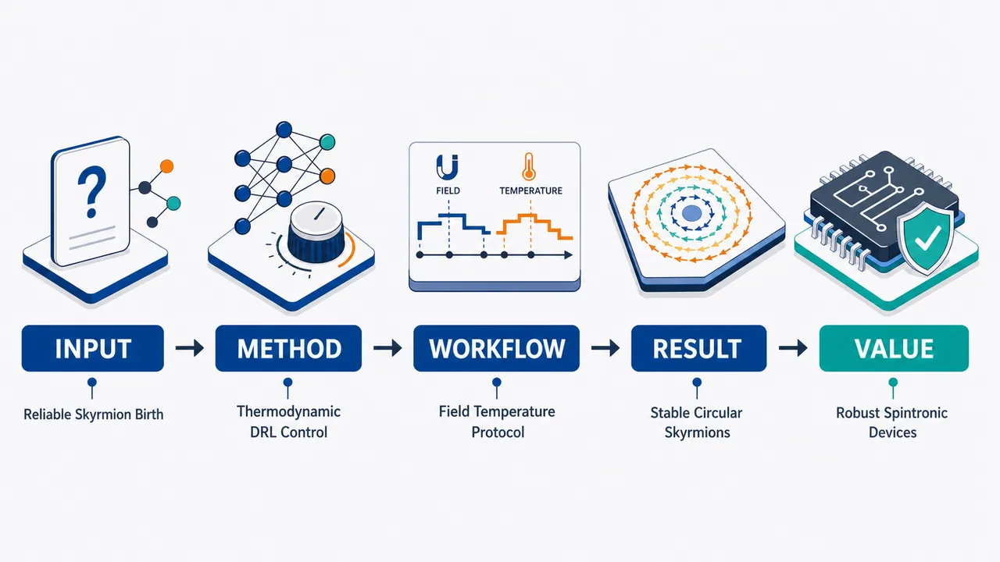
研究问题如何在热涨落强、成核随机的 Fe₃GeTe₂ 单层中，把初始条纹畴可靠地转化为单个孤立磁斯格明子，并同时避免生成后因形变、高能量非平衡态而快速湮灭。创新方法用深度强化学习自动设计随时间变化的 Hₓ、H_z 与温度 T 控制协议；关键 Aha 点是把“最终拓扑荷 |Q|=1”和“耗散功 W_f 最小化”共同写入代价函数，使智能体不仅学会成核，还被热力学约束引导生成接近平衡能量分布、近圆形、低耗散的稳定斯格明子。工作流程输入 Fe₃GeTe₂ 单层初始条纹畴与随机热噪声轨迹；智能体输出动态磁场–温度路径 Hₓ(t)、H_z(t)、T(t)；随机 LLG 微磁模拟演化自旋纹理；计算最终拓扑荷、耗散功、储库熵变与能量分布；遗传算法在 200 代中优化协议，并对 10 条独立热噪声轨迹取平均；最终输出高成功率、低耗散、近平衡的孤立斯格明子生成协议。关键结果传统固定温度扫场在 700 次试验中斯格明子成功率仅 16.4%；DRL 协议第 50 代提升到 41.3%，第 200 代达到 77.5%。第 200 代生成的斯格明子面积为 282 ± 133 nm²，接近平衡面积 272 nm²；第 50 代为 4791 ± 2140 nm²，过大且分散。耗散功从 458.43 eV 降至 218.59 eV，KL 散度从约 0.52 降至约 0.03，生成态更接近平衡分布并更抗热涨落。应用价值该研究提供了一种可自动发现可靠斯格明子制备路径的物理约束 DRL 框架，可用于提高自旋电子学器件、赛道存储、逻辑门和神经形态器件中拓扑磁结构的制备成功率与热稳定性，并为非平衡热力学约束驱动的材料控制策略提供范式。第一部分：核心概览 (Overview)
该研究将深度强化学习、随机微磁模拟与非平衡热力学约束结合，用于优化 Fe₃GeTe₂ 单层中孤立磁斯格明子的生成路径。核心贡献在于：控制变量不再局限于固定温度下的磁场扫描，而是同时优化面内磁场、面外磁场与温度的动态轨迹，并在代价函数中加入耗散功，以约束生成态接近平衡分布。相比传统固定温度场扫的 16.4% 成功率，成熟 DRL 协议达到 77.5%；同时生成的斯格明子尺寸接近平衡值、形状更圆、热弛豫寿命更长。其领域地位在于把“高成功率成核”推进到“高成功率且热稳定成核”的协议设计层面。
---
第二部分：结构化快速回顾
《Optimized control protocols for stable skyrmion creation using deep reinforcement learning》（None，）
背景
磁斯格明子因其非零整数拓扑荷和纳米尺度稳定性，被视为自旋电子学、赛道存储器、逻辑器件和非常规计算的重要候选单元。实际应用的关键障碍是：成核过程随机、成功率有限；有限温度下热涨落削弱拓扑保护，使孤立斯格明子寿命缩短；Fe₃GeTe₂ 中 Ms 与 K 强烈依赖温度，进一步增加生成路径设计难度。
方法
在 Fe₃GeTe₂ 单层随机 LLG 微磁模拟中训练 DRL 智能体，输出时间依赖的 Hx(t)、Hz(t)、T(t)。代价函数由两部分组成：最终拓扑荷偏离单位值的项 ||Qf|−1|，以及归一化耗散功项 ks Wf/(kBTf)。训练采用遗传算法迭代 200 generations，每个代价评估平均 10 条独立热噪声轨迹。
结果
传统固定温度场扫生成稳定斯格明子的成功率仅 16.4% / 700 cases；DRL 第 50 代达到 41.3% / 300 cases，第 200 代达到 77.5% / 200 cases。第 200 代协议呈近似正弦形式，拟合优度 R²≈0.98。耗散功从第 50 代的 458.43 eV 降至第 200 代的 218.59 eV；KL 散度从 ≈0.52 降至 ≈0.03。
讨论
DRL 协议通过短暂升温“借用”热涨落能量，使系统更容易跨越局域能垒并形成面内绕转结构。耗散功最小化使生成态更接近平衡能量分布，斯格明子面积从第 50 代的 4791±2140 nm² 收敛到第 200 代的 282±133 nm²，接近平衡面积 272 nm²。形状上，第 200 代协议生成的斯格明子更接近圆形，热弛豫中面积与椭圆率均保持有界。
局限
结果主要基于 Fe₃GeTe₂ 单层的数值模拟，实际器件中缺陷、边界、三维厚度效应、电流驱动、材料不均匀性和实验温控/场控带宽尚未纳入。训练细节依赖补充材料，部分统计如 10 ns 弛豫后的完整 survival rate 数据在给定内容中不完整。
结论
物理约束型 DRL 可以自动发现高成功率、低耗散、热稳定的斯格明子生成协议。将拓扑荷目标与耗散功最小化结合，比单纯追求最终磁构型更有效；耗散功通过上界约束 KL 散度，为稳定成核提供了清晰的热力学机制。
---
第三部分：逐章节冷凝解析 (Section-by-Section Condensing)
Abstract
Stable skyrmion creation is framed as a thermally constrained control problem
稳定磁斯格明子生成被定义为面向实际自旋电子器件的核心前提，尤其是在热涨落环境中。摘要明确指出，稳定生成不是单纯得到拓扑荷为 ±1 的瞬态结构，而是要获得能在热扰动下保持寿命的孤立斯格明子；原文表述为 *"Generating stable magnetic skyrmions is essential for the practical application of skyrmion-based spintronic devices in thermally agitating environments."*
DRL optimizes coupled magnetic-field-temperature paths
核心方法是使用深度强化学习寻找动态的磁场—温度路径，而非固定温度下扫描磁场。控制变量包括外磁场和温度，目标是提高 Fe₃GeTe₂ 单层中的成核成功率与热稳定性；关键表述为 *"we present a deep reinforcement learning (DRL) approach to identify advanced dynamic magnetic-field-temperature paths that create skyrmions with enhanced thermal stability."*
Optimized paths outperform fixed-temperature field sweeps
训练后的 DRL 智能体在 Fe₃GeTe₂ 单层中发现优于传统固定温度场扫的方法。摘要没有给出具体成功率数值，但在 Results 中量化为传统场扫 16.4%，第 200 代 DRL 77.5%；摘要对应判断为 *"The trained DRL agent discovers an optimized field-temperature path that achieves a higher success rate for skyrmion formation in Fe3GeTe2 monolayers compared to previous fixed-temperature field sweeps."*
Longer lifetime originates from isotropic shape and equilibrium size
生成后的斯格明子寿命更长，机制不是发现新的拓扑态，而是形成更接近平衡局域能量极小值的结构：形状各向同性、尺寸接近平衡值。摘要直接给出因果链：*"the generated skyrmions exhibit longer lifetimes due to their isotropic shape and equilibrium size, both of which place them near a local energy minimum and thereby hinder annihilation."*
Dissipated work minimization links DRL performance to KL-divergence control
创新的热力学解释是：最小化耗散功 Wf 可以上界约束生成态分布与平衡分布之间的 Kullback–Leibler divergence，从而使被驱动产生的斯格明子更接近平衡态。摘要给出核心机制：*"these advancements stem from the targeted minimization of the dissipated work, which ensures that the driven skyrmion states remain close to their equilibrium distributions by upper-bounding the Kullback–Leibler divergence."*
---
I Introduction
Magnetic skyrmions are topological spin textures for future information technologies
磁斯格明子被定义为具有非零整数拓扑荷的拓扑自旋纹理，应用指向自旋电子学、非常规计算、逻辑门、赛道存储器与神经形态突触。原文直接界定其技术地位：*"Magnetic skyrmions—topological spin textures characterized by non-zero integer topological charges—are anticipated to be essential building blocks for future applications in spintronics and unconventional computing techniques."* 进一步强调生成孤立斯格明子的重要性：*"developing methods for the controlled generation of isolated skyrmions is crucial—particularly for logic gates, racetrack memories, and neuromorphic synapses."*
Current skyrmion nucleation remains probabilistic rather than deterministic
已有成核方法受内禀随机性限制，导致生成不是完全可靠，而是概率性事件。这一点构成 DRL 优化的直接动机。原文指出：*"the inherent stochasticity of the nucleation process within these methods often limits the success rate, rendering their creation probabilistic rather than fully reliable."*
Thermal fluctuations weaken topological protection
有限温度下，拓扑保护并不等于无限寿命；热涨落会促使孤立斯格明子变为短寿命暂态。原文说明：*"thermal fluctuations undermine the efficacy of topological protection, forcing isolated skyrmions into transient states and significantly shortening their functional lifetimes at finite temperatures."* 这意味着评价生成协议不能只看最终时刻 Q=±1，还必须看后续热弛豫稳定性。
Temperature-dependent material parameters create path-dependent failure modes
Fe₃GeTe₂ 中单离子各向异性等磁参数强烈依赖温度，导致从起点到终点的参数空间转移可能失败。原文指出：*"magnetic parameters such as single-ion anisotropy often exhibit strong temperature dependence, which can lead to the failure of skyrmion creation during transitions between the start and end points in the parameter space, as observed in Fe3GeTe2."* 这为把 T(t) 纳入控制协议提供了物理理由。
The central unsolved problem is simultaneous deterministic formation and long-term thermal stability
关键挑战并非单一提高成核概率，而是同时达到高保真生成与长期热稳定性。原文明确概括：*"achieving both deterministic formation and long-term thermal stability of isolated skyrmions remains a critical hurdle for the development of robust skyrmion-based technologies."*
The DRL framework controls both magnetic field and temperature
研究方案是训练 DRL 智能体，在 Fe₃GeTe₂ 单层微磁模拟中生成时间依赖的磁场和温度控制协议，使初始条纹畴转化为孤立斯格明子。原文表述为 *"Our DRL agents are trained to generate dynamic control protocols for the magnetic field and temperature within micromagnetic simulations of FGT monolayers, facilitating skyrmion nucleation from an initial stripe domain configuration."*
The cost function combines topological charge and dissipated work
训练目标不是只判断最终图像是否像斯格明子，而是结合最终拓扑荷与路径耗散功。原文说明：*"We design a cost function for the training as a sum of the topological charge and the dissipated work, which are determined by the final spin configuration and the magnetic field and temperature profiles, respectively."* 这一区别是方法创新的核心。
Thermodynamic constraints improve stability beyond final-configuration-only objectives
相比此前只基于最终磁构型的代价函数，该方案加入热力学约束，用于增强生成态热稳定性。原文对比为：*"Compared to the previous cost function based solely on the final spin configuration, our scheme exploits thermodynamic constraints, thereby enhancing the thermal stability of the created skyrmions."*
Minimized dissipation produces isotropic, equilibrium-sized skyrmions
通过最小化耗散功，学习到的协议产生更接近平衡态的斯格明子：形状更各向同性、尺寸更接近平衡值、寿命更长。原文表述为 *"through the minimization of dissipated work, the learned protocols produce skyrmions that retain an isotropic shape and equilibrium size, thereby exhibiting enhanced longevity compared to those generated under highly dissipative control schemes."*
---
II Results
Micromagnetic simulations target Fe₃GeTe₂ monolayers with perpendicular anisotropy and interfacial DMI
模拟对象是 Fe₃GeTe₂ 单层，其斯格明子稳定性来自显著垂直磁各向异性与界面反演对称性破缺导致的界面 Dzyaloshinskii–Moriya interaction (DMI)。原文为：*"Our micromagnetic simulations are performed on an FGT monolayer. This material demonstrates skyrmion stabilization due to its substantial perpendicular magnetic anisotropy and interfacial Dzyaloshinskii-Moriya interaction (DMI) arising from the broken inversion symmetry at the substrate interface."*
The magnetic energy density includes exchange, anisotropy, DMI, Zeeman, and demagnetizing terms
能量密度包含五类关键项：交换刚度 A(∇m)²、单轴各向异性 −Kmz²、界面 DMI、Zeeman 能 −μ0Ms m·H、退磁能 −μ0Ms m·Hdemag/2。原文给出完整表达：*"The magnetic energy density used in the simulation is given by"* 随后列出
ℱ = A(∇m)² − Kmz² + D[mz(∇·m) − (m·∇)mz] − μ0Ms m·H − μ0Ms m·Hdemag/2。
其中 m=(mx,my,mz) 是单位磁化矢量，原文说明：*"where m=(mx,my,mz) is the unit magnetization vector and Ms is the saturation magnetization at temperature T."*
Temperature dependence of Ms and K is explicitly included
Fe₃GeTe₂ 的饱和磁化强度 Ms 和单轴各向异性 K 对温度高度敏感，这会显著影响斯格明子形成。原文指出：*"In FGT, both Ms and K exhibit a strong temperature dependence, which significantly influences skyrmion formation."* 因此模拟采用已有实验/理论函数：*"we adopted the temperature-dependent functions from Ref. 28 for Ms and K."*
Thermal effects are modeled using stochastic LLG in MuMax3
热涨落通过随机 Landau–Lifshitz–Gilbert 方程纳入，计算平台为 MuMax3。原文写道：*"To incorporate thermal effects, we performed micromagnetic simulations using the stochastic Landau-Lifshitz-Gilbert (LLG) equation via the MuMax3 software package."* 同时，为降低有限尺寸效应，面内方向使用周期边界条件：*"Periodic boundary conditions were imposed in the in-plane directions to minimize finite-size effects."*
The conventional field-sweep protocol follows in-plane compression, out-of-plane pinch-off, and relaxation
基准方法是固定温度磁场扫描。初始态为条纹畴；25–45 ps 加面内场 Hx 压缩条纹宽度；35–80 ps 加面外场 Hz 使条纹 “pinch off”；80–100 ps 将 (μ0Hx, μ0Hz) 缓慢调至目标值 (0, 0.15 T)。原文细节为：*"an in-plane field Hx is applied ... from 25 to 45 ps"*，*"The subsequent application of an out-of-plane field Hz ... from 35 to 80 ps causes the stripe to 'pinch off'"*，以及 *"the spin configuration is relaxed from 80 to 100 ps by gradually ramping ... toward the target values of (0,0.15 T)."*
Baseline field sweep produces stable skyrmions in only 16.4% of 700 trials
传统场扫最终产生孤立斯格明子的比例为 16.4% / 700 cases。原文给出统计结果：*"an isolated skyrmion with Q=-1 is successfully created by the end of the simulation, accounting for 16.4% of the cases out of 700 cases."* 拓扑荷定义为
Q=∬q(x,y)dxdy，局域拓扑荷密度为
q(x,y)=1/(4π) m·(∂xm×∂ym)；原文为：*"Here, Q=∬q(x,y)dxdy represents the topological charge, defined via the local charge density q(x,y)=..."*
Field-sweep nucleation proceeds through skyrmion–antiskyrmion intermediates
成功路径中，中间态可以包含一个斯格明子和两个反斯格明子，或一个斯格明子–反斯格明子对；随后反斯格明子依次湮灭，留下单个斯格明子。原文描述为：*"The intermediate state in this process displays one skyrmion and two antiskyrmions bound together"*，以及 *"The successive annihilation of these antiskyrmions eventually leads to an isolated single skyrmion."* 拓扑荷时间序列经历 Q=1 → Q=0 → Q=−1，原文为：*"the time evolution of the topological charge stepping through Q=1, Q=0, and finally Q=-1."*
Field sweep has multiple failure channels
传统场扫的其余结果分布为：7.4% 生成反斯格明子 Q=+1，但其内在不稳定并会湮灭；39.4% 形成拉长的单斯格明子并在弛豫中湮灭；36.8% 条纹畴未能 pinch off。原文给出：*"an antiskyrmion with Q=+1 is nucleated in 7.4% of the trials"*，*"in 39.4% of the cases, a single skyrmion may develop an elongated geometry and subsequently annihilates during relaxation"*，以及 *"the remaining 36.8% of the cases result in unsuccessful nucleation, where the initial stripe domain simply fails to pinch off."*
The DRL cost function enforces unit topological charge and penalizes dissipated work
DRL 智能体输出 Hx(t)、Hz(t)、T(t)，优化代价函数
ϕ[Hx(t),Hz(t),T(t)] = ||Qf|−1| + ks Wf/(kBTf)。原文给出：*"During training, the agent’s parameters are progressively optimized to minimize the following cost function"*。第一项确保 |Qf|=1，即得到单个拓扑对象；原文解释：*"By ensuring |Qf|=1, the agents facilitate the transformation of an initial stripe domain configuration into a skyrmion state."*
Dissipated work is generalized for temperature-varying protocols
耗散功定义为
Wf = ΔE(τf) + Tf ΔSres(τf)，其中 ΔE 是内部磁能变化，Tf 等于初始温度，ΔSres 为热库熵产生。原文给出：*"Wf accounts for the dissipated work generated during the control trajectory, defined as: Wf=ΔE(τf)+TfΔSres(τf)."*
热库熵产生公式为
ΔSres = ∫dt∫dr [Ms(T(t))/T(t)] μ0 ṁ(r)·Heff[m]，原文为：*"The term ΔSres quantifies the entropy production in the thermal reservoir."*
The weighting factor ks establishes a hierarchy between topology and thermodynamics
耗散功权重设为 ks=1.38×10⁻⁸，用于平衡拓扑荷目标与耗散项。原文说明：*"The weighting factor ks=1.38×10−8 controls the relative influence of the dissipated work against the topological charge within the cost function."* 训练策略要求先确保单位拓扑荷，再优化耗散功；原文为：*"an optimal value of ks=1.38×10−8 successfully implements this hierarchy, ensuring the unit topological charge is secured before work minimization dominates the later training stages."*
Minimizing dissipated work upper-bounds nonequilibrium deviation from equilibrium
生成态分布 ρ(ℱ) 与最终参数下理想平衡分布 ρeq(ℱ) 的偏离由 KL 散度衡量：
DKL(ρ||ρeq)=∫ρ(ℱ)ln[ρ(ℱ)/ρeq(ℱ)]dℱ。原文说明：*"This deviation is closely linked to the thermodynamic lag ... and can be quantitatively measured by the Kullback-Leibler (KL) divergence."*
关键不等式为
DKL(ρ||ρeq) ≤ Wf/(kBTf)，原文为：*"Crucially, the KL divergence is upper-bounded by the dissipated work Wf."* 这给出了耗散功最小化与热稳定性的理论桥梁。
The training averages over thermal stochasticity
每次代价函数评估平均 10 条独立轨迹，每条轨迹对应不同热噪声实现，从而优化热系综而非单条偶然轨迹。原文为：*"the cost function ϕ was averaged over 10 independent trajectories, each subject to a different realization of the thermal field."* 目的为：*"This approach ensures that the agent optimizes the cost function across the thermal ensemble, rather than a single trajectory."*
Optimization uses a genetic algorithm over 200 generations
协议优化采用遗传算法，迭代 200 generations。原文写道：*"The optimization was executed via a genetic algorithm over 200 iterations to produce successive 'generations'."* 第 50 代代表中间训练状态，第 200 代代表成熟训练状态；原文说明：*"Figures 2(b)–(c) illustrate ... the 50th and 200th generations, representing intermediate and maturely trained versions, respectively."*
DRL discovers stronger fields and temperature elevations
第 50 代和第 200 代智能体均学到比场扫更强的磁场幅值，并使用显著升温。原文指出：*"Both agents evolve strategies characterized by field magnitudes exceeding those of the field-sweep method and exploit substantial thermal elevations."* 物理解释是高温产生热随机自旋构型，有助于形成斯格明子所需的面内绕转纹理：*"the agents strategically leverage thermally-randomized spin configurations, induced by these temperature increases, to facilitate the formation of the in-plane winding textures necessary for skyrmion nucleation."*
Temperature elevation lowers magnetic barriers through Ms and K reduction
升温还降低 磁各向异性 K 和 饱和磁化强度 Ms，使系统更容易进入面内绕转态。原文表述为：*"these elevated temperatures provide an additional advantage by reducing both the magnetic anisotropy and saturation magnetization, effectively lowering the energy barrier required to transition into the requisite in-plane winding states."*
The mature protocol is nearly sinusoidal
第 200 代控制协议可由正弦函数良好拟合，所有控制量拟合优度 R²≈0.98。图注给出拟合参数：Ax=−3.48 T，Az=3.09 T，AT=198.26 K，τf=100 ps；原文图注为：*"Dashed lines represent sinusoidal fitting functions with the fitted parameters: Ax=-3.48 T, Az=3.09 T, AT=198.26 K, and τf=100 ps."* 正文补充：*"the control protocols at the 200th generation are well-fitted to sinusoidal forms, yielding R2≈0.98 in all cases."*
DRL nucleation retains the same qualitative three-step mechanism but differs in details
DRL 路径也经历三步：面内场压缩条纹、面外场形成泡状畴并产生斯格明子/反斯格明子、弛豫中反斯格明子湮灭留下孤立斯格明子。原文为：*"the agent-predicted trajectories follow a three-step nucleation process qualitatively similar to the field-sweep method: (I) compression of the stripe width via an in-plane field; (II) formation of bubble-like domains ...; and (III) relaxation ... resulting in an isolated skyrmion state."*
差异在于第 200 代中间态只包含单个斯格明子–反斯格明子对，且更早稳定为孤立斯格明子：*"that for the 200th-generation agent exclusively consists of a single skyrmion–antiskyrmion pair"*，以及 *"the stabilization of an isolated single skyrmion occurs significantly earlier with the 200th-generation agent."*
Mature DRL generates equilibrium-sized skyrmions instead of oversized ones
第 50 代生成斯格明子面积分散很大，A=4791±2140 nm²，示例达到 7697 nm²，远大于平衡值 272 nm²。原文为：*"Skyrmions generated at the 50th generation exhibit significant size dispersion, with areas of A=4791±2140 nm2; for instance ... A=7697 nm2, considerably exceeding the equilibrium value of A=272 nm2."*
第 200 代面积为 A=282±133 nm²，示例 240 nm²，接近平衡值。原文为：*"skyrmions produced at the 200th generation closely match the equilibrium size (A=282±133 nm2), as exemplified by A=240 nm2."*
The DRL advance is reliable access to the same stable state, not discovery of a new state
方法的主要进展不是找到一种全新的更稳定斯格明子，而是更可靠地产生与传统方法相同的稳定孤立斯格明子态。原文明确限定创新边界：*"the main advance of the DRL framework lies in its ability to reliably nucleate the same stable skyrmion state as the field-sweep method, rather than discovering a new or more stable one."*
Training improves nucleation fidelity from 41.3% to 77.5%
随训练推进，拓扑荷偏离项单调下降，成功率从第 50 代 41.3% / 300 cases 上升至第 200 代 77.5% / 200 cases，显著优于传统场扫 16.4%。原文为：*"the deviation of the topological charge from unity ... exhibits a monotonic decrease"*，以及 *"the skyrmion creation success rate increased significantly throughout the training process, rising from 41.3% out of 300 cases at 50th generation to 77.5% by 200th generation out of 200 cases."*
The mature agent uses transient negative entropy production to borrow thermal energy
第 200 代协议在初期出现负热库熵产生，意味着系统从环境吸收热能。原文指出：*"the control protocol for the 200th generation exhibits negative values of entropy production during the initial simulation stages."* 热交换关系为
δQ = −TδSres = −μ0Msδt∫dr Heff·ṁ，其中 δQ>0 表示系统吸收能量。原文解释：*"a positive value (δQ>0) indicates energy absorption by the system."*
Absorbed thermal energy helps overcome local energy barriers
热能吸收帮助系统跨越局域能垒，提高成核概率。原文直接给出机制：*"The absorbed thermal energy enables the system to surmount local energy barriers, thereby facilitating the nucleation of the skyrmion state with higher probability."* 这与传统场扫不同，后者热库熵产生单调增加：*"This energy absorption mechanism stands in sharp contrast to the field-sweep method, which exhibits a monotonic increase in entropy production."*
Reservoir entropy production decomposes into deterministic and thermal components
热库熵产生被分解为确定性项与热涨落项：
ΔSres = ΔSres(det) + ΔSres(th)。原文为：*"we decompose the reservoir entropy production into the following form."* 确定性项
ΔSres(det)=ημ0α∫dt∫dr Ms/T |m×Heff|²
严格非负；热涨落项可为负。原文强调：*"the thermal fluctuation component ΔSres(th) can take negative values"*，而 *"the deterministic component ΔSres(det) ... remains strictly non-negative."*
Negative thermal damping drive can temporarily reverse dissipative relaxation
投影 LLG 方程显示热场可分解为进动驱动与阻尼驱动，其中负的 H̃thdmp 会抵抗 Gilbert 阻尼，使磁构型短暂回到较早状态。原文为：*"a negative H̃thdmp opposes the deterministic Gilbert damping process, temporarily 'reversing' the magnetic configuration to an earlier state."* 这种回退增加状态空间探索机会：*"This backward fluctuation provides additional opportunities for the system to explore the state space."*
Thermal fluctuation effects become stronger at elevated temperature
热驱动幅度随 √(kBT) 增大，因此升温会放大涨落驱动的状态空间探索。原文为：*"Since the average magnitudes of both H̃thdmp and H̃thpre scale with √kBT, such fluctuation-driven excursions become increasingly pronounced at elevated temperatures."* 这解释了 DRL 为什么倾向使用显著升温。
Dissipated work minimization continues after topological success is achieved
耗散功项训练过程中非单调：前 30 generations 下降，约第 50 generation 大幅增加，之后再次下降。原文为：*"The dissipated work ... exhibits a nonmonotonic evolution during training: it initially decreases through the first 30 generations, undergoes a substantial increase near the 50th generation, and subsequently resumes a downward trend."* 这说明只学会生成 |Q|=1 不够，仍需更长训练来优化稳定性：*"minimizing dissipated work requires a training duration extending well beyond the initial convergence of the unit topological charge."*
High dissipated work corresponds to high-energy nonequilibrium skyrmions
第 50 代平均耗散功 ⟨Wf⟩=458.43 eV，生成态能量分布偏向高能区域；平均能量密度 ⟨ℱ⟩=1.243±0.0012 MJ/m³，高于稳定态 1.189±0.0004 MJ/m³。原文为：*"At the 50th generation, where the dissipated work remains substantial (⟨Wf⟩=458.43 eV), ρ(ℱ) is significantly biased toward higher-energy regions relative to the equilibrium distribution."* 以及 *"the average magnetic energy density ... is 1.243±0.0012 MJ/m3 ... higher than the stabilized state value of 1.189±0.0004 MJ/m3."*
Low dissipated work corresponds to equilibrium-like low-energy skyrmions
第 200 代平均耗散功降至 ⟨Wf⟩=218.59 eV，能量分布接近平衡分布，平均能量密度 1.197±0.0010 MJ/m³，接近稳定态。原文为：*"By the 200th generation, however, as the dissipated work becomes minimal (⟨Wf⟩=218.59 eV), ρ(ℱ) closely approaches ρeq(ℱ)."* 以及 *"The corresponding average magnetic energy density, ⟨ℱ⟩=1.197±0.0010 MJ/m3, nearly converges to the stabilized state value."*
KL divergence quantitatively tracks convergence to equilibrium
KL 散度从第 50 代约 0.52 降至第 200 代约 0.03，与耗散功降低和能量密度下降同步。原文为：*"The KL divergence exhibits a marked reduction, dropping from DKL≈0.52 at the 50th generation to a negligible DKL≈0.03 by the 200th generation."* 这支持耗散功通过上界控制 KL 散度的假设：*"minimizing dissipated work facilitates the minimization of the KL divergence by lowering its upper bound."*
Thermal relaxation tests use final protocol parameters for 10 ns
热稳定性通过将生成的斯格明子纹理作为初态，在最终参数 μ0H=(0,0,0.15) T，T=100 K 下进行弛豫模拟。原文为：*"These simulations were conducted under the final parameter set of the protocols: μ0H=(0,0,0.15) T and T=100 K."* 生存率定义为 10 ns 内保持存在的比例：*"The survival rate ... is defined as the fraction of skyrmions that persist throughout the 10 ns simulation window."*
Ellipticity quantifies deviation from circularity
椭圆率定义为
δ=(λ+−λ−)/λ+，其中 λ+≥λ−>0 是耗散张量特征值。δ=0 表示完美圆形，δ→1 表示强椭圆畸变。原文为：*"δ=0 corresponds to a perfectly circular profile, while δ→1 represents highly elliptical distortion."*
Field-sweep antiskyrmions collapse during relaxation
传统场扫生成的反斯格明子面积持续减小，椭圆率从 0.44 增至 0.62，峰值出现在 t=227.3 ps，随后坍缩为铁磁基态。原文为：*"A decreases steadily, while δ increases from its initial value of 0.44 to a maximum of 0.62 at t=227.3 ps."* 原因与各向同性界面 DMI 中反斯格明子能量不利相关：*"antiskyrmions are energetically unfavorable in systems with isotropic interfacial DMI."*
Oversized 50th-generation skyrmions collapse rapidly
第 50 代生成的过大斯格明子在初始呼吸模振荡后快速缩小，椭圆率在 t=31 ps 达到 δ=0.47，并在 t=32.7 ps 坍缩。原文为：*"Following initial breathing-mode oscillations (t≲20 ps), the skyrmion undergoes a rapid reduction in size."* 以及 *"driving the ellipticity to a sharp peak of δ=0.47 at t=31 ps, leading to collapse at t=32.7 ps."*
Elliptic distortion mode may trigger collapse
过大斯格明子湮灭可能由热激发的 elliptic distortion mode (l=2) 引发，该模式导致坍缩前形状椭圆化。原文为：*"One possible explanation for such annihilation is the thermally activated excitation of the elliptic distortion mode (l=2), which can induce elliptical deformation of the skyrmion prior to collapse."*
200th-generation skyrmions remain bounded in area and ellipticity
第 200 代生成的斯格明子保持拓扑完整，面积和椭圆率仅有界振荡；所有实现中 A<428 nm² 且 δ<0.39。原文为：*"the skyrmion generated by the 200th-generation protocol remains topologically intact"*，以及 *"across all realizations, the ensemble-wide maxima remain bounded by A<428 nm2 and δ<0.39."* 这说明其接近平衡构型，降低热激发坍缩概率：*"the skyrmion remains close to the equilibrium configuration and thereby reducing the likelihood of thermally activated collapse."*
Effective success rate includes both creation and post-relaxation survival
最终性能不仅看协议结束时是否生成 Q=±1，还看 10 ns 弛豫后是否仍为稳定斯格明子。原文定义：*"the effective success rate is defined as the fraction of simulations that ultimately yield a stable skyrmion after the full protocol and relaxation process."* 传统场扫的 survival rate 为 100%，但这是因为不稳定斯格明子已在协议阶段坍缩，只留下稳定构型；原文为：*"The field-sweep method exhibits a survival rate of 100%, indicating that unstable skyrmions collapse during the protocol, leaving only thermally stable configurations."*
---
第四部分：深度理解与语言支持 (Understanding & Nuance)
1. 术语解析
#### Dissipated work
Dissipated work 在这里不是普通意义上的“做功”，而是衡量外部控制路径使系统偏离准静态平衡路径的不可逆代价。温度变化时，使用广义定义 Wf=ΔE+TfΔSres，而非传统等温形式 W−ΔF。其学术含义是：控制越剧烈、越远离平衡，耗散功越大；生成态越可能处于高能、非平衡、短寿命构型。
#### Thermodynamic lag
Thermodynamic lag 指被驱动系统的实际状态分布滞后于瞬时外参对应的平衡分布。即便最终磁场和温度已经到达目标值，磁构型分布也可能仍然“停留”在高能或畸变状态。该概念连接了非平衡动力学与生成态稳定性。
#### Kullback–Leibler divergence
KL divergence 衡量两个概率分布的差异，这里是生成态能量分布 ρ(ℱ) 与平衡能量分布 ρeq(ℱ) 的差异。它不是简单距离，具有非对称性；DKL≈0 表示生成态分布几乎无法与平衡分布区分。该研究的关键点是 DKL ≤ Wf/(kBTf)，所以降低耗散功可以间接压低非平衡偏离。
#### Pinch off
Pinch off 在磁畴语境中指条纹畴被外场压缩并局部断裂，形成泡状或孤立拓扑纹理前驱体。它不是简单“缩小”，而是拓扑成核过程中的几何断裂步骤。传统场扫与 DRL 协议都依赖这一过程。
#### Elliptic distortion mode
Elliptic distortion mode (l=2) 是斯格明子的形变本征模式之一，对应从圆形变为椭圆形的振荡或失稳。与呼吸模不同，呼吸模主要改变半径，椭圆模改变形状各向同性。热激发该模式会降低坍缩路径的能垒，使斯格明子更易湮灭。
---
2. 疑难查证
#### 为什么最小化耗散功会提高斯格明子寿命？
斯格明子是否稳定，不只由拓扑荷决定。拓扑荷 Q=−1 可以对应很多不同微观构型：圆形、椭圆形、过大、过小、高能、低能。过大或椭圆化的斯格明子虽然暂时有正确拓扑荷，但处在非平衡高能区域，热涨落只需较小扰动就能触发坍缩路径。
耗散功越大，说明外部协议把系统推得越远，最终状态分布越偏离平衡分布。由于
DKL(ρ||ρeq) ≤ Wf/(kBTf)，降低 Wf 相当于压低“偏离平衡的上限”。当生成态分布更接近平衡分布时，斯格明子更可能处在局域能量极小值附近，面积接近平衡值、椭圆率较低，热弛豫时不易进入坍缩通道。
#### 为什么升温反而有助于生成稳定斯格明子？
升温看似会破坏磁有序，但在成核阶段具有两种正面作用。
第一，Fe₃GeTe₂ 的 Ms 和 K 随温度变化，高温降低各向异性能垒，使条纹畴更容易形成面内绕转结构。第二，热噪声增加状态空间探索概率，系统更容易偶然跨越成核能垒。DRL 学到的不是简单“越热越好”，而是在特定时间窗口升温以借用热涨落，随后回到目标温度并通过低耗散路径获得接近平衡的孤立斯格明子。
#### 负熵产生是否违反第二定律？
短时间、单轨迹或小系统中，热库熵产生可以暂时为负，这不违反第二定律。第二定律约束的是平均意义和完整过程的不可逆趋势。这里第 200 代协议初期出现负 ΔSres，表示系统从热库吸收能量；最终累计熵产生仍为正，整个过程仍耗散能量。负熵产生在这里是热涨落驱动的瞬态事件，被 DRL 协议利用来提高跨越能垒的概率。
#### 为什么第 50 代成功生成的斯格明子反而不稳定？
第 50 代已经部分学会让 |Qf|=1，但还没有充分学会降低耗散功。结果是生成了拓扑上正确但形态上不平衡的斯格明子：面积 4791±2140 nm²，远大于平衡值 272 nm²。这种过大构型在弛豫中快速收缩，容易激发 l=2 椭圆畸变模式，最终坍缩。第 200 代则把面积压到 282±133 nm²，几乎等于平衡尺寸。
---
第五部分：创新评估与关联 (Synthesis & Novelty)
1. 创新性判断
#### 从“生成拓扑态”推进到“生成热稳定拓扑态”
近几年利用机器学习或强化学习控制磁系统的研究多集中在目标构型生成，即最终状态是否达到指定磁畴、磁化方向或拓扑荷。该研究的新颖之处在于把目标从 final spin configuration 扩展到 thermodynamically stable final distribution。也就是说，不只让系统在终点拥有 |Q|=1，还要求生成路径低耗散，使最终态接近平衡局域能量极小值。
#### 将非平衡热力学不等式嵌入 DRL 目标函数
关键创新是把耗散功作为 DRL 代价函数的一部分，并利用
DKL(ρ||ρeq) ≤ Wf/(kBTf)
建立理论解释。这比经验性调参更强，因为它给出可检验的物理机制：低耗散 → 小 KL 散度上界 → 生成态分布接近平衡 → 低能、圆形、寿命长。
#### 同时优化磁场和温度，而非固定温度场扫
传统方案通常在固定温度下扫描 Hx 和 Hz。该研究把 T(t) 作为主动控制维度，使 DRL 能利用 Fe₃GeTe₂ 中 Ms(T) 和 K(T) 的温度依赖性。温度不再只是噪声背景，而成为可设计的控制资源。
#### 发现“热能借用”机制
第 200 代协议在早期诱发负热库熵产生，使系统短暂吸收环境热能以跨越局域能垒。这种机制把热涨落从“稳定性的敌人”转化为“成核阶段的资源”。过去许多方法试图抑制热噪声；这里则在成核阶段利用热噪声，在结束阶段通过低耗散回到稳定分布。
#### 解决前人未同时解决的两难问题
前人方法通常面临两类局限：
- 成核成功率低，例如传统固定温度场扫仅 16.4%；
- 成功生成的拓扑对象可能是高能、椭圆、过大或短寿命状态。
该研究同时改善两者：第 200 代 DRL 成功率达到 77.5%，面积 282±133 nm² 接近平衡面积 272 nm²，KL 散度降至 ≈0.03，弛豫中 A<428 nm²、δ<0.39。这表明优化目标已经从“能生成”升级到“高概率生成接近平衡的稳定斯格明子”。
#### 现实应用意义
在自旋电子器件中，协议可重复性和热稳定性同等重要。单次生成成功率高但寿命短并不能满足存储或计算需求；寿命长但生成概率低也难以工程化。该研究提供了一种通用范式：将材料真实温度依赖、随机热噪声、拓扑目标和热力学耗散统一进控制协议优化流程，为后续实验中的脉冲磁场、温度脉冲、电流脉冲联合设计提供理论模板。
-
02
📊 含图深析
💡 亮点：交替磁序熔化可诱发键向列相。
📖 展开分析 + 配图
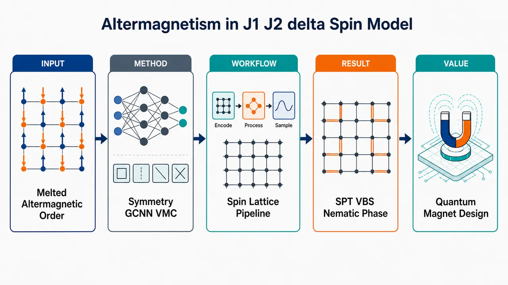
研究问题在自旋-1/2 平方晶格 J₁-J₂-δ 交错磁模型中，强几何阻挫和量子涨落把具有零净磁化、磁振子手性劈裂的交错磁长程序“熔化”之后，系统会进入普通量子自旋液体，还是形成新的无磁有序量子相？创新方法将群等变卷积神经网络量子态 GCNN 与变分蒙特卡洛 VMC、随机重构 SR 结合，把平移、C₄ᵥ 点群不可约表示、动量和自旋宇称直接编码进波函数；逐对称扇区优化基态与低能激发，从而同时解析交错磁区的左右手性磁振子劈裂，以及强阻挫区 SPT 价键固体与键向列序共存的无磁相。Aha 点是：不是只看能量最低态，而是用对称性分辨的神经网络波函数“拆开”不同手性、不同不可约表示的磁振子/类 triplon 模式。工作流程输入带周期边界的 L×L×4 平方晶格自旋组态与哈密顿量参数 J₁、J₂、δ；构造含 J₁ 最近邻键和 J₂(1±δ) 调制次近邻对角键的模型；用 GCNN 将每个自旋构型映射为复波函数振幅，并显式求和空间群操作；在固定动量、C₄ᵥ 不可约表示、自旋宇称和 Sᶻ 总量子数扇区内进行 MCMC 采样；通过 noisy SGD 预优化、自由能型退火损失和 SR/自然梯度下降优化波函数；计算能量、结构因子、平方交错磁化、能级谱和手性劈裂；最后对 L=4–9 的有限尺寸结果外推，判断交错磁序是否存在及熔化后形成的相。关键结果弱阻挫 J₂/J₁=0.2、δ=0.5 时，系统保持交错磁长程序：结构因子在 (π,π) 出现尖锐峰，热力学极限基态能量约 E₀/Nₛ≈-0.5912，平方交错磁化 mₛ²≈0.06364；不同手性磁振子发生交换驱动劈裂，最大劈裂出现在 q=(±π/2,π/2) 附近。强阻挫 J₂/J₁=0.5、δ=0.5 时，mₛ² 按临界标度衰减并在热力学极限趋零，(π,π) 峰变宽，交错磁长程序消失；熔化后不是简单无序自旋液体，而是出现 SPT 价键固体与 bond-nematic 键向列序共存的新相，机制表现为磁振子对凝聚，并伴随 U(1) 自旋旋转和 Z₂ 自旋反演对称性破缺。应用价值该研究把交错磁体从“零净磁化但有自旋/磁振子劈裂”的能带和激发谱问题，推进到强关联量子涨落诱导的新相图问题；为铁氧硫属化物、单层过渡金属氧化硫属化物和超冷原子光晶格中的交错磁候选体系提供可检验的无磁拓扑键序相；也为探索键向列态、SPT 价键固体、磁振子对凝聚、triplon 手性劈裂以及可能的退禁闭量子临界点提供了统一模型平台。第一部分：核心概览 (Overview)
自旋-1/2 平方晶格 (J₁₋J₂₋δ) 模型在弱阻挫区呈现交错磁性（altermagnetism），其标志是不同手性的磁振子模式发生非相对论交换驱动劈裂；在强阻挫且交换调制较大（(δ=0.5)）时，量子涨落熔化交错磁长程序，产生同时具有对称性保护拓扑价键固体（SPT VBS）与键向列序（bond-nematic order）的新型无磁有序相。方法上结合 GCNN 神经网络量子态与 VMC/SR，在最大 (9×9×4) 晶格上解析基态与激发谱。该工作把交错磁研究从能带、磁振子和自旋电子学性质推进到强关联量子涨落诱导的新奇相问题。
---
第二部分：结构化快速回顾
《Altermagnetism and bond-nematicity in the spin-1/2 square lattice J₁₋J₂₋δ model》（None，）
背景
交错磁体兼具铁磁体的自旋劈裂与反铁磁体的零净磁化特征。已有研究主要关注金属交错磁体的电子能带、自旋电子学和绝缘交错磁体的磁振子手性劈裂；强阻挫量子涨落熔化交错磁序后可能出现的量子相仍缺乏系统研究。
方法
采用 群等变卷积神经网络（GCNN）神经网络量子态结合变分蒙特卡洛（VMC）与随机重构/自然梯度下降（SR/NGD）。计算对象为带周期边界条件的 (L× L×4) 团簇，(L=4,łdots,9)，重点考察 (δ=0.5)、(J₂/J₁₌₀.2) 与 (0.5)。
结果
弱阻挫 (J₂/J₁₌₀.2) 下得到交错磁长程序，热力学极限基态能量约 (E₀/Nₛsimeq -0.5912)，平方交错磁化约 (mₛ²simeq0.06364)。强阻挫 (J₂/J₁₌₀.5) 下 (mₛ²→0)，磁长程序消失，并出现 SPT VBS 与 bond-nematic 共存相。
讨论
交错磁序的标志来自不同手性磁振子模式的劈裂，尤其在 (ěc q=(±π/2,π/2)) 附近最明显。强阻挫相中，磁振子对凝聚导致键向列性，并伴随 (U(1)) 自旋旋转和 (mathbb Z₂) 自旋反演对称性破缺。
局限
有限尺寸团簇、NQS 在有限系统中可能自发破缺 SU(2)、能量方差随尺寸增大、以及强阻挫区相边界未完整扫描，限制了对相图和临界行为的定量确定。给定文本在第四节后半部分截断，部分证据无法完整复核。
结论
交错磁序熔化并不只通向量子自旋液体；在较大交换调制下，强阻挫可稳定一种兼具拓扑价键固体与键向列序的非平庸量子相，为交错磁体邻近区的强关联量子物态提供了新的理论候选。
---
第三部分：逐章节冷凝解析 (Section-by-Section Condensing)
Abstract
Bond-nematicity emerges from melted altermagnetism
研究对象是绝缘交错磁材料中由阻挫增强与量子涨落诱导的交错磁序熔化，核心问题是熔化后是否产生键向列性。摘要明确指出研究目标为 *"appearance of bond-nematicity in insulating altermagnetic materials induced by increased frustration and quantum-fluctuations driven melting of the altermagnetic order"*。这里的关键不是普通反铁磁序熔化，而是具有交错磁手性劈裂特征的磁有序态被量子涨落破坏。
GCNN plus VMC is used as the central computational tool
方法采用结合对称性增强神经网络结构与变分蒙特卡洛的新型机器学习框架。英文表述为 *"Using novel machine learning approach that combines symmetry enhanced neural network architectures and variational Monte Carlo"*。具体模型为自旋-1/2 平方晶格 (J₁₋J₂₋δ) 模型，该模型在小几何阻挫区具有交错磁序，在强阻挫且小 (δ) 区具有无能隙自旋液体：*"known to have altermagnetic ordering in the regime of small geometric frustration and a gapless spin liquid phase in the regime of strong frustration and small exchange interaction modulation parameter (δ)"*。
Large exchange modulation produces a coexistence phase
在交换调制相对较大、交错磁区不同手性磁振子显著劈裂时，增强阻挫熔化交错磁序后出现新相。摘要给出最核心结论：*"melting of the altermagnetic order by increased frustration leads to an intriguing phase that hosts coexisting symmetry protected topological valence bond solid and bond-nematic orders"*。该相同时具有 SPT VBS 与 BN 两类序，意味着空间键序、拓扑保护和自旋双极矩序并存。
Magnon-pair condensation defines the bond-nematic phase
该相的微观机制是磁振子对凝聚，从而产生键向列性。摘要表述为 *"The phase is characterized by condensation of magnon pairs that results in bond-nematicity"*。同时该相破缺 (U(1)) 自旋旋转和 (mathbb Z₂) 自旋反演对称性：*"breaking of U(1) spin rotation and (Z₂) spin inversion symmetries"*。激发谱中还存在类 triplon 能级的手性劈裂：*"chiral splitting of the triplon-like energy levels in the excitation spectrum"*。
Strong quantum fluctuation physics near altermagnetism is underexplored
交错磁研究近年集中于交错磁矩对能带和超导等性质的影响，但强量子涨落与熔化相缺乏研究。摘要指出 *"influence of strong quantum fluctuations and phases that can result from melting of the altermagnetic order are much less explored"*。因此，该工作定位于识别交错磁序邻近区的奇异量子相：*"an important step in identifying exotic phases of matter that can emerge in vicinity of the altermagnetic order"*。
---
I Introduction
Altermagnetism forms a distinct magnetic class beyond ferromagnetism and antiferromagnetism
交错磁性是近年来提出的第三类共线磁有序范式，超越传统铁磁与反铁磁。原文称其为 *"A newly discovered type of magnetism termed altermagnetism"*，并指出其可能带来 *"research and technology advances beyond conventional magnetism encompassing traditional ferromagnetism and antiferromagnetism"*。其核心地位在于同时继承铁磁的自旋分裂与反铁磁的零净磁化优势。
Ferromagnets and antiferromagnets differ in band and magnon degeneracy
铁磁体中平行自旋导致净磁化，金属铁磁体电子能带出现交换诱导自旋分裂；绝缘铁磁体磁振子具有手性并可传输自旋流。原文写道 *"FMs are characterized by parallel spin alignment resulting in net magnetization"*，以及 *"ferromagnetic magnons are chiral ... and can carry spin currents"*。相反，常规反铁磁体在无外磁场时电子能带或相反手性磁振子在整个布里渊区保持简并：*"the opposite chirality magnon bands in insulating AFMs are degenerate across the entire BZ in the absence of an applied magnetic field"*。
Conventional antiferromagnetic degeneracy is symmetry-protected
常规共线反铁磁体中，空间反演或平移与时间反演组合会保持磁序不变，导致自旋简并。原文表述为 *"combination of inversion or translations with time reversal leaves the magnetic order invariant leading to the spin degeneracy of electronic bands or chiral antiferromagnetic magnons"*。因此，普通 AFM 的自旋分裂通常需要相对论性 SOC，例如 Rashba 或 Dresselhaus：*"the spin splitting of electronic bands appears only in the presence of relativistic spin-orbit coupling (SOC)"*。
Altermagnets replace translation or inversion with point-group symmetry
交错磁体的关键区别在于相反自旋子晶格并非由平移或反演结合时间反演联系，而是由点群操作结合时间反演联系。原文定义为 *"sublattices of opposite spin polarization are transformed into each other by combination of time reversal and a point group symmetry, for example rotational symmetry"*。这种对称结构导致高阶部分波自旋纹理：*"higher partial wave spin structures, typically d-, g- or i-wave"*。
Altermagnets exhibit non-relativistic spin splitting and chiral magnon splitting
交错磁体的非常规性质包括导体中的非相对论交换驱动电子自旋劈裂、绝缘体中不同手性磁振子模式劈裂、反常霍尔/能斯特效应和压磁效应。原文列举为 *"non-relativistic exchange driven spin splitting in electronic energy bands"* 与 *"splitting of magnon modes with different chiralities in insulating AMs"*。这一区别使交错磁体在自旋电子学中有特殊应用潜力。
Spintronics motivation comes from zero magnetization plus spin-channel separation
现有铁磁自旋存储依赖清晰分离且守恒的上下自旋通道，但净磁化限制器件的空间、时间和能量可扩展性。交错磁材料则可能兼具通道分离与零净磁化。原文指出其优势为 *"unique combination of well separated and conserved spin-up and spin-down channels with vanishing net magnetization"*。
Strong quantum fluctuation effects in altermagnets remain largely open
已有研究多关注交错磁矩对激发谱和超导等性质的影响，而由几何阻挫增强的量子涨落及其熔化相很少研究。原文直接指出 *"Influence of strong quantum fluctuations, introduced for example by increased geometric frustration, and possible exotic phases of matter that can emerge from melting the altermagnetic order are much less studied"*。相关前沿包括 Schwinger-boson 与 SU(2) 规范理论中预测的分数化拓扑自旋液体：*"possible fractionalized quantum spin liquid phases with topological order reached when quantum fluctuations destroy long-range altermagnetic spin order"*。
A new disordered phase with coexisting SPT VBS and BN orders is identified
研究核心创新是识别出一种新型无序相，包含对称性保护拓扑价键固体与键向列序。原文表述为 *"we identify a new unconventional disordered phase that hosts coexisting symmetry protected topological (SPT) valence bond solid (VBS) and bond-nematic (BN) orders"*。该相由自旋-1/2 平方晶格 (J₁₋J₂₋δ) 模型中阻挫诱导的交错磁熔化产生。
The (J₁₋J₂₋δ) model mimics inequivalent local environments
模型通过最近邻耦合 (J₁) 和被 (1±δ) 调制的次近邻耦合 (J₂) 模拟最近邻自旋周围环境的不等价。原文写道 *"inequivalent surrounds of the nearest-neighboring spins ... are mimicked by introducing (1±δ) modulation of the next-nearest-neighbor (NNN) coupling (J₂)"*。这正是产生交错磁对称结构和磁振子手性劈裂的微观来源。
Possible material realizations include iron oxychalcogenides and optical lattices
该模型可在铁氧硫属化物和强 onsite 相互作用的超冷费米原子光晶格中实现。原文写道 *"The model can be realized in iron oxychalcogenides ... and with ultracold fermion atoms in optical lattices with a large onsite interaction"*。此外，自旋-1 版本可能描述单层 (V₂Se₂O) 与 (V₂Te₂O)：*"spin-1 (J₁₋J₂₋δ) model could possibly be the model for monolayer (V₂Se₂O) and (V₂Te₂O)"*。
The weakly frustrated regime was known, but the strongly frustrated regime near (J₂/J₁approx0.5) was not
弱阻挫区的交错磁性质已由平均场和 iPEPS 确认：*"altermagnetic properties of the model in the weakly frustrated regime are confirmed with the mean-field ... and iPEPS ... calculations"*。但强阻挫区，尤其 (J₂/J₁approx0.5)，尚未研究：*"strongly frustrated regime, in the vicinity of (J₂/J₁approx0.5), is not studied"*。该区存在竞争相，包括 VBS 与 QSL。
Known limiting cases frame the phase competition
当 (δ→0) 时，强阻挫区基态为无能隙 QSL，近期进一步确认为 (mathbb Z₂) Dirac spin liquid：*"the ground state in the strongly frustrated regime is shown to be a gapless QSL ... confirmed in recent studies to be a (Z₂) Dirac spin liquid"*。当 (δ→1) 时，对应 checkerboard lattice limit 且 (J₂/J₁₌₁)，基态为 plaquette VBS：*"the (δi̊ghtarrow1) limit corresponds to the checkerboard lattice limit ... where the ground state is a plaquette valence bond solid"*。
Intermediate modulation (δapprox0.5) is targeted with GCNN-VMC
重点研究中等交换调制 (δapprox0.5)。原文为 *"We study regime of the intermediate modulation parameter (δ) values (around (δ=0.5)) using recently introduced machine learning approach"*。计算框架采用 GCNN、VMC、NetKet、JAX、FLAX、OPTAX 和 GPU 加速：*"using powerful NetKet, JAX, FLAX and OPTAX ML libraries and computational speedup on graphics processing units (GPUs)"*。
GCNN neural quantum states are used as high-accuracy variational ansätze
GCNN 基神经网络量子态可描述复杂量子物态，并与随机重构结合实现高精度 VMC。原文称 *"The GCNN based neural network quantum states (NQS) are very powerful ansätze that can describe complex states of matter"*，并指出其与随机重构结合 *"allow high accuracy VMC calculations"*。GPU 适配性带来并行计算与显著加速：*"GPUs allow multiple parallel computations and significant computational speedup"*。
Bond-nematic phases are linked to symmetry, topology, and emergent gravity simulations
键向列相的意义不止于磁性本身，还涉及对称性、拓扑和模拟引力物理。原文称 *"bond-nematic phases provide possibility to simulate gravitational phenomena in laboratory settings and to study physics of linearized gravity at low energy"*。这为 BN 相提供了跨领域动机。
---
II Model and methodology
The Hamiltonian contains NN (J₁) and modulated NNN (J₂₍₁±δ)) couplings
模型哈密顿量为
[
H=sumłₐₙgₗₑ ᵢ,ⱼåₙgₗₑJ₁hatěc Sᵢḑothatěc Sⱼ₊
sumłₐₙgₗₑłₐₙgₗₑ ᵢ,ⱼåₙgₗₑåₙgₗₑJ₂₍₁₊δ)hatěc Sᵢḑothatěc Sⱼ₊
sumłₐₙgₗₑłₐₙgₗₑ ᵢ,ⱼåₙgₗₑåₙgₗₑ'J₂₍₁₋δ)hatěc Sᵢḑothatěc Sⱼ .
]
原文说明 *"The NN coupling is denoted by (J₁)"*，而两类 NNN 键分别具有 *"couplings (J₂₍₁₊δ)) and (J₂₍₁₋δ))"*。调制参数 (δ) 破坏普通 (J₁₋J₂) 模型中两条对角线的等价性。
Finite clusters are (L× L×4) with PBC
计算使用带周期边界条件的 (L× L×4) 团簇，并外推到热力学极限。原文写道 *"we consider (L× L×4) clusters with straight (rectangular) edges and periodic boundary conditions (PBC)"*。单胞含四个格点：*"for such clusters unit cell contains four sites"*。尽管 zig-zag 边界的两原子单胞也可保留有限尺寸对称性，但 (L× L×4) 更适合高效计算和更大尺寸：*"allow more efficient numerical calculations ... and also allow studying larger system sizes"*。
Neural network quantum states represent the many-body wavefunction
NQS 将每个自旋组态 (|σ₁,łdots,σN_ₛångle) 映射为复振幅 (ψ(ěcσ,ěcα))。原文定义为 *"The NQS ansatz associates a complex number (ψ(ěcσ,ěcα)) with each spin basis configuration"*，并写成
[
|ψångle=suměcσψ(ěcσ;ěcα)|ěcσångle .
]
其中 (Nₛ) 为格点数，(ěcα) 为网络参数。
The GCNN ansatz explicitly sums over symmetry-group elements
GCNN 波函数采用
[
ψ(ěcσ)=sumₕₐₜ gᵢₙ Gḩi_g^*sumₙ₌₁N_fexp(fNₗₙ,g) .
]
原文说明 (fNₗₙ,g) 来自嵌入层和群等变卷积层，包含 (N_f) 个复特征图：*"correspond to embedding and group equivariant convolutional layers with (N_f) complex-valued feature maps"*。(hat g) 是相关非阿贝尔对称群 (G) 的元素：*"(hat g) denotes elements of the relevant nonabelian symmetry group (G)"*。
Network architecture uses (Nₗ₌₄), (N_f=4), with deeper largest cluster
对 (L=4,łdots,8) 的 (L× L×4) 团簇，层数和每层特征图均设为 (Nₗ₌₄)、(N_f=4)。原文为 *"We set the number of layers and number of feature maps per layer to be (Nₗ₌₄) and (N_f=4)"*。最大 (9×9×4) 团簇采用 (Nₗ₌₅)、(N_f=4)，以更好捕捉长程关联：*"increased to (Nₗ₌₅) ... to better capture long-range correlations"*。嵌入核非零局域团簇为以原点为中心的 16-site square cluster：*"corresponds to the 16-sites square cluster centered at the origin"*。
Optimization uses VMC with natural gradient descent / stochastic reconfiguration
每个对称扇区的 ansatz 通过 VMC 与自然梯度下降优化，参数更新为
[
ěcαₜ₊₁=ěcαₜ₋η M⁻¹nablaěcαmathcal L .
]
原文说明 *"We optimized the ansätze in each symmetry sector via VMC scheme combined with the natural gradient descent (NGD) method"*。在 VMC 中，NGD 对应随机重构 SR，度量矩阵 (M) 对应量子几何张量 QGT：*"the metric matrix (M) corresponds to the quantum geometric tensor (QGT)"*。
Sampling uses (2¹²) samples for optimization and (2²⁰) samples for correlators
优化过程中的量子期望值由 MCMC 采样估计，样本数为 (2¹²)，并固定在特定 (S_ztot) 对称扇区，使用 exchange update rule。原文为 *"estimated from (2¹²) samples obtained using Markov chain Monte Carlo (MCMC) sampling method within a particular fixed (S_ztot) symmetry sector and with the exchange update rule"*。用于计算结构因子的关联函数由 (2²⁰) 个样本估计：*"The correlators used to calculate structure factors ... are estimated from (2²⁰) samples"*。
Kernel minSR improves large-system scalability
采用 SR/NGD 的 kernel 或 minSR 形式，适合大体系计算，并与标准 SR 给出相同参数更新。原文称 *"we use the kernel (minSR) formulation of SR (NGD)"*，其优势是 *"particularly advantageous for calculations for larger system sizes and leads to exactly the same parameter updates as the standard SR formulation"*。
Noisy SGD preoptimization stabilizes training
在标准 SGD 的 SR 优化前加入 noisy SGD 预优化，有助于避免训练不稳定和高能局域极小。原文指出 *"preoptimization with noisy stochastic gradient descent (SGD) ... significantly helps with the optimization instabilities and with avoiding high energy local minima"*。Noisy SGD 在梯度更新中加入高斯噪声，可能改善训练误差和泛化误差：*"includes Gaussian noise into the updates; adding noise to the gradients can improve both the training error and the generalization error"*。
The loss function is a free-energy-like objective with pseudoentropy annealing
VMC 最小化自由能型损失
[
mathcal L_Fequiv F=E-TS .
]
原文解释为 *"a pseudoentropy reward term with an effective temperature (T) is added to the standard energy loss function"*，其作用是促进 Hilbert 空间更均匀采样并缓解初始训练不稳定：*"encourages more even sampling of the Hilbert space and helps with instabilities at the initial stages of the training"*。温度按 (Tₙ₌T₀ₑ⁻łambda ⁿ) 退火，参数为 (T₀₌₀.5)、(łambda=0.02)：*"with (T₀₌₀.5) and (łambda=0.02)"*。
GCNN encodes lattice translations and (C₄ᵥ) point-group symmetries
GCNN 架构纳入 Hamiltonian 的所有空间群对称性，包括平移、旋转和反射。原文写道 *"take into account all space-group symmetries of the Hamiltonian, namely lattice translations and point group symmetries such as rotations and reflections characterized ... by (C₄ᵥ)"*。由于 ([hat H,hat g]=0)，Hamiltonian 本征态属于对称群不可约表示：*"eigenstates of the Hamiltonian correspond to irreducible representations (irreps) of the symmetry group (G)"*。
The (C₄ᵥ) irreps include (A₁,A₂,B₁,B₂,E)
对 (C₄ᵥ) 点群，不可约表示包括非简并的 (A₁,A₂,B₁,B₂) 和二重简并的 (E)。原文说明 *"Characters that correspond to (C₄ᵥ) point group are shown ... for irreps (A₁), (A₂), (B₁), (B₂) and (E)"*。非简并表示 character 为 (±1)，简并表示可不同于 (±1)：*"degenerate irreps ... can have characters different from (±1)"*。
Relevant momenta have (C₄ᵥ) little group
计算考虑 (ěc q=(0,0),(π,0),(π,π),(±π/2,π/2))。原文写道 *"For the crystal momenta considered in our calculations, viz., (ěc q=(0,0)), ((π,0)), ((π,π)) and ((±π/2,π/2)), the little group ... corresponds to (C₄ᵥ)"*。因此所有这些动量都有一个简并不可约表示 (E)：*"we find one degenerate irrep ... denoted by (E)"*。
The (M_z=0) sector also includes (mathbb Z₂) spin parity
除空间群对称性外，(M_z=S_ztot=0) 扇区的 GCNN ansatz 纳入 (mathbb Z₂) 自旋宇称。原文写道 *"GCNN ansätze for the (M_z=S_ztot=0) sector also take into account (mathbb Z₂) spin parity"*。生成元为
[
Pₘₐₜₕbb Z_₂=prodᵢσᵢ^x,
]
不可约表示由本征值 (P=+1) 或 (P=-1) 标记：*"specified by the eigenvalues of (Pₘₐₜₕbb Z_₂) that can be (P=+1) or (P=-1)"*。
---
III Weak frustration regime: altermagnetism
The weak-frustration benchmark is (J₂/J₁₌₀.2,δ=0.5)
弱阻挫交错磁区选取 (J₂/J₁₌₀.2)、(δ=0.5)，并远离量子临界点。原文写道 *"We present results for (J₂/J₁₌₀.2) and (δ=0.5) when the system is in the AM regime well away from any of the critical points"*。此区此前由平均场和 iPEPS 研究，结论是交错磁序反映为磁振子手性劈裂：*"the altermagnetic order is reflected in chiral splitting of the magnon excitations"*。
The ground state belongs to (A₁), (ěc q=(0,0)), (P=1), (S_ztot=0)
逐对称扇区优化显示，基态在 (ěc q=(0,0)) 的 (A₁) 表示中，自旋宇称 (P=1)，总 (S_ztot=0)。原文为 *"the ground state corresponds to the irrep (A₁) at the crystal momentum (ěc q=(0,0)) and with the spin parity eigenvalue (P=1) in the (S_ztot=0) sector"*。
Altermagnetic order is diagnosed by staggered magnetization
交错磁序通过平方交错磁化
[
mₛ²⁽L)=S_f(L;π,π)/Nₛ
]
诊断，其中 (Nₛ₌₄L²)，线性尺寸为 (2L)。原文给出 *"the presence of AM order can be detected by considering the thermodynamic limit value of the squared staggered magnetization"*。这里的结构因子使用平方晶格上的自旋-自旋关联函数，不显式考虑基底：*"defined without considering the basis ... by taking into account only the spin-spin correlators"*。
Spin structure factors show sharp AM peaks
静态结构因子 (S_f(ěc q)) 和 (S_f^z(ěc q)) 在 (9×9×4) 团簇上出现交错磁序峰。原文图注写道 *"The structure factors show sharp peaks corresponding to the AM order"*。(S_f) 是 (C(ěc r)=łanglehatěc S₀ḑothatěc Sěc ᵣångle) 的傅里叶变换，(S_f^z) 是 (C^z(ěc r)=łanglehat S₀^zḑothat Sěc ᵣ^zångle) 的傅里叶变换。
Thermodynamic energy agrees with iPEPS, magnetization is smaller
热力学极限基态能量每格点为
[
E₀₍L→infty)approx-0.5912,
]
与 iPEPS 一致：*"in good agreement with the iPEPS result"*。平方交错磁化为
[
mₛ²⁽L→infty)approx0.06364,qquad mₛapprox0.2523,
]
但小于 iPEPS 预测：*"however is somewhat smaller than the iPEPS prediction"*。可能原因包括 iPEPS 键维数有限或优化算法限制：*"possibly due to limited bond dimension or optimization algorithm in the iPEPS calculations"*。NQS 可更有效捕捉量子涨落，从而更强地重整化磁化：*"NQS ML formalism can often capture quantum fluctuations more efficiently"*。
Energy and magnetization follow ordered-phase finite-size scaling
交错磁区能量每格点满足
[
e₀₍L)approx e₀₍ᵢₙfty)+A/L³,
]
与平方晶格 Heisenberg AFM 相同：*"equivalent to the scaling of the Heisenberg AFM on the square lattice"*。平方磁化一般满足
[
mₛ²⁽L)approx mₛ²⁽ⁱⁿfty)+A₁/L+A₂/L².
]
原文写道 *"In the presence of the magnetic order (AM or AFM) the squared magnetization in general scales as..."*。
Finite-size NQS can break SU(2) symmetry
NQS ansatz 即便在有限尺寸也会破缺 SU(2) 自旋旋转对称性。原文指出 *"NQS ansätze break (SU(2)) spin rotation symmetry even for the finite size systems"*。若状态保持 SU(2)，应有 (S_f^z=S_f/3)，但图 3 显示 (S_f^z≠ S_f/3)：*"clearly demonstrate that (S_f^z≠ S_f/3)"*。这说明 VMC 找到的是包含基态与低能激发态成分的破缺对称态，热力学极限塌缩到真基态：*"includes the ground state and portion of the low-lying excited states that collapses onto the ground state in the thermodynamic limit"*。
Anderson tower states explain spontaneous symmetry breaking
有限系统中真正基态应保持 SU(2)，但有磁长程序的热力学极限由 Anderson tower of states 导致自发对称性破缺。原文表述为 *"For phases with magnetic order, relevant low-lying excited states are those within the Anderson tower of states"*，且 *"the Anderson tower of states is responsible for the spontaneous symmetry breaking in the thermodynamic limit"*。因此对热力学极限外推仍给出正确序参量：*"scaling to the thermodynamic limit results in the correct value of the order parameter"*。
Chiral magnon splitting distinguishes altermagnetism from antiferromagnetism
确认交错磁而非普通反铁磁，需要考察各对称扇区最低能态对应的手性磁振子。原文强调 *"Unlike AFMs, AMs exhibit splitting between magnon modes with opposite chiralities"*。这一区分比仅看 (mₛ²) 更关键，因为普通 AFM 也有 ((π,π)) 磁序峰。
Linear spin-wave theory predicts two chirality-split branches
LSWT 给出两支磁振子
[
ømega^±(ěc q)=fracsqrtc₂²⁻⁴c₁²2±fracc₃2,
]
其中
[
c₁₌J₁₍ₒ̧s qₓ₊ₒ̧s q_y),quad
c₂₌₄J₁₋₄J₂₍₁₋ₒ̧s qₓₒ̧s q_y),quad
c₃₌₄J₂δsin qₓsin q_y .
]
当 (c₃≠0)，即 (δ≠0)，谱分裂为 (ømega⁺) 与 (ømega⁻)：*"For nonzero (c₃) (nonzero modulation parameter (δ)) the magnon spectrum is split to two branches"*。最大劈裂位于 (ěc q=(±π/2,±π/2))，并反映 (dₓy) 对称性：*"with the maximum splitting at (ěc q=(±π/2,±π/2)) reflecting (dₓy) symmetry of the splitting"*。
LSWT is qualitative, iPEPS and GCNN-VMC capture stronger correlations
LSWT 仅在大 (S) 和弱量子涨落下严格成立。原文警告 *"LSWT is strictly justified only in the large-(S) limit with minimal quantum fluctuations"*，且忽略强关联体系中重要的磁振子相互作用：*"it neglects magnon-magnon and other interactions important in strongly correlated systems"*。因此使用 iPEPS 和 GCNN-VMC 获得更准确谱；iPEPS 对 Nambu-Goldstone 模式捕捉困难源自有限键维数：*"Difficulty to capture Nambu-Goldstone mode ... stems from the finite bond dimension effect"*。
GCNN-VMC resolves magnon modes in (A₁,A₂,B₁,B₂,E) sectors
计算了 (ěc q=(0,0),(π,0),(±π/2,π/2)) 处各 (C₄ᵥ) 不可约表示的最低能磁振子模式，且 ((π,π)) 能谱与 ((0,0)) 相同。原文写道 *"energy spectrum at (ěc q=(π,π)) is identical to the energy spectrum at (ěc q=(0,0))"*。图 5 展示了 (A₁,A₂,B₁,B₂,E) 各扇区能级。
Opposite chiralities are associated with specific irreps
在 (ěc q=(0,0)) 与 ((π,π))，两个最低能相反手性模式对应 (A₁) 与 (B₁)；在 (ěc q=(π,0))，对应 (A₂) 与 (B₂)。原文为 *"The two lowest energy magnon modes with opposite chiralities correspond to the irreps (A₁) and (B₁) at ... ((0,0)) ... and to the irreps (A₂) and (B₂) at ... ((π,0))"*。其对称原因是 (dₓ^₂₋y^₂) 交错磁态中 (C₄) 旋转和 (σ_d) 对角镜面对称可交换子晶格并翻转自旋：*"map one sublattice to another while simultaneously flipping the spin direction"*。
(A₁) is s-wave right-handed; (B₁) is d-wave left-handed
(A₁) 模式代表子晶格自旋同相振荡，(B₁) 模式代表反相振荡。原文写道 *"(A₁) magnon mode represents in-phase oscillation of sublattice spins, while (B₁) magnon mode represents out-of-phase oscillations"*。进一步，(A₁) 是对称 s-wave 型右手手性模式，(B₁) 是反对称 d-wave 型左手手性模式：*"(A₁) is a symmetric s-wave type mode with clockwise (right-handed) chirality, (B₁) mode is an antisymmetric d-wave type mode with counter-clockwise (left-handed) chirality"*。
Chirality exchange occurs under one-site translation
(A₁/A₂) 与 (B₁/B₂) 也具有相反手性，但最大劈裂位置不同：(A₁) 与 (A₂)、(B₁) 与 (B₂) 在 ((0,0)) 和 ((π,0)) 劈裂最大，在 ((±π/2,π/2)) 退化。原文解释为 *"Changing crystal momentum from (ěc q=(0,0)) to (ěc q=(π,0)) ... corresponds to the translation by one lattice site"*，而一格平移交换局域磁环境，从而交换模式手性特征：*"causes exchange of the local magnetic environments that causes exchange of chiral characteristics between the modes"*。
High-symmetry-point magnon gaps vanish in the thermodynamic limit
图 5(a) 显示 (Γ,M,X) 高对称点处最低相反手性磁振子劈裂随尺寸增大而减小，并在热力学极限消失。原文写道 *"chiral splitting ... decreases with the increase of the system size and vanishes in the thermodynamic limit at the high symmetry points (Γ), (M) and (X)"*。磁振子能隙也随尺寸增大消失：*"Energy gap for the magnon excitations ... also decreases with the increase of the system size and vanishes in the thermodynamic limit"*。
GCNN-VMC finds a lower roton minimum than iPEPS and additional low-energy modes
在 (ěc q=(π,0)) 处，iPEPS 只识别到热力学极限中对应 (A₁,B₁) 的 roton minimum；GCNN-VMC 找到更低 roton 能量，并识别出能量低于 roton minimum 的 (A₂,B₂) 模式。原文写道 *"Our GCNN and VMC approach finds lower energy for the roton minimum than iPEPS calculations"*，并且 *"identifies two magnon modes with energies below the roton minimum that correspond to the (quasi)degenerate (A₂) and (B₂) irreps"*。因此 ((π,0)) 处磁振子能隙在热力学极限消失：*"Energy gap ... at (ěc q=(π,0)) therefore vanishes in the thermodynamic limit"*。
Maximum chiral splitting appears at (ěc q=(±π/2,π/2))
图 5(b) 明确显示 (Σ,Σ') 点的手性劈裂，符合 LSWT 和 iPEPS 对最大劈裂位置的预测。原文为 *"clearly shows chiral splitting at the crystal momentum (ěc q=(±π/2,π/2)) ... where LSWT and iPEPS calculations find the maximum splitting"*。该点的简并结构涉及 (E,B₁,B₂) 或 (E,A₁,A₂) 在热力学极限中的合并。
The (E) irrep is a non-chiral linear combination
简并表示 (E) 对应两个相反手性模式的线性组合，因此沿高对称方向不显示手性劈裂。原文写道 *"The degenerate irrep (E) corresponds to linear combination of two modes with opposite chiralities and therefore does not show chiral splitting along high-symmetry directions"*。这解释了为什么并非所有能级都直接表现为手性劈裂。
---
IV Strong frustration regime: Bond nematicity and SPT VBS order
The strong-frustration point is (J₂/J₁₌₀.5,δ=0.5)
强阻挫区考察 (J₂/J₁₌₀.5)，这是阻挫最大的范围，调制参数仍设为 (δ=0.5)。原文写道 *"We consider regime of relatively large modulation parameter (δ) for (J₂/J₁₌₀.5) that is within the range where frustration is maximal"*，并明确 *"we set modulation parameter (δ=0.5)"*。
The (δ→0) reference phase is a gapless (Z₂) Dirac spin liquid
在 (δ→0) 极限，基态为无能隙自旋液体，近期被确认为 (Z₂) Dirac spin liquid。原文写道 *"In the limit (δi̊ghtarrow0) the ground state is a gapless spin liquid ... found in recent studies to be a (Z₂) Dirac spin liquid"*。这为 (δ=0.5) 的新相提供了对照：调制增强后不再维持该 Dirac 自旋液体。
Large (δ) stabilizes simultaneous SPT VBS and bond-nematic orders
较大 (δ) 下，基态同时表现出 SPT VBS 与 bond-nematic 序。原文给出直接结论：*"For relatively large values of delta, however, we find the ground state exhibits simultaneous SPT VBS and bond-nematic orders"*。这表明强阻挫熔化交错磁序后并未简单进入无序自旋液体，而是形成含键序和自旋双极矩序的复合相。
The transition from (Z₂) Dirac spin liquid may be a deconfined quantum critical point
(mathbb Z₂) Dirac 自旋液体与 SPT VBS/BN 共存相之间的量子相变可能对应退禁闭量子临界点（DQC）。原文表述为 *"The quantum phase transition between such phase and (Z₂) Dirac spin liquid could possibly correspond to a deconfined quantum critical (DQC) point"*。这里使用 “could possibly” 表明这是合理推测而非已完成的临界指数验证。
The ground state remains in (A₁,ěc q=(0,0),P=1,S_ztot=0)
强阻挫区图 6 图注给出基态对称量子数：*"The ground state corresponds to the irreps (A₁) ... at the crystal momentum (ěc q=(0,0)) and with the spin parity eigenvalue (P=1) in the (S_ztot=0) sector"*。因此强阻挫相与弱阻挫交错磁相在全局量子数上相同，但序参量和激发结构不同。
Energy scaling changes from the AM regime
强阻挫区基态能量每格点满足
[
e₀₍L)approx e₀₍ᵢₙfty)+B₁/L³⁺B₂/L⁶ .
]
原文写道 *"The ground state energy per site for (J₂/J₁₌₀.5) scales as..."*，并强调该标度不同于交错磁区：*"Different scaling of the ground state energy than in the AM regime is evident and signals a different phase"*。这为相变或相性质改变提供有限尺寸证据。
Staggered magnetization vanishes with critical scaling
强阻挫区平方交错磁化满足临界标度
[
mₛ²⁽L)approx B L⁻⁽¹⁺η⁾,qquad ηapprox0.126,
]
并在热力学极限消失：*"with (ηapprox0.126) and vanishes in the thermodynamic limit, (mₛ²⁽ⁱⁿfty)=0)"*。这直接证明强阻挫基态是磁无序的：*"demonstrating that the ground state in the highly frustrated regime is magnetically disordered"*。
Spin structure factors broaden at ((π,π))
磁长程序消失还体现在结构因子 ((π,π)) 峰显著变宽。原文写道 *"spin structure factors ... show much broader peaks at (ěc q=(π,π)) indicating disappearance of the altermagnetic order"*。相较弱阻挫区的 sharp peaks，broader peaks 说明只剩短程关联或临界关联，不再有长程序。
Finite-size NQS still breaks SU(2), but magnetic order is absent
强阻挫区最低能 NQS 态仍显著破缺 SU(2) 自旋旋转，且尺寸越大越明显；但有限系统本身没有真正 SU(2) 破缺。原文写道 *"the lowest energy NQS state still significantly breaks (SU(2)) spin rotation symmetry, and more prominently as the system size is increased, although there is no (SU(2)) symmetry breaking in finite systems"*。给定文本在此处截断，但已显示此现象与 NQS 捕捉热力学极限或低能态混合有关。
Energy variance grows with system size in the strong-frustration phase
强阻挫区 NQS 能量方差较大并随尺寸增加。截断前原文写道 *"The energy has large variance that increases with the system size"*。这提示强阻挫相的变分优化更困难，可能存在更多竞争低能态、长程纠缠或有限尺寸破缺态混合。
---
第四部分：深度理解与语言支持 (Understanding & Nuance)
1. 术语解析
#### Altermagnetism
Altermagnetism 不是“普通反铁磁的另一个名字”。普通共线 AFM 中，相反自旋子晶格常由平移或反演结合时间反演联系，因此电子或磁振子通常保持自旋/手性简并。交错磁体中，相反自旋子晶格由点群操作结合时间反演联系，例如旋转；因此可在零净磁化下产生非相对论交换驱动的自旋劈裂。文中关键句是 *"sublattices of opposite spin polarization are transformed into each other by combination of time reversal and a point group symmetry"*。
#### Chiral splitting
Chiral splitting 指相反手性的磁振子模式能量不再简并。这里的手性不是简单的空间螺旋结构，而是磁振子模式中自旋进动方向或子晶格振荡相位结构的“左右手性”。交错磁体中这种劈裂不需要外磁场或 SOC，而来自交换调制与磁序对称性。文中表述为 *"AMs exhibit splitting between magnon modes with opposite chiralities"*。
#### Bond-nematicity
Bond-nematicity 指序参量主要定义在键上，而非单个格点磁矩上；它通常与自旋双极矩、磁振子对凝聚或二自旋关联的方向性有关。这里 BN 不等同于晶格显式各向异性，而是量子相中出现的键自由度有序。摘要给出机制：*"condensation of magnon pairs that results in bond-nematicity"*。
#### Symmetry protected topological valence bond solid
SPT VBS 同时包含两个层次：VBS 表示自旋形成空间有序的价键单态图案；SPT 表示该价键图案并非普通对称破缺态，而具有由某些对称性保护的拓扑特征。文中称强阻挫相 *"hosts coexisting symmetry protected topological valence bond solid and bond-nematic orders"*，说明拓扑性质和键向列性质并存，而非彼此替代。
#### Deconfined quantum critical point
DQC point 指两个看似由不同序参量描述的相之间发生连续量子相变，临界点的自由度不是任一相的传统朗道序参量，而是分数化自旋子或规范场。文中使用谨慎表述 *"could possibly correspond to a deconfined quantum critical (DQC) point"*，表示尚未通过完整临界指数、尺度坍缩或分数化激发证据严格确认。
---
2. 疑难查证
#### 为什么交错磁体没有净磁化却能有自旋/磁振子劈裂？
普通反铁磁体中，A 子晶格向上、B 子晶格向下，如果平移一个格点再做时间反演，系统回到自身。这个反幺正对称性强制相反自旋或相反手性模式简并。交错磁体也有 A/B 相反自旋，所以净磁化为零；但 A/B 的局域环境不是由简单平移或反演联系，而是由旋转、镜面等点群操作联系。于是动量空间中某些 (ěc q) 点的模式不再被同一个简并保护约束，交换相互作用本身就能产生类似铁磁体的劈裂，但总磁矩仍为零。
#### 为什么 (J₂₍₁₊δ)) 与 (J₂₍₁₋δ)) 会诱导交错磁性质？
平方晶格普通 (J₁₋J₂) 模型中两条对角线等价。加入 (δ) 后，两类次近邻对角键强度不同，局域交换环境出现交替不等价。虽然最近邻 (J₁) 仍形成类似 Néel 的交错自旋排列，但不同子晶格周围的“交换纹理”需要点群操作才能互相映射。这正好满足交错磁体的对称条件。LSWT 中 (c₃₌₄J₂δsin qₓsin q_y) 是劈裂项，(δ=0) 时 (c₃₌₀)，手性模式退化；(δ≠0) 时出现 (ømega^±) 分裂。
#### 为什么强阻挫会“熔化”交错磁序？
在 (J₂/J₁approx0.5) 附近，最近邻 Néel 倾向与次近邻相互作用倾向强烈竞争，许多自旋构型能量接近，量子涨落被放大。自旋-1/2 又是量子涨落最强的局域自旋之一，因此长程磁有序容易被破坏。文中的证据是 (mₛ²⁽L)sim L⁻⁽¹⁺η⁾)、(ηapprox0.126)，热力学极限 (mₛ²⁽ⁱⁿfty)=0)，以及 ((π,π)) 结构因子峰变宽。
#### 为什么 NQS 在有限系统中会破缺 SU(2)，这是否是错误？
严格有限尺寸、无外场的各向同性 Heisenberg 型 Hamiltonian 基态通常应保持 SU(2)。但变分神经网络可能用一个“类经典破缺态”去逼近由多个低能态组成的真实对称态，尤其在存在 Anderson tower of states 时。热力学极限中这些低能态塌缩到基态，允许自发破缺对称性。弱阻挫区这有助于提取磁序参量；强阻挫区则更复杂，因为 (mₛ²→0)，但 NQS 仍可能因低能态混合或优化结构表现出有限尺寸 SU(2) 破缺。
---
第五部分：创新评估与关联 (Synthesis & Novelty)
1. 创新性判断
#### From altermagnetic properties to fluctuation-driven phases
过去 2–5 年交错磁研究主要集中于电子能带非相对论自旋劈裂、绝缘体磁振子手性劈裂、反常输运、自旋电子学和超导耦合等性质。该研究的创新点在于把问题推进到：当交错磁长程序被强量子涨落熔化后，会出现什么量子相？ 这一问题此前明显不足，文中也指出 *"phases that can result from melting of the altermagnetic order are much less explored"*。
#### Identification of a coexistence phase rather than a simple spin liquid
在 (δ→0)、(J₂/J₁approx0.5) 的普通强阻挫平方晶格模型中，近年结论倾向于无能隙或 (mathbb Z₂) Dirac 自旋液体。该研究显示，当交换调制较大 (δ=0.5) 时，熔化交错磁序并不直接通向同一种 QSL，而是出现 SPT VBS + bond-nematic 共存相。这解决了前人未明确处理的“调制交错磁模型强阻挫区”的相性质问题。
#### Connection between magnon-pair condensation and bond-nematicity near altermagnetism
键向列相常与自旋双极矩或多磁振子束缚态有关，但将其与交错磁序熔化、磁振子手性劈裂以及 triplon-like 能级手性劈裂联系起来，是该研究的概念创新。摘要中 *"condensation of magnon pairs"* 与 *"chiral splitting of the triplon-like energy levels"* 建立了从交错磁激发到无磁 BN 相的连续物理图像。
#### High-symmetry-resolved excitation analysis with GCNN-VMC
方法创新不只是使用机器学习，而是将 空间群不可约表示、动量、点群 character、自旋宇称 嵌入 GCNN ansatz，逐对称扇区优化低能态。这使得 (A₁,A₂,B₁,B₂,E) 磁振子/类 triplon 模式的手性结构可被分辨。相较 LSWT 的定性结果和 iPEPS 的部分谱信息，GCNN-VMC 在 ((π,0)) 处发现低于 roton minimum 的 (A₂,B₂) 模式，显示了更强的量子涨落解析能力。
#### Potential bridge to deconfined criticality
强阻挫相与 (mathbb Z₂) Dirac spin liquid 之间可能存在 DQC 点，这把交错磁体、SPT/VBS、BN 和分数量子临界性连接到同一个模型框架中。尽管该判断仍属推测，但它为后续研究提供了清晰路线：扫描 (δ)、提取临界指数、检验 emergent symmetry、寻找自旋子或规范场临界证据。
-
03
💡 亮点：算符对齐弥补大模型的量子矩阵盲区。
📖 展开分析 + 配图
研究问题大语言模型能否不再只读取“量子门名、OpenQASM、Qiskit 代码”等符号代理，而是直接理解定义量子操作的酉算符本体；具体挑战是如何把复值、高维、带全局相位冗余的量子算符表示成 LLM 可处理的输入，并用于 4 比特 Clifford+T 电路综合。创新方法将量子酉算符转换为实值 Pauli Transfer Matrix（PTM），像图像一样切成 16×16 patch，形成 256 个“量子视觉 token”，经轻量编码器和 MLP projector 投射到 LLM embedding space；再用 residual PTM 作为外部 scratchpad，让模型每一步根据“剩余待综合算符 + 当前 fidelity + 历史门 + 自然语言指令”预测下一个 Pauli rotation gate。Aha 点是：把量子算符对齐到语言模型潜在空间，把电路综合变成标准 next-token prediction，而不是 RL 或专用搜索。工作流程输入目标酉算符 U → 转换为 4 比特 256×256 PTM → 归一化到 [-1,1] → 切分为 256 个 patch token → vision encoder 与 MLP projector 映射到 LLM token 空间 → 与文本指令、当前 fidelity、已预测门序列拼接 → LLM 预测一个门 token → 用该门 PTM 的逆左乘更新 residual PTM → 重新编码残差并循环 → 当 residual 接近单位矩阵或输出 END 时，得到最终量子电路。关键结果在 4 比特 1–15 门 Clifford+T / Pauli rotation 综合任务上，训练数据从 145K 增至 9.2M 时，成功率由 23.4% 提升到 71.0%；继续用 1–30 门额外 4.6M 电路训练后，贪心成功率达 87.9%，超过 greedy search 13.8%、SynthetiQ 62.7%、MDL beam search 68.8% 和 RL 83.7%。Best-of-80 推理采样进一步达到 99.4%，15 门电路仍有 94.9% 成功率。自然语言约束实验中，LLM 初始化且带约束 prompt 的 gate compliance 达 91%，去掉约束文本降至 53%。应用价值为“量子—语言基础模型”提供概念验证：同一模型可直接读取量子算符、生成近最优电路、接受自然语言门约束，并支持量子编译、硬件感知综合、算法发现、交互式调试和量子操作解释。该框架还可扩展到 Clifford tableaux、Pauli operator lists、tensor networks 等表示，成为连接量子对象、文本指令和编译决策的通用接口。第一部分：核心概览 (Overview)
该研究首次将量子酉算符以Pauli Transfer Matrix（PTM）形式直接映射到大语言模型潜在空间，使 LLM 不再只处理量子门名、程序文本或电路描述，而能条件化于量子操作本身。方法在 4 比特 Clifford+T / Pauli rotation 电路综合任务上实现强性能：1–15 门测试集贪心成功率达 87.9%，Best-of-80 达 99.4%，超过模拟退火、RL 与 MDL beam search 基线。更重要的是，同一模型可通过自然语言指定训练未见过的门约束，展示了量子表示—语言指令统一建模的潜力，为量子感知基础模型、量子编译与算法发现提供概念验证。
---
第二部分：结构化快速回顾
《Aligning Quantum Operators with Large Language Models》（None，）
背景
LLM 已能处理代码、数学、多模态输入，但现有量子 LLM 系统主要依赖符号代理，如 Qiskit 代码、OpenQASM、门名或电路文本，缺乏直接摄入复值酉矩阵或等价量子算符表示的机制。量子编译、验证和算法设计常常需要直接访问算符本体。
方法
量子酉算符被转换为实值 PTM，再切分为非重叠 patch，经轻量视觉编码器和 MLP projector 映射到 LLM token embedding 空间。模型采用逐步自回归综合：每一步输入当前残差 PTM、当前 fidelity、历史预测门和自然语言指令，输出一个 Pauli rotation gate；外部更新残差 PTM，形成类似 scratchpad 的闭环。
结果
在 4 比特 1–15 门 Clifford+T 综合上，训练数据从 145K 增至 9.2M 时，成功率从 23.4% 提升至 71.0%；继续用 1–30 门额外 4.6M 电路训练后，1–15 门贪心成功率达 87.9%。Best-of-N 推理扩展将总体成功率从 87.9% 提升至 99.4%。
讨论
性能随训练数据、训练电路深度和推理采样次数持续提升，未出现饱和迹象。模型不仅能拟合训练分布，还能在 fidelity 轨迹上生成训练集中不存在的综合路径。自然语言约束实验显示，预训练语言能力对解释未见过的门位约束至关重要。
局限
PTM 对 n 比特的尺寸为 4ⁿ × 4ⁿ，因此完整酉综合仍局限于小比特数。Haar-random 4 比特酉的近似综合 fidelity 仍远低于 0.999 exact synthesis 阈值。部分基线结果来自论文报告，分布可能不完全一致。
结论
将量子算符嵌入 LLM latent space 可行，并能支持高性能电路综合与语言条件化控制。该框架可扩展到 Clifford tableaux、Pauli operator lists、tensor networks 等其他量子表示，为统一文本指令、量子算符推理和编译决策的量子语言模型奠定基础。
---
第三部分：逐章节冷凝解析 (Section-by-Section Condensing)
Abstract
Direct operator conditioning replaces symbolic-only quantum language modeling
核心问题是 LLM 是否能理解并推理量子算符，尤其是酉矩阵这类非文本量子表示。现有 LLM 虽然擅长数学与符号推理，但对量子表示本身缺乏输入接口；关键表述为 *"LLMs remain inherently blind to quantum representations such as unitary matrices."* 贡献在于将酉算符映射到 LLM latent space，使模型能统一处理量子输入与语言输入：*"maps unitary operators into the latent space of an LLM, enabling unified modeling over quantum and linguistic inputs."*
Pauli-rotation Clifford+T synthesis serves as the proof task
实验实例化在 Clifford+T circuit synthesis，使用 Pauli rotation gate set。该设置既接近容错量子计算中的 Clifford+T，又提供统一的动作空间。摘要明确性能达到强基线水平：*"our model achieves results competitive with state-of-the-art methods and scales consistently with training data, with no signs of saturation."*
Language-conditioned synthesis is the distinctive capability
除综合性能外，语言条件化是核心新能力。模型可通过自然语言指定训练未见过的门约束：*"allowing gate constraints unseen during training to be specified directly in natural language."* 这区别于传统专用综合器，后者通常需要显式算法约束或重新设计搜索空间。
---
I Introduction
Existing quantum LLM systems operate on symbolic proxies
近年 LLM 已扩展到代码生成、竞赛数学、多模态推理，也开始进入量子计算，包括 Qiskit code assistant、教育解释工具、多智能体 OpenQASM 编程。但这些系统共同局限在符号表示：*"they operate exclusively on symbolic representations of quantum objects, such as gate names, circuit descriptions, or quantum programs written as text."* 这种输入形式不能覆盖真正定义量子操作的数学对象。
The central blind spot is lack of access to unitary matrices
量子编译、验证、算法设计常要求直接访问算符本身，而不是文本标签。关键论断为 *"No existing approach equips an LLM to process the mathematical objects that actually define quantum operations, such as unitary matrices with complex-valued numerical structure."* 因此，问题不是 LLM 不会生成量子代码，而是缺少处理复值数值结构的机制。
PTM-to-LLM alignment is inspired by vision-language architectures
方法将酉算符表示为实值 PTM，通过轻量 encoder 和 projector 投射到 LLM latent space。引入的结构借鉴 vision-language model：*"projects unitary operators, represented as real-valued Pauli Transfer Matrices (PTM), into the latent space of a pretrained LLM via a lightweight encoder and projector."* PTM 被当作类似视觉输入，转化为 LLM 可理解的 word embeddings。
The claimed first contribution is direct LLM conditioning on quantum operators
创新性被定位为首个让 LLM 直接条件化于量子算符而非描述文本的方法：*"this is the first approach that enables an LLM to condition directly on quantum operators rather than their textual or programmatic descriptions."* 这一点是从量子代码生成到量子算符理解的范式转移。
The validation task uses 4-qubit unitary synthesis
验证任务是 4 比特酉综合：给定目标酉算符，输出实现它的电路。任务定义为 *"unitary synthesis for 4-qubit operators, where the goal is to map a unitary operator to a circuit that implements it."* 门集为 Pauli rotations，每个非恒等门为 R(P)=e⁻ⁱπ/⁸P，是 T 门的 Clifford conjugate。
The Pauli-rotation action space has 256 possible gates for 4 qubits
4 比特 Pauli strings 数量为 4⁴=256，形成统一动作空间。相关描述为 *"a uniform 256-way action space over Pauli strings."* 这种参数化将 Clifford+T 综合转为固定类别预测问题，适合 LLM next-token prediction。
PTM scaling limits direct full-unitary synthesis to small qubit counts
PTM 的矩阵规模为 4ⁿ × 4ⁿ，4 比特时为 256 × 256。局限明确：*"the PTM representation scales as 4ⁿ × 4ⁿ, which, like all full-unitary synthesis approaches, limits direct application to small qubit counts."* 这不是框架本身的限制，而是完整酉表示的维度灾难。
The alignment framework is representation-agnostic
框架可接入其他量子对象，例如 Clifford tableaux、Pauli operator lists、tensor-network descriptions。关键表述为 *"the multimodal alignment framework itself is representation-agnostic."* 只需为不同模态训练专用 encoder 并投影到同一 LLM embedding space。
Synthetic data exploits easy forward simulation and hard inverse synthesis
训练数据通过随机生成电路再计算酉得到。核心不对称性是正向计算容易、反向综合困难：*"exploiting the asymmetry that computing a unitary on a few qubits is easy while the inverse problem is already hard."* 这使监督学习可绕开昂贵标注。
Residual PTM enables iterative compilation
每一步使用当前残差 PTM，代表尚未被综合的目标部分。流程为 patch partition、encoder、MLP projection、与文本 context 和 instruction 拼接，再预测下一门。描述为 *"At each synthesis step, the residual PTM ... is partitioned into non-overlapping patches (visual tokens), encoded by a lightweight encoder, and projected into the LLM’s word embedding space via an MLP."*
Training-data scaling improves success more than threefold
在 4 比特 1–15 门任务中，训练数据从 145K 增至 9.2M，成功率提升超过 3×。原文为 *"success rate improves more than 3× as training data grows from 145K to 9.2M circuits."* 并且 *"with no signs of a performance plateau"*，暗示数据规模继续扩大仍可能收益。
Best-of-N sampling surpasses simulated annealing and prior RL
推理时扩展通过 Best-of-N sampling 实现。结果声称超过模拟退火基线和既有 RL：*"Scaling at inference time (Best-of-N sampling) further boosts performance, surpassing a simulated-annealing baseline and prior reinforcement learning approaches."*
Language-conditioned synthesis demonstrates flexibility beyond specialized solvers
语言模型作为基础使自然语言 steering 成为可能：*"grounding synthesis in a language model unlocks a capability unavailable to specialized solvers: language-conditioned synthesis."* 这种能力被展示在训练未见过的 gate-set constraints 上。
---
II Related Work
LLMs and Quantum Computing
Quantum LLM work remains sparse and mostly text-based
量子计算与 LLM 的交叉仍少，集中在代码生成和指令数据。原文为 *"Work at the intersection of quantum computing and large language models remains sparse."* 相关工作包括 Granite for Qiskit、Qiskit HumanEval、KetGPT 的 OpenQASM circuit generation。
Agentic and instruction-tuned systems still do not condition on operators
Agent-Q 使用文本与图输入微调 LLM 进行电路综合，QUASAR 使用 RL-based agentic pipeline，QuantumLLMInstruct 提供 500K 量子推理指令调优数据。区别在于这些方法仍未直接输入量子算符。关键对比为 *"rather than operating on symbolic proxies, we map unitary operators directly into the LLM’s latent space."*
Machine Learning-based Quantum Circuit Synthesis
Exact and approximate Clifford+T synthesis has guarantees but poor multi-qubit scaling
经典 exact Clifford+T synthesis 和 approximate single-qubit synthesis 有理论或实践最优性，但难扩展到多比特。Solovay–Kitaev 保证单比特酉可用 O(logᶜ(1/ϵ)) 门近似：*"any single-qubit unitary can be approximated to precision ϵ with O(log^c(1/ϵ)) gates."* 多比特扩展仍开放：*"extending these methods to multi-qubit synthesis remains an open challenge."*
RL methods are promising but operationally expensive
近年 RL 用于 Clifford+T synthesis、hardware-constrained synthesis、Pauli-rotation PTM 表示和 T-count 优化；AlphaTensor-Quantum 使用 deep RL 最小化 T-count。问题在于 RL 管线复杂：*"RL-based approaches require careful reward shaping, extensive hyperparameter tuning, and large amounts of environment interaction."*
The proposed training is RL-free supervised fine-tuning
方法只用标准 next-token prediction，不用环境交互与奖励设计。明确表述为 *"Our approach is RL-free: we use only supervised fine-tuning with a standard next-token prediction loss."* 这使训练流程更接近通用 LLM 微调。
---
III Preliminaries: Quantum Circuit Synthesis
Figure 1
Architecture processes PTM as visual tokens plus text context
目标酉 U 被转换为 PTM，切分为 patch，经轻量 encoder 和 MLP projector 进入预训练 LLM token space。图注强调输入拼接方式：*"concatenated with text embeddings from the context (current fidelity and previous gates) and an instruction prompt."* 输出是 Pauli rotation gate 序列，例如 IYYZ, ZIII。
Residual re-encoding closes the synthesis loop
每一步都重新编码 residual PTM，使模型基于剩余工作预测下一门：*"At each synthesis step, the residual PTM is re-encoded and fed back as a new visual input."* 这避免模型必须在隐藏状态中长期记忆完整综合状态。
III-A Quantum circuit synthesis.
Circuit synthesis is decomposition under a fixed gate set
n 比特量子操作由 d×d 酉矩阵描述，d=2ⁿ。综合目标是在固定门集 𝒢 中寻找序列 (g₁,...,g_K)，满足 g_K⋯g₂g₁≈U。原文定义为 *"find (g1,g2,…,gK) with gt∈G such that gK⋯g2g1≈U."*
Search space grows exponentially in circuit length
穷举复杂度为 |𝒢|ᴷ，导致仅适用于极短电路。关键句为 *"The search space grows as |G|^K, making exhaustive search intractable for all but very short circuits."* 4 比特 256 动作空间下，长度 15 的裸搜索空间为 256¹⁵ 量级，远不可穷举。
III-B Clifford+T synthesis in a Pauli-rotation basis.
Clifford+T is the standard fault-tolerant universal gate family
Clifford 门可经典高效模拟，加入 T 门后形成 universal set。原文为 *"The Clifford+T gate set is the standard choice for fault-tolerant quantum computation."* 以及 *"adding the T gate ... yields a universal set where any unitary can be approximated to arbitrary precision."*
Pauli rotations parameterize the action space
n 比特 Pauli group 包含 4ⁿ 个由 I,X,Y,Z 张量积构成的算符。每个门是 π/8 rotation：
R(Pₖ₎₌ₑ⁻ⁱπ/⁸·Pₖ=cos(π/8)I−i sin(π/8)Pₖ。原文为 *"Each gate is a π/8-rotation."*
For four qubits the gate vocabulary has 256 labels
当 n=4 时，|𝒢|=256，每个门用四字符字符串标注，如 XIIX。原文为 *"For n=4 qubits this gives |G|=256 gates, each labeled by a four-character string."* 论文中报告的 circuit length 都基于此 Pauli-rotation gate set。
Gate order matters because Pauli rotations generally do not commute
Pauli rotations 通常不对易，因此综合不是集合选择而是序列决策。原文为 *"since they do not commute in general, gate order matters."*
Each nonidentity Pauli rotation corresponds to a Clifford-conjugated T gate
该基与标准 Clifford+T 密切相关，因为非恒等 R(P) 可视为 T 门经 n 比特 Clifford 共轭得到。原文为 *"each R(P) ... can be viewed as rotating a single-qubit T gate by an n-qubit Clifford unitary."*
III-C Pauli Transfer Matrix (PTM).
PTM is a real-valued representation of unitary channels
替代复值酉矩阵，方法使用 PTM。定义为
𝒫ᵢⱼ = 1/d Tr(Pᵢ U Pⱼ U†)。原文为 *"The PTM of a unitary U is a real-valued 4ⁿ × 4ⁿ matrix."* 4 比特时即 256×256。
PTM removes global phase and composes multiplicatively
PTM 的三项关键性质是实值、global phase invariant、multiplicative composition。原文为 *"The PTM is real-valued, invariant to global phase, and composes multiplicatively."* 其中乘法组合性质使 residual update 简洁可行。
Multiplicative composition is central to stepwise synthesis
逐步剥离门依赖 PTM 的乘法组合：*"This last property is central to our stepwise approach."* 若门的 PTM 可逆，则预测门后可通过左乘逆 PTM 更新残差。
III-D Fidelity.
Channel fidelity measures residual closeness to identity
综合进展通过残差 PTM 与恒等的 channel fidelity 衡量：
ℱ(𝒫)=Tr(𝒫)/4ⁿ。原文为 *"We measure synthesis progress via the channel fidelity between the residual PTM and the identity."*
Success threshold is 0.999
当且仅当 residual PTM 为恒等时 fidelity 为 1：*"This equals 1 if and only if the target has been exactly synthesized."* 实验成功标准设为 ℱ≥0.999：*"We deem synthesis successful when F≥0.999."*
---
IV Approach
Multimodal alignment enables autoregressive circuit compilation
整体框架将量子酉算符映射到预训练 LLM latent space，使 LLM 自回归生成电路。核心表述为 *"maps quantum unitary operators into the latent space of a pretrained LLM, enabling autoregressive circuit compilation."* 两个组件分别是 PTM encoder/projector alignment 与 stepwise synthesis procedure。
IV-A PTM-Language Alignment
The 4-qubit PTM is normalized as a bounded single-channel image
4 比特 PTM 是 256×256 实矩阵；编码前逐元素除以最大绝对值，归一化到 [-1,1]。原文为 *"we normalize it element-wise to [-1,1] by dividing by its maximum absolute value."* 这使 PTM 可作为单通道图像输入神经网络。
Patchification converts PTM into 256 visual tokens
PTM 被切成 16×16 非重叠 patch，得到 V=256 个 patch，每个 patch 向量维度为 256。原文为 *"partitioned into 16×16 non-overlapping patches, yielding V=256 patch vectors of dimension 256."* 这与视觉 Transformer 的 patch tokenization 类似。
Patch embeddings use hidden dimension 768 and learned positional embeddings
每个 patch 经线性层投到 hᵥ₌₇₆₈，再 LayerNorm，并加 learned positional embedding：
zⱼ = LayerNorm(Wₚₐₜch pⱼ₎₊ₑⱼ。原文为 *"Each patch is projected to a hidden dimension hv=768 via a linear layer, followed by layer normalization and a learned positional embedding."*
A two-layer GELU MLP maps PTM embeddings to LLM dimension
projector 为两层 MLP，激活为 GELU：
vⱼ = W₂ GELU(W₁ zⱼ₎，其中 W₁∈ℝ⁴hᵥ×hᵥ，W₂∈ℝd_LLM×⁴hᵥ。原文为 *"A two-layer MLP with GELU activation maps the PTM embeddings to the LLM dimension."*
Visual tokens are prepended to text embeddings
V=256 个视觉 token 被放在文本 token 前：[v₁,...,v_V,t₁,...,t_L]。原文为 *"The V=256 visual tokens are prepended to the text token embeddings."* 这使 LLM 注意力层可同时访问量子算符 token 和语言指令 token。
The added parameters are small relative to the LLM
encoder 和 projector 共引入约 14M 参数，占总参数 <0.4%。原文为 *"The encoder and projector introduce ∼14M parameters (<0.4% of total), leaving the LLM architecture unchanged."* 使用的主干为 Granite 4.0 Micro 3B，因此多模态适配成本很低。
IV-B Stepwise Autoregressive Synthesis
The model predicts one gate at a time rather than an entire circuit
方法不一次生成完整电路，而逐步预测一个门。原文为 *"Rather than predicting the full gate sequence at once, we decompose compilation into a stepwise process."* 每步条件化于 residual PTM，即尚未综合的部分。
Prediction order is reverse execution order
给定目标电路 U=gT−₁⋯g₁g₀，其中 g₀ 最先作用于量子态，模型预测顺序为 gT−₁, gT−₂, ..., g₀。原文为 *"the model predicts gates in reverse execution order."* 这样每一步剥离 written product 的最左因子。
Residual PTM update uses inverse PTM transpose
初始残差 𝒫⁽⁰⁾⁼PTM(U)。预测门 ĝ 后更新：
𝒫⁽t+1)=PTM(ĝ)⁻¹𝒫⁽t)=PTM(ĝ)^⊤𝒫⁽t)。原文为 *"the residual PTM P(t+1) is updated by left-multiplying the inverse PTM of ĝ."* 对酉通道，PTM 为正交矩阵，逆等于转置。
Fidelity should increase toward one as residual approaches identity
理想情况下，逐步剥离后 residual PTM 接近 identity，ℱ(𝒫⁽t))=Tr(𝒫⁽t))/4ⁿ 增至 1。原文为 *"as synthesis progresses, the residual PTM approaches the identity matrix and the fidelity ... increases toward 1."*
Predicted sequences need not match oracle sequences
量子电路分解非唯一，预测门序列可与生成目标的 ground-truth 序列完全不同，但仍实现相同或近似酉。原文为 *"the predicted sequence ... could be very different from the ground truth sequence ... while the unitary Uhat can be exactly equal or very close to U."* 这说明评估必须基于 fidelity，而非 token-level exact match。
Each step receives visual residual, textual context, and instruction prefix
输入由三部分组成：residual PTM visual tokens、文本 context（当前 fidelity 和已预测门）、instruction prefix。原文列举为 *"1) the residual PTM encoded as visual tokens; 2) the context information encoded as text, including the current fidelity and the previously predicted gates; 3) an instruction prefix."*
The output is a single gate plus optional END token
每步输出一个 gate prediction，然后外部更新 residual 并重复。词表包括特殊 END token：*"The vocabulary includes a special END token."* END 用于 residual 已接近 identity 后终止综合。
External residual update acts as a scratchpad
外部 PTM 更新承担合成状态维护，模型不必在上下文中隐式记忆全部剩余操作。原文为 *"The external PTM update acts as a 'scratchpad' — the model need not maintain synthesis state internally."* 这是将复杂搜索转化为可观测逐步决策的关键。
Training objective is standard causal language modeling on the gate token only
每个训练样本对应单个 synthesis step，损失为
ℒ=−log p_θ(aₜ | v₁,...,v_V,h₁,...,h_H,q₁,...,q_Q)。原文为 *"It is trained with the standard causal language modeling objective."* 仅 gate prediction 位置计算 loss，其他位置 mask：*"vision, context, and instruction positions are masked and do not contribute gradients."*
On-the-fly synthetic sampling yields K+1 training examples per circuit
每次迭代随机采样长度 K 的 Clifford+T 电路 U=gK−₁⋯g₀，产生 K+1 个 stepwise decompositions，包括最终 END。原文为 *"the K+1 stepwise decompositions ... are used as training examples."* 训练顺序是 gK−₁, gK−₂, ..., g₀。
Table I
Training-data scaling improves both success and mean fidelity
1–15 门任务中，训练电路数量从 145K、287K、575K、1.15M、2.3M、4.6M、9.2M 逐级增加；测试集为 2,000 held-out circuits，阈值 τ=0.999。成功率分别为 23.4%、25.5%、37.3%、58.1%、62.9%、66.7%、71.0%；mean fidelity 为 0.477、0.475、0.607、0.658、0.688、0.711、0.746。表题说明 *"All models use the same architecture and hyperparameters; only the number of training circuits varies."*
Longer-circuit continued training substantially improves shorter-circuit success
从 9.2M checkpoint 继续用额外 4.6M 个 1–30 gates 电路训练后，在同一 1–15 门测试集上成功率达 87.9%，mean fidelity 0.894。表注为 *"Initialized from the 9.2M checkpoint and continued training on additional 4.6M circuits spanning 1–30 gates."*
IV-C Two-Stage Training
Stage 1 aligns the projector while freezing the LLM
第一阶段只优化 vision encoder 和 projector，冻结 LLM。训练约 7K steps，学习率 10⁻³，cosine decay。原文为 *"Only the vision encoder and projector are optimized; the LLM is frozen."* 目的为 *"establishes cross-modal alignment without perturbing pretrained representations."*
Stage 2 jointly fine-tunes all parameters with differential learning rates
第二阶段联合优化所有参数，但 LLM 学习率较低，vision components 学习率约为 4η_LLM。原文为 *"All parameters are jointly optimized with differential learning rates."* 以及 *"ηₚᵣₒⱼ≈4η_LLM."*
The learning-rate schedule is Warmup–Stable–Decay
使用 WSD：线性 warmup，训练 75% 时间保持常数，最后 25% 衰减至峰值 5%。原文为 *"linear warmup, constant for 75% of training, then decay to 5% of peak over the final 25%."*
Table II
Best-of-N sampling yields strong inference-time scaling
在 2,000 held-out circuits、阈值 τ=0.999 上，N=1 为 greedy decoding。总体成功率随 N 增加：87.9%（N=1）→92.7%（N=3）→94.5%（N=5）→96.1%（N=7）→97.1%（N=10）→97.8%（N=20）→98.6%（N=40）→99.4%（N=80）。表题为 *"Success rate (%) by circuit length with best-of-N sampling."*
Long circuits benefit most from stochastic sampling
长度 15 的成功率从 57.2%（N=1） 提升至 94.9%（N=80）；长度 14 从 59.5% 提升至 97.6%；长度 12 从 75.0% 提升至 99.3%。短电路 1–5 门几乎已达 99.9–100.0%，因此提升主要来自长电路。
---
V Experiments
Experiments use 4-qubit Clifford+T synthesis with Granite 4.0 Micro
实验任务为 4 比特 Clifford+T synthesis。默认 LLM backbone 为 Granite 4.0 Micro，3B parameters；训练资源为 2 nodes × 8 GPUs；effective batch size 为 64。原文为 *"Unless noted otherwise, we use Granite 4.0 Micro (3B parameters) as the LLM backbone, train on 2 nodes × 8 GPUs with an effective batch size of 64."*
Held-out evaluation uses verified zero overlap and threshold 0.999
测试电路与训练 split 经验证无重叠，成功阈值 τ=0.999。原文为 *"evaluated on held-out circuits with verified zero overlap against all training splits, using a fidelity threshold of τ=0.999."*
V-A Circuit Synthesis Results: Data Scaling
Only training-set size changes in the main data-scaling experiment
模型在 1–15 gates 电路上训练，训练电路数从 145K 到 9.2M，其他超参数固定。原文为 *"varying only the number of training circuits from 145K to 9.2M while keeping all other hyperparameters fixed."*
Success rate improves more than threefold from 145K to 9.2M
在 2,000 个 held-out circuits 上，145K 成功率 23.4%，9.2M 成功率 71.0%，提升超过三倍。原文为 *"Performance improves consistently with more training data, achieving more than 3× improvement in success rate from 145K to 9.2M circuits."*
Training on longer circuits improves shorter-circuit performance
从 9.2M checkpoint 继续训练 4.6M 个 1–30 gates 电路后，在同一 1–15 门测试集上成功率 87.9%。这比 1–15 only 的 9.2M baseline 71.0% 高约 16.9 percentage points。原文为 *"a gain of nearly 17 percentage points over the 9.2M baseline trained on 1–15 gates alone."*
No saturation appears in data or gate-count scaling
两种扩展趋势都未饱和：训练数据量增加有效，训练电路深度增加也有效。原文为 *"Neither trend has yet saturated, suggesting that further scaling is possible."*
V-B Inference-Time Scaling
Best-of-N trades inference compute for accuracy
Best-of-N 采样对每个 circuit 运行 N 个独立 synthesis rollouts；第一个使用 greedy decoding，其余 N−1 使用 temperature 0.7；保留 fidelity 最高结果，并在超过 τ 时提前停止。原文为 *"the first using greedy decoding and the remaining N−1 at temperature 0.7 — and keep the result with the highest fidelity."*
N=80 reaches 99.4% overall success
30-gate model 在 1–15 门测试集上，greedy N=1 成功率 87.9%；N=10 达 97.1%；N=80 达 99.4%。原文为 *"N=80 reaches 99.4%, an 11.5-percentage-point improvement from sampling alone."*
Gains are roughly log-linear and concentrated on long circuits
采样收益主要在 11–15 gates。原文为 *"The gains are roughly log-linear in N and are concentrated on longer circuits (11–15 gates)."* 解释是 stochastic exploration 可发现 greedy decoding 漏掉的 synthesis paths。
The output distribution remains meaningful rather than collapsed
即使 greedy 失败，模型仍给正确替代路径分配非零且可采样概率。原文为 *"the model assigns meaningful probability to correct alternatives that stochastic sampling can recover."* 这说明监督训练得到的分布可用于推理时搜索。
Figure 2
Per-gate success compares model against search, annealing, RL, and MDL
图 2 使用 2,000 held-out circuits，范围 1–15 gates，阈值 τ=0.999。图注说明 *"RL and MDL beam search results are taken from their respective publications as approximate comparisons."* 因此跨方法比较存在分布和实现差异。
V-C Baselines
Four baselines cover greedy, simulated annealing, RL, and beam search
对比对象包括：greedy search（每步 best-of-256）、SynthetiQ（simulated annealing，100 s budget，48 CPU threads）、Rietsch 等的 Gumbel AlphaZero RL、Theißinger 等的 MDL beam search。原文为 *"We compare against four baselines."*
Some baseline comparisons are approximate because code and distributions differ
SynthetiQ 使用公开代码在相同 held-out set 运行；RL 和 MDL 无代码可得，只报告论文结果。原文为 *"we could not find code available for RL and MDL beam search methods, so we report their published results as approximate comparisons."* 同时，虽然都针对 4 比特 Clifford+T synthesis，但目标分布可能略异：*"the underlying unitary distributions may differ slightly."*
Naive greedy search collapses beyond three gates
greedy search 总体成功率仅 13.8%，超过 3 门后崩溃。原文为 *"Greedy search achieves only 13.8% overall, collapsing beyond 3 gates."* 这表明逐步局部最优并不能解决组合综合。
SynthetiQ performs well on short circuits but fails at long lengths
SynthetiQ 总体成功率 62.7%，最多 6 门近乎完美，但 13 gates and above 为 0%。原文为 *"SynthetiQ reaches 62.7% with near-perfect synthesis up to 6 gates but falls to 0% at 13 gates and above."*
MDL beam search and RL have complementary length behavior
MDL beam search 总体 68.8%，短电路低于 RL，但长电路超过 RL；RL 总体 83.7%，短电路强，但超过 13 门快速下降。原文为 *"MDL beam search (68.8%) starts below RL (83.7%) on short circuits but surpasses it for longer ones."* 以及 *"RL achieves strong results on shorter circuits but degrades sharply beyond 13 gates."*
The proposed model surpasses all baselines
模型贪心解码成功率 87.9%，超过所有基线；Best-of-80 达 99.4%。原文为 *"Our model surpasses all baselines with 87.9% success using greedy decoding alone."* 以及 *"With best-of-80 sampling, it reaches 99.4% overall."*
Accuracy remains high even at 15 gates
Best-of-80 在 15 门处成功率 94.9%，图文总结为 *"maintaining above 94% accuracy even at 15 gates where all other methods struggle."* 这表明方法对电路长度的退化显著缓于基线。
Inference cost is competitive
单个样本在单张 NVIDIA H100 GPU 上约 1 s；Best-of-80 约 80 s。MDL beam search 报告 22 s per sample。原文为 *"Our model runs inference in approximately 1s per sample on a single NVIDIA H100 GPU, or roughly 80s for best-of-80."*
Successful predictions are near oracle length
成功电路的 predicted-to-oracle gate ratio 平均 1.007，说明不是靠生成更长电路换取 accuracy。原文为 *"mean predicted-to-oracle gate ratio of 1.007."* 解释为 *"learns near-optimal-length decompositions rather than trading accuracy for longer circuits."*
RL can be added later rather than required
当前方法不需要 reward shaping、exploration strategies 或大量 RL hyperparameter tuning。原文为 *"does not require reward shaping, exploration strategies, or the extensive hyperparameter tuning typical of RL."* 同时 GRPO 等 RL 方法可作为 SFT 后续微调阶段：*"RL methods such as GRPO can be applied on top of our SFT-trained model."*
V-D Haar Random Unitaries
Haar-random unitaries test out-of-distribution approximate synthesis
Haar-random unitaries 从 unitary group 均匀采样，通常不能表示为有限 Clifford+T 电路，因此位于训练分布之外。原文为 *"Haar-random unitaries ... are not in general expressible as finite Clifford+T circuits and thus lie outside the training distribution."* 任务变为 approximate synthesis。
Single-qubit approximation guarantees do not solve multi-qubit synthesis
Solovay–Kitaev 保证单比特 ϵ-approximation 可用 O(logᶜ(1/ϵ)) Clifford+T gates；现代算法近乎 gate-count 最优。多比特保证仍开放：*"Extending these guarantees to multi-qubit unitaries remains an open problem."*
Haar test asks whether the model can make meaningful progress
不期待 exact synthesis，而检验模型是否能朝任意酉推进。原文为 *"We do not expect exact synthesis, but use Haar-random unitaries as a stress test."* 评价问题是 *"can the model learn to make meaningful progress toward compiling arbitrary unitaries?"*
Figure 3
Longer training circuits improve Haar-random fidelity progress
在 200 Haar-random 4-qubit unitaries 上运行 800 synthesis steps。图注为 *"Fidelity over 800 synthesis steps on 200 Haar-random 4-qubit unitaries."* 训练于 1–15 gates 的模型 mean fidelity plateau 低于 0.02；训练于 1–150 gates 且只有 1M circuits 的模型 mean fidelity 显著更高。
Fidelity remains far below exact synthesis threshold
即使 150g 模型提升明显，fidelity 仍远低于 ≥0.999 exact synthesis 标准。原文为 *"these fidelities are far from the ≥0.999 threshold needed for exact synthesis."* 但随训练 gate range 增加而单调改善，说明扩展深度可能帮助逼近更一般酉。
Figure 4
Fidelity traces show non-imitation generalization
图 4 对比 test time 的 oracle sequences 与模型预测 fidelity traces。图注为 *"Fidelity traces for training oracle sequences and model predictions at test time."* 预测轨迹可偏离训练 oracle，表明模型不只是复现训练序列。
Recovery after fidelity drop indicates search-like correction
图 4(b) 展示 fidelity 先升、后急降、再恢复到 1.0。图注为 *"most strikingly in (b), where fidelity rises, then drops, and finally recovers to 1.0."* 这说明逐步生成不必单调优化 fidelity，也可能通过中间退步进入可恢复路径。
Figure 5
Text-conditioned synthesis evaluates unseen constraint configurations
图 5 评估训练未见过的 constraint configurations。图注为 *"Text-conditioned synthesis on unseen constraint configurations."* 内容包括总体 success rate 和 gate-level constraint compliance，比较有约束文本、无约束文本、随机初始化三种设置。
Removing constraint text causes compliance collapse
图注指出去掉 prompt 中 constraint text 后 compliance 大幅下降：*"The large drop when removing constraint text from the prompt confirms that the model actively conditions on the instruction rather than producing compliant outputs by default."* 这排除了模型只是默认输出合规门的解释。
Pretrained language initialization is important
图注还指出 LLM 与随机初始化差距说明预训练语言理解关键：*"the gap between LLM and random initialization shows that pretrained language understanding is critical for interpreting unseen placement constraints."*
V-E Patch Size Ablation
Patch size controls spatial fidelity versus sequence length
视觉 encoder 的 patch size P 决定 PTM 细节保留与视觉 token 数量之间的权衡。原文为 *"smaller patches preserve fine-grained PTM structure but increase the number of visual tokens the language model must attend to."*
Ablation tests five patch sizes
测试 P∈8,16,32,64,256，对应视觉 token 数为 1024、256、64、16、1。所有模型使用 1.15M circuits，范围 1–15 gates, 4 qubits，相同超参数，并在 2000 held-out circuits 上用 greedy synthesis 评估。原文为 *"All models are trained on 1.15M circuits ... with identical hyperparameters."*
P=8 and P=16 perform best; larger patches degrade
P=8 与 P=16 总体成功率几乎相同，分别为 60.1% 和 59.4%；P=32 降至 39.5%，P=64 为 39.5%，P=256 为 31.4%。原文为 *"performance degrades substantially at P=32 and beyond."*
P=16 is adopted for all other experiments
尽管 P=8 略高，P=16 使用更少 token，计算更划算。原文为 *"We adopt P=16 for all other experiments."*
V-F Qualitative Results
Predicted fidelity trajectories are absent from training distribution
图 4(a)(b) 的 target oracle 与模型预测轨迹说明模型超越 imitation。原文为 *"these trajectories are entirely absent from the training distribution."* 因而更接近学习 PTM 结构而非记忆 input-output mapping。
The model internalizes PTM structure
定性证据支持模型掌握 residual PTM 与门作用之间的结构关系。原文为 *"suggesting the model has internalized the PTM structure rather than memorizing input–output mappings."*
Nonmonotonic fidelity can still lead to exact recovery
图 4(b) 中 fidelity 先升后降再恢复至 1.0。原文为 *"fidelity initially rise, then drops sharply before the model reverses course and recovers to 1.0."* 这显示局部 fidelity 下降不一定代表失败，综合路径可能需要非贪心步骤。
Overall gate length remains near optimal
即便存在非单调轨迹，mean predicted-to-oracle gate ratio 约为 1。原文为 *"the mean predicted-to-oracle gate ratio is approximately one."* 与 V-C 的 1.007 数值一致。
V-G Text-Conditioned Circuit Synthesis
Natural language prompts impose gate-set constraints
语言条件化实验通过 prompt 限制某些门可作用的 qubit 或 qubit pairs。原文为 *"text prompts that restrict which qubits or qubit pairs a given gate may act on."* 这模拟 hardware-aware compilation 中的 connectivity constraints 与 routing 限制。
The constrained experiment uses a standard mixed gate set
门集为 H, T, T†, S, S†, X, Y, Z, CNOT, CZ。原文为 *"we use the gate set H,T,T†,S,S†,X,Y,Z,CNOT,CZ."* 每个训练电路由该门集随机采样构成。
Training prompts include constraints with probability 0.5
每个电路配一个随机 constraint configuration；以 0.5 概率 prompt 指定一个或两个 placement restrictions，否则无约束。示例为 *"Allowed T(q0, q2)"*。原文为 *"with probability 0.5, the prompt specifies one or two restrictions on gate placement."*
The constrained model trains on 3M circuits of length 1–15
模型训练数据为 3M circuits, 1–15 gates。原文为 *"The model was trained with 3M circuits, 1-15 gates."* 输入包含 constraint text，输出需同时实现 target unitary 并满足 restrictions。
Compliance is measured at the gate level
合规性按 gate level 测量：对每个模型预测的 restricted gate，检查是否满足约束。原文为 *"Compliance is measured at the gate level."* 该指标不同于 overall synthesis success。
OOD evaluation uses 250 circuits with five unseen constraint combinations
泛化测试集包含 250 circuits 和 five unseen constraint combinations，这些组合训练中被 blacklisted。原文为 *"an out-of-distribution test set of 250 circuits with five unseen constraint combinations."* 覆盖 single-gate restrictions 到 dual constraints。
Three evaluation settings isolate language, prompt, and initialization effects
三种设置为：LLM init with constraint prompts、LLM init with unconstrained prompts、random weights init with constraint prompts。原文为 *"We evaluate three settings."* 这能区分 prompt 是否被使用，以及预训练语言能力是否必要。
Synthesis success is comparable, but compliance differs sharply
三种设置 overall synthesis success 类似，但 constraint compliance 差异显著。原文为 *"All three achieve comparable synthesis success but constraint compliance differs sharply."*
LLM initialization with prompts achieves 91% compliance
LLM 初始化且包含约束 prompt 时 compliance 为 91%；去掉 constraint text 后降至 53%。原文为 *"The LLM-initialized model achieves 91% compliance, dropping to 53% when the constraint text is removed."* 这证明模型在推理时主动读取自然语言约束。
Random initialization reaches only 65% compliance despite seeing prompts
随机初始化模型即使接收同样 constraint prompts，compliance 只有 65%。原文为 *"The randomly initialized model reaches only 65% compliance despite receiving the same constraint prompts."* 预训练 LLM 的语言理解对未见 placement constraints 解释至关重要。
Language and quantum operators create new interaction modes
语言—量子算符统一可能支持 synthesis choice explanation、interactive debugging、chain-of-thought over quantum states。原文为 *"opens directions beyond constraint following: explanations of synthesis choices, interactive debugging, and potentially unlocking chain-of-thought reasoning over quantum states."*
---
VI Conclusion
Quantum operators can be mapped into LLM latent space for native reasoning
结论强调已展示一种将量子酉算符映射到 LLM latent space 的方法。原文为 *"maps quantum unitary operators into the latent space of a large language model, enabling native reasoning over quantum representations."* 这里的 native reasoning 指模型直接条件化于算符表示，而非文本标签。
The method works on 4-qubit Clifford+T synthesis with supervised fine-tuning
实例化任务为 4-qubit unitaries 的 Clifford+T circuit synthesis。性能强，并包括 text-conditioned synthesis；训练只用 supervised fine-tuning。原文为 *"our method achieves strong results – including text-conditioned synthesis – using only supervised fine-tuning."*
Scaling remains promising across data and inference compute
性能随训练数据和推理计算持续提升，未见饱和。原文为 *"performance scales consistently with both training data and inference-time compute without signs of saturation."*
Future directions include larger systems, deeper circuits, reasoning, GRPO, and alternative representations
自然后续包括扩展到更多 qubits、更深 circuits，加入 latent reasoning 和 GRPO，提高 recovery 与 optimality，并纳入不同 circuit/operator representations。原文为 *"Natural next steps include scaling to larger qubit counts and deeper circuits, and augmenting training with (latent) reasoning and GRPO."*
The long-term vision is a quantum–language model
最终目标是统一文本上下文、指令跟随与直接算符推理的单一系统。原文为 *"a class of quantum–language models that unify textual context, instruction following, and direct operator reasoning within a single system."*
---
第四部分：深度理解与语言支持 (Understanding & Nuance)
1. 术语解析
#### Latent space
Latent space 指神经网络内部的连续向量表示空间，不是人类可直接读懂的符号空间。这里的关键不是把 PTM 翻译成文字，而是把 PTM patch 映射到 LLM 的 embedding space，使其成为可被 transformer attention 处理的 token。微妙处在于 “latent” 强调模型内部表征，而非显式物理特征。
#### Condition directly on quantum operators
Condition on 在机器学习语境中表示模型输出概率分布依赖某个输入。Directly 的强调点是：输入不是 “T gate”“CNOT q0 q1” 这样的文本代理，而是定义量子操作的 PTM 数值结构。区别非常重要：前者是符号程序理解，后者是量子算符理解。
#### Residual PTM
Residual PTM 是当前还没被综合掉的目标算符。若目标为 U=gK−₁⋯g₀，预测并剥离 gK−₁ 后，残差对应剩余 gK−₂⋯g₀。这里 residual 不是误差矩阵，而是“剩余待编译算符”。
#### Best-of-N sampling
Best-of-N sampling 是一种推理时搜索策略：生成 N 条候选综合路径，计算每条 fidelity，选最高者。它不是训练方法，也不改变模型参数。其意义在于利用模型输出分布中非最大概率但正确的路径，弥补 greedy decoding 的短视。
#### Language-conditioned synthesis
Language-conditioned synthesis 表示电路生成不仅依赖目标算符，还依赖自然语言约束。这里的约束可以是门位限制、硬件连接性要求、允许/禁止某些门作用位置等。微妙点在于模型对训练未见约束组合仍可执行，显示语言预训练带来组合泛化。
---
2. 疑难查证
#### 为什么用 PTM 而不是直接用酉矩阵？
酉矩阵 U 是复值矩阵，并且存在 global phase 问题：U 与 eⁱφU 在量子物理上代表同一操作，但数值矩阵不同。PTM 通过
𝒫ᵢⱼ=1/d Tr(Pᵢ U Pⱼ U†)
把酉通道表示为实值矩阵，并天然消除 global phase。因此 LLM 接收的输入更符合“量子操作本身”而非任意相位规范。
更重要的是，PTM 对组合友好。若电路由多个门组成，其 PTM 是各门 PTM 的矩阵乘积。预测一个门后，可用该门 PTM 的逆左乘残差 PTM，得到下一步任务。这使合成过程变成可迭代、可监督的单步分类。
#### 为什么预测顺序是 reverse execution order？
量子态演化中，若 g₀ 最先作用，然后 g₁，最后 gK−₁，整体写作
U=gK−₁⋯g₁g₀。
若从整体 U 中“剥离”门，最容易剥离 written product 最左边的 gK−₁，因为
gK−₁−¹U = gK−₂⋯g₀。
因此预测顺序与执行顺序相反。这不是任意设计，而是由矩阵乘法顺序决定的。
#### 为什么 fidelity 可能先下降再恢复？
每一步预测的门不一定对应 oracle 序列中的门。量子电路分解高度非唯一，某条有效路径可能暂时让 residual PTM 远离 identity，但随后通过后续门抵消并回到目标。尤其在非交换门集中，局部 fidelity 单调增加不是必要条件。图 4(b) 的“升—降—恢复到 1.0”说明模型学到的不是简单贪心规则，而是某种可穿越中间低 fidelity 状态的合成策略。
#### Haar-random 测试为什么很难？
训练分布来自有限长度 Clifford+T / Pauli rotation 电路，这些目标正好可由该门集有限表示。Haar-random unitary 是从连续酉群均匀采样，几乎必然不能被有限 Clifford+T 电路精确表示。因此 exact synthesis 不现实，只能做 approximate synthesis。4 比特一般酉空间维度巨大，800 步内达到 0.999 fidelity 极难；低 fidelity 并不直接否定模型，而说明从短电路分布外推到任意酉仍需更深训练和更强搜索。
---
第五部分：创新评估与关联 (Synthesis & Novelty)
1. 创新性判断
#### 从量子文本生成转向量子算符对齐
过去 2–5 年内，量子 LLM 工作主要集中于 Qiskit/OpenQASM 代码生成、量子问答、教学解释、agentic tool use 或指令数据集。它们处理的是文本形式的量子程序。该研究的关键新颖性在于直接把 unitary operator representation 注入 LLM embedding space，使模型条件化于算符本体。解决的问题是：LLM 以前能谈论量子门，却不能“看见”定义量子操作的矩阵结构。
#### 把 PTM 设计成 LLM 可消费的视觉 token
方法借用 vision-language alignment 思路，把 256×256 PTM patchify 成 256 visual tokens，再用 MLP projector 接入 LLM。这不是简单把矩阵序列化成文本数字，而是将量子算符作为一种新模态处理。创新点在于形成了可扩展的“量子模态 encoder → LLM token space”接口。
#### 把电路综合转化为 residual-conditioned next-token prediction
传统综合方法依赖搜索、模拟退火、RL 或专用数学算法。该方法将每个 synthesis step 转为一个标准监督语言建模问题：输入 residual PTM 和上下文，预测下一个门 token。外部 PTM residual update 提供 scratchpad，使复杂组合搜索变成可训练的单步决策序列。相比 RL，避免 reward shaping、环境交互和大规模超参调节。
#### 性能同时超过多类强基线
在 4 比特 1–15 门任务上，贪心 87.9% 已超过 greedy search 13.8%、SynthetiQ 62.7%、MDL 68.8%、RL 83.7%；Best-of-80 达 99.4%。这表明新范式不只是概念演示，也具备竞争性综合能力。
#### 训练深度扩展改善短电路综合，暗示结构学习
从 1–15 门训练扩展到 1–30 门训练后，同一 1–15 门测试成功率从 71.0% 提升到 87.9%。这种现象说明模型学习的不是固定长度模板，而可能获得了更稳健的残差剥离策略和 PTM 结构理解。
#### 自然语言约束提供专用综合器缺乏的控制接口
传统综合器可处理约束，但通常需要显式算法逻辑或搜索空间重构。该模型通过 prompt 指定训练未见过的约束组合，LLM 初始化模型达 91% compliance；去掉约束文本降至 53%，随机初始化只有 65%。创新点在于同一神经综合器可用自然语言在推理时调整约束，而无需重写 solver。
#### 为量子感知基础模型提供模块化路线
PTM 虽受 4ⁿ×4ⁿ 维度限制，但框架本身可接入 Clifford tableaux、Pauli lists、tensor networks 等表示。新颖性不只在当前 4 比特任务，而在“把量子对象作为多模态输入对齐到 LLM latent space”的一般路线。这可能连接量子编译、transpilation、verification、算法发现和交互式调试。
-
04
📊 含图深析
💡 亮点：强化学习用活动图案操控向列拓扑缺陷。
📖 展开分析 + 配图
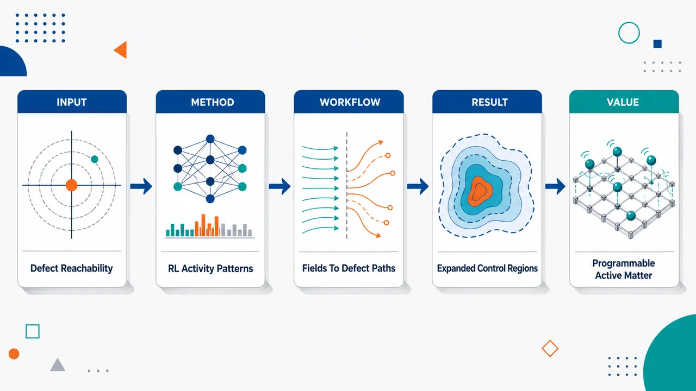
研究问题在受限微通道、壁面垂直锚定和有限活性图案集合下，如何在最短时间内闭环操控主动向列液晶中的单个 +1/2 拓扑缺陷到达目标位置；哪些目标区域是真正物理可达，哪些只是控制策略无法找到路径。创新方法将可达集分析与深度强化学习结合：先用随机活性图案采样和 concave hull/alpha shape 绘制有限时间可达地图，判断局部/全局图案、指向场各向异性和壁面锚定形成的运动边界；再用 PPO 强化学习和 CNN 从速度场、取向场中学习反馈策略，选择时空图案化活性应力驱动缺陷。关键 Aha 点是：缺陷对生成不只是干扰，也可把控制目标转移到新生成的 +1/2 缺陷，从而扩大有效可达区域。工作流程输入微通道几何、初始速度场、初始指向场、+1/2 缺陷位置和允许的二值活性图案；在 hybrid lattice Boltzmann 主动向列模拟中施加活性应力图案；随机采样 20 个控制步内的缺陷轨迹并生成可达集边界；选择能覆盖目标的图案集合；PPO 控制器读取速度矩阵和取向矩阵，经 CNN 编码后输出下一步活性图案；循环驱动缺陷穿越自由域、T 形结、交叉结或迷宫，输出目标附近的稳定缺陷轨迹。关键结果局部活性图案在自由域可移动缺陷，8 向对角图案能显著增强竖直迁移；但在带 homeotropic wall anchoring 的交叉结中，局部图案无法把缺陷推出左通道。全局图案能重塑交汇区和下游通道指向场，打开底部和右侧通道；顶部通道对原始缺陷几乎不可达，稀疏可达点主要来自新生成的 +1/2 缺陷。RL 控制器优于静态图案和贪心规则基线，能更稳定停留目标附近，并且简单结点训练出的控制器可组合成无需微调的 meta-controller 导航更大迷宫。应用价值为光控主动向列材料、微流控软机器人和可编程智能材料提供一种自动闭环导航框架：不仅能设计缺陷运输路径，还能提前判断目标是否物理可达，避免盲目训练。该方法可用于构建缺陷导引、微尺度运输、可重构通道逻辑、材料记忆写入与擦除等功能，并为复杂软物质系统的机器学习控制提供通用范式。第一部分：核心概览
该研究把深度强化学习引入主动向列液晶拓扑缺陷的最短时间位置控制，在混合格子 Boltzmann 主动向列动力学模拟中，用时空图案化活性应力操控 +1/2 缺陷穿越微通道。核心贡献不只是训练控制器，而是用可达集揭示几何约束、壁面锚定、指向场各向异性、局部/全局驱动图案与缺陷成对生成共同决定缺陷运动边界。该工作处于主动物质控制、软物质机器学习控制与微流控可编程材料交叉前沿。
---
第二部分：结构化快速回顾
《Controlling Defects and Probing Dynamics in Active Nematics with Deep Reinforcement Learning》（None，）
背景
主动向列液晶中的拓扑缺陷组织流场与取向场，尤其 +1/2 缺陷可在局部增强活性时沿“彗星头”方向自推进。已有光控主动物质实验和静态图案模拟展示了缺陷导引潜力，但复杂微通道中哪些缺陷运动在有限时间内可实现、如何自动生成反馈控制策略，仍缺乏通用方法。
方法
采用二维 Beris–Edwards 主动向列模型与混合格子 Boltzmann 方法模拟速度场和张量序参量。控制量为活性应力中的空间图案化活性场
(Πa(x,t)=-α(x,t)Q(x,t))。
通过随机动作采样与 concave hull/alpha shape 估计 20 个控制步内的可达集；再用 PPO 深度强化学习，结合 CNN 处理速度和取向矩阵观测，训练最短时间缺陷控制器。
结果
局部图案可在自由域中移动缺陷，但在具有homeotropic wall anchoring 的交叉结中无法把缺陷推出左通道。全局图案显著扩大可达区域，使缺陷可进入底部或右侧通道；上通道可达性稀疏，主要依赖新缺陷对生成。RL 控制器优于静态和规则基线，并可把简单结点训练出的控制器组合为无需微调的 meta-controller，用于更大迷宫。
讨论
可达性不是单纯由几何通道决定，而由指向场破缺对称性、壁面锚定、驱动图案尺度、缺陷身份连续性共同决定。缺陷对生成既可能破坏原缺陷追踪，也可能成为把控制目标转移到新 +1/2 缺陷的有效策略。
局限
模型使用理想化二值活性图案，活性强度保持较低以避免持续活性湍流；实验中的有限分辨率、噪声、延迟、三维效应和真实生物活性调控尚未纳入。提供文本中控制性能章节只到 IAE 指标定义，缺少后续完整数值结果和统计检验。
结论
深度强化学习可作为主动向列缺陷控制的通用闭环框架；可达集分析为判断控制失败来自策略不足还是物理不可达提供了基础；图案化活性不仅能移动缺陷，还能写入并部分擦除取向场记忆。
---
第三部分：逐章节冷凝解析
Abstract
- Defect control as the central physical problem
拓扑缺陷被定位为主动向列液晶中控制流动与取向秩序的关键对象。原文直接指出，*"Topological defects govern much of the flow behavior and orientational order in active nematics"*，因此缺陷控制同时服务于主动物质物理、智能材料、微流控。控制对象明确为 +1/2 defects，目标为最短时间位置控制：*"minimum-time position control of +1/2 defects"*。
- Activity-pattern actuation as the control channel
控制输入不是外力或边界移动，而是活性应力中的时空图案化活性场。关键机制为：*"Applied activity patterns can induce self-propulsion of active nematic defects"*；具体实现为 *"Spatiotemporally patterned activity, implemented as a control field in the active stress"*。这使缺陷操控与光控微管-kinesin 活性材料等实验体系相衔接。
- Reachability landscapes as the main physical discovery
可达性被表述为有限时间内的缺陷位置空间结构：*"reveals finite-time reachable regions of defect position space"*。这些区域受三类因素塑形：*"director anisotropy, homeotropic wall anchoring, and the allowed activity patterns"*。局部图案与全局图案表现出本质差异：*"local patterns steer defects in free domains but fail in junctions, whereas global patterns open otherwise inaccessible channels"*。
- Pair creation as a controllability-expanding mechanism
在受限几何中，原始缺陷并非总能完整抵达目标；但缺陷对生成可扩大有效可达集。原文表述为：*"controlled pair creation enlarges the effective reachable set by transferring control to a newly created +1/2 defect"*。这意味着控制目标可从“同一个缺陷”转化为“任一可控 +1/2 缺陷”。
- RL performance and compositional generalization
训练出的 RL 控制器超过静态和规则基线：*"The trained RL controllers outperform static and rule-based baselines"*。更重要的是，简单结点训练出的控制器可组合迁移：*"controllers trained only on simple junctions can be combined without fine-tuning into a meta-controller"*，并能在更大测试迷宫中导引缺陷。
- Memory effects in the director field
轨迹不仅是运动结果，还改变材料状态。自由能可视化显示：*"guided defects write persistent, history-dependent distortions into the director field"*，随后 −1/2 defects 可部分擦除这些畸变：*"can later be partially erased by −1/2 defects"*。这把控制问题扩展到主动向列材料的记忆写入与擦除。
---
I Introduction
- Active matter control as a nonequilibrium challenge
主动物质因破坏平衡体系常规约束而难以用传统平衡工具描述。关键表述为：*"Because they break energy and momentum conservation and lack detailed balance, active materials cannot be described using only standard equilibrium tools"*。这奠定了控制问题的难度：系统不仅非线性，还具有非平衡能量输入、复杂应力响应和缺陷动力学。
- Biological and technological relevance
控制主动物质具有生物调控与工程应用双重价值。生物方面，*"Feedback control lies at the heart of bioregulation at every scale"*；工程方面，*"Smart materials, microfluidics, and microrobotics all require reliable ways to actuate and steer nonequilibrium materials"*。因此，缺陷控制不是孤立模拟任务，而与细胞运输、运动、自组装、拥塞抑制、微混合、胶体组装、可编程物质相关。
- Active nematic defects as actuatable quasiparticles
+1/2 缺陷在 extensile 主动向列中可自推进：*"increasing the activity near a +1/2 defect drives self-propulsion along the direction of its comet-like head"*。这提供了可控物理杠杆：局部活性图案通过改变主动应力，产生缺陷运动并重塑周围流场和指向场。
- The central question is finite-time achievability
研究核心问题不是“能否移动缺陷”这么简单，而是：在给定几何、边界锚定和有限图案集合下，哪些运动有限时间内可实现。原文提出：*"given a confined geometry, boundary anchoring, and a restricted set of activity patterns, which defect motions are achievable in finite time?"* 这正是后续可达集分析的逻辑来源。
---
I.1 Background and Motivation
- Classical control struggles with soft active matter
软物质和主动材料通常由复杂 PDE 描述，存在高熵、非局域相互作用和复杂应力响应。原文概括为：*"High entropies, nonlocal interactions, and complicated stress responses make soft and active materials difficult to model, let alone control"*。即便只是搬运一个缺陷，也受制于各向异性迁移率、长程耦合和高维活性图案空间。
- Deep RL is naturally suited to high-dimensional feedback control
强化学习不依赖标注样本，而通过奖励学习动作策略：*"Unlike supervised learning, RL does not require labeled input-output pairs; instead, it learns from rewards assigned to actions"*。训练循环包括观测、动作、奖励和策略更新：*"an agent receives observations from an environment, selects an action, applies that action, and receives a reward"*。这适合速度场、取向场这类高维连续状态。
- Prior active matter control remained limited
过去主动物质控制包括 classical control、规则策略、手工图案和局部 RL 应用，但任意缺陷位置控制尚未实现。关键界定为：*"Arbitrary defect control has not yet been accomplished, especially for larger and more complicated domains"*。已有 RL 工作主要集中于减少缺陷数、成对缺陷局部相互作用、或小圆域内极性缺陷旋转，而非复杂微通道中的通用缺陷导航。
- Experimental actuation motivates patterned activity control
光控活性材料已有实验基础：*"Some experiments have already leveraged light patterns to shape active nematic flows"*。模拟中静态图案也能导引缺陷并执行类似晶体管门的逻辑操作：*"simulations with manually designed static patterns have guided defects and performed logic operations analogous to transistor gates"*。该研究进一步从手工设计转向自动学习闭环控制。
---
I.2 Overview of Key Results
- First deep-RL feedback steering of individual defects through microchannels
关键定位为首次使用深度强化学习开发微通道中单个缺陷反馈控制器：*"we are the first to use deep reinforcement learning to develop feedback controllers for steering individual defects through microchannels"*。目标为 +1/2 缺陷的最短时间位置控制，而非整体流速调节或缺陷数量减少。
- Hybrid LBM environment with activity-pattern actions
RL 控制器从允许图案集合中选择活性图案，并作用于基于 hybrid lattice Boltzmann method 的主动向列模拟。原文描述为：*"The controller selects an activity pattern from a set of allowable patterns and applies it to a microchannel-confined active nematic simulation based on the hybrid lattice Boltzmann method"*。观测由速度与指向场组成，奖励由缺陷到目标距离计算。
- Reachability depends on anisotropy, geometry, and actuation set
主要物理结果为有限时间可达景观：*"confined defect motion is governed by finite-time reachability landscapes"*。可达区域取决于 *"director anisotropy, channel geometry, and the admissible activity patterns"*。这把控制问题转化为几何—材料—动作空间共同定义的动力学可达性问题。
- Local and global pattern sets produce distinct control regimes
局部图案可在自由域中控制缺陷，但不能穿越带 homeotropic 壁面的结点：*"Local activity patterns can steer defects in free domains, but they are unable to push defects through channel junctions with homeotropic walls"*。全局图案则可打开穿越路径：*"Global activity patterns can open transport pathways through intersections"*。
- Pair creation changes reachable-set topology
某些转向对原缺陷不可达，但缺陷对生成可改变有效可达集：*"controlled pair creation can change the effective reachable set by transferring the control objective to a newly created +1/2 defect"*。这表明控制策略可利用主动向列本身的拓扑事件，而非始终避免它们。
- Meta-controller generalizes to a maze
简单几何训练得到的控制器可组合为更大系统的控制器：*"controllers trained on simple geometries can also be combined without further training into a meta-controller"*。测试几何为 660×660 lattice-site maze，由四个互联 cross junction 构成；训练几何均为 420×420 lattice sites，所有通道宽 60 lattice sites。
- Control trajectories reveal material memory
同一批轨迹也揭示自由能景观的持续变化：*"The same trajectories reveal persistent changes in the Landau-de Gennes free energy landscape"*。缺陷控制因此被解释为写入和部分擦除指向场记忆的过程，而不仅是把缺陷送到目标位置。
---
II Methodology
- Three-component workflow
方法由三部分组成：模拟、可达性分析、RL 训练。原文明确列出：*"First, we simulate coarse-grained active nematics using the hybrid lattice Boltzmann method. Second, we perform reachability analyses on different geometries and control pattern sets. Third, we train defect controllers via deep reinforcement learning"*。这一结构把物理可行性判断置于学习训练之前。
- Extensibility to other soft matter control tasks
方法不局限于当前几何或缺陷任务，具有软物质控制框架意义：*"The same procedure can be extended to other geometries and to more complex soft matter control tasks"*。核心可迁移元素是：PDE 模拟环境、有限动作图案、可达集估计、闭环策略学习。
---
II.1 Active Nematic Model and Simulation Method
- Two-field continuum description
二维主动向列由对称无迹张量序参量 (Q(x,t)) 与速度场 (u(x,t)) 描述。原文写明：*"The physical system is a two-dimensional active nematic described by the symmetric, traceless tensor order parameter Q(x,t) and the velocity field u(x,t)"*。指向场动力学采用 Beris–Edwards equation：
[
fracpartial Qpartial t+uḑotnabla Q-S=Γ H.
]
- Landau–de Gennes free energy defines molecular field
分子场来自自由能泛函变分，(H=-δ f/δ Q)。自由能密度包括体相项和弹性梯度项：
[
f=fracA2Tr(Q²⁾⁺fracB3Tr(Q³⁾⁺fracC4(Tr(Q²⁾⁾²⁺fracL2(nabla Q)².
]
原文表述为：*"Here H is the molecular field derived from the Landau-de Gennes free energy density"*。
- Velocity dynamics use damped Navier–Stokes equation
流体速度满足带阻尼的 Navier–Stokes 方程：
[
h̊ołeft(fracpartialpartial t+uḑotnablai̊ght)u=nablaḑotΠ-μ u.
]
总应力分为被动和主动部分：*"with total stress (Π=Π^p+Π^a)"*。阻尼项 (-μ u) 对应基底摩擦或有效动量耗散。
- Control enters through active stress
控制直接进入主动应力：
[
Π^a(x,t)=-α(x,t)Q(x,t).
]
原文强调：*"The control enters through the active stress"*；并规定 (α>0) 为 extensile：*"where (α>0) corresponds to an extensile active nematic in our convention"*。
- Binary activity patterns define actions
每个控制步选择一个图案 (Pⱼ₍ₓ₎)。仿真中的图案为二值：*"these patterns are binary: activated regions have (Pⱼ₌₁), and the rest of the fluid has (Pⱼ₌₀)"*。活性场为
[
α(x,t)=α₀Pⱼ₍ₓ₎
]
并在一个控制间隔 (τ) 内保持固定：*"for the duration of one control interval (τ), after which the controller selects a new pattern"*。
- Local activation drives +1/2 defect motion but also couples nonlocally
物理机制为局部增强 extensile 主动应力。原文说明：*"Near a +1/2 defect, this stress drives motion along the defect head, while the induced flow and director distortions couple the local actuation to the rest of the channel geometry"*。因此动作的效果既有局部推进，也有通过流场和指向场传播的全局反馈。
- Hybrid LBM solves velocity and director fields
hybrid lattice Boltzmann method 用 LBM 计算速度场，用有限差分计算指向场：*"The lattice Boltzmann method computes the velocity field, while finite differences compute the director field"*。该方法适合复杂边界、复杂几何、多相流和浸入体：*"it can handle various boundary conditions, complex geometries, multiphase flows, and immersed bodies such as colloids"*。
- GPU acceleration is essential for RL feasibility
单个 RL episode 包含 (2×10⁵) simulation steps。计算成本极高：*"This takes roughly 12 hours of wall time on a single CPU core, or 4 hours on a modern multi-core CPU"*；CUDA 后单消费级 GPU 约 30 秒：*"one episode completes in about 30 seconds on a single consumer-grade GPU"*。加速幅度为 2–3 个数量级：*"This speedup of two to three orders of magnitude makes hybrid-LBM-based deep RL training feasible"*，尤其在收敛需 (10⁵) training steps 或更多时。
- Training geometries cover free space, T-junction, and cross junction
三个训练环境为 free geometry、T-junction、cross junction，初始场见 Fig. 2。所有训练几何尺寸均为 420×420 lattice sites；测试迷宫为 660×660 lattice sites；所有通道宽 60 lattice sites。原文说明：*"Training geometries consist of the free geometry, the T-junction, and the cross junction. All have lattice dimensions of 420-by-420 sites"*，以及 *"The test geometry is a 660-by-660-site maze made of four interconnected cross junctions. All channels are 60 lattice sites wide"*。
- Boundary conditions differentiate environments
free geometry 无墙无障碍，初始指向场竖直，四边周期边界：*"The free geometry contains no walls or obstacles, has a vertically oriented director field, and uses periodic boundaries on all four sides"*。T-junction 三个出口开放边界；cross junction 四个出口周期边界。受限几何中壁面采用 no-slip 速度边界和无限 homeotropic 锚定：*"no-slip velocity boundary conditions and infinite homeotropic (wall-normal) director anchoring are enforced along obstacle walls"*。
- Broken-symmetry director fields bias mobility
T-junction 和 cross junction 初始交汇处指向场沿西南—东北 45°：*"the director fields inside the intersections point 45 degrees from southwest to northeast"*。这产生无缺陷交汇区，同时显著偏置后续迁移：*"they strongly bias subsequent defect mobility"*。这一点后续解释了上/下/直行可达性的非对称。
- Experimental motivation comes from photoactivatable active nematics and cell sheets
最直接实验对应是光激活 microtubule-kinesin 主动向列：*"The most direct experimental setting is a photoactivatable microtubule-kinesin active nematic, where light patterns can modulate local active stress"*。细胞片层向列也提供生物语境：*"Epithelial sheets and other cell-sheet nematics provide a complementary biological context"*。二值图案被视为研究有限分辨率、噪声和延迟前的起点：*"a controlled starting point for studying how finite-resolution, noisy, or delayed actuation affects defect steering"*。
---
II.2 Reachability Analysis
- Reachable set formalizes finite-time mobility
给定初始缺陷位置、几何和控制图案集合，有限控制步内可到达的位置构成 reachable set。原文定义为：*"the set of all such positions is the reachable set"*。目标是：*"to sample and characterize the reachable set for a given environment and action space"*。
- Reachability separates feasible from infeasible goals
可达性分析揭示哪些目标可实现、哪些不可实现，并区分控制器差与物理不可达。原文说明：*"These analyses reveal which target states are feasible or infeasible, distinguish easy control tasks from difficult but achievable ones"*。这使它不仅是控制论工具，也是物理图像：*"an intuitive physical picture of how the active material, boundaries, and allowed activity patterns convert local active stress into defect motion"*。
- Four parameters define a reachability run
第一阶段指定四项参数：几何、初始速度/指向场及初始 +1/2 位置、控制图案集合、控制步数。原文列为：*"(1) the domain geometry, (2) the initial velocity and director fields, and hence the initial +1/2 defect position, (3) the control pattern set, and (4) the number of control steps used to evolve the system"*。控制图案集合在控制理论中是 admissible controls：*"the control pattern set is termed the set of admissible controls"*。
- Random action sampling estimates reachable positions
每个控制步随机选择活性图案，固定作用 (10⁴) simulation timesteps，即一个 (τ)：*"One control step occurs every (10⁴) simulation timesteps, which we denote by (τ)"*。最大 episode 长度为 20 control steps，总计重复 (10⁴) control steps，约 500 episodes：*"the maximum episode length is 20 control steps, and we repeat this process for (10⁴) control steps, or roughly 500 episodes"*。
- Reset rules control sampling consistency
达到最大 episode 长度即重置，缺陷意外湮灭也重置：*"When the maximum episode length is reached, the system is reinitialized and another episode begins; we also reset if the defect is inadvertently annihilated"*。这保证采样围绕同一初始任务构建，而非进入不可控后态。
- Concave hull approximates the reachable boundary
原始采样点过于繁杂，因此用 concave hull / alpha shape 生成多边形近似：*"we compute the concave hull, or alpha shape, of the sampled points"*。由于采样点是真实可达集子集，估计 hull 通常也是子集：*"Since the sampled reachable set is a subset of the true reachable set, the generated hull is usually a subset as well"*。这是一种保守估计。
- Reachability guides RL action-space choice
对给定目标位置，比较不同控制图案集合，直到 hull 包含目标：*"we perform reachability analyses on different control pattern sets until a hull contains the goal"*。因此 RL 不盲目训练，而是在物理可达区域内优化策略：*"this analysis also guides the choice of pattern set used for RL training"*。
---
II.3 RL Controller Training
- RL optimizes fast trajectories inside reachable regions
可达性估计完成后，训练反馈策略寻找快速轨迹：*"we next train feedback policies to find fast trajectories within those reachable regions"*。训练与可达性分析使用相同控制间隔 (τ)：*"All controllers use the same value of (τ) as the reachability analyses"*。
- PPO is the RL algorithm
控制器使用 proximal policy optimization, PPO：*"Our controllers use proximal policy optimization (PPO), a widely used policy-based RL method"*。神经网络输入观测，输出动作空间概率分布：*"takes in observations and outputs a probability distribution over the action space"*。PPO 被选中是因为灵活、收敛表现好，且适合与 CNN 配合。
- CNN processes matrix-valued physical fields
CNN 从连续矩阵形式的速度与取向数据中提取特征：*"The CNN extracts features from continuous matrix-valued velocity and orientation data produced by our hybrid LBM simulations"*。压缩后的编码进入策略网络：*"compressing raw observations into encodings for use by the deep policy network"*。这避免手工设计低维状态变量。
- Static baseline tests fixed-pattern control
第一类基线为静态控制器，全 episode 使用同一图案：*"The first is a static controller that applies the same pattern over the entire episode"*。它对应类似手工静态图案的直觉策略：*"providing an intuitive baseline similar to the static patterns used in [10]"*。
- Rule-based baseline uses greedy local prediction
第二类基线为规则控制器，基于贪心策略选择动作：*"an original rule-based controller that uses a simple greedy strategy to choose an action at each control step"*。为简洁和可解释，只使用局部小矩形图案：*"we use only local patterns, i.e., small defect-centered rectangles"*。其假设为缺陷会从活性条近端移动到远端：*"assumes that the defect will move from the near end of an activity strip to the far end"*，再选择下一步最接近目标的候选图案。
- Open-source reproducibility is provided
方法、训练权重和媒体文件开放。原文写明：*"The full code for our methodology, including trained model weights, is openly available at the GitHub repository"*，以及 *"Supporting media files are available"*。这对复杂模拟—RL 工作的复现尤为重要。
---
III Reachability Analysis Results
- Reachable maps show activity patterns interact with material structure
可达图说明活性图案不是简单把缺陷推向指定方向，而与指向场和壁面耦合：*"activity patterns do not merely push defects along prescribed directions; they interact with the director field and walls to create anisotropic, geometry-dependent control landscapes"*。这体现主动向列控制的核心复杂性。
- Two action-space classes: local and global
控制图案分为 local sets 与 global sets。局部集合由相对当前缺陷位置定义的小矩形活性条组成：*"Local sets contain small rectangular activity strips defined relative to the current defect position"*。全局集合由固定在晶格坐标中的图案组成：*"global sets contain activity patterns at fixed positions relative to the simulation lattice"*，包括结点尺度小图案和通道尺度长图案。
- Action-space encoding differs between local and global controls
局部集合每个控制步只启用一个图案：*"For local sets, exactly one pattern can be enabled at each control step"*；全局集合允许多个 primitive 同时启用：*"whereas for global sets multiple primitives can be applied at the same time"*。RL 术语中，局部集合是离散动作空间，全局集合是 multibinary 动作空间：*"local sets define discrete action spaces, while global sets define multibinary action spaces"*。
---
III.1 Local Control Pattern Sets
- Free geometry exposes director-induced anisotropy
自由域初始指向场竖直，因此破坏旋转对称性：*"the initial director field is vertical across the whole domain. This anisotropy breaks rotational symmetry"*。在 4-way local set 中，上下图案几乎不能移动缺陷：*"The up and down local patterns have little effect on defect motion"*；左右图案更有效，导致可达集横向展开：*"the left and right patterns couple more effectively to the initial director field and spread the reachable set horizontally"*。
- Local actuation tests whether downstream pre-patterning is unnecessary
局部图案相对当前 +1/2 缺陷放置，而非固定实验室坐标：*"the active region is placed relative to the current +1/2 defect position rather than fixed in the laboratory frame"*。这检验纯局部驱动能否产生缺陷运动：*"whether defect motion can be generated by local actuation alone, without pre-patterning the downstream channel"*。
- 4-way anisotropy is physical, not merely geometric
同样矩形图案在不同背景指向场中会有不同响应：*"The same rectangular activity patterns would produce a different response in a different background director field"*。竖直远场指向使水平驱动更易产生平移缺陷所需的畸变和流动：*"the vertical far-field director makes horizontal actuation more effective"*；竖直条形图案则多半强化不利局部排列：*"Vertical strips, however, mostly reinforce an unfavorable local alignment"*。
- 8-way local set restores vertical mobility in free space
8-way local set 增加四个对角图案，使可达集竖直方向大幅扩展：*"the reachable set now extends much farther in the vertical direction while its horizontal extent changes little"*。结论明确：*"Diagonal patterns are therefore crucial for full defect mobility in the free geometry"*。
- Diagonal patterns enable defect polarization rotation
对角活性图案可引入斜向剪切和弯曲畸变：*"The diagonal activity patterns effectively introduce oblique shear and bend distortions around the defect core"*。这些畸变旋转缺陷极化方向，使后续活性步可转化为竖直位移：*"These distortions rotate the defect polarization and let subsequent activity steps convert local forcing into vertical displacement"*。
- Local patterns fail in the cross junction
在 cross junction 中，即使用 8-way local set，可达集仍局限于左通道：*"the reachable set remains confined to the left channel"*。其他三个通道甚至结点本身在 20-step horizon 内不可达：*"the other three channels and even the junction itself are unreachable within the 20-step horizon"*。
- Homeotropic anchoring and diagonal junction director form a barrier
受限几何有两类约束：壁面施加 preferred director orientation，交汇处对角指向场偏置出口。原文概括为：*"the homeotropic walls impose a preferred director orientation near each channel boundary"*，以及 *"the diagonal director field in the intersection biases the defect toward some exits and away from others"*。最终形成 reachability barrier：*"The diagonally oriented director field in the junction, together with wall anchoring, acts as a reachability barrier"*。
- Failure motivates global pattern sets
局部图案只能扰动缺陷核心附近，不能重组整个结点指向场：*"it cannot reorganize the director field across the full junction"*。因此若结点尺度指向场构成障碍，成功控制必须作用于通道和交汇区：*"successful control requires activity patterns that act on the channel and intersection, not only on the immediate defect neighborhood"*。
---
III.2 Global Control Pattern Sets
- Downward global set opens the bottom channel
downward global set 在左通道和底部通道布置图案 primitive。每个黄色四边形可独立启用或关闭，共 (2¹⁵)，即超过 (3×10⁴) 种图案：*"giving (2¹⁵), or more than (3×10⁴), possible patterns"*。可达集覆盖交汇区并延伸到底部通道：*"The reachable set now covers the intersection and extends through the bottom channel"*。
- Global patterns expand reachability in confined geometries
结论为：*"Global control pattern sets therefore greatly expand reachable regions in confined geometries"*。这与局部图案在交叉结中的失败形成对照。由于样本点在可达集内较均匀，RL 训练也更容易：*"The sample points are also relatively uniform across the reachable set, which helps RL training"*。
- Straight global set reaches the right channel but with lower density
straight global set 同样覆盖交汇区和右通道：*"The reachable set includes the intersection and the right channel"*，但右半区点密度稍低：*"positions become somewhat less dense in the right half"*。这暗示直行可达但动力学路径更受限制。
- Upward global set is asymmetric because junction director is asymmetric
upward global set 的可达性显著不同，因为初始交汇处指向场没有上下对称性：*"This asymmetry in mobility is expected because the initial director field in the junction is not up-down symmetric"*。尽管交汇区有许多可达点，顶部通道点很稀疏：*"the top channel is sparsely populated"*。
- Original defect never enters the top channel in random sampling
对 (10⁴) random control steps 的详细检查显示，原始 +1/2 缺陷从未进入顶部通道：*"the original +1/2 defect never enters the top channel"*。顶部通道点来自新生成缺陷：*"Some activity patterns create a new defect pair at the northeast corner of the junction, and the sparse top-channel points are reached by the newly created +1/2 defect"*。
- Effective reachable set can exceed original-defect reachable set
缺陷身份改变具有控制意义：*"the reachable set of the original defect can be smaller than the effective reachable set of any controllable +1/2 defect"*。成对生成可通过改变缺陷身份扩大可达区域：*"Pair creation can enlarge the accessible region by changing defect identity"*。
- Pair creation may also be undesirable
straight-global 序列中也会出现新缺陷对；对右通道目标，原始缺陷常能完整穿越，但新缺陷生成仍常见：*"the original defect can often cross the junction intact, but defect creation is still common"*。因此控制任务可能需要抑制不想要的拓扑事件：*"suppressing unwanted defect creation may be important"*。
---
III.3 Consequences for Defect Control
- Geometry, director structure, and action set jointly determine mobility
可达性分析总括为：*"geometry, director structure, and the control pattern set shape defect mobility"*。图案集合强烈控制可达集尺寸和形状：*"the pattern set strongly controls the size and shape of the reachable set"*。
- Local patterns suffice only in open domains
在自由域中，增加对角局部图案显著扩大可达区域；在 cross junction 中，除非使用全局图案，大区域仍不可达。原文概括：*"local patterns suffice in open domains, but global patterns are needed for transport through intersections"*。
- Some regions may be inaccessible to the chosen original defect
即便使用全局图案，某些指向场构型仍可能阻止某个指定缺陷抵达所有区域：*"It may be impossible to guide one chosen defect through every region of an arbitrary microchannel network"*。这与向列材料强各向异性一致：*"consistent with the strong anisotropy of nematic materials"*。
- Deliberate pair creation becomes a possible strategy
新生成 +1/2 缺陷可能到达原缺陷无法到达的位置：*"a newly created +1/2 defect may reach positions that the original defect cannot"*。因此当目标在不可达区域中时，可故意生成新缺陷：*"a new defect is deliberately created when the target lies in an otherwise inaccessible region"*。
- Reachability identifies physical limits before learning
可达性分析在学习前提供控制景观：*"Reachability analysis therefore gives a clear physical picture of the control landscape before any learning is performed"*。它区分控制器设计失败与真实迁移约束：*"identifies which failures are due to poor controller design and which are due to genuine mobility constraints"*。
- Low activity avoids uncontrolled active turbulence
活性强度 (α₀) 保持较低以避免持续混沌缺陷生成湮灭：*"the activity intensity ((α₀₎) is kept low to prevent continual chaotic creation and annihilation of defect pairs"*。若活性过高，会产生高缺陷密度和主动湍流：*"If activity is too large, the applied patterns produce high defect densities and active turbulence rather than controlled motion"*。
- Main aim is existing-defect manipulation, not turbulence generation
另一种任务可只要求在目标附近生成任意 +1/2 缺陷，但这里目标不同。原文强调：*"Our aim is controlled manipulation of existing defects"*。这更贴近微流控设备需求：*"one would ideally apply low active stress, guide the desired defect, and avoid creating unwanted defects elsewhere"*。
---
IV Controller Performance Results
- Closed-loop control is tested after reachability mapping
可达集指出理论可控区域，随后检验闭环控制器能否在高维动作空间中找到快速稳定序列。原文提出问题：*"whether a closed-loop controller can actually find fast, stabilizing activity sequences in these high-dimensional action spaces"*。
- Global action sequences are combinatorially enormous
对含 (2¹⁵) 可能图案的全局集合，20-step episode 的控制序列数约为
[
(2¹⁵)²⁰approx2×10⁹⁰.
]
原文直接给出：*"a 20-step episode with a global pattern set has ((2¹⁵)²⁰approx2×10⁹⁰) possible control sequences"*。这凸显 RL 搜索的难度和必要性。
- RL solves training tasks and generalizes
训练出的 RL 控制器在如此高维空间中仍能完成任务：*"the trained RL controllers solve their training tasks, outperform the baselines, and generalize well to a larger test geometry"*。轨迹还展示缺陷生成、湮灭和自由能畸变的作用：*"Their trajectories also show how defect creation, defect annihilation, and persistent free energy distortions shape active nematic control"*。
- IAE quantifies trajectory quality
性能指标为时间平均 integral of absolute error, IAE：*"we use the time-averaged integral of absolute error (IAE), a standard control metric"*。定义为 episode 内缺陷到目标距离平均值：
[
frac1Nτint₀Nτ|x_d(t)-x_g|dt.
]
其中 (x_d(t)) 为以 lattice units 计的二维缺陷位置，(x_g) 为目标位置，(Nτ) 为 episode 时长。
- Free-geometry comparison shows stabilization advantage
Fig. 6 中 RL 与规则控制器都能把 +1/2 缺陷导向目标，但 RL 更能稳定停留：*"Both controllers guide the +1/2 defect to the goal, but the RL controller better stabilizes it there after arrival"*。规则控制器过冲并在目标附近大振荡：*"the rule-based controller overshoots and produces large oscillations around the goal"*，且不能有效抵消接近的 −1/2 缺陷吸引：*"unable to effectively counteract the attraction due to the approaching −1/2 defect"*。
---
第四部分：深度理解与语言支持
1. 术语解析
- Reachable set / finite-time reachable regions
reachable set 不是“最终所有可能到达的区域”，而是在给定初始状态、动作集合和有限控制步数内可达的位置集合。语境中尤其强调 finite-time，因为主动向列系统可能在无限时间内通过扩散、湍动或拓扑事件到达更多状态，但控制任务需要在有限 episode 内完成。
- Admissible controls
admissible controls 指允许控制器选择的动作集合，例如 4-way local、8-way local、downward global 等。它不是所有物理上可能的光图案，而是实验/算法/设计约束下可用的控制输入。不同 admissible control set 会在同一几何中生成不同 reachable set。
- Homeotropic wall anchoring
homeotropic anchoring 指液晶指向矢垂直于壁面排列。这里的 “wall-normal” 很关键：在微通道壁附近，指向场被强制垂直于障碍壁，从而形成强边界约束。它会阻碍局部活性图案重组交汇处指向场，成为缺陷穿越结点的可达性障碍。
- Pair creation / transferring control to a newly created defect
pair creation 是 +1/2 与 −1/2 缺陷成对生成的拓扑事件。“transferring control” 不意味着算法显式拥有缺陷身份标签切换机制，而是从控制目标角度看，原始缺陷不能到达某区域时，新生成的 +1/2 缺陷可成为被导引对象，从而扩大“任一可控 +1/2 缺陷”的有效可达集。
- History-dependent distortions / memory effects
history-dependent distortions 指缺陷经过后在指向场和 Landau–de Gennes 自由能景观中留下持续畸变。它不是电子存储意义上的离散记忆，而是材料构型对过去轨迹的连续场记忆；后续 −1/2 缺陷可部分擦除这些畸变。
2. 疑难查证
- 为什么局部图案在自由域有效，却在 junction 中失败？
自由域中，远场指向基本均匀，缺陷附近的局部活性条足以产生推进和极化旋转；加入对角图案后，还能产生斜向剪切与弯曲畸变，恢复竖直方向迁移。junction 中则不同：交汇区指向场预先破缺对称，并被壁面 homeotropic anchoring 锁定。局部图案只改变缺陷核心邻域，无法重排整个交汇区的指向结构，因此缺陷接近 junction 时会遇到由取向场和壁面共同形成的动力学势垒。
- 为什么“可达集”可能包含原始缺陷从未到达的位置？
如果记录规则是“任一 +1/2 缺陷的位置”，那么拓扑缺陷对生成后，新 +1/2 缺陷到达的点也会进入有效可达集。这样得到的是“可控 +1/2 缺陷”的可达性，而非“同一身份原始缺陷”的可达性。两者在存在 pair creation 时不同。上通道案例中，原始缺陷从未进入顶部通道，但新生成缺陷进入，因此顶部通道是有效可达、但原始缺陷不可达。
- 为什么全局图案能打开局部图案打不开的通道？
主动向列中的缺陷运动依赖缺陷核心附近，也依赖远处指向场、壁面边界和诱导流。全局图案能在交汇区和下游通道预先施加活性应力，改变整个通道尺度的指向畸变和流场，使缺陷穿越 junction 时面对的环境发生改变。局部图案只像在缺陷旁“推一下”，全局图案则像先重塑“道路”。
- 为什么低活性强度反而更适合控制？
高活性会增强主动不稳定性，导致持续缺陷生成、湮灭和主动湍流。那种状态下虽然可能更容易在目标附近“制造”缺陷，但缺陷身份、轨迹和周围流场都难以稳定控制。低活性使系统更接近可操控的单缺陷动力学，同时仍允许偶发 pair creation 作为策略资源。
---
第五部分：创新评估与关联
1. 创新性判断
- 从“手工图案导引”推进到“深度 RL 闭环缺陷导航”
近年主动向列控制已有光图案实验、静态图案模拟和逻辑门式缺陷导引，但多依赖手工规则或固定图案。该研究将 PPO + CNN + hybrid LBM 构成闭环控制框架，使控制器从速度场和取向场观测中自动选择活性图案，实现最短时间导引。
- 从“能否移动缺陷”推进到“有限时间可达性景观”
关键新意在于把主动向列缺陷控制表述为 reachable set 问题。过去工作通常展示特定轨迹或图案效果；这里系统比较 local/global admissible controls，在不同几何和指向场下估计有限时间可达区域，从而区分算法失败和物理不可达。
- 揭示缺陷身份转换对可控性的影响
过去主动向列控制常把缺陷生成视作噪声或不稳定性。该研究把 controlled pair creation 识别为扩大有效可达集的机制：当原始缺陷无法穿越某通道时，新生成 +1/2 缺陷可接管控制目标。这是拓扑事件与控制理论结合的创新点。
- 展示模块化组合泛化
简单 junction 中训练出的控制器可无需微调组合成 meta-controller，并应用到更大迷宫。该点超出单任务轨迹优化，指向主动材料控制器的模块化部署：复杂微流控网络可由基本结点策略拼装而成。
- 把控制轨迹与材料记忆联系起来
自由能可视化显示缺陷导引会在指向场中写入持久、路径依赖畸变，随后 −1/2 缺陷可部分擦除。这将 RL 控制结果转化为物理发现：主动向列不仅是被控制对象，也能作为可写入历史的软材料介质。
- 解决的前人未解问题
过去 2–5 年相关工作中，RL 多用于微泳者、自推进粒子、缺陷数量减少、局部缺陷相互作用或小域极性缺陷旋转；尚未完成复杂微通道中单个 +1/2 主动向列缺陷的任意位置闭环导航，也缺少系统判断不同图案集合下有限时间可达性的工具。该研究同时解决“怎么学控制策略”和“物理上哪里能到”两个问题。
-
05
📊 含图深析
💡 亮点：量子线路参数可由跨体系模型直接预测。
📖 展开分析 + 配图
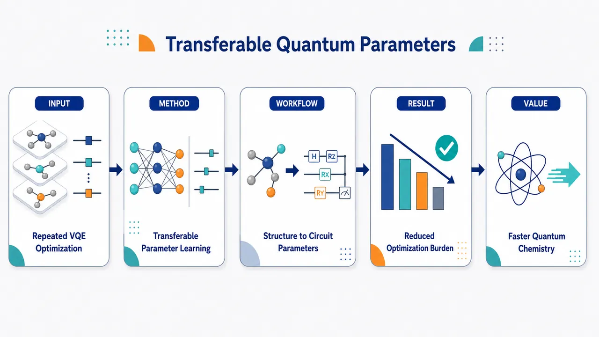
研究问题电子结构 VQE 计算中，每个新分子、几何构型或哈密顿量都像一座“新山峰”，量子线路参数需要从头反复变分优化，导致迭代次数多、计算成本高，限制量子化学问题的高效求解。创新方法用可迁移机器学习模型学习不同电子结构体系之间的“参数规律地图”，直接预测或初始化 VQE 量子线路参数；Aha 点是把以往逐体系手工爬坡式优化，转化为跨体系复用的参数预测，使已有体系的优化经验迁移到新体系。工作流程输入电子结构问题信息或已有体系数据，构建训练样本；机器学习模型学习体系特征与最优量子线路参数之间的映射；遇到新电子结构问题时，模型输出预测参数；这些参数用于初始化或替代 VQE 优化；最终得到更低成本的量子线路能量求解结果。关键结果论文提出了面向 VQE 电子结构计算的可迁移参数预测方案，目标是在不同体系间复用学习到的参数模式，减少每个体系重复优化的负担；摘要未给出具体分子测试、能量误差、收敛加速倍数或定量基线比较。应用价值可作为量子化学 VQE 的参数初始化器或快速预测器，帮助减少量子线路调参时间和经典优化调用次数，为分子能量计算、材料模拟和近中期量子设备上的电子结构求解提供更实用的加速策略。核心概览
本文属于量子计算与机器学习交叉方向，面向电子结构问题中的变分量子本征求解器（VQE），提出用可迁移机器学习预测量子线路参数，以减少每个分子或实例都需重新优化参数的成本。
方法要点
- 将机器学习用于预测 VQE 量子线路参数，而非完全依赖逐实例的经典优化。
- 强调“可迁移”能力，即希望从已有分子或问题实例中学习参数先验，并迁移到新实例。
- 应用场景为电子结构问题中的量子线路参数初始化或预测。
- 目标是缓解 VQE 参数优化过程中的计算瓶颈。
- 摘要未详述所用机器学习模型类型、输入特征、训练数据构造、量子线路 ansatz 或优化流程。
关键结果
- 摘要明确指出提出了一种可迁移机器学习方法，用于预测电子结构 VQE 的量子线路参数。
- 该方法旨在跨分子或跨问题实例复用参数先验。
- 论文声称该思路可缓解逐体系单独优化量子线路参数的瓶颈。
- 摘要未详述具体性能提升、预测精度、收敛加速比例、测试分子体系或数值结果。
创新性判断
- 可能的新颖点在于将“迁移学习/可迁移参数预测”用于电子结构 VQE 参数生成，而不是仅对单个分子进行独立优化。
- 相比常规 VQE 流程，该工作可能强调跨问题实例共享可学习的参数先验，以提高新体系求解效率。
- 若已有工作主要关注参数初始化、优化器改进或单体系训练，则本文的创新性可能体现在更系统地建模“分子间/实例间参数可迁移性”。
- 但摘要未提供与已有方法的对比、模型细节或实验范围，因此其新颖性强弱仍无法确定。
-
06
📊 含图深析
💡 亮点：机器学习加速材料最小能量路径搜索。
📖 展开分析 + 配图
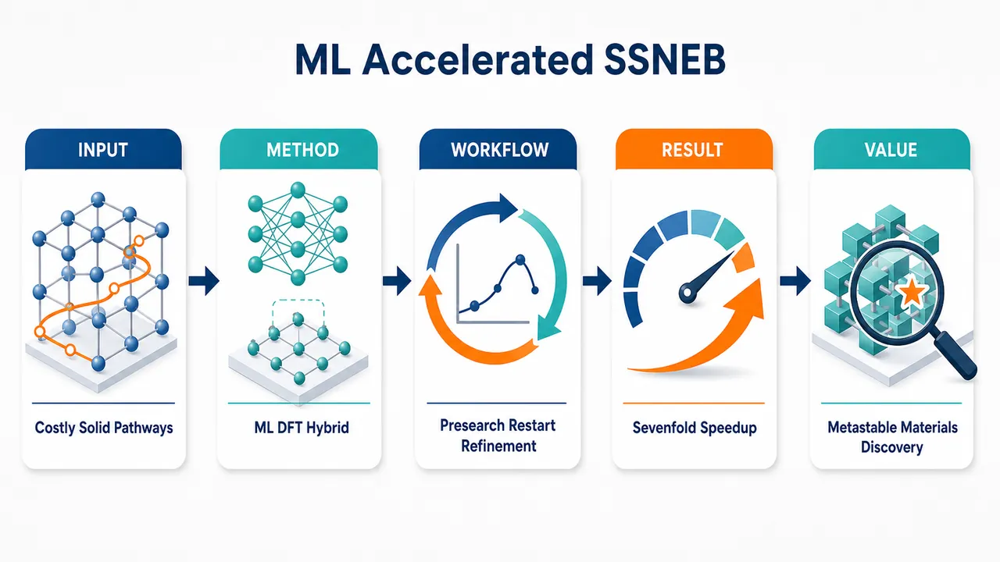
研究问题传统 DFT-SSNEB 在固态相变最小能量路径计算中，每个中间图像都要反复求解能量、原子力、应力和晶格响应，成本极高；核心问题是如何在保留 DFT 级路径与能垒精度的同时，大幅减少固态 NEB 的迭代与计算时间。创新方法提出“预训练机器学习预搜索 + DFT 精修”的混合 SSNEB 框架：用 EquiformerV2 和 eSEN 等变材料基础模型先快速预测能量、力、应力，把线性插值图像链拉到接近真实 MEP 的路径附近，再用 VASP-DFT 从 ML 收敛图像重启精修。Aha 点是 ML 不完全替代 DFT，而作为路径预条件器，既加速又避免 ML-only 路径误差。工作流程输入初态与终态晶体结构，生成 SSNEB 图像链；ML 代理模型对每个图像预测能量、原子力、应力和晶格相关力，优化得到近似最小能量路径；将 ML 收敛后的中间图像作为 VASP-DFT SSNEB 初始路径；DFT 继续迭代至总力低于 0.01 eV/Å；输出 DFT 一致的相变路径、鞍点结构、焓垒/能垒和所需迭代数。关键结果在 CsPbI₃、GaN、TiO₂ 三类固态相变中，混合框架收敛到与 VASP 一致的路径和势垒，实现 2–7 倍加速。CsPbI₃ 中 eSEN 平均将 DFT 计算降至 30%，eqV2 降至 40%；GaN B4→B1 中 eSEN-only 势垒 0.33 eV/formula，VASP 为 0.34 eV/formula，DFT 工作量仅剩 13%；TiO₂-B→anatase 中混合方法复现 VASP 的 0.88 eV 势垒，eSEN-only 为 0.92 eV。应用价值该框架可用于更高效地解析固态相变机制、亚稳相稳定性和能垒，适合卤化物钙钛矿、宽带隙半导体、过渡金属氧化物及高压材料等体系；同时提供评估材料机器学习势在能量、力、应力和路径搜索中可靠性的基准平台，为极端条件下功能亚稳材料发现和高分辨率相变路径计算降低成本。第一部分：核心概览 (Overview)
提出一种机器学习—DFT 混合 SSNEB 框架，将预训练 EquiformerV2 与 eSEN 作为能量、力、应力代理模型，先用 ML 搜索近似最小能量路径，再以 ML 收敛图像重启 DFT-SSNEB 精修。该方法在 CsPbI₃、GaN、TiO₂ 三类固态相变中收敛到与一阶原理一致的路径与势垒，DFT 迭代数降低至约 13%–73%，整体实现 2–7 倍加速。其领域地位在于首次将通用预训练材料基础模型系统嵌入 固态 NEB，同时提供了评估 ML 势在路径搜索中可靠性的基准范式。
---
第二部分：结构化快速回顾
《Machine Learning Accelerated SSNEB for Efficient Minimum Energy Pathway Calculations》（None，）
背景
最小能量路径（MEP） 是理解固态相变、亚稳态稳定性和能垒的核心工具。传统 SSNEB 能处理周期性晶体中的晶格自由度和应力张量，但每一步都依赖 DFT 计算能量、原子力和应力，计算成本高。近年的预训练机器学习原子模型为降低成本提供可能，但其在 SSNEB 中的可靠性仍缺少系统验证。
方法
采用两种预训练等变神经网络模型：eqV2-L-OMat，153M 参数 与 eSEN-30M-OMat，30M 参数，均基于 OMat24 数据集预训练。流程为：先用 ML-only SSNEB 得到近似路径，再以该路径作为初始图像重启 VASP-DFT SSNEB。收敛判据为任一图像任一原子的总力低于 0.01 eV/Å。
结果
在 CsPbI₃ 中，eSEN 与 eqV2 均能显著减少 DFT 迭代，eSEN 平均将所需 DFT 计算降至 30%，eqV2 降至 40%。在 GaN B4→B1 相变中，eSEN-only 势垒为 0.33 eV/formula，VASP 为 0.34 eV/formula；DFT 迭代降至 13%。在 TiO₂-B→anatase 中，eSEN+VASP 重启复现 0.88 eV 势垒，eSEN-only 为 0.92 eV。
讨论
eSEN 相比 eqV2 在路径稳定性、准确性和效率上表现更好。未经过材料特定微调的通用模型即可实现 SSNEB 加速，说明预训练材料模型已具备跨体系转移能力。未来可结合 active learning、ab initio molecular dynamics 和应力—力—能量权重优化进一步提升性能。
局限
ML-only 路径在结构特征和 MEP 细节上可能偏离 VASP；应力预测偏差明显，影响 SSNEB 总力质量。TiO₂ 中加速幅度较小，仅将 DFT 计算减少到 73%。数据集匹配分析显示部分结构已在 OMat24 中存在相似样本，完全外推能力仍需更多体系验证。
结论
ML 预搜索 + DFT 精修 是一种兼顾效率与可靠性的固态相变路径计算策略。eSEN 与 eqV2 可作为 SSNEB 的通用代理计算器，尤其 eSEN 能在多种晶体相变中实现接近 DFT 的势垒与路径预测，并显著降低计算成本。
---
第三部分：逐章节冷凝解析 (Section-by-Section Condensing)
Abstract
Hybrid SSNEB integrates pretrained ML and DFT
核心贡献是构建一种混合固态 nudged elastic band 框架，把两个预训练机器学习模型 EquiformerV2（eqV2） 和 equivariant Smooth Energy Network（eSEN） 与 DFT 联合用于能量、力和应力评估。摘要明确指出：*"we introduce a hybrid solid-state nudged elastic band (SSNEB) framework that integrates two pretrained machine learning models, EquiformerV2 (eqV2) and the equivariant Smooth Energy Network (eSEN), with DFT for energy, force, and stress evaluations."*
Three solid-state systems validate transferability
验证体系覆盖三类不同材料：卤化物钙钛矿 CsPbI₃、宽带隙半导体 GaN、过渡金属氧化物 TiO₂。这种选择检验了框架在多晶型、压力诱导相变和氧化物相变中的泛化性。摘要给出体系范围：*"Applied to three solid-state systems, CsPbI3, GaN, and TiO2"*。
Speedup reaches sevenfold with DFT-consistent pathways
混合框架最高实现 7 倍加速，同时收敛到与一阶原理计算相同的路径。核心性能声明为：*"our framework achieves up to a 7-fold speedup while converging to the same pathways predicted by first-principles calculations."*
Benchmarking role beyond acceleration
该框架不仅用于加速，还可系统评估已有机器学习模型在 MEP、能垒、结构路径、应力预测 等任务上的可靠性。摘要强调：*"the hybrid SSNEB framework enables systematic benchmarking of existing ML models, providing both efficiency and reliability for predicting MEPs across various materials."*
---
I Introduction
Minimum energy pathways govern metastability and kinetics
MEP 是材料相变、动力学行为、能垒、亚稳中间态研究的基础对象。引言指出：*"Understanding the minimum energy pathways (MEPs) connecting states and structures is a fundamental problem in materials science, physics, and chemistry."* 这些路径直接提供：*"transition mechanisms, energy barriers, kinetic properties, and metastable intermediate states"*。
Metastable phases motivate efficient pathway discovery
亚稳相 往往具有优于热力学稳定相的性质，可服务于光伏、超导、超硬和轻质结构材料等方向。相关表述为：*"Metastable phases often exhibit properties superior to those of their thermodynamically stable counterparts"*，并进一步连接到应用：*"ranging from photovoltaics and superconductors to superhard and lightweight structural materials."*
Pressure–temperature phase space creates a discovery bottleneck
稳定态和亚稳态横跨巨大的 P–T 相空间，路径搜索难度高。挑战被概括为：*"Efficiently exploring this vast landscape of stable and metastable states, particularly across a wide pressure–temperature (P-T) phase space, remains a central challenge in materials discovery."*
Conventional NEB is insufficient for periodic solids
传统 NEB 主要面向分子或有限体系，通过初末态之间的图像链与弹簧约束优化路径；但对于周期性固体，晶格自由度和应力张量不可忽略。原文说明：*"Conventional NEB is formulated primarily for molecular or finite systems, making it less suitable for periodic solids, where lattice degrees of freedom and stress tensors must also be considered."*
SSNEB extends NEB to lattice vectors and stress tensors
Sheppard 等 将几何距离和力推广到包含晶格矢量与应力张量的形式，形成 SSNEB。关键定义为：*"generalized the definition of geometric distances and forces in NEB to explicitly include lattice vectors and stress tensors"*，其中应力被解释为：*"forces acting on the lattice vectors"*。
SSNEB is accurate but computationally expensive
SSNEB 每次图像更新都需要高精度能量、力和应力评估，通常由 DFT 提供，导致成本极高。核心限制为：*"SSNEB is computationally demanding because each image update requires accurate evaluations of energies, forces, and stresses, which are typically obtained from first-principles density functional theory (DFT) calculations."*
ML interatomic models promise to remove the bottleneck
近年来的 ML 原子间模型在大型无机材料数据集上训练，并可迁移至下游原子模拟任务，为替代 DFT 提供可能。引言描述为：*"Recent advances in machine learning (ML) interatomic models, trained on large datasets of inorganic materials and adapted for downstream atomistic tasks, offer a promising route to overcome this computational bottleneck."*
Conventional NEB has ML acceleration, but SSNEB integration remains open
已有 Gaussian process 和 neural network potentials 可加速传统 NEB，但 ML 与 SSNEB 的显式集成尚未被探索。关键创新空白为：*"ML surrogates have been widely employed to accelerate conventional NEB calculations"*，但：*"the explicit integration of ML models into the SSNEB framework remains, to our knowledge, unexplored."*
Integrated ML-DFT SSNEB targets both acceleration and model diagnosis
框架使用预训练 ML 模型作为 DFT 代理，用于能量、力、应力评估，并在 CsPbI₃、GaN、TiO₂ 中测试。目标不仅是提高效率，还包括理解模型强弱。引言总结为：*"pretrained machine learning models are used as DFT surrogates for energy, force, and stress evaluations"*，并通过测试：*"gain insight into the strengths and limitations of existing ML models."*
---
II Methods
Workflow replaces linear interpolation with ML-converged paths
传统 SSNEB 以线性插值得到中间图像，再全程使用 DFT；混合策略先用 ML-only 计算 MEP，再用 ML 收敛图像作为 DFT-SSNEB 初始路径。方法部分明确：*"the intermediate images are generated by linear interpolation and evaluated solely with DFT"*，而新流程为：*"first employs ML models to compute the MEP based exclusively on model evaluations"*，随后：*"refined by restarting SSNEB with DFT, using the ML-converged images as the initial pathway."*
Hybrid design preserves DFT accuracy while reducing cost
ML 阶段承担路径预优化，DFT 阶段负责最终精修，因此避免完全依赖 ML 势的系统误差。方法中的设计目标为：*"This hybrid workflow reduces the overall computational cost while preserving the accuracy of DFT-based pathways."*
Two equivariant neural networks act as energy-force-stress calculators
采用 eqV2 与 eSEN 两种等变神经网络作为 DFT 代理计算器。其任务范围为：*"serving as calculators for energy, force, and stress calculations."* 等变结构对晶体中旋转、平移与对称变换下的张量性质预测尤其重要。
Model sizes and pretraining data are explicitly specified
eqV2-L-OMat 含 153 million parameters，eSEN-30M-OMat 含 30 million parameters，均在 Open Materials 2024（OMat24） 数据集上预训练。具体配置为：*"For eqV2, we used the 153 million-parameter variant (eqV2-L-OMat), pretrained on the Open Materials 2024 (OMat24) dataset."* 以及：*"For eSEN, we used the 30 million-parameter model (eSEN-30M-OMat), also pretrained on the OMat24 dataset."*
Random seed fixes model prediction reproducibility
所有模型预测使用固定随机种子 42。方法说明为：*"All model predictions were performed using a random seed of 42."*
SSNEB total force includes spring, atomic, stress, and lattice components
每个图像均计算能量、原子力和应力；总力由沿路径方向的弹簧力与垂直于路径方向的真实力组成，真实力包含应力与晶格自由度。公式为：
F^NEB = F^spring∥ + F⁽scaled stress + atomic forces)⊥。
方法写道：*"A combination of forces on the atoms, including spring forces along the pathway and forces related to the stress and lattice degrees of freedom, was considered."*
Convergence threshold is 0.01 eV/Å
所有 SSNEB 计算在任一图像任一原子总力低于 0.01 eV/Å 时视为收敛。原文为：*"The SSNEB calculations were considered to have converged when the total force on any atom in any image was less than 0.01 eV/Å."*
DFT backend is VASP
所有 DFT 电子结构计算使用 Vienna Ab-initio Simulation Package（VASP）。方法说明为：*"all electronic structure computations were performed using the Vienna Ab-initio Simulation Package (VASP)."*
Pressure-dependent calculations use PV enthalpy
压力依赖 SSNEB 使用显式包含 PV 项的焓公式，而非原始 G-SSNEB 应变形式。方法简述为：*"For pressure-dependent SSNEB calculations, the enthalpy was evaluated using a modified formulation that explicitly incorporates the PV contribution."*
---
III Results
Three benchmarks cover diverse solid-state transformations
验证体系包括 CsPbI₃、GaN、TiO₂，选择依据包括科学重要性、稳定相和亚稳相多样性、已有知识基础和实验验证可行性。结果部分说明：*"These systems were chosen for their scientific interest, the diversity of their stable and metastable phases, the availability of prior knowledge, and the feasibility of experimental validation."*
---
III.1 CsPbI₃ results
CsPbI₃ is a demanding benchmark due to competing polymorphs
CsPbI₃ 具有多个局部极小相，能量景观复杂，适合测试 ML-SSNEB。原文指出：*"CsPbI3 is particularly well suited for this study because of its complex energy landscape with multiple competing phases at local minima, which complicates transition path predictions."*
Halide perovskites combine structural softness and optoelectronic relevance
卤化物钙钛矿因结构、光学、电子性质受到关注，应用包括高效太阳能电池和光探测器。结果部分写道：*"Halide perovskites represent an extensive family of materials that have received extraordinary research attention due to their remarkable structural, optical, and electronic properties"*，并列举：*"high-efficiency solar cells and photodetectors."*
ABX₃ perovskite structure defines the relevant lattice motif
三维卤化物钙钛矿通式为 ABX₃（X = Cl, Br, I），具有 CaTiO₃ 型结构，由角共享 B–X 八面体 网络和 A 位阳离子构成。结构定义为：*"3D halide perovskites have the general chemical formula ABX3 (X = Cl, Br, I) and adopt a CaTiO3 structure"*，并且：*"corner-sharing B-X octahedra is charge balanced by small organic or inorganic A-site cations."*
Soft lattices amplify pressure-induced changes
卤化物钙钛矿的低体模量导致其在压力等外部刺激下发生显著结构和性质变化。原文为：*"Their soft lattices, characterized by low bulk moduli, result in dramatic structural and property changes under external stimuli such as pressure."*
Black perovskite phases are functional but unstable
α、β、γ 黑相 为角共享八面体钙钛矿相，具有适合光伏的带隙和较好耐热耐湿性；但小半径 Cs⁺ 引发相不稳定，室温下转变为非钙钛矿 δ 黄相，功能丧失。相关句子为：*"its 3D perovskite phases exhibit optimal band gaps suitable for photovoltaic applications along with chemical stability against heat and humidity"*，以及：*"spontaneously transform to the non-perovskite 'yellow' δ-phase with edge-sharing octahedra at room temperature, losing the functionality."*
Pressure-directed octahedral tilting provides prior experimental context
已有实验利用高压调控八面体倾斜和相稳定性，实现亚稳钙钛矿相回收。结果部分写道：*"Prior experimental work presented a high-pressure strategy to engineer octahedral tilting and manipulate the phase (meta) stability of CsPbI3."*
ML-only paths deviate from VASP in MEP and structural descriptors
对于环境压 β→γ 相变，VASP 收敛路径 被作为高分辨率参考；ML-only 路径在 MEP、八面体倾斜角、键长 等方面存在偏差。原文说明：*"The VASP-converged path serves as the high-resolution reference or ground truth."* 同时：*"The ML-converged pathways differ from VASP results in terms of the MEP and structural attributes (i.e., octahedral tilting angles, bond lengths)."*
DFT restart from ML paths restores VASP-consistent results
以 eqV2 或 eSEN 收敛路径重启 DFT-SSNEB 后，均收敛到 VASP 结果，且迭代数减少。关键证据为：*"we restart DFT-based SSNEB from ML-converged paths, both (eqV2 and eSEN) converged to VASP results with fewer SSNEB iterations."*
CsPbI₃ α→β acceleration is roughly twofold
对于 α→β，当 Nᵢₘg = 5 时，eSEN 与 eqV2 均将 VASP 迭代从 56 降至 25；当 Nᵢₘg = 10 时，从 59 降至 28。表格解释为：*"The reported values are given in the form X → Y, where X denotes the number of iterations required for convergence using DFT only, and Y denotes the number of DFT steps required after restarting from the ML-converged pathway."*
CsPbI₃ β→γ shows stronger benefit at larger image count
对于 β→γ，Nᵢₘg = 5 时 eSEN 为 125→73，eqV2 为 125→86；Nᵢₘg = 10 时 eSEN 为 235→81，eqV2 为 235→132。结果支持更密图像链下 ML 预优化价值更高。表格总结为：*"A two to threefold reduction is observed in the last two columns."*
CsPbI₃ α→γ displays the largest reduction among CsPbI₃ paths
对于 α→γ，Nᵢₘg = 5 时 eSEN 为 186→46，eqV2 为 186→58；Nᵢₘg = 10 时 eSEN 为 370→55，eqV2 为 370→81。该路径中 eSEN 在 10 个图像下把 DFT 迭代降至约 14.9%。
eSEN outperforms eqV2 on average
CsPbI₃ 测试中，eSEN 将所需 DFT 计算平均降至 30%，eqV2 降至 40%。结果部分明确：*"On average, the integration of eSEN and eqV2 models reduces the number of required DFT calculations to 30% and 40%, respectively, indicating that the eSEN model performs better."*
Increasing image number does not erode hybrid efficiency
当中间状态数 Nᵢₘg 从 5 增加到 10，混合方法相对于传统 DFT-SSNEB 的迭代比例保持相当或进一步降低。原文解释为：*"as the number of intermediate states, Nimg, increases from 5 to 10, the ratio of DFT iterations required for convergence by the hybrid SSNEB method relative to the conventional SSNEB method remains comparable or decreases."*
---
III.2 GaN results
GaN B4-to-B1 is a high-pressure transition benchmark
GaN 是宽带隙半导体，其高压下 wurtzite-to-rocksalt，即 B4→B1 相变机制复杂，已有大量研究。结果部分写道：*"Gallium nitride (GaN) is a widely studied wide-bandgap semiconductor."* 并指出：*"the pressure-induced wurtzite-to-rocksalt transition (B4-to-B1 transition), has been extensively investigated."*
Two candidate intermediates are tetragonal and hexagonal
GaN 相变中可能出现四方和六方中间相。结构演化由两个参数表征：u 从 0.377 到 0.5，γ 从 120° 到 90°。原文为：*"During the transition, two possible intermediate phases, tetragonal and hexagonal, may emerge."* 以及：*"changes in the structural parameters u (from 0.377 to 0.5) and γ (from 120° to 90°)."*
u and γ encode bond and lattice-angle evolution
u 描述 Ga–N 键长与晶格常数 c 的比值；γ 表示晶格矢量 a 与 b 的夹角。定义为：*"u describes the ratio between the Ga-N bond length and the lattice constant c, while γ denotes the angle between lattice vectors a and b."*
Lattice-angle distortion precedes bond-length evolution
路径上 γ 在平台区后快速从 120° 降低至过渡态附近，随后缓慢接近 B1；u 前期变化小，接近 B1 时快速增加。过渡态处 γ = 100.84°，u = 0.40。相较 B4 的 u = 0.38，γ = 120°，γ 改变量更大，表明晶格角畸变先于键长变化。原文总结为：*"These results suggest that lattice-angle distortion precedes bond-length evolution, supporting a tetragonal-like transition pathway."*
GaN enthalpy barrier is reproduced by eSEN
eSEN-only 路径与纯 VASP 势垒高度接近，分别为 0.33 与 0.34 eV/formula。直接证据为：*"the eSEN-converged pathway reproduces a comparable enthalpy barrier to that obtained from pure VASP calculations, with values of 0.33 and 0.34 eV/formula, respectively."*
GaN hybrid restart cuts VASP work to 13%
以 eSEN 路径重启 VASP 后，所需 SCF 计算仅为纯 VASP 的 13%，且结果等价。原文为：*"the number of required SCF calculations was reduced to only 13% of that required for the fully VASP-driven calculation, while converging to an equivalent result."*
GaN iteration data confirm sevenfold-class acceleration
表 2 中 GaN B4-B1：Nᵢₘg = 5 时 89→12，比例 13.5%；Nᵢₘg = 30 时 361→47，比例 13.0%。这对应约 7.4–7.7 倍 的 DFT 迭代减少，与摘要中的最高 7-fold speedup 一致。
---
III.3 TiO₂ results
TiO₂ is selected for polymorphism and photocatalysis relevance
TiO₂ 是多晶型过渡金属氧化物，含 TiO₂-B、anatase 等相，并广泛用于光催化。结果部分写道：*"TiO2, a widely studied transition-metal oxide known for its rich polymorphism and application as a photocatalyst, including phases such as TiO2-B and anatase."*
Three approaches resolve the same qualitative transition
TiO₂-B 到 anatase 的 MEP 使用三种方法计算：DFT-based SSNEB、eSEN + VASP restart、eSEN-based SSNEB。三者均捕捉关键转变特征与鞍点过渡态。原文为：*"All three methods capture the key features of the TiO2-B to anatase transformation, with the transition state at the saddle point of the energy barrier clearly resolved."*
VASP climbing-image SSNEB gives 0.88 eV barrier
VASP-only 使用 climbing-image SSNEB 得到高分辨率焓垒 0.88 eV，但成本最高。直接证据：*"The VASP-based approach provides a high-resolution enthalpy barrier of 0.88 eV using the climbing-image SSNEB, but it is also the most computationally demanding."*
eSEN-only slightly overestimates TiO₂ barrier
eSEN-only 给出势垒 0.92 eV，比 VASP 的 0.88 eV 高 0.04 eV，但保留定性转变特征且成本大幅降低。原文为：*"The eSEN-based pathway yields a slightly higher barrier of 0.92 eV, yet still captures the qualitative feature of the transition at a dramatically reduced cost."*
eSEN plus VASP restart recovers identical VASP barrier
混合方法复现 VASP-only 势垒 0.88 eV，同时将 DFT 计算减少到 0.73 倍。结果写道：*"the eSEN + VASP restart approach reproduces an energy barrier identical to the VASP-only result (0.88 eV) while reducing the number of DFT calculations by a factor of 0.73."*
TiO₂ iteration reduction is moderate
表 2 中 TiO₂-B to anatase 使用 eSEN，Nᵢₘg = 5 时 VASP 迭代从 80 降至 58，比例 72.5%。相比 GaN 和 CsPbI₃ α→γ，TiO₂ 加速幅度较小，暗示复杂氧化物结构重排对通用模型更具挑战。
---
IV Discussion and outlook
Pretrained ML models enable robust SSNEB convergence
eqV2 与 eSEN 均可支持 SSNEB 稳健收敛，并识别路径与能垒。讨论部分总结为：*"pretrained eqV2- and eSEN-based models enable robust convergence of SSNEB calculations, allowing reliable identification of both transition pathways and associated energy barriers."*
eSEN is consistently better than eqV2
eSEN 在路径映射的稳定性和准确性方面优于 eqV2。原文判断为：*"Between the two, eSEN consistently demonstrates superior performance, offering greater stability and accuracy in mapping the pathway."*
DFT restart produces VASP-quality results with 2–7-fold efficiency gain
重启 VASP 后，SSNEB 结果与高分辨率 VASP-only 模拟相当，同时效率提升 2–7 倍。讨论部分的核心量化结论为：*"when restarted with VASP, the SSNEB calculations produce results comparable to high-resolution VASP-only simulations, while achieving a 2–7-fold improvement in computational efficiency."*
No fine-tuning makes the result more striking
所有模型直接使用预训练权重，没有针对 CsPbI₃、GaN、TiO₂ 做微调或迁移学习。讨论指出：*"This efficiency gain is especially striking given that the models were applied without any fine-tuning or transfer learning tailored to the specific materials under investigation."*
Active learning and AIMD fine-tuning are natural next steps
未来可将 DFT 加入主动学习循环，或使用 ab initio molecular dynamics 数据微调，以提高材料特异体系效率。原文写道：*"fine-tuning with DFT in active-learning loops or with ab initio molecular dynamics offers a natural path to further improve efficiency."*
Balancing energy, forces, and stresses is a central technical challenge
SSNEB 的总力依赖能量、原子力、应力与晶格自由度；ML 模型若应力预测较差，会直接影响路径优化。讨论指出：*"A key challenge will be optimizing the relative weights in the model to balance the accuracy of the energies, forces, and stresses, thus improving the quality of the total forces of the SSNEB."*
Framework may scale to extreme-condition metastable materials
框架有潜力改变功能材料中相变路径与亚稳态解析方式，尤其是多化学组分、多晶型、极端条件稳定相。愿景表述为：*"transform how transition pathways and metastable states are resolved across functional materials with diverse chemistries and polymorphic phases stabilized under extreme conditions."*
---
Appendix A Technical Appendices and Supplementary Material
A.1 Structure preparation
Initial structures come from experiment, Materials Project, and literature
CsPbI₃ 结构由实验测量结构弛豫得到；GaN 结构由 Materials Project 数据修改并弛豫；TiO₂ 结构来自既有文献。附录说明：*"The CsPbI3 perovskite crystal structures were relaxed from experimentally measured structures."*，*"The GaN structures were modified and relaxed from data in Materials Project."*，以及：*"The TiO2 structures were adapted from previously reported structures in the literature."*
Computational timing shows ML inference is orders faster per structure
以 CsPbI₃ β→γ 单结构计算为例，VASP 与 eSEN 时间差异极大：
- 32 CPUs：VASP 269.98 s，eSEN 0.53 s
- Single L4 GPU：VASP 148.85 s，eSEN 0.39 s
- Single B200 GPU：VASP 191.49 s，eSEN 0.28 s
附录说明性能依赖关系：*"VASP computational time highly depends on the size and symmetry of the cell, while the inference time based on the pretrained model mostly depends on the computational resources."*
---
A.2 DFT calculations
DFT settings use VASP, PAW, and PBE
所有 DFT 计算采用 VASP、PAW 方法和 PBE 泛函。附录写道：*"The DFT calculations were performed using the Vienna Ab-initio Simulation Package (VASP), with the projector augmented wave (PAW) method and the Perdew-Burke-Ernzerhof (PBE) exchange-correlation functional."*
CsPbI₃ uses 600 eV cutoff and strict energy convergence
CsPbI₃ 计算平面波截断能为 600 eV，总能收敛阈值 1e-8。对于 α→β，使用含 2 个 formula units 的超胞和 4×4×6 Monkhorst-Pack k 点；对于 α→γ 与 β→γ，因 γ 相对称性降低，使用含 4 个 formula units 的更大超胞和 4×4×3 k 点。附录表述为：*"For calculations of CsPbI3, a plane-wave energy cutoff of 600 was used, and the convergence threshold for total energy was set to 1e-8."*
GaN uses 600 eV cutoff, 4-atom cell, and 45.7 GPa pressure
GaN 计算截断能 600 eV，总能收敛阈值 1e-5，晶胞含 4 atoms，k 点为 8×8×6，外压 45.7 GPa。附录给出：*"For calculations of GaN, a plane-wave energy cutoff of 600 eV was used, and the convergence threshold for total energy was 1e-5."* 以及：*"The external pressure is 45.7 GPa for the transformation."*
TiO₂ uses 500 eV cutoff, 24-atom supercell, and near-ambient pressure
TiO₂ 计算截断能 500 eV，总能收敛阈值 1e-6，超胞含 24 atoms，k 点为 4×4×4，外压 0.05 GPa。附录写道：*"For calculations of TiO2, a plane-wave energy cutoff of 500 eV was used"*，并注明：*"The external pressure is 0.05 GPa."*
---
A.3 Enthalpy correction for SSNEB
Original G-SSNEB enthalpy uses strain-based pressure work
原始 G-SSNEB 焓表达为
H = E + V₀ Σᵢⱼ Pᵢⱼ εᵢⱼ，其中 E 是内能，P 是外压，ε 是应变。附录说明：*"In the original G-SSNEB formulation, the enthalpy is expressed as: H = E + V0 ∑ Pi j εi j."*
Modified pressure calculations use thermodynamic H = E + PV
在外压计算中改用标准热力学焓定义 H = E + PV，与 VASP 的焓定义一致。原文为：*"For calculations performed under external pressure, we instead evaluate the enthalpy using the standard thermodynamic definition: H = E + PV."* 并指出：*"This is also consistent with the enthalpy definition used in VASP."*
---
A.4 Dataset structure comparison
OMat24 overlap is checked by formula and structure matching
为判断测试体系是否已出现在 OMat24 训练集中，先比较约化化学式，再用 pymatgen StructureMatcher 检查结构相似性。流程说明：*"We first identified candidate matches by comparing the reduced formulas of our compounds with those in the dataset."* 随后：*"we further evaluated the structural similarity using the StructureMatcher function from the pymatgen library."*
Matching tolerances are explicitly defined
结构匹配参数为：晶格容差 0.3，位点容差 0.5，角度容差 10。附录给出：*"The lattice tolerance, site tolerance, and angle tolerance were set to 0.3, 0.5, and 10, respectively."*
Formula matches are present for all tested chemistries
数据集中化学式匹配数量为：
- CsPbI₃ α/β/γ：各 20
- GaN B4/B1：各 565
- TiO₂-B/anatase：各 408
这说明模型训练集中包含相同化学组成的材料样本，但不必然包含相同结构。
Structure matches are uneven and affect interpretation of generalization
结构匹配数量为：
- CsPbI₃ α：0
- CsPbI₃ β：0
- CsPbI₃ γ：10
- GaN B4：0
- GaN B1：10
- TiO₂-B：4
- TiO₂ anatase：49
这意味着部分终态结构与训练数据有相似项，特别是 TiO₂ anatase 匹配 49 个；但 CsPbI₃ α/β 和 GaN B4 无结构匹配，仍考验模型对局部路径与过渡态的插值/外推能力。
Supplementary CsPbI₃ paths reveal structural deviations at endpoints
补充图中 CsPbI₃ α→β 五种 SSNEB 路径比较显示最大偏差出现在第一和最后一个中间结构。图注写道：*"The largest deviations occur in the first and last intermediate structures."*
eSEN stress prediction shows large deviations
对 CsPbI₃ α→β，Nᵢₘg = 5 的能量、力、应力 parity plot 显示，eSEN 的应力预测偏差较大。图注指出：*"Large deviations are observed in the stress predictions, indicating the need for further investigation."* 这直接支持讨论部分关于平衡能量、力、应力权重的局限判断。
---
第四部分：深度理解与语言支持 (Understanding & Nuance)
1. 术语解析
#### Minimum energy pathway (MEP)
MEP 指连接两个局部极小态的最低能量路径，不是几何上最短的路径，而是在势能面上经由最小能垒的反应/相变通道。语境中 *"transition mechanisms, energy barriers, kinetic properties"* 表明 MEP 用于理解相变如何发生、需要跨越多高势垒、动力学上是否可达。
#### Metastable state
Metastable state 是局部能量极小但非全局最低能态。它可能在动力学上长期存在，因为从该态到更稳定态需要跨越能垒。文中强调 *"properties superior to those of their thermodynamically stable counterparts"*，含义是亚稳态虽非热力学最稳定，却可能拥有更优功能性质。
#### Solid-state nudged elastic band (SSNEB)
SSNEB 是 NEB 的固态扩展，关键差异在于加入晶格矢量和应力张量。传统 NEB 主要优化原子坐标；SSNEB 还允许晶胞形状和体积变化，因此适合描述固—固相变。文中 *"include lattice vectors and stress tensors"* 是理解 SSNEB 的核心。
#### DFT surrogate
Surrogate 在这里不是“替代品”的完全替代，而是“代理计算器”：用 ML 模型近似 DFT 的能量、力、应力输出，从而降低计算成本。混合流程中 ML surrogate 只负责预搜索，最终仍用 DFT 精修，因此更接近“加速器”而不是“完全替代 DFT”。
#### Equivariant neural network
Equivariant 表示模型输出随输入对称变换以物理一致方式变化。例如原子结构旋转后，能量应不变，力向量应相应旋转。eqV2 和 eSEN 都是等变模型，因此适合预测晶体结构中的能量、力、应力。
---
2. 疑难查证
#### 为什么 ML-only 路径不一定准确，但 ML+DFT restart 仍然有效？
SSNEB 优化像在高维势能面上找一条“山谷通道”。线性插值初始路径通常离真实山谷很远，DFT 需要大量迭代把图像拉回合理路径。ML-only 虽然存在能量、力、应力误差，但通常能快速把路径从“粗糙直线”推到真实路径附近。随后 DFT 从这个更好的初始路径开始，只需做局部修正。
因此混合策略并不要求 ML 势垒完全等于 DFT，只要求 ML 给出的路径在构型空间中足够接近 DFT MEP 的吸引域。
#### 为什么应力预测对 SSNEB 特别关键？
固态相变不仅涉及原子位移，还涉及晶格常数、晶胞角、体积变化。传统分子 NEB 主要依赖原子力；SSNEB 的总力还包含与应力和晶格自由度有关的项。若 ML 模型能量和原子力较准，但应力偏差大，晶胞形变方向就可能错误，导致路径中的中间图像偏离真实固态相变通道。附录中 *"Large deviations are observed in the stress predictions"* 正是关键风险。
#### 为什么 GaN 加速最大，而 TiO₂ 加速较小？
GaN B4→B1 的结构路径可由少数集体变量 u 和 γ 描述，ML 模型较容易给出接近真实路径的初始猜测；TiO₂-B→anatase 涉及更复杂的多原子重排与多晶型氧化物结构变化，路径维度更高，ML-only 的偏差更难被压缩。因此 GaN 从 89→12 或 361→47，而 TiO₂ 仅 80→58。
#### 为什么结构匹配分析重要？
若测试结构已大量出现在预训练数据中，模型表现可能反映“记忆”而非泛化。附录显示某些终态如 TiO₂ anatase 有 49 个结构匹配，而 CsPbI₃ α/β 与 GaN B4 无结构匹配。该结果说明性能包含两部分：对已知结构附近的插值能力，以及对未见路径和过渡态的外推能力。真正难点通常在过渡态，因为训练数据库多包含稳定或近稳定结构，而非高能鞍点。
---
第五部分：创新评估与关联 (Synthesis & Novelty)
1. 创新性判断
#### From conventional NEB acceleration to solid-state SSNEB acceleration
过去 2–5 年中，ML 加速 NEB 已出现在催化反应、分子反应路径和部分材料相变中，例如 Gaussian process surrogate、神经网络势、自动训练 ML force fields 等。但这些工作多针对传统 NEB 或特定体系势函数。该研究的新颖点在于将通用预训练材料模型显式嵌入 SSNEB，同时处理能量、原子力、应力、晶格自由度，直接面向周期性固体相变。
#### Pretrained foundation-style materials models are used without fine-tuning
eqV2 和 eSEN 均为 OMat24 上预训练模型，未针对 CsPbI₃、GaN、TiO₂ 做材料特定训练。仍可获得 2–7 倍 加速，并在重启 DFT 后复现 VASP 路径与势垒。这解决了以往 ML 势常需为每个材料体系重新采样、训练、验证的问题。
#### Hybrid rather than fully ML strategy improves reliability
完全 ML-SSNEB 容易受势函数误差支配，尤其在应力和过渡态区域。混合框架把 ML 定位为“路径预条件器”，最终由 DFT 保证精度。该策略解决了前人 ML 势加速中常见的可靠性瓶颈：快但可能错。这里的关键是用 ML 减少 DFT 搜索成本，而不是放弃 DFT 精度。
#### Energy-force-stress benchmarking exposes model-specific weaknesses
该框架天然成为 ML 模型评估平台。CsPbI₃ 中 eSEN 平均将 DFT 迭代降至 30%，eqV2 为 40%；附录 parity plot 又暴露 eSEN 应力预测偏差。这比单纯报告能量 MAE 或力 MAE 更接近真实科学任务，因为 SSNEB 对路径、势垒、晶格变形和应力都敏感。
#### Pressure-dependent solid-state phase transitions are explicitly addressed
GaN 在 45.7 GPa 下的 B4→B1 相变和 CsPbI₃ 压力相关相稳定性体现了框架处理外压焓路径的能力。附录将焓修正为 H = E + PV 并与 VASP 定义一致，增强了高压固态相变计算的物理一致性。
#### Quantitative advance over brute-force DFT-SSNEB
直接 DFT-SSNEB 对图像数增长非常敏感，例如 CsPbI₃ α→γ 在 Nᵢₘg = 10 时需 370 次 DFT 迭代；eSEN 重启只需 55 次。GaN Nᵢₘg = 30 从 361 降至 47。这些结果表明混合策略尤其适合高分辨率路径搜索，而不仅是小规模示范。
#### Remaining unsolved problem: trustworthy stress-aware ML potentials
最核心未解决问题是应力预测可靠性。SSNEB 的晶格自由度使应力误差比传统 NEB 更致命。未来创新空间集中在：面向 SSNEB 的多任务损失权重设计、主动学习采样过渡态与高应变结构、压力条件下的应力校准、以及将不确定性估计纳入路径重启策略。
-
07
📊 含图深析
💡 亮点：成矿物理被嵌入矿产远景神经网络。
📖 展开分析 + 配图
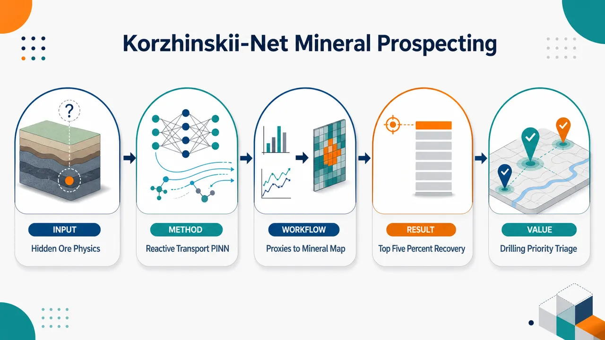
研究问题传统矿产远景建模把地下找矿简化为“地表代理特征分类”：用断裂、遥感、地球物理异常直接预测矿床，却看不见真正控制成矿位置的地下热对流、流体压力、金属迁移与岩性沉淀过程；同时矿床标签稀少且空间聚集，普通交叉验证容易因邻近泄漏而虚高。创新方法提出 Korzhinskii-Net：一个二维径向物理信息神经网络，把地下剖面画成从地表到深部热源的连续场，同时预测温度 T、压力 P、金属浓度 C；核心 Aha 点是将 Darcy 流、平流-扩散热传输、Arrhenius–softplus 饱和沉淀反应嵌入同一可微 PINN，让地表代理层只调制边界条件和表面足迹，而不是直接做分类特征，从而生成物理一致的矿化场 M(x,z)。工作流程输入归一化二维径向坐标 (x,z) 与开放代理层：断裂密度、地震活动、岩性接触、深部侵入根指示、NASA 地表温度；Fourier 特征编码后进入多头 MLP，输出地下温度、压力、金属浓度；用自动微分计算 Darcy 流、热传输、反应残差，并结合边界条件、已知矿床正样本、硬环负样本和表面调制损失训练；最终输出地下矿化强度热图与候选网格排序。关键结果在 Norilsk、Pechenga、Udokan、Sukhoi Log、Mirny 五个俄罗斯矿省和多类矿产系统上，Korzhinskii-Net 平均 PR-AUC 达 0.885，显著高于最佳经典基线梯度提升的 0.281；平均正样本分数排名为 0.019，经典模型集中在 0.41–0.58；排名前 5% 网格可恢复至少 95% 正样本。消融显示热传输最关键：去除后 PR-AUC 从 0.885 降至 0.675，去除全部物理项仅 0.158。应用价值可作为钻探优先级筛选层，把大面积候选区压缩成少量高概率靶区，降低盲目钻探成本；模型输出的温度烟囱、压力驱动流体、过饱和沉淀带具有地质可解释性，有助于从“相关性找矿”转向“地下成矿过程反演”。同一架构还可迁移到地热资源评价、碳封存场址表征和地下储氢等地下资源任务。第一部分：核心概览 (Overview)
Korzhinskii-Net 将 Darcy 流、平流-扩散热传输、Arrhenius–softplus 反应沉淀嵌入同一 PINN，用于地下矿产远景建模。相较依赖地表代理特征的传统分类器，它以可微物理模拟约束地下温度、压力、金属浓度场，在 5 个俄罗斯矿省、4 类矿产系统上取得 PR-AUC 0.885，显著高于最佳经典基线 0.281，并以硬环负样本控制空间泄漏，推动 MPM 从相关性分类转向物理一致的弱监督反演。
---
第二部分：结构化快速回顾
《Korzhinskii-Net: Physics-Informed Neural Network for Sub-Surface Mineral Prospectivity Modelling》（None，）
背景
传统 mineral prospectivity modelling, MPM 多依赖逻辑回归、随机森林、梯度提升、SVM、浅层 MLP 或 CNN，从地表地质、遥感、地球物理代理特征预测矿床存在性。核心缺陷在于：标签稀少且空间聚集，交叉验证易发生邻近泄漏；模型未显式编码控制矿化定位的地下物理过程，如 热对流、流体流动、岩性控制沉淀。
方法
Korzhinskii-Net 是一个二维径向 physics-informed neural network，输入归一化坐标 ((x,z))，输出 temperature (T)、pressure (P)、metal concentration (C)。模型通过 Darcy law、稳态热平流-扩散方程、软饱和 Arrhenius 反应项构造矿化场 (M(x,z)=R(T,C))。使用开放数据代理层调制边界条件与弱监督项，包括断裂密度、地震活动、岩性接触、深部侵入根指示、NASA POWER 地表温度。
结果
在 Norilsk、Pechenga、Udokan、Sukhoi Log、Mirny 五个矿省上，Korzhinskii-Net 平均 PR-AUC = 0.885，最佳经典基线梯度提升为 0.281；平均正样本分数排名 0.019，经典模型集中在 0.41–0.58。Wilcoxon 配对检验显示相对所有其他模型 p < 0.01。
讨论
性能提升来自地下物理约束，而非特征工程。热传输残差的消融造成最大下降，平均 PR-AUC 从 0.885 降至 0.675；去除全部物理项后仅 0.158。模型在深部热源控制明显的 Norilsk、Sukhoi Log 上优势最大。
局限
二维径向假设牺牲了三维构造复杂性；稳态方程无法表达瞬态热液脉冲；反应项是单组分简化，未包含多金属物种、氧化还原、pH 演化；开放代理层仍是粗粒度近似；真正地质域外泛化尚未充分验证。
结论
物理信息可微模拟器在弱监督、开放数据条件下可显著提升地下矿产远景建模。Korzhinskii-Net 展示了将地表代理作为边界调制，而非直接分类特征的路线，可扩展至地热、碳封存、地下储氢等资源评价任务。
---
第三部分：逐章节冷凝解析
Abstract
- Problem framing: surface classifiers miss subsurface ore physics
现有 operational MPM 通常退化为基于浅层地表代理的分类任务，无法捕捉真正控制矿体定位的地下过程：heat advection、fluid flow、lithology-dependent precipitation。原文明确指出，*"most operational pipelines reduce to data-driven classifiers trained on shallow surface proxies"*，并强调这些模型 *"are blind to the subsurface physics that actually localises ore: heat advection, fluid flow, and lithology-dependent precipitation."*
- Core architecture: a 2-D radial reactive-transport PINN
Korzhinskii-Net 被定义为 2-D radial PINN，将 Darcy flow、advective–diffusive heat transport 与 softplus-saturated reaction rate 耦合进单一可微前向模型。证据表述为：*"We present Korzhinskii-Net, a 2-D radial physics-informed neural network (PINN) that couples Darcy flow, advective–diffusive heat transport, and a softplus-saturated reaction rate into a single differentiable forward model."*
- Theoretical lineage: infiltration metasomatism as scaffold
命名与理论基础来自 Dmitri S. Korzhinskii 的 infiltration metasomatism，该理论把流体渗入、围岩化学、矿物分带联系起来。原文写道：*"The network is named after Dmitri S. Korzhinskii (1899–1985), whose theory of infiltration metasomatism provides the physical scaffold."*
- Benchmark scope: five Russian provinces and four commodity classes
评估覆盖 Norilsk, Pechenga, Udokan, Sukhoi Log, Mirny 五个俄罗斯矿省，涵盖 Ni–Cu–PGE、Ni–Cu sulphide、sandstone-hosted Cu、orogenic Au、kimberlitic diamond。原文列明：*"five Russian ore provinces spanning four commodity classes—Norilsk (Ni–Cu–PGE), Pechenga (Ni–Cu sulphide), Udokan (sandstone-hosted Cu), Sukhoi Log (orogenic Au), and Mirny (kimberlitic diamond)."*
- Performance headline: PR-AUC and fractional rank dominate baselines
Korzhinskii-Net 平均 PR-AUC = 0.885，最佳经典基线 gradient boosting = 0.281；平均分数排名 0.019，基线 0.413。原文给出：*"Korzhinskii-Net attains a mean PR-AUC of 0.885 versus 0.281 for the strongest classical baseline (gradient boosting), and a mean fractional rank of 0.019 versus 0.413."*
- General implication: physics-informed simulators recover missed localisation patterns
结果跨五个矿省、四类矿产系统一致，指向物理信息模型在开放数据约束下能恢复纯特征学习遗漏的矿化定位模式。原文结论为：*"The improvement is consistent across all five provinces and four commodity systems, suggesting that physics-informed differentiable simulators... can recover localisation patterns that pure feature-based learners systematically miss."*
---
1 Introduction
- MPM is usually cast as supervised learning over surface stacks
矿产勘查被形式化为给定地表与地球物理特征栈、预测地下是否赋存目标矿床的监督学习任务。原文开场为：*"Mineral exploration is increasingly cast as a supervised learning problem"*，并具体说明：*"Given a stack of surface and geophysical features over a candidate prospect, the practitioner is asked to predict whether a target deposit is hosted beneath."*
- Dominant baselines share two structural weaknesses
主流方法包括 logistic regression, random forests, gradient boosting, support vector machines, shallow MLPs，继承两类弱点：标签稀缺、空间聚集、发现偏差；未编码矿化物理。原文写道：*"The dominant family of methods—logistic regression, random forests, gradient boosting, support vector machines, and shallow MLPs over hand-crafted layers—inherits two structural weaknesses."*
- Spatial leakage inflates naive cross-validation
正样本空间聚集且偏向已发现区域，若未控制 ring-of-influence leakage，泛化性能会被系统性高估。原文表述为：*"training labels are scarce, spatially clustered, and biased toward what has already been discovered"*，以及 *"cross-validation that does not control for ring-of-influence leakage routinely overstates generalisation."*
- Classical learners infer correlations rather than simulate ore-forming processes
传统模型不模拟 hydrothermal convection、metalliferous brine transport、pressure–temperature–lithology dependent precipitation，只是学习地表相关性。原文核心句为：*"They infer correlation patterns; they do not simulate the rock."*
- Classical MPM trajectory moved from overlays to data-driven classifiers
MPM 从 weights-of-evidence、fuzzy-logic overlays 发展到随机森林、梯度提升、深度 CNN 等数据驱动模型，共同假设地表证据层足以代表地下矿体。原文概括为：*"Classical MPM has evolved from weights-of-evidence and fuzzy-logic overlays toward fully data-driven classifiers"*，其共享前提是 *"surface evidence layers are sufficient statistics for sub-surface ore."*
- Reactive transport simulators are accurate but unsuitable for end-to-end inverse learning
TOUGHREACT、PFLOTRAN 代表高保真物理模拟器，但存在 forward-only、计算昂贵、不可微等问题。原文称：*"Reactive transport simulators such as TOUGHREACT and PFLOTRAN inhabit the opposite extreme, offering high-fidelity physics but being forward-only, computationally expensive, and not differentiable."*
- PINNs bridge data-driven classifiers and physical simulators
PINN 通过将 PDE 作为软损失项，把网络变成连续、无网格、可反演的求解器。原文定义：*"by embedding partial differential equations as soft loss terms, they convert the network into a continuous mesh-free solver that can be inverted against sparse observations."* 通用损失为 PDE 残差、边界条件、稀疏观测误差的加权和：(L(θ)=sumᵢłambdaᵢ|Nᵢ[f_θ]|_Ømega²⁺sumⱼμⱼ|Bⱼ[f_θ]|ₚₐᵣₜᵢₐₗØₘₑgₐ²⁺ν|f_θ-y|_D²)。
- Claimed gap: no province-scale end-to-end PINN benchmarked against MPM toolkit
虽然 PINN 已用于地下流动、地震反演、反应运移，但尚无面向整个矿省、使用矿床目录标签、与标准 MPM 工具正面对比的端到端 PINN。原文为：*"to our knowledge no end-to-end PINN has been trained at the scale of an entire ore province, against a labelled deposit catalogue, and benchmarked head-to-head against the standard MPM toolkit. We close that gap."*
- Korzhinskii-Net state variables and governing physics
模型是单个多头 MLP，逼近二维径向剖面上的 (T,P,C) 场；速度由 Darcy law (q=-(k/μ)nabla P) 给出；热传输由 (h̊o cₚqḑotnabla T=nablaḑot(łambdanabla T)) 约束；矿化场由 (M(x,z)=R(T(x,z),C(x,z))) 定义。原文写道：*"Korzhinskii-Net is a single multi-head MLP that approximates the temperature, pressure, and metal-concentration fields (T,P,C) over a 2-D radial cross-section."*
- Weak supervision uses only open proxies and sparse deposit pixels
每个站点可见数据仅包括开放地表/遥感代理层与少量已知矿床像素；代理包括 faults, seismicity, lithological contacts, deep intrusive root indicators。原文说明：*"Training is weakly supervised, with the only data the model sees per site being open-source surface and remote-sensing proxies... and a small handful of known deposit pixels."*
- Three contributions are architecture, benchmark protocol, and empirical evaluation
三项贡献分别是：反应运移 PINN 架构；控制空间泄漏的公平基准协议；跨 5 个矿省、7 个经典基线、1 个 proxy floor 的显著性能提升与开源发布。原文列为：*"The contributions of this paper are threefold"*，包括 *"a reactive-transport PINN architecture tailored to mineral systems"*、*"a fair benchmark protocol"*、*"evaluate Korzhinskii-Net against seven classical baselines and a non-trainable proxy floor."*
---
2 Related Work
- Four research threads are combined
研究定位在 physics-informed deep learning、data-driven subsurface modeling、metasomatic zoning theory、coordinate-based neural field representations 四个方向的交叉处。原文写道：*"Our contribution sits at the intersection of four largely disjoint research threads."*
- PINN literature has evolved beyond vanilla PDE residuals
PINN 已扩展到 adaptive loss weighting、domain decomposition、causal/curriculum training、operator learning、hard architectural constraints。原文列举：*"adaptive loss weighting to balance competing residuals, domain decomposition for stiff or multi-scale problems, causal and curriculum-style training... operator-learning variants... hybrid schemes."*
- Advection-dominated and multi-field coupled systems are known PINN failure modes
常规 PINN 在多物理场耦合、刚性反应源项、平流主导系统上表现困难，尤其压力近椭圆、传输近双曲、反应刚性同时存在时。原文指出：*"vanilla formulations struggle when the underlying physics couples several fields of very different character — for instance a near-elliptic pressure field driving a hyperbolic transport equation that in turn feeds a stiff reactive source term."*
- Subsurface ML often accelerates simulators but weakly represents chemistry
地下系统 ML 已用于多孔介质流、污染物迁移、地热、CO₂ 封存、热液系统；方法包括数据驱动替代模型、图/卷积有限体积模拟器、混合管线。但化学多作为黑箱反应网络或查表。原文写道：*"they typically treat the chemistry either as a black-box reaction network or as a tabulated lookup."*
- Geochemical priors are usually absent in learned reactive transport
传统地球化学约束如 mass-action consistency、component immobility hierarchies、sharp reaction fronts 很少被编码。原文指出：*"they rarely encode the structural constraints that geochemists know a priori — mass-action consistency, component immobility hierarchies, or the existence of sharp reaction fronts."*
- Metasomatic zoning provides the physical prior
渗滤交代作用理论描述流体路径上局部平衡导致清晰矿物带、反应前缘、组分迁移等级与分带宽度“望远镜式”变化。原文写道：*"sharp mineral zones develop along a fluid-flow path as a consequence of local equilibrium between a moving fluid and a multi-component rock"*，并提到 *"discrete zones separated by reaction fronts, component mobility ordered by chemical-potential gradients."*
- Classical reactive transport simulators are accurate but costly
高保真反应运移模拟器计算成本随组分数、动力学刚性、前缘几何分辨率快速增长。原文为：*"These simulators are accurate but expensive, and their cost grows quickly with the number of components, the stiffness of the kinetic network, and the resolution required to capture front geometry."*
- No prior neural-field architecture encodes metasomatic constraints directly
现有学习型反应运移研究多针对简单单反应系统或忽略分带结构；尚无直接把交代分带约束编码进 neural field 的尝试。原文声称：*"There is, to our knowledge, no prior attempt to encode this specific class of metasomatic constraints directly into a neural-field architecture."*
- Fourier-feature coordinate networks address sharp gradients and reaction fronts
坐标网络通过随机 Fourier 特征或正弦位置编码缓解 MLP 的 spectral bias，适用于反应前缘等高频结构。原文写道：*"random Fourier features, sinusoidal positional encodings, and related spectral lifts... overcome the spectral bias of plain MLPs"*，并说明 *"Reaction fronts in metasomatic systems are exactly such features."*
- Positioning: first integration of four elements
Korzhinskii-Net 被定位为首个同时结合 Fourier-feature coordinate trunk、temperature/pressure/concentration heads、explicit reaction module、flow/heat/reaction composite loss 的架构。原文总结：*"Korzhinskii-Net is... the first architecture to combine all four."*
---
3 Method
- Domain representation: normalized 2-D radial cross-section
每个候选远景区被表示为 ((x,z)in[0,1]×[0,1]) 的二维径向剖面，(x) 为距中心水平半径，(z=0) 为地表，(z=1) 为建模地壳板块底部。原文定义：*"For each candidate prospect we define a 2-D radial cross-section in normalised coordinates (x,z)∈[0,1]×[0,1]."*
- Radial assumption reduces cost by two orders of magnitude
径向剖面基于局部热源近似对称，避免完整三维训练成本。原文写道：*"The choice of a radial section, rather than a full 3-D volume, reflects the symmetry assumption of a localised heat source beneath the prospect and reduces the PINN training cost by two orders of magnitude."*
- Network architecture: 6-layer width-128 tanh multi-head MLP
网络 (f_θ:R²→R³)，输出 ((T,P,C))。主干是 6-layer MLP、宽度 128、激活函数 tanh，三个线性头分别预测温度、压力、浓度。原文参数为：*"The trunk is a 6-layer MLP of width 128 with tanh activations; three linear heads project to the three fields."*
- Fourier feature encoding uses 32×2 Gaussian matrix and σ=4
输入坐标通过 Fourier 特征 (γ(x,z)=[sin(2π B[x,z]^→p),o̧s(2π B[x,z]^→p)]) 编码，其中 (BinR³²×²)，元素来自 (N(0,σ²⁾)，(σ=4)。原文为：*"B∈R³²×² is a fixed random Gaussian matrix with entries drawn from N(0,σ²) and σ=4."*
- Darcy flow defines pore-fluid velocity and pressure PDE
孔隙流体速度为 (q(x,z)=-(k(x,z)/μ)nabla P(x,z))，稳态质量守恒 (nablaḑotq=0) 导出 (nablaḑot((k/μ)nabla P)=0)。原文写道：*"Pore-fluid velocity follows Darcy’s law"*，并给出 *"mass conservation in the steady-state limit imposes ∇·q=0."*
- Heat transport couples advection and diffusion
热传输方程为 (h̊o cₚqḑotnabla T=nablaḑot(łambdanabla T))，由岩石密度、热容、热导率与 Darcy 流共同控制。原文公式为：*"Heat is transported advectively and diffusively, ρ cₚ q·∇T = ∇·(λ∇T)."*
- Boundary conditions encode intrusive heat source and surface climatology
底部 (z=1) 边界编码由 deep-root proxy 调制的局部侵入热源；地表 (z=0) 采用 NASA POWER 地表温度气候学一致的区域地温梯度。原文写道：*"the boundary condition at z=1 encodes a localised intrusive heat source whose surface footprint is modulated by a deep-root proxy"*，以及 *"the surface boundary z=0 is held at a regional geothermal gradient consistent with NASA POWER surface-temperature climatology."*
- Reaction rate combines Arrhenius kinetics and softplus saturation
沉淀速率 (R(T,C)=softplus(α kAᵣᵣ(T)[C-Cₑq(T,ell)]))，其中 (kAᵣᵣ(T)=Aexp(-Eₐ/R_gT))。(α) 防止过饱和区域梯度病态。原文明确：*"α is a softplus-saturation parameter that prevents pathological gradients in supersaturated regions."*
- Lithology enters through equilibrium solubility
(Cₑq(T,ell)) 为岩性依赖平衡溶解度，(ell) 为局部岩性标签；矿化在 (C>Cₑq) 时增强。原文定义：*"Cₑq(T,ℓ) is the lithology-dependent equilibrium solubility, ℓ is the local lithology label."*
- Mineralisation field is the reaction output
矿化场定义为 (M(x,z)=R(T(x,z),C(x,z)))，是网络的预测目标。原文写道：*"The mineralisation field is then M(x,z) def= R(T(x,z),C(x,z)) and constitutes the network’s prediction target."*
- Training loss combines seven terms
总损失为 (L=łambda_fLfₗₒw+łambdaₕLₕₑₐₜ+łambdaᵣLᵣₑₐcₜ+łambda_bLbc+łambdaₚLₚₒₛ+łambdaₙLₙₑg+łambdaₘLₘₒd)。原文给出：*"The total training loss is a weighted sum of physics, boundary, and weak-supervision terms."*
- PDE residuals are evaluated at collocation points using automatic differentiation
前三个物理项在 (N_c) 个均匀采样 collocation points 上计算，导数由自动微分获得。热残差示例为 (N_c⁻¹sumᵢ₍ₕ̊o cₚqᵢḑotnabla Tᵢ₋nablaḑot(łambdanabla Tᵢ₎₎²)。原文说明：*"the first three terms are PDE residuals evaluated at N_c uniformly sampled collocation points"*，且 *"derivatives computed by automatic differentiation."*
- Positive and negative weak supervision use hinge losses
正样本 hinge (max(0,τ₊₋M(x,z))²) 拉高已知矿床像素的 (M)；负样本 hinge (max(0,M(x,z)-τ₋₎²) 压低硬环负样本的 (M)。原文写道：*"Lₚₒₛ is a hinge loss... pulling M above a positive threshold τ+ at known deposit pixels"*，以及 *"Lₙₑg is the symmetric hinge... pushing M below a negative threshold τ− at hard ring negatives."*
- Surface proxy modulation ties mineralisation footprint to observable layers
(Lₘₒd) 通过 ((M(x,0)-g(x))²) 将地表矿化足迹与断裂密度、地震活动等代理层软绑定。原文定义：*"Lₘₒd ties the surface footprint of M to fault density and seismicity proxies through a soft modulation (M(x,0)-g(x))²."*
- Five global open-data layers are used
代理层包括 OpenStreetMap geology overlays 断裂密度、USGS 地震强度、Macrostrat 岩性接触、区域地球物理重建深部侵入根指示、NASA POWER 地表热气候。原文列明：*"Five global open-data layers are used as soft modulators and as boundary modulators."*
- No proprietary or site-specific datasets are used
所有代理层栅格化到径向剖面，用作相关边界或调制损失的乘性系数；不使用私有或站点专属数据。原文强调：*"no proprietary or site-specific datasets are used."*
- Training configuration is lightweight
训练使用 Adam，学习率 (10⁻³)，cosine decay，每站点 800 epochs，每 epoch 4096 collocation points，单个 Apple Silicon CPU 上五个站点全重训低于一小时。原文写道：*"Training uses Adam at learning rate 10⁻³ with cosine decay, 800 epochs per site, and 4096 collocation points per epoch on a single Apple Silicon CPU."*
---
4 Experiments
- Benchmark provinces cover commodity and tectonic diversity
五个矿省跨越多类矿产与构造环境：Norilsk Ni–Cu–PGE、Pechenga Ni–Cu sulphide、Udokan sandstone-hosted Cu、Sukhoi Log orogenic Au、Mirny kimberlitic diamond。原文写道：*"five Russian ore provinces that span a broad commodity and tectonic spectrum."*
- Positive counts and prevalence are explicitly reported
表 1 中正样本数量与阳性率为：Norilsk (N₊₌₃₀,h̊o=0.13)；Pechenga (N₊₌₅₀,h̊o=0.20)；Udokan (N₊₌₁₅,h̊o=0.07)；Sukhoi Log (N₊₌₂₅,h̊o=0.11)；Mirny (N₊₌₂₂,h̊o=0.10)。原文定义：*"prevalence is ρ=N+/Ng, which ranges from 0.07 at Udokan to 0.20 at Pechenga."*
- Negative pool is constructed during evaluation, not taken from existing labels
负样本池不是预先存在的标签集，而是在评估时构造。原文说明：*"the negative pool is constructed at evaluation time and is not part of any pre-existing label set."*
- Fetcher script standardizes open-data processing
单一 fetch.py 从 Macrostrat、OpenStreetMap、USGS、NASA POWER 下载、缓存、栅格化代理层，所有站点处理一致，无站点特定特征工程。原文写道：*"A single fetcher script (fetch.py) downloads, caches, and rasterises the proxy layers per site"*，以及 *"all sites are processed identically with no per-site hand-tuning of feature engineering."*
- Hard ring negatives control spatial leakage
对每个正样本半径 (r₊)，负样本从环带 (r:rᵢₙłe |r-r₊|łe rₒᵤₜ) 采样，(rᵢₙ=0.4)，(rₒᵤₜ=2.0)。近邻像素被排除以避免泄漏，过远像素被排除以避免过于容易。原文写道：*"candidate negatives are sampled from a radial annulus"*，且 *"pixels inside rᵢₙ are excluded as too proximal, those outside rₒᵤₜ are excluded as trivially distant."*
- Shared five-fold splits remove model-specific advantage
每个站点正样本只随机划分一次为五折，所有九个学习器共享同一划分，包括 PINN, Proxy, LR, RF, ET, GB, KNN, SVM, MLP。原文为：*"A single random partition of positives into five folds is computed once per site and shared across all nine learners."*
- Positive depths are jittered to avoid memorized elevation tags
正样本在 (z) 方向跨折扰动，防止网络记住折特异的高度标记。原文写道：*"positives are jittered in z across folds to prevent the network from memorising fold-specific elevation tags."*
- Classical learners receive the same proxy feature stack
七个经典学习器使用与 PINN 软调制相同的代理特征栈，避免信息不对称。原文强调：*"The seven classical learners are trained on the same proxy feature stack the PINN sees as soft modulators, ensuring no informational asymmetry."*
- Proxy floor is non-trainable sanity baseline
非训练基线 (Mₚₓ(x,z)=kₘₒd(x)ḑot s_z(z))，其中 (kₘₒd) 是地表调制栈，(s_z) 是固定深度剖面。原文写道：*"a non-trainable proxy product... is included as a sanity floor."*
- Evaluation metrics focus on imbalance and drilling ranking
使用 PR-AUC 处理类别不平衡；使用平均正样本分数排名 (bar r₊₌frac1N₊sumₚᵢₙPfracrank(p)-1N_g-1)，其中 0 完美、0.5 随机。原文说明：*"We report PR-AUC, robust to class imbalance, and the mean fractional rank of positives"*，并称后者是 *"the operationally relevant metric for drilling-prioritisation triage."*
---
5 Results
- Korzhinskii-Net dominates mean PR-AUC
表 2 显示硬负样本 5-fold CV 下，Korzhinskii-Net 平均 PR-AUC = 0.885，最强经典学习器为 GB = 0.281，约 3.1× 差距。原文写道：*"Korzhinskii-Net attains a mean PR-AUC of 0.885, exceeding the next-best learner (GB, 0.281) by a factor of ∼3.1×."*
- Per-site PR-AUC is best in all five provinces
PINN 在各站点得分：Norilsk 0.990、Pechenga 0.709、Udokan 0.929、Sukhoi Log 1.000、Mirny 0.798。原文总结：*"the improvement consistent across all five provinces."*
- Classical baselines are only moderately competitive at Pechenga
Pechenga 阳性率最高 (h̊o=0.20)，且非训练 proxy product 的 PR-AUC 达 0.604，经典模型相对更强：RF 0.425、ET 0.382、GB 0.530、KNN 0.386。原文解释：*"classical learners are competitive only at Pechenga, where prevalence is highest (ρ=0.20) and the proxy modulators are themselves moderately predictive."*
- Largest gaps occur where deep structure dominates
Norilsk 与 Sukhoi Log 的最大绝对差距对应深部热源或剪切带热异常控制矿化定位，热传输方程正好刻画该机制。原文写道：*"the largest absolute gaps occur at Norilsk and Sukhoi Log, where the dominant localising mechanism... is precisely what the heat-transport equation in (4) is designed to capture."*
- Mean fractional rank shows operational drilling advantage
Korzhinskii-Net 平均正样本分数排名 (bar r₊₌₀.019)，经典学习器集中在 0.41–0.58，意味着正样本排在极靠前位置。原文写道：*"Korzhinskii-Net achieves r̄+=0.019 while all classical learners cluster in the 0.41–0.58 range."*
- Top-5% ranked grid recovers at least 95% of positives
操作意义上，模型可在排名前 5% 网格中恢复 ≥95% 正样本。原文表述为：*"in operational terms means Korzhinskii-Net recovers ≥95% of positives in the top 5% of the ranked grid."*
- Pooled precision–recall curves rule out threshold artifacts
汇总 PR 曲线显示 Korzhinskii-Net 在整个 recall 轴上都位于基线之上，不是单一阈值选择造成的优势。原文写道：*"Korzhinskii-Net’s PR curve is uniformly above the baselines along the entire recall axis."*
- Bootstrap and Wilcoxon tests support statistical robustness
对每站点 PR-AUC 进行 B = 1000 bootstrap 重采样；Korzhinskii-Net 的置信区间与任何经典基线在任何站点均不重叠；配对 Wilcoxon signed-rank test 对每个其他模型均拒绝相等，p < 0.01。原文为：*"bootstrap resampling of the per-site PR-AUC (B=1,000 resamples)"*，以及 *"a paired Wilcoxon signed-rank test... rejects equality between Korzhinskii-Net and every other model at p<0.01."*
- Ablation identifies heat transport as the most critical physics term
去除热传输残差平均 PR-AUC 下降 −0.21，从 0.885 到 0.675；去除反应项降至 0.755；去除 Darcy 流降至 0.815。原文写道：*"removing the heat-transport residual is the most damaging single change (−0.21 mean PR-AUC), followed by the reaction-rate term (−0.13) and the Darcy term (−0.07)."*
- Removing all physics collapses performance to supervised proxy MLP level
去除全部物理项后平均 PR-AUC 仅 0.158，接近泛化差的普通监督模型。原文总结：*"removing all three reduces Korzhinskii-Net to the level of a generic supervised MLP on proxy features (0.158 mean PR-AUC)."*
- Proxy modulators matter but are less decisive than physics
去除 proxy modulators 后平均 PR-AUC 为 0.708，说明开放代理层辅助边界/表层约束，但核心提升仍来自物理残差。表 3 数值显示：*"− Proxy modulators 0.708."*
- Uniform random negatives inflate all reported scores
将硬环负样本换为均匀随机负样本会使所有模型 PR-AUC 提高 0.10–0.30，但相对排序不变。原文写道：*"Switching from hard ring negatives to uniform random negatives boosts every model’s reported PR-AUC by 0.10–0.30, but the relative ordering... is preserved."*
- Cross-validation protocol sensitivity is low for PINN
3-fold、5-fold、leave-one-deposit-out 对 Korzhinskii-Net 平均 PR-AUC 的影响小于 0.02；经典基线方差可达 0.08。原文写道：*"mean PR-AUC for Korzhinskii-Net varies by less than 0.02 across the three protocols while the variance for classical baselines reaches 0.08."*
---
6 Discussion
- Subsurface confounder is simulated rather than ignored
经典 MPM 把地下状态作为未观测混杂因素，从地表证据直接预测矿床；当浅部特征诊断性强时有效，深部结构主导时失败。Korzhinskii-Net 通过模拟混杂因素缩短因果路径。原文写道：*"The classical MPM toolkit treats the subsurface as an unobserved confounder"*，而 Korzhinskii-Net *"short-circuits this by simulating the confounder."*
- PDE residuals act as continuity priors, not ordinary regularizers
PDE 残差把地表证据约束到自洽地下状态流形上，使可行状态位于低维曲面。原文说明：*"the PDE residuals are not regularisers in any standard sense but a continuity prior that ties surface evidence to a self-consistent subsurface state."* 形式上，流形 (M=(x,z,T,P,C):Nᵢ₌₀) 维数低于无约束 (R⁵)。
- Norilsk output has physically interpretable chimney structure
Norilsk 中训练网络产生的温度等值线跟随底部深部侵入根代理并向地表平滑衰减，形成 prospect 下方烟囱状结构。原文描述：*"temperature contours that follow the deep intrusive root proxy at the basal boundary and decay smoothly toward the surface with a characteristic chimney structure beneath the prospect."*
- Pressure gradients drive convective hydrothermal flow
压力梯度驱动 Darcy 流 (q=-(k/μ)nabla P)，收敛于热源足迹，与岩浆-热液对流单元的上升/对流支一致。原文写道：*"pressure gradients drive a Darcy flow... that converges on the heat-source footprint consistent with the convective leg of a magmatic-hydrothermal cell."*
- Mineralisation peaks at first supersaturation along streamline
(M) 在高 (C) 流体进入 (Cₑq) 下降到低于 (C) 的热状态时达到峰值，即沿流线首次满足 (C(x,z)>Cₑq(T(x,z),ell))。原文写道：*"the mineralisation field M peaks where advective flow brings high C into a thermal regime where Cₑq drops below C"*，并称这是 *"exactly the prediction of Korzhinskii’s infiltration metasomatism theory."*
- Emergent physics rather than hard-coded heuristic
分带式矿化定位不是手工规则，而是物理损失与弱监督共同产生的涌现特征。原文强调：*"recovered here as an emergent feature rather than a hard-coded heuristic."*
- 2-D radial assumption is deliberate but limiting
Sukhoi Log 等构造控制矿床可能违反径向对称；三维扩展概念简单，但 collocation 点成本从 (O(N²⁾) 增至 (O(N³⁾)，约高一个数量级。原文写道：*"The 2-D radial assumption is a deliberate simplification"*，以及 *"a 3-D extension is conceptually straightforward but increases collocation-point counts by an order of magnitude."*
- Steady-state equations omit transient hydrothermal pulses
斑岩和浅成低温热液系统常受瞬态热液脉冲控制，需要 ((t,x,z)) 扩展与时间分辨代理层，并将热方程替换为 (h̊o cₚpartialₜT+h̊o cₚqḑotnabla T-nablaḑot(łambdanabla T)=0)。原文说明：*"transient hydrothermal pulses... would require a (t,x,z) extension and a time-resolved proxy stack."*
- Reaction term is single-component and chemically simplified
当前反应项为单组分；多金属物种、氧化还原、pH 演化需要 (CinRⁿₛ) 与热力学数据库。原文写道：*"The reaction term in (5) is one-component, and multi-metal speciation, redox coupling, and pH evolution would require a vector C∈Rⁿₛ... and a thermodynamic database."*
- Transfer expectation rests on shared hyperparameters and no site-specific engineering
五个矿省覆盖四类矿产和四种构造环境，且使用相同 fetcher、相同损失、相同超参数。原文指出：*"the same fetcher, same loss, and same hyperparameters apply at every site."*
- Deployment framing: drilling-prioritisation triage
高 PR-AUC 与低 fractional rank 支持将模型作为钻探优先级筛选层：排序候选远景区，钻探前十分位，预期恢复 ≥95% 正样本。原文写道：*"Korzhinskii-Net can be deployed as a drilling-prioritisation triage layer that ranks candidate prospects, drills the top decile, and is expected to recover ≥95% of positives."*
---
7 Conclusion
- Main empirical claim is a large benchmarked gain
Korzhinskii-Net 在开放代理与稀疏矿床弱监督下，跨五个矿省、四类矿产取得平均 PR-AUC 0.885，最佳经典基线 0.281，平均正样本分数排名 0.019。原文写道：*"attaining a mean PR-AUC of 0.885 versus 0.281 for the strongest classical baseline and a mean fractional rank of r̄+=0.019."*
- Improvement is attributed to simulating subsurface processes
性能差距不是特征工程技巧，而是由模型模拟地下状态而非从地表相关性推断导致。原文明确：*"The improvement is not a feature-engineering trick but a structural consequence of letting the model simulate the subsurface rather than infer it from surface correlates."*
- Conventional MPM has a structural ceiling
经典模型依赖浅层地球化学、地球物理异常与矿床出现之间的相关性，这种失败模式被描述为结构上限而非可由调参解决的问题。原文写道：*"the dominant failure mode of conventional prospectivity models... is a structural ceiling rather than a tunable hyperparameter."*
- Physical constraints move proxies from explanatory features to boundary modulators
嵌入 Darcy flow、advective-diffusive heat transport、Arrhenius reaction kinetics 后，代理层主要调制边界条件，而不是直接争夺解释权。原文表述为：*"with proxies modulating boundary conditions rather than competing for explanatory weight."*
- Limitations remain explicit
径向对称牺牲脉状和构造控制矿床细节；Arrhenius 项只是完整交代热力学的简化；代理场是地下真实状态的粗略近似；域外地质设置性能仍开放。原文逐条说明：*"The radial-symmetry simplification sacrifices structural detail"*，*"the Arrhenius term is a deliberate caricature of full metasomatic thermodynamics"*，以及 *"Performance under genuinely out-of-distribution geological settings remains an open empirical question."*
- Future work targets 3-D differentiable solvers and broader tectonic settings
后续方向包括放松对称性、构建完整三维可微求解器、扩展基准到更多构造环境。原文写道：*"future work should relax the symmetry assumption with full three-dimensional differentiable solvers and extend the benchmark to additional tectonic settings."*
- Architectural pattern generalizes beyond mineral exploration
同一模式可用于地热资源评估、碳封存场址表征、地下氢储存。原文写道：*"the same architectural pattern... is directly applicable to geothermal resource assessment, carbon sequestration site characterisation, and subsurface hydrogen storage."*
- Open-source release under Apache-2.0
代码、训练管线、基准协议和评估脚本以 Apache-2.0 发布于 GitHub。原文说明：*"We release the full pipeline, including training code, benchmark protocols, and evaluation scripts, under an Apache-2.0 license."*
---
References
- Reference set spans MPM, PINNs, geoscience ML, reactive transport, and regional geology
引文覆盖统计 MPM 起源、现代矿产机器学习、PINN、反应运移、区域矿产地质、深度遥感/超光谱模型。例如 Agterberg et al. (1990) 对应经典统计模式整合，Dumakor-Dupey & Arya (2021) 与 Jung & Choi (2021) 对应矿业 ML 综述，Adhikari et al. (2026) 对应 critical minerals 反应运移 PINN。参考列表中出现：*"Statistical pattern integration for mineral exploration"*、*"Machine learning—a review of applications in mineral resource estimation"*、*"Reactive transport modeling with physics-informed machine learning for critical minerals applications."*
- Citation choices emphasize recent ML baselines and geoscientific context
2021–2026 年引用占比较高，包含 CNN-transformer、3D-2D CNN、attention CNN、hyperspectral drill-core 深度学习等，与近年 MPM 深度学习背景对应。参考项中包括：*"CNN-transformers for mineral prospectivity mapping"*、*"3D mineral prospectivity modeling... using the convolutional neural network with attention mechanism"*、*"Deep learning for hyperspectral prediction of rare earth oxide grades in drill cores."*
---
第四部分：深度理解与语言支持
1. 术语解析
- Mineral prospectivity modelling (MPM)
指对区域或网格单元进行矿产远景概率/排序建模，不等同于直接发现矿体。语境中 MPM 被批评为常被简化成地表特征分类任务；关键差别在于 prospectivity 更强调“勘查优先级”而非确定性矿床存在。
- Physics-informed neural network (PINN)
指把控制方程残差、边界条件、观测误差共同放入损失函数的神经网络。此处 PINN 不是单纯正则化网络，而是一个弱监督反演框架：在稀疏矿床标签与开放代理约束下，学习满足 Darcy flow、heat transport、reaction kinetics 的连续场。
- Hard ring-shaped negatives
指从正样本周围一个环带内采负样本，既排除太近的潜在同源/泄漏点，也排除太远的容易负样本。这里 (rᵢₙ=0.4)、(rₒᵤₜ=2.0)，目的是构造更接近真实勘查场景的困难负例。
- Fractional rank
正样本在全网格排序中的归一化平均名次，0 表示所有正样本排最前，0.5 接近随机。相比 PR-AUC，它更直接回答钻探优先级问题：有限预算下正样本是否集中在候选清单顶部。
- Infiltration metasomatism
渗滤交代作用，强调流体沿岩石路径迁移并与围岩发生局部平衡反应，形成矿物分带和反应前缘。这里不是泛泛“热液作用”，而是具有方向性流体通量、组分迁移、局部平衡、分带结构的成矿理论框架。
2. 疑难查证
- 为什么 PDE 残差不是普通正则化？
普通正则化通常约束模型复杂度，如 L2 权重衰减或平滑项；PDE 残差约束的是输出场必须满足物理方程。换言之，网络不能随意给出一个高分矿化热区，而必须同时产生与之匹配的压力梯度、Darcy 流、热扩散/平流平衡、浓度过饱和条件。这样，解空间从任意 ((x,z,T,P,C)) 的高维空间收缩到满足方程的低维物理流形。
- 为什么硬环负样本比随机负样本更公平？
随机负样本往往离已知矿床很远，模型只需学会“离矿床远就是负”或“地表异常弱就是负”，得分会虚高。硬环负样本位于正样本邻近但非过近的困难区域，迫使模型区分真正成矿位置与相似背景环境。Uniform random negatives 让所有模型 PR-AUC 提高 0.10–0.30，正说明简单负样本会夸大性能。
- 为什么热传输消融影响最大？
许多成矿系统由热源控制流体循环和溶解度变化。热场决定流体是否上升、哪里冷却、哪里达到过饱和。去除热传输残差后 PR-AUC 从 0.885 降至 0.675，下降 0.21，说明热结构是连接地表代理与地下矿化位置的关键中介。
- softplus-saturated reaction rate 的意义是什么？
直接使用 ([C-Cₑq]) 或指数 Arrhenius 反应可能在过饱和区产生巨大梯度，导致训练不稳定。softplus 保证反应率非负且平滑，同时 (α) 控制饱和程度，使沉淀项既表达过饱和驱动，又避免数值病态。
---
第五部分：创新评估与关联
1. 创新性判断
- 从地表相关性分类转向地下物理可微模拟
近 2–5 年 MPM 主流创新集中在 CNN、Transformer、attention CNN、hyperspectral deep learning、3D CNN 等特征学习或影像建模。Korzhinskii-Net 的新颖点不在更复杂分类器，而在把矿床定位所需的地下过程作为可微前向模型嵌入学习目标。
- 首次将 Korzhinskii 式交代分带思想神经场化
现有 reactive transport PINN 多处理较简化的流动/反应系统，或将化学作为黑箱。这里把 local-equilibrium metasomatic theory、lithology-dependent solubility、reaction fronts 与 coordinate neural field 结合，形成“differentiable Korzhinskii column”。
- 解决了 MPM 中空间泄漏与负样本过易问题
硬环负样本、共享 5-fold 划分、正样本深度扰动构成更严格的评估协议。过去许多 MPM 报告可能受到邻近泄漏影响；该协议明确针对 ring-of-influence leakage。
- 开放代理层被重新定位为边界调制，而非直接预测特征
传统模型把 fault density、seismicity、lithology contacts 等作为输入特征直接分类；这里这些代理层主要调制边界条件和表面软约束，让地下 (T,P,C) 场承担解释矿化定位的核心作用。这改变了代理数据在模型中的因果角色。
- 弱监督省数据条件下获得跨矿种一致提升
在仅使用开放代理与稀疏矿床像素条件下，五个矿省平均 PR-AUC 从最佳经典基线 0.281 提升到 0.885，且 Ni–Cu–PGE、砂岩铜、造山金、金伯利岩金刚石均受益。这种跨矿种一致性是相对近年单矿区、单数据源深度学习 MPM 的重要扩展。
- 前人未解决的问题
传统 MPM 难以回答“为什么地下某深度和位置发生沉淀”；反应运移模拟器难以端到端利用稀疏矿床标签；PINN 地学应用多未在矿省尺度与标准 MPM 工具公平对比。Korzhinskii-Net 同时处理 物理可解释性、弱监督反演、泄漏控制 benchmark、跨矿种评估 四个缺口。
-
08
📊 含图深析
💡 亮点：共享循环卷积提升晶体图信息传播效率。
📖 展开分析 + 配图
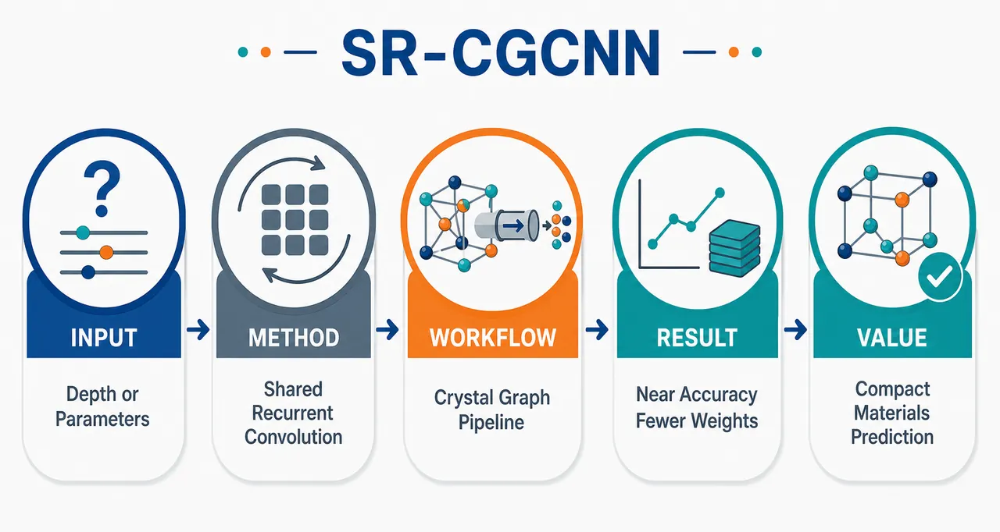
研究问题传统 CGCNN 通过堆叠多层独立晶体图卷积扩大消息传递范围，但深度增加同时带来参数量增加；论文要回答的核心问题是：材料性质预测中，CGCNN 的深度收益究竟来自更远的原子邻域传播，还是来自更多独立卷积参数？同一个局部晶体图更新规则反复应用，能否在少量参数下接近三层 CGCNN 的预测精度？创新方法提出 SR-CGCNN：把标准 CGCNN 中三套独立卷积块替换为一个共享晶体图卷积块的循环复用。视觉上可表现为：传统 CGCNN 是三层不同颜色的卷积模块串联，SR-CGCNN 则是同一个卷积模块带回环箭头重复运行 3 次。Aha 点在于解耦“消息传递深度”和“卷积参数量”：传播步数增加，但主卷积权重不再线性增加，仅保留 step-specific normalization 稳定训练。工作流程输入晶体结构 CIF/Materials Project 结构 → 用 pymatgen 构建晶体图：原子作为节点、近邻键作为边、原子特征作为节点向量、原子间距离经 Gaussian 展开作为边特征 → 原子特征嵌入隐藏空间 → 同一个共享 CGConv 块循环执行 T 次消息传递，反复聚合邻居原子与键距离信息 → 所有原子嵌入平均池化成晶体级表示 → MLP 预测形成能或带隙 → 用 MAE 评估预测误差，并统计总参数与卷积参数。关键结果在 Materials Project 两个 10,000 晶体结构任务上，SR-CGCNN-3 用接近三层 CGCNN 的精度实现大幅参数压缩。形成能预测中，CGCNN-3 测试 MAE 为 0.0945 eV atom⁻¹，SR-CGCNN-3 为 0.0986 eV atom⁻¹；带隙预测中，CGCNN-3 为 0.4346 eV，SR-CGCNN-3 为 0.4503 eV。SR-CGCNN-3 卷积参数仅 22,912，是 CGCNN-3 的 34.5%，总参数从 80,833 降至 37,313。SR-CGCNN-3 明显优于 CGCNN-1，说明收益来自重复消息传递而非单步小模型；SR-CGCNN-5 反而弱于 3 步，提示过深循环可能饱和或过平滑。应用价值该研究提供了一种紧凑、参数高效、物理直观的晶体图神经网络替代方案，适合中等规模材料数据集中的形成能、带隙等性质预测。它能在保持多步原子邻域传播能力的同时显著减少模型参数，降低过拟合风险与计算存储成本，并为材料建模中区分“结构传播范围”和“模型容量”提供清晰实验框架。第一部分：核心概览
SR-CGCNN 将 CGCNN 的多层独立卷积改为同一晶体图卷积块的循环复用，在不改变图构建、池化和预测头的前提下，解耦消息传递深度与卷积参数量。在 Materials Project 的 10,000 结构形成能与带隙任务上，SR-CGCNN-3 以 34.5% 卷积参数接近 CGCNN-3 精度，形成能 MAE 从 0.0945 增至 0.0986 eV atom⁻¹，带隙 MAE 从 0.4346 增至 0.4503 eV，定位为一种参数高效、物理直观的 CGCNN 深度替代方案。
---
第二部分：结构化快速回顾
《SR-CGCNN: Shared Recurrent Convolution in Crystal Graph Neural Networks for Materials Property Prediction》（None，）
背景
晶体图神经网络通过原子节点、键边与局部环境消息传递预测材料性质。传统 CGCNN 通过堆叠多个独立卷积层扩大结构感受野，但同时增加独立参数量，使“更深带来的收益”难以区分来自更大传播范围还是更多参数。
方法
SR-CGCNN 使用一个共享的晶体图卷积块，在多个 recurrent message-passing steps 中重复应用。图构建、原子特征、Gaussian 距离展开、平均池化和 MLP 预测头保持不变。核心比较为 CGCNN-3 与 SR-CGCNN-3：二者均执行 3 次消息传递，但前者使用 3 套卷积参数，后者共享主卷积权重，仅保留 step-specific normalization。
结果
形成能任务中，CGCNN-3 测试 MAE 为 0.0945 eV atom⁻¹，SR-CGCNN-3 为 0.0986 eV atom⁻¹。带隙任务中，CGCNN-3 为 0.4346 eV，SR-CGCNN-3 为 0.4503 eV。SR-CGCNN-3 卷积参数为 22,912，仅为 CGCNN-3 的 34.5%；总参数从 80,833 降至 37,313。
讨论
SR-CGCNN-3 明显优于 CGCNN-1，说明性能提升来自重复消息传递而非单纯小模型重参数化。SR-CGCNN-5 在两项任务上均弱于 SR-CGCNN-3，提示超过 3 步的 recurrent depth 可能出现收益饱和、oversmoothing 或优化困难。
局限
实验只覆盖两个 Materials Project 派生任务、固定 10,000 结构样本、少数深度设置。未进行广泛 depth sweep、跨材料族迁移、其他性质预测、统计显著性检验或与 SchNet、MEGNet、ALIGNN 等强基线的系统对比。
结论
共享循环卷积可在显著减少卷积参数的同时保留 CGCNN 深度的大部分性能收益。对于中等规模材料数据集，SR-CGCNN 提供了一种简单、紧凑、可解释的晶体图消息传递架构。
---
第三部分：逐章节冷凝解析
Abstract
- Core research question
研究核心是检验 CGCNN 深度收益是否必须依赖多套独立卷积参数，还是可由同一局部更新规则重复应用获得。关键问题被明确表述为 *"can repeated application of the same learned local update recover most of the benefit of a deeper CGCNN?"* 这一问题将 message-passing depth 与 parameter count 的耦合拆开，直接针对传统堆叠式 CGCNN 的参数效率瓶颈。
- Shared-recurrent CGCNN design
SR-CGCNN 的关键机制是跨 recurrent steps 绑定主卷积权重：*"the main crystal-graph convolutional weights are tied across recurrent message-passing steps."* 图构建、池化和预测头保持不变：*"The graph construction, pooling operation, and prediction head are kept unchanged"*，从而形成对标准 CGCNN 的受控比较。
- Main quantitative finding
三步 SR-CGCNN 以较少参数接近三层 CGCNN：*"a three-step SR-CGCNN approaches the accuracy of a standard three-layer CGCNN while using only 34.5% of its trainable convolutional parameters."* 形成能测试 MAE 从 0.0945 变为 0.0986 eV atom⁻¹，带隙测试 MAE 从 0.4346 变为 0.4503 eV。
- Academic positioning
结果支持 repeated shared message passing 作为堆叠 CGCNN 深度的参数高效近似：*"repeated shared message passing can provide a parameter-efficient approximation to stacked CGCNN depth"*。学术贡献并非发明 recurrent GNN，而是将其精确嵌入 CGCNN crystal graph convolution 并进行参数效率比较。
---
I Introduction
- Crystal graph representation
晶体结构天然适合图表示：*"Crystal structures are naturally represented as graphs: atoms define the nodes, and interatomic neighbor relations define the edges."* 原子为节点、近邻关系为边，使 GNN 能从原子几何中学习 structure–property relationships。
- CGCNN baseline significance
CGCNN 将晶体编码为带原子特征和键距离特征的图，并通过重复卷积传播局部环境信息。其地位在于证明无需人工描述符也能学习有用材料表征：*"CGCNN established a simple and influential baseline for crystal-property learning because it showed that useful materials representations can be learned directly from structure without hand-crafted descriptors."*
- Depth as physical length scale
图神经网络深度在材料中具有直接物理含义：*"the depth of a graph neural network has a direct interpretation in terms of the spatial extent over which local chemical and structural information is propagated."* 单步消息传递主要整合近邻配位环境，多步传播允许更远配位壳层影响最终晶体表征。
- Properties requiring medium-range information
形成能和带隙依赖局部组成以外的信息，包括 bonding topology、coordination geometry 和 medium-range structural connectivity。原文强调：*"formation energy and band gap... depend not only on local composition but also on bonding topology, coordination geometry, and medium-range structural connectivity."*
- Entanglement of depth and parameters
传统堆叠 CGCNN 中，传播深度和独立可训练变换数量同时增加：*"the spatial propagation depth and the number of independent trainable transformations increase together."* 这种耦合导致无法判断性能改善来自更大结构感受野，还是来自更多参数。
- Motivation for compact models
材料信息学常面临中等规模数据集，紧凑模型有助于跨化学空间稳健比较：*"many target properties are available only for moderate-sized datasets and where compact models are desirable for robust comparison across chemistries."* 因此参数效率不是工程细节，而是材料建模中的核心问题。
- Relation to more expressive atomistic GNNs
SchNet、MEGNet、ALIGNN 分别通过连续滤波、全局状态变量、角度信息增强表达能力。具体而言，SchNet *"introduced continuous-filter convolutions"*，MEGNet *"incorporated global state variables"*，ALIGNN *"incorporated angular information by coupling the bond graph to its line graph."* SR-CGCNN 的关注点不同：不是增加局部描述符复杂性，而是评估重复消息传递本身的价值。
- Physical analogy of recurrent update
共享 recurrent 图卷积与材料模拟中的迭代局部更新具有类比关系，如 SCF、结构弛豫、局域场修正、charge equilibration。原文谨慎限定：*"A graph-neural-network update is not physically equivalent to any of these operations"*，但 *"analogous in spirit to these iterative procedures."*
- Prior recurrent GNN context
recurrent 和 weight-tied GNN 并非新概念：*"recurrent and weight-tied graph neural networks are not new ideas in graph machine learning."* 创新点被限定为：*"not a recurrent GNN in general; rather, it is a recurrent CGCNN for crystal graphs together with a controlled parameter-efficiency comparison against the standard stacked CGCNN architecture."*
- Main experimental setup
比较四个模型：CGCNN-1、CGCNN-3、SR-CGCNN-3、SR-CGCNN-5，任务为 Materials Project 数据上的形成能和带隙预测。核心假设是：*"whether shared recurrent convolution can retain most of the accuracy of the standard three-layer CGCNN while using substantially fewer independent convolutional parameters."*
---
II Standard Crystal Graph Convolution
- Graph definition
晶体图定义为 (G=(V,E))，其中 (V) 为原子集合，(E) 为近邻连接集合。原文：*"where (V) is the set of atoms and (E) is the set of neighbor connections."*
- Node and edge features
每个原子 (i) 携带初始特征向量 (bmvᵢ)，每个邻接原子对 ((i,j)) 携带边特征 (bmuᵢⱼ)。键特征通常来自距离 Gaussian 展开：*"typically obtained by expanding the interatomic distance in a Gaussian basis."*
- Initial embedding
原始原子特征被映射到隐藏空间：
[
bmhᵢ⁽⁰⁾=Wₑₘbbmvᵢ+bmbₑₘb.
]
该步骤为后续 crystal graph convolution 提供统一维度的 atomic embeddings。
- Concatenated message input
卷积更新将中心原子、邻居原子和键特征拼接：
[
bmzᵢⱼ⁽t⁾=bmhᵢ⁽t⁾øplusbmhⱼ⁽t⁾øplusbmuᵢⱼ.
]
原文说明 (øplus) 为拼接：*"where (øplus) denotes concatenation."*
- Gated transformation
消息计算使用 sigmoid 门控与非线性通道逐元素相乘：
[
bmmᵢⱼ⁽t⁾=
σ(W_fbmzᵢⱼ⁽t⁾+bmb_f)
ødot
g(Wₛbmzᵢⱼ⁽t⁾+bmbₛ₎.
]
其中 (σ) 是 sigmoid gate，(g) 是 Softplus 等非线性函数，(ødot) 是逐元素乘法。原文：*"where (σ) is a sigmoid gate, (g) is a nonlinear activation function such as Softplus."*
- Neighbor aggregation
邻居消息通过求和聚合：
[
bmmᵢ⁽t⁾=sumⱼᵢₙN₍ᵢ₎bmmᵢⱼ⁽t⁾.
]
该操作使每个原子嵌入整合其近邻环境。
- Residual-like update
原子嵌入更新为：
[
bmhᵢ⁽t⁺¹⁾=g(bmhᵢ⁽t⁾+bmmᵢ⁽t⁾).
]
原文称其为 *"a residual-like transformation"*，说明 CGCNN 卷积内部已包含近似残差机制。
- Crystal pooling and prediction
(L) 层卷积后，所有原子嵌入平均池化：
[
bmhcᵣyₛ=frac1Nsumᵢ₌₁Nbmhᵢ⁽L⁾.
]
随后通过 MLP 预测：
[
haty=fMLP(bmhcᵣyₛ).
]
原文：*"The pooled representation is passed through fully connected layers to predict the target property."*
---
III Shared Recurrent Crystal Graph Convolution
- Modification scope
SR-CGCNN 只改变卷积部分：*"The proposed modification concerns only the convolutional part of the model."* 图构建、原子特征、Gaussian 距离展开、池化和预测头完全不变：*"The graph construction, atom features, Gaussian distance expansion, pooling, and final prediction head are kept unchanged."*
- Standard stacked CGCNN formulation
标准 CGCNN 使用 (L) 个独立卷积块：
[
bmh⁽t⁺¹⁾=Convθ_ₜ(bmh⁽t⁾,E),quad t=0,łdots,L-1.
]
每层 (θₜ) 独立，深度增加时参数集同步增加。
- Shared recurrent formulation
SR-CGCNN 使用单个共享卷积块：
[
bmh⁽t⁺¹⁾=Convθ(bmh⁽t⁾,E),quad t=0,łdots,T-1.
]
其中 (T) 是 recurrent applications 数量。原文：*"Here, (T) is the number of recurrent applications."*
- Direct three-step comparison
标准 CGCNN-3 为：
[
bmh⁽³⁾CGCNN₋₃=
Convθ_₃i̧rcConvθ_₂i̧rcConvθ_₁(bmh⁽⁰⁾).
]
SR-CGCNN-3 为：
[
bmh⁽³⁾SR₋CGCNN₋₃=
Convθi̧rcConvθi̧rcConvθ(bmh⁽⁰⁾).
]
原文强调：*"For the most direct comparison to the standard three-layer CGCNN, we choose (T=3)."*
- Decoupling depth from independent parameters
recurrent 机制的核心在于：*"increasing (T) increases the effective message-passing depth without increasing the number of independent convolutional parameter sets."* 因此模型可扩大有效传播范围而不线性增加主卷积参数。
- Atomic recurrent update
最简单的 recurrent 更新为：
[
bmhᵢ⁽t⁺¹⁾=
CGConvθ
łeft(
bmhᵢ⁽t⁾,
bmhⱼ⁽t⁾,bmuᵢⱼⱼᵢₙN₍ᵢ₎
i̊ght).
]
这将同一 CGConv 局部更新规则应用于多个传播步。
- No additional outer residual in minimal model
由于原始 CGCNN 卷积已有内部 residual-like update，最小模型不额外加入外部残差：*"Since the original CGCNN convolution already contains an internal residual-like update, we do not introduce an additional outer residual connection in the minimal model."* 该设计保持与标准 CGCNN 的干净比较。
- Backpropagation through unrolled recurrent steps
尽管只有一个参数集 (θ)，训练时仍通过 (T) 个展开步骤反向传播。梯度表达式为：
[
fracpartialLpartialθ
=
sumₜ₌₀T⁻¹
fracpartialLpartialbmh⁽T⁾
łeft(
prodₛ₌ₜ₊₁T⁻¹
fracpartialbmh⁽s⁺¹⁾partialbmh⁽s⁾
i̊ght)
fracpartialbmh⁽t⁺¹⁾partialθ.
]
原文解释：*"weight sharing reduces the number of independent trainable parameters, but it does not remove the intermediate gradient paths associated with the repeated message-passing steps."*
- Gradient stability concern
与 recurrent architectures 类似，过大的 (T) 可能引起梯度衰减或放大：*"very large (T) could in principle lead to attenuated or amplified gradients."* 主实验使用温和深度 (T=3)，并依赖 CGCNN 更新和 step-specific normalization 稳定训练。
- Optional damped recurrent update
可选阻尼更新为：
[
bmhᵢ⁽t⁺¹⁾=(1-αₜ₎bmhᵢ⁽t⁾+αₜtildebmhᵢ⁽t⁺¹⁾.
]
其中 (αₜ) 可固定或学习。原文明确：*"this damped version should be treated as a secondary stabilization variant, not as the primary baseline."*
- Figure 1 architecture distinction
图 1 对比标准三层 CGCNN 与 SR-CGCNN：标准模型使用 (θ₁,θ₂,θ₃) 三套参数，SR-CGCNN 用共享 (θ) 重复三次。原文：*"In SR-CGCNN, the same message-passing transformation with shared weights (θ) is applied recurrently for the same number of propagation steps."*
- Normalization exception
实现细节中，主卷积权重共享，但 normalization 参数 step-specific：*"the main convolutional weights are shared across recurrent steps, while normalization parameters are allowed to be step-specific."* 这对最终性能非常关键。
---
IV Methodology
IV.1 Model Variants
- Four benchmark variants
四种模型分别为 CGCNN-1、CGCNN-3、SR-CGCNN-3、SR-CGCNN-5。表 1 给出结构：CGCNN-1 为 1 block / 1 step / no sharing；CGCNN-3 为 3 blocks / 3 steps / no sharing；SR-CGCNN-3 为 1 block / 3 steps / shared weights；SR-CGCNN-5 为 1 block / 5 steps / shared weights。
- Central comparison
核心对比是 CGCNN-3 与 SR-CGCNN-3：*"Both models perform three message-passing operations, but CGCNN-3 uses three independent convolutional parameter sets, whereas SR-CGCNN-3 uses only one shared convolutional parameter set."* 这保证二者传播深度一致，仅独立参数数量不同。
- Role of SR-CGCNN-5
SR-CGCNN-5 用于测试超过三步后是否有额外收益或饱和：*"tests whether increasing recurrent depth beyond the standard three steps leads to additional performance gains or saturation."*
- Role of CGCNN-1
CGCNN-1 用作浅层基线，验证 recurrent steps 是否真正有用：*"A shallow CGCNN-1 baseline is included to verify that the recurrent applications are genuinely useful and that the recurrent model is not merely behaving like a one-step graph convolution."*
---
IV.2 Dataset
- Materials Project-derived datasets
两个任务数据均来自 Materials Project，并用 pymatgen 处理：*"Crystal structures and target properties were retrieved from Materials Project and processed using pymatgen library."* 任务分别为形成能预测和带隙预测。
- Sample size
两个 benchmark 各使用 10,000 unique crystal structures。原文特别限定：*"The datasets should be regarded as fixed task-specific samples from Materials Project rather than statistically random samples of the full database."* 因此结论适用于固定抽样任务，不等价于完整 MP 数据库总体统计。
- Formation-energy distribution
形成能目标均值为 −0.531 eV atom⁻¹，样本标准差为 1.030 eV atom⁻¹，范围为 [−4.508, 8.993] eV atom⁻¹。原文：*"The formation-energy targets have a mean value of (-0.531~mathrmeV,atom⁻¹), a sample standard deviation of (1.030~mathrmeV,atom⁻¹), and span the interval ([-4.508,,8.993]~mathrmeV,atom⁻¹)."*
- Band-gap distribution
带隙目标均值为 2.597 eV，样本标准差为 1.628 eV，范围为 [0.102, 17.638] eV。原文：*"The band-gap targets have a mean value of (2.597~eV), a sample standard deviation of (1.628~eV), and span the interval ([0.102,,17.638]~eV)."*
- Task complementarity
形成能是热力学性质，受组成、成键和结构稳定性影响；带隙是电子性质，对化学身份、轨道杂化和晶体连通性敏感。原文：*"Formation energy is a thermodynamic quantity..."*，而 *"the band gap is an electronic property..."*
- Common graph construction
所有模型使用相同图构建：原子为节点、近邻原子对为边、距离 Gaussian 展开。原文：*"The same graph construction was used for all model variants."* CIF 输入由 Materials Project 结构经 pymatgen 生成。
- Controlled split protocol
形成能与带隙任务使用相同 train/validation/test split fractions，使性能差异主要来自架构而非数据处理。原文：*"so that differences in performance arise from the model architecture rather than from changes in data processing."*
---
IV.3 Training Protocol
- Identical model training conditions
每个目标性质上，四个模型使用相同训练、验证、测试划分：*"the following models were trained using identical training, validation, and test splits."* 这减少了数据划分对结果的干扰。
- Controlled hyperparameters
四个模型使用相同 optimizer、learning rate、batch size、atom feature dimension、hidden feature dimension 和 split。原文：*"The same optimizer, learning rate, batch size, atom feature dimension, hidden feature dimension, and data split were used for all models."*
- Causal interpretation of differences
训练协议控制变量后，性能差异主要可归因于卷积结构：*"This ensures that the observed differences originate primarily from the convolutional architecture."*
---
IV.4 Evaluation Metrics
- Primary metric
两个任务都是标量回归，主要指标为 mean absolute error, MAE。形成能单位为 eV atom⁻¹，带隙单位为 eV。原文：*"the primary accuracy metric is the mean absolute error (MAE), reported in the natural units of each target property."*
- MAE definition
[
MAE=frac1Nsumₙ₌₁N|yₙ₋hatyₙ|.
]
MAE 的优势是物理单位可解释：*"it gives a directly interpretable average prediction error in physically meaningful units."*
- Validation and test usage
validation MAE 用于训练监控和候选架构比较，test MAE 用于最终 benchmark：*"Validation MAE is used to monitor model quality during training... whereas test MAE is used for the final benchmark comparison."*
- Accuracy–parameter trade-off
评估不仅看误差，还看总参数和卷积参数：*"Each model is therefore evaluated using four quantities: validation MAE, test MAE, the total number of trainable parameters, and the number of trainable convolutional parameters."* 核心是 accuracy–parameter trade-off，尤其是 CGCNN-3 与 SR-CGCNN-3。
---
V Results and Discussion
- Figure 2 principal comparison
图 2 展示 CGCNN-3 与 SR-CGCNN-3 的测试集 parity plots，分别对应形成能和带隙。虚线表示理想预测：*"The dashed line denotes ideal agreement between reference and predicted values."* SR-CGCNN-3 在两个目标上均接近 CGCNN-3 趋势，同时卷积参数从 66,432 降至 22,912。
---
V.1 Formation-Energy Benchmark
- Training settings
形成能任务所有模型训练 300 epochs，使用 Adam optimizer，learning rate 0.001，batch size 256，数据划分 60% training / 20% validation / 20% testing。原文：*"trained for 300 epochs using the Adam optimizer, a learning rate of 0.001, and a batch size of 256. The data split was 60% for training, 20% for validation, and 20% for testing."*
- Full formation-energy table
形成能结果如下：CGCNN-1 卷积参数 22,144、总参数 36,545、val MAE 0.1335、test MAE 0.1208；CGCNN-3 卷积参数 66,432、总参数 80,833、val MAE 0.1016、test MAE 0.0945；SR-CGCNN-3 卷积参数 22,912、总参数 37,313、val MAE 0.1055、test MAE 0.0986；SR-CGCNN-5 卷积参数 23,680、总参数 38,081、val MAE 0.1120、test MAE 0.1031。
- CGCNN-3 best absolute accuracy
标准三层 CGCNN 形成能测试 MAE 最低，为 0.0945。原文：*"The standard three-layer CGCNN gives the lowest test MAE, 0.0945."*
- SR-CGCNN-3 parameter efficiency
SR-CGCNN-3 测试 MAE 为 0.0986，卷积参数 22,912，仅为 CGCNN-3 的 34.5%，对应 65.5% reduction。原文：*"This is 34.5% of the convolutional parameter count of CGCNN-3, corresponding to a 65.5% reduction in convolutional parameters."*
- Total parameter reduction
总参数从 80,833 降至 37,313，低于一半。原文：*"The total trainable parameter count is also reduced from 80,833 to 37,313."*
- CGCNN-1 confirms depth benefit
CGCNN-1 测试 MAE 为 0.1208，明显劣于 CGCNN-3 和 SR-CGCNN-3。原文：*"This confirms that the recurrent applications are not merely reproducing a one-step convolution."* SR-CGCNN-3 相对 CGCNN-1 测试 MAE 降低约 18.4%。
- SR-CGCNN-5 saturation
SR-CGCNN-5 测试 MAE 为 0.1031，没有优于三步 recurrent 模型。原文：*"increasing recurrent depth beyond three steps does not automatically improve accuracy."* 可能原因包括有用消息传递深度饱和或更深 recurrent updates 出现 oversmoothing。
---
V.2 Band-Gap Benchmark
- Training settings
带隙任务与形成能任务训练协议相同：300 epochs、Adam、learning rate 0.001、batch size 256、60/20/20 split。原文：*"The training protocol was kept identical to the formation-energy benchmark."*
- Full band-gap table
带隙结果如下：CGCNN-1 卷积参数 22,144、总参数 36,545、val MAE 0.4895、test MAE 0.5065；CGCNN-3 卷积参数 66,432、总参数 80,833、val MAE 0.4335、test MAE 0.4346；SR-CGCNN-3 卷积参数 22,912、总参数 37,313、val MAE 0.4373、test MAE 0.4503；SR-CGCNN-5 卷积参数 23,680、总参数 38,081、val MAE 0.4444、test MAE 0.4635。
- CGCNN-3 best band-gap accuracy
CGCNN-3 带隙测试 MAE 最低，为 0.4346。原文：*"The standard three-layer CGCNN again gives the lowest test
-
09
📊 含图深析
💡 亮点：物理约束学习用于可回收 Q&P 钢设计。
📖 展开分析 + 配图
 研究问题如何在 Q&P 钢设计中同时满足高力学性能与可回收/循环利用要求，避免传统合金设计只追求强塑性而忽视成分复杂度和可持续性的矛盾。创新方法提出物理知情机器学习筛选框架，把合金成分、热处理/工艺参数、目标性能和可回收性约束放入同一个设计空间；Aha 点是让机器学习不仅预测性能，还受冶金物理规律与循环利用条件共同约束，寻找“统一”的可回收 Q&P 钢候选方案。工作流程输入钢的化学成分范围、Q&P 热处理工艺参数、力学性能目标和可持续性/可回收约束；通过物理知情机器学习模型建立成分—工艺—组织/性能关系；在多重约束下筛选候选合金；输出兼顾循环利用和力学性能的统一 Q&P 钢设计方案。关键结果研究表明该框架可用于筛选同时满足可回收性与力学性能要求的 Q&P 钢候选材料，为可持续钢种设计提供数据驱动方案；摘要未给出具体最优成分、工艺窗口、性能数值或实验验证结果。应用价值可用于汽车钢等先进高强钢的绿色合金开发，减少对复杂或难回收合金元素的依赖，加速从成分设计到工艺优化的材料研发流程，支撑面向循环经济的可持续钢铁生产。
研究问题如何在 Q&P 钢设计中同时满足高力学性能与可回收/循环利用要求，避免传统合金设计只追求强塑性而忽视成分复杂度和可持续性的矛盾。创新方法提出物理知情机器学习筛选框架，把合金成分、热处理/工艺参数、目标性能和可回收性约束放入同一个设计空间；Aha 点是让机器学习不仅预测性能，还受冶金物理规律与循环利用条件共同约束，寻找“统一”的可回收 Q&P 钢候选方案。工作流程输入钢的化学成分范围、Q&P 热处理工艺参数、力学性能目标和可持续性/可回收约束；通过物理知情机器学习模型建立成分—工艺—组织/性能关系；在多重约束下筛选候选合金；输出兼顾循环利用和力学性能的统一 Q&P 钢设计方案。关键结果研究表明该框架可用于筛选同时满足可回收性与力学性能要求的 Q&P 钢候选材料，为可持续钢种设计提供数据驱动方案；摘要未给出具体最优成分、工艺窗口、性能数值或实验验证结果。应用价值可用于汽车钢等先进高强钢的绿色合金开发，减少对复杂或难回收合金元素的依赖，加速从成分设计到工艺优化的材料研发流程，支撑面向循环经济的可持续钢铁生产。核心概览
该论文属于材料信息学/可持续合金设计方向，利用物理知情机器学习结合成分、工艺与性能约束，筛选兼具可回收性与力学性能的统一 Q&P 钢设计方案。
方法要点
- 采用物理知情机器学习方法辅助 Q&P 钢合金设计。
- 将钢的化学成分、热处理/工艺参数与目标性能约束共同纳入筛选框架。
- 以可持续性或循环利用需求作为合金设计的重要约束之一。
- 面向“统一”Q&P 钢方案进行候选材料筛选；“统一”的具体定义摘要未详述。
关键结果
- 摘要明确表明，该方法用于筛选同时兼顾循环利用和力学性能的 Q&P 钢方案。
- 论文目标是推动可回收 Q&P 钢的可持续合金设计。
- 具体筛选出的成分、工艺窗口、性能指标或实验验证结果摘要未详述。
创新性判断
- 可能的新颖点在于将物理知情机器学习与可回收性约束结合，用于 Q&P 钢的合金设计，而不仅仅优化传统力学性能；这一判断基于摘要，仍存在不确定性。
- 另一个潜在创新是同时整合成分、工艺和性能约束，形成面向可持续钢种设计的统一筛选框架；但框架细节和相对已有工作的差异摘要未详述。
- “可回收统一 Q&P 钢”的概念可能是论文的应用创新点，但其具体内涵、评价标准和验证方式摘要未详述。
-
10
📊 含图深析
💡 亮点：PINN 可为非梯度动力学学习全局势景。
📖 展开分析 + 配图
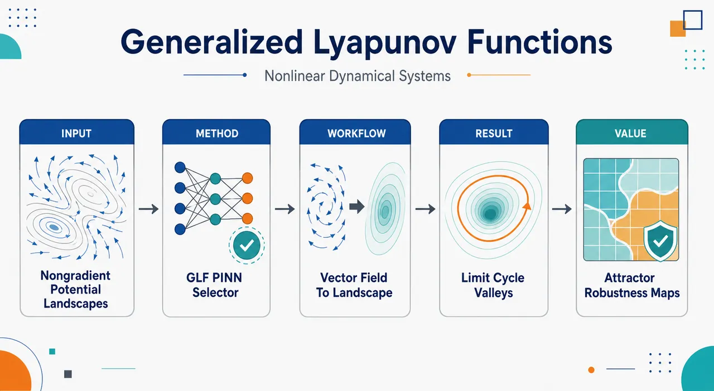
研究问题如何为含旋转流、耗散-保守混合、极限环、多不变集和拓扑链接周期轨道的非梯度非线性动力系统，构造一个全局可计算的标量势景观，使轨道呈现“下坡或沿等势线运动”，并让复发结构显示为低势谷、等势环或管状低势区域。创新方法提出广义 Lyapunov 函数（GLF）：只保留沿流非增条件 ∇φ·f≤0，放弃传统正定性和点吸引子限制；用数据无关 PINN 表示标量场 φΘ(x)，在相空间采样点中直接嵌入 Lyapunov 不等式、原点锚定和弱散度尺度兼容项。Aha 点是：不拟合 f≈−∇φ，而是允许向量场沿等势面旋转，从而保留非梯度系统的周期运动；弱散度项像“规范选择器”，排除常数解并从大量 GLF 中挑出平滑、有物理意义的势景观。工作流程输入已知自治向量场 f(x) 和相空间采样点；神经网络输出标量势 φΘ(x)；自动微分计算 ∇φΘ、∇²φΘ 与 ∇·f；用 ReLU 惩罚沿流上升区域 ∇φΘ·f/|f|>0；用 φΘ(0)=0 固定势函数平移自由度；用归一化散度兼容项约束 ∇²φΘ+∇·f 的尺度；加权最小化总损失；输出可视化势景观、等势线/等势面、低势环带或低势管道，并用 ∇φ·f 图验证复发集上近零、外部为负。关键结果在线性稳定/不稳定焦点中，学习势分别恢复正二次碗形和负二次碗形，与解析势均方距离小于 1%；在 Hopf 标准形中无监督恢复 Mexican-hat 势，单位稳定极限环成为低势环带，∇φ·f 在极限环和不稳定固定点附近近零、其他区域为负；在 μ=1.5 的 van der Pol 振子中，非圆稳定极限环被包裹在低势谷和 φ−minφ=0.001 等势轮廓内；在三维 Hopf-link 流中，两个相互链接的稳定极限环被识别为低势结构，φ−minφ=0.02 等势面形成环绕它们的管状邻域。应用价值为非平衡、非梯度复杂系统提供一种可计算的势景观语言，可用于吸引子可视化、鲁棒性诊断、吸引盆组织分析和不变集识别；特别适合传统势能直觉失效的周期轨道、多个复发集和三维拓扑复杂流，也可扩展到基因调控网络、神经群体动力学、生态演化和其他非平衡网络中的稳定态与跃迁结构解释。第一部分：核心概览 (Overview)
提出广义 Lyapunov 函数（GLF）作为非梯度非线性动力系统的统一势景观概念，并用数据无关 PINN在相空间采样点上直接嵌入Lyapunov 不等式与弱散度尺度兼容条件。贡献在于把普通 Lyapunov 函数、Freidlin–Wentzell 准势、Ao 型势与 Conley 全局分解联系起来，并展示其可处理极限环、非圆周期轨道、三维 Hopf 链等复发结构，推动非平衡势景观从解析特例走向可计算构造。
---
第二部分：结构化快速回顾
《Universal Construction of Generalized Lyapunov Functions for Nonlinear Dynamical Systems Using Physics-Informed Neural Networks》（None，）
背景
非线性动力系统常需用标量势景观解释稳定性、吸引子鲁棒性与相空间组织；但大多数物理、生物系统含有旋转流、耗散-保守混合、极限环、多不变集，并非梯度系统，传统 Helmholtz 势或普通 Lyapunov 构造难以全局适用。
方法
定义只要求沿确定性轨道非增的广义 Lyapunov 函数：(dotφ=nablaφḑot fłe0)。用神经网络 (φ_Θ(x)) 表示标量场，通过自动微分计算梯度和 Laplacian，并最小化三项损失：Lyapunov 违反惩罚、原点锚定项、弱散度尺度兼容项。
结果
在二维稳定/不稳定焦点中，学习势与解析势的均方距离均小于 1%；在 Hopf 标准形中恢复 Mexican-hat 势；在 (μ=1.5) 的 van der Pol 振子中生成包围非圆稳定极限环的低势谷；在三维 Hopf-link 流中识别两个相互链接的稳定极限环及其管状低势结构。
讨论
GLF 把普通 Lyapunov 函数、Freidlin–Wentzell 准势、Ao 分解势与 Conley 完全 Lyapunov 函数图景统一为同一类沿流非增标量函数。PINN 框架避免轨迹监督数据，直接利用已知向量场约束势函数。
局限
GLF 高度非唯一；弱散度尺度项为何能稳定选出光滑且动力学有意义的代表仍缺乏严格理论。混沌吸引子、高维系统与维数灾难尚未解决。
结论
GLF-PINN 框架为非梯度非线性系统提供了可计算势景观语言，适合用于吸引子可视化、鲁棒性诊断和盆结构分析，尤其适用于传统势函数直觉失效的周期轨道与拓扑复杂系统。
---
第三部分：逐章节冷凝解析 (Section-by-Section Condensing)
Abstract
Scalar landscapes motivate stability analysis
标量势景观被定位为理解动力系统稳定性与跃迁的核心工具，尤其用于把复杂向量场压缩为可解释的标量结构。摘要开端直接指出：*"A scalar potential landscape is one of the most useful ways to understand the stability and transition of a dynamical system."* 这一定位强调势景观不仅是可视化工具，也是稳定性、吸引盆和跃迁路径分析的数学语言。
Non-gradient recurrent dynamics remain difficult
核心困难来自非梯度动力学，尤其含有复发结构的非线性流。摘要明确指出：*"For non-gradient dynamics, however, the construction of a global Lyapunov-type scalar for nonlinear flows with recurrent structures remains a major obstacle."* 这里的 recurrent structures 包括极限环、链复发集、多不变集等，使传统“势能单调下降到平衡点”的图像失效。
Generalized Lyapunov function defines a unifying nonequilibrium potential
广义 Lyapunov 函数（GLF）定义为沿确定性轨道非增的标量函数，即 (nablaφḑot fłe0)。摘要将其称为统一非平衡势的概念：*"We introduce the generalized Lyapunov function, a scalar function that is non-increasing along deterministic trajectories, as a unifying notion of nonequilibrium potential."* 关键在于保留 Lyapunov 单调性，而放弃正定性、唯一归一化、预设吸引子等限制。
Existing potential notions become special representatives
普通 Lyapunov 函数、Freidlin–Wentzell quasi-potentials 和 Ao-type potentials 被纳入 GLF 框架：*"Ordinary Lyapunov functions, Freidlin–Wentzell quasi-potentials, and Ao-type potentials are recovered as special representatives."* 这使 GLF 不是另一个孤立定义，而是对已有非平衡势理论的上位抽象。
Data-free PINN embeds physical inequalities into the loss
计算方法是数据无关 PINN，不依赖轨迹数据或势函数标签，而直接在损失中加入动力学约束：*"We then propose a data-free physics-informed neural-network framework in which the Lyapunov inequality and a weak divergence-scale compatibility condition are directly embedded into the loss function."* 两个核心约束分别保证沿流非增，以及在 GLF 非唯一族中选择较物理的代表。
Benchmarks cover equilibria, limit cycles, and linked cycles
验证系统覆盖从简单到拓扑复杂的四类案例：*"The method is tested on linear systems, the Hopf normal form, the van der Pol oscillator, and a three-dimensional Hopf-link flow with two linked limit cycles."* 这体现方法目标不是仅处理平衡点，而是处理极限环和链接极限环等非梯度复发结构。
Learned landscapes reveal invariant sets
学习到的景观能让不变集显现为低势或等势结构：*"The learned landscapes agree with available analytical benchmarks and reveal the invariant sets as low-potential or constant-potential structures."* 这给出 GLF 的主要诊断价值：稳定极限环不再是势函数无法表达的对象，而可表现为低势环、低势谷或管状低势邻域。
---
Introduction
Scalar reduction is a central aim in nonlinear dynamics
非线性动力学的重要目标是把复杂向量场转化为能显示吸引、鲁棒性和区域组织的标量景观。开头强调：*"A central goal in the study of nonlinear dynamics is to reduce a complicated vector field to a scalar landscape that displays where trajectories are attracted, how robust an attractor is, and how different dynamical regions are organized."* 这一定义将势景观的功能分成三类：吸引位置、吸引子鲁棒性、动力学区域结构。
Potential landscapes have broad applied relevance
势景观已被用于控制理论、基因调控网络和生态演化等领域。原文列举：*"The concept of a potential landscape... has also been extensively applied in control theory, gene regulatory networks, and ecological evolution."* 这说明研究动机并不限于数学动力系统，而是面向复杂系统中的稳定态、跃迁和调控路径解释。
Most target systems are non-gradient
现实物理和生物系统通常不是梯度系统，包含旋转流、耗散与保守成分、极限环、多不变集。关键句为：*"Unfortunately, most physical and biological systems of current interest are not gradient systems."* 以及 *"They contain rotational currents, dissipative and conservative components, limit cycles, and sometimes several invariant sets."* 这正是普通势能函数难以适用的根源。
Helmholtz scalar potential is generally insufficient
对非梯度系统，Helmholtz scalar potential 通常不能作为合适势景观。原文明确写道：*"In such cases the Helmholtz scalar potential is generally not a proper candidate of potential landscape."* 原因在于 Helmholtz 分解中的标量势不能普遍捕捉非平衡旋转流、极限环与链复发结构的动力学组织。
Lyapunov functions avoid trajectory solving but are hard to construct
Lyapunov 函数能在不显式求解轨道的情况下证明稳定性。原文表述为：*"Lyapunov functions provide a powerful alternative because they certify stability without solving trajectories explicitly."* 但非线性非梯度系统的构造高度依赖具体问题：*"Yet for nonlinear non-gradient systems their construction is still largely problem dependent."*
Existing theories are important but rarely explicit
Zubov 方程、Freidlin–Wentzell 准势、Ao 分解都提供了理论路径，但解析表达通常局限于特殊情形。原文指出：*"Zubov’s equation gives an important theoretical route to global Lyapunov functions, and the Freidlin–Wentzell quasi-potential and Ao decomposition provide related nonequilibrium potential concepts."* 紧接着强调限制：*"Nevertheless, explicit formulas are rarely available beyond special cases."*
Existing computational methods are mature mainly for simple attractors
已有方法包括sum-of-squares programming、fractional polynomials、radial basis functions 和 neural networks，但成熟度主要集中于平衡点或简单吸引集。原文概括为：*"existing computational methods based on sum-of-squares programming, fractional polynomials, radial basis functions, and neural networks are still most mature for equilibria or relatively simple attracting sets."*
Recurrent structures require a broader global potential
许多非线性系统由固定点、周期轨道、链接环和更复杂复发结构共同组织。原文强调：*"Many nonlinear systems are organized not only by fixed points but also by periodic orbits, linked cycles, and more complicated recurrent structures."* 因而有效的全局势必须能覆盖这些结构，而不能仅描述点吸引子。
Three requirements define a useful global potential
可用全局势景观需满足三项要求：退化为梯度流普通势、包含 Lyapunov 与非平衡准势、在无解析表达时仍可构造。原文给出：*"A useful global potential for such systems should satisfy three requirements: it should reduce to the ordinary scalar potential for gradient flows, include Lyapunov and nonequilibrium quasi-potential constructions as special cases, and remain constructible when analytical expressions are unavailable."*
Conley theorem supplies conceptual but not computational guidance
Conley 基本定理表明，链复发集外单调下降的标量函数是自然全局对象。原文写道：*"The Conley fundamental theorem suggests that a scalar function decreasing outside the chain recurrent set is a natural global object."* 但该定理主要是存在性结果：*"the theorem is mainly existential and does not by itself yield a computable smooth landscape."*
GLF-PINN addresses the computability gap
研究空白通过 GLF 与 PINN 构造共同填补。原文直接说明：*"In this work we address this gap by introducing the generalized Lyapunov function (GLF) as a broad candidate for a nonequilibrium potential and by developing a universal construction based on the physics-informed neural-network (PINN)."* “gap” 指理论存在性与可计算光滑势景观之间的断裂。
Two physics constraints structure the neural scalar field
PINN 训练的核心是两个物理约束：Lyapunov 不等式与弱散度尺度兼容条件。原文表述为：*"The core idea is to train a neural scalar field under two physics-based constraints: a Lyapunov inequality that enforces non-increase along the flow, and a weak divergence-scale compatibility condition that selects a physically meaningful representative from the highly nonunique family of admissible GLFs."*
The framework is data-free and gradient-agnostic
方法不需要轨迹数据，不假设向量场接近梯度场。原文强调：*"This framework is data-free, uses automatic differentiation to evaluate the required derivatives, and applies without assuming that the vector field is close to a gradient field."* 这区分于直接拟合 (fapprox-nablaφ) 的势回归方法。
Examples demonstrate invariant-set visibility
线性系统、Hopf 标准形、van der Pol 振子和三维 Hopf-link 系统共同展示 GLF 能把不变集表现为低势或等势结构。原文结论为：*"These examples demonstrate that GLFs can make invariant sets visible as low-potential or constant-potential structures and can therefore provide a practical landscape language for nonlinear non-gradient dynamics."*
---
Generalized Lyapunov Functions
Autonomous system sets the mathematical domain
研究对象是光滑自治系统：
[
dotx=f(x),qquad xinRⁿ.
]
原文给出：*"Consider an autonomous dynamical system (dotx=f(x)), where (xinRⁿ) and (f) is a smooth vector field."* 这意味着所有约束均由确定性向量场 (f) 决定。
Classical positive definiteness is deliberately removed
传统 Lyapunov 函数常要求相对于某个稳定不变集正定；GLF 只保留单调性。原文对比为：*"A classical Lyapunov function is usually required to be positive definite with respect to a chosen stable invariant set."* 随后定义策略是：*"For the purpose of constructing a global landscape, we keep only the monotonicity requirement."*
Lyapunov inequality defines the GLF
GLF 满足：
[
dotφ=nablaφḑotf(x)łe0.
]
原文称：*"We call Eq. (2) the Lyapunov inequality."* 这一定义的核心不是最小值位置，而是沿轨道势值不增加。
Trajectories move downhill or along level sets
Lyapunov 不等式的几何含义是轨道只能下坡或沿等势面运动。原文解释：*"It states that trajectories can move only downhill or along level sets of (φ)."* 这里“downhill”对应 (nablaφḑot f<0)，“level sets”对应 (nablaφḑot f=0)。
Equality is expected on invariant or chain recurrent sets
在不变集或链复发集上，势函数应保持常数；耗散区域则应严格下降。原文写道：*"The equality is expected on invariant or chain recurrent sets, whereas the strict inequality should hold away from them for dissipative motion."* 这为极限环的势景观表达提供了理论基础：极限环可对应等势闭曲线，而非单一点极小值。
Conley and Morse-Smale theory provide conceptual backing
Conley 基本定理及 Morse-Smale 特例提供全局下降函数的理论背景。原文指出：*"Conley’s fundamental theorem and its special case of Morse-Smale flow provides the conceptual basis for such a global decreasing function."* 但难点仍在显式构造：*"its explicit smooth representative is rarely known and is difficult to construct for nonlinear non-gradient flows."*
GLF unifies several familiar scalar objects
普通 Lyapunov 函数、Freidlin–Wentzell 准势、Ao 分解势均满足 (nablaφḑot fłe0)。原文明确给出：*"Ordinary Lyapunov functions, Freidlin–Wentzell quasi-potentials, and potentials obtained from the Ao decomposition all satisfy Eq. (2) and are therefore GLFs."*
The definition is intentionally broader than conventional Lyapunov theory
GLF 不要求正定性、预设下界或唯一归一化。原文强调：*"The definition is intentionally broader than the conventional one: it does not require positive definiteness, a prescribed lower bound, or a unique normalization."* 这种宽泛性牺牲唯一性，换来对非平衡和复发动力学的适用性。
GLFs are highly nonunique
若 (φ) 是 GLF，则任何光滑递增函数 (g(φ)) 仍是 GLF。原文说明：*"Consequently GLFs are highly nonunique. If (φ) is a GLF, then (g(φ)) is also a GLF for any smooth increasing function (g)."* 因为 (nabla g(φ)ḑot f=g'(φ)nablaφḑot fłe0)，只要 (g'(φ)>0)。
Gradient-flow potentials are automatically GLFs
纯梯度流的物理势自然满足 GLF 条件。原文指出：*"Moreover, the physical potential of a pure gradient flow is automatically a GLF."* 若 (f=-nabla U)，则 (dot U=nabla Uḑot(-nabla U)=-|nabla U|²łe0)。
Helmholtz scalar potential becomes valid only under suitable decompositions
Helmholtz 标量势在梯度主导或正交分解情形下可成为 GLF。原文表述：*"the Helmholtz scalar potential becomes a GLF for gradient-dominant or orthogonal decompositions."* 这避免把 Helmholtz 势误认为一般非梯度系统的普适势。
A weak selection rule is necessary
Lyapunov 不等式只是最小单调性原则，还需弱选择规则选出有用景观。原文总结：*"These observations motivate using Eq. (2) as the minimal monotonicity principle and adding a weak selection rule to obtain a useful landscape."* 后续的散度尺度兼容项正承担这一“gauge choice”功能。
---
Construction via PINNs
The GLF is represented by a neural scalar field
GLF 用神经网络 (φ_Θ(x)) 表示。原文开头为：*"We represent the GLF by a neural network (φΘ(x))."* 这里网络输入是相空间点，输出是标量势值。
Training is data-free
方法不需要轨迹数据或势函数标签，只需相空间采样点和已知向量场。原文写道：*"The method is data-free in the sense that no trajectory data or prescribed values of the potential are required; the training samples are points in the phase space, and the vector field itself supplies the physical constraints."* 这使方法不同于监督学习势函数回归。
Automatic differentiation avoids finite-difference grid errors
PINN 通过自动微分直接获得 (nablaφ_Θ) 和 (nabla²φ_Θ)。原文说明：*"Automatic differentiation gives (nablaφΘ) and (nabla²φΘ) directly, avoiding finite-difference errors on grids."* 这对高维连续相空间尤其重要，因为网格差分会受离散误差和维数灾难影响。
The Lyapunov loss penalizes only increasing directions
第一项损失为：
[
LLyₐₚ
=
łeftłangle
ReLU
łeft(
nablaφ_Θḑotfracf|f|
i̊ght)
i̊ghtångle .
]
原文解释：*"which penalizes only points where the learned potential increases along the flow."* ReLU 只惩罚 (nablaφḑot f/|f|>0) 的违反点，不惩罚下降或等势运动。
Flow normalization balances slow and fast regions
损失中使用归一化方向 (f/|f|)，而不是原始速度 (f)。原文说明：*"The normalized direction (f/|f|) gives comparable weight to regions where the speed is small."* 这避免固定点附近因 (|f|approx0) 而几乎无约束。
The zero-anchor fixes one normalization degree
第二项损失设定原点势值为零：
[
Lzₑᵣₒ=[φ_Θ(0)]².
]
原文写道：*"Second, the zero value of potential at origin point is fixed by an anchor term."* 由于 GLF 可加常数，这一项主要去除平移自由度。
The divergence-scale term prevents trivial constants and selects a representative
第三项损失为：
[
Ldᵢᵥ
=
łeftłangle
łeft[
fracnabla²φ_Θ+nablaḑotf
1+|nablaḑotf|
i̊ght]²
i̊ghtångle .
]
原文明确目的：*"Third, to avoid the trivial constant solution and to select a physically meaningful representative, we introduce a weak divergence-scale compatibility term."* 常数函数满足 (nablaφḑot f=0)，因此必须通过额外项排除。
Divergence compatibility is not gradient regression
散度项不强迫 (f=-nablaφ)，只要求 (-nablaφ_Θ) 的压缩/膨胀尺度与向量场兼容。原文强调：*"This term does not force (f) to be a gradient field."* 进一步解释为：*"Instead, it asks the compression or expansion scale of (-nablaφΘ) to be compatible with that of the vector field."*
For gradient flows the selector recovers the physical potential
纯梯度流中，散度尺度项可选出物理势。原文指出：*"For a pure gradient flow, it selects the physical potential."* 若 (f=-nabla U)，则 (nablaḑot f=-nabla²U)，损失中的 (nabla²φ+nablaḑot f) 在 (φ=U) 时为零。
For non-gradient flows the selector acts as a weak gauge choice
在非梯度系统中，散度项只是从众多 GLF 中选代表，不消除旋转流。原文写道：*"for non-gradient flows, it acts as a weak gauge choice among many possible GLFs."* “gauge choice” 表示 GLF 族有类似规范自由度，需要附加条件挑选可解释代表。
The total loss prioritizes monotonicity
总损失为：
[
Lₜₒₜ
=
wₚLLyₐₚ
+
w₀Lzₑᵣₒ
+
w_dLdᵢᵥ,
]
并设 (w_dłl wₚsimeq w₀)。原文给出：*"with (w_d łl wₚ simeq w₀) in order to keep monotonicity as the dominant constraint while using the divergence term only as a selector."* 这说明散度项不能压过 Lyapunov 单调性。
The method differs from direct force-potential regression
核心区别不是拟合 (fapprox-nablaφ)。原文说明：*"This structure is the main difference between the present framework and a direct regression of (fapprox-nablaφ), which would incorrectly suppress the rotational component of a non-gradient flow."* 对于极限环和旋转流，强行梯度化会破坏动力学本质。
---
Results
Four representative systems test increasing dynamical complexity
数值实验覆盖二维线性焦点、Hopf 标准形、van der Pol 振子、三维 Hopf-link 流。原文列出：*"We apply the above loss to four representative systems: two-dimensional linear foci, the Hopf normal form, the van der Pol oscillator, and a three-dimensional Hopf-link flow."* 复杂度从平衡点、解析极限环、非解析非圆极限环，到三维链接极限环逐步增加。
Implementation uses PyTorch and a Tesla P100 GPU
计算平台为 PyTorch PINN，在 NVIDIA Tesla P100 GPU 上运行。原文给出：*"The computations were performed with PINNs implemented in PyTorch on one NVIDIA Tesla P100 GPU."* 论文未给出网络层数、宽度、激活函数、学习率、批量大小、训练步数或采样域等超参数。
Stable linear focus recovers quadratic positive potential
稳定焦点系统：
[
dotx=-x-y,qquad doty=x-y
]
的理论势为 (φ=(x²⁺y²⁾/2)。原文描述：*"Figure 1a shows the PINN-generated landscape near a stable focus governed by (dotx=-x-y) and (doty=x-y)."* 精度为：*"The mean-square distance between the learned potential and the theoretical potential (φ=(x²+y²)/2) is much less than 1%."*
Stable-focus axis profile validates pointwise agreement
沿 (x) 轴比较 (φ(x,0)) 进一步验证学习势与解析势吻合。原文写道：*"Figure 1b compares the two profiles along the (x) axis, namely (φ(x,0))."* 该比较说明误差不只是二维平均意义上的小，也在典型截面上保持形状一致。
Unstable linear focus recovers negative quadratic potential
不稳定焦点系统：
[
dotx=x-y,qquad doty=x+y
]
的理论势为 (φ=-(x²⁺y²⁾/2)。原文描述：*"Figure 1c shows the landscape near an unstable focus governed by (dotx=x-y) and (doty=x+y)."* 学习结果与理论势的均方距离同样小于 1%：*"The learned result again agrees with the theoretical potential (φ=-(x²+y²)/2) to within less than 1% in mean-square distance."*
Unstable-focus profile confirms sign-reversed landscape
图 1d 沿 (x) 轴比较不稳定焦点势函数。原文写道：*"as also shown by the (x)-axis profiles in Fig. 1d."* 稳定焦点势为向外升高的碗形，不稳定焦点势为向外降低的负碗形，符合沿轨道非增条件。
Hopf normal form provides an analytical limit-cycle benchmark
Hopf 标准形：
[
dotx=x-y-x(x²⁺y²⁾,qquad
doty=x+y-y(x²⁺y²⁾
]
用于测试极限环。原文称：*"A more challenging test involves systems with limit cycles. A solvable benchmark is the two-dimensional Hopf normal form."* 该系统有单位圆稳定极限环。
The exact Hopf potential has Mexican-hat geometry
Hopf 势为：
[
φHₒₚf
=
frac14(x²⁺y²⁻¹⁾²⁻frac14 .
]
原文给出：*"A natural potential is (φHₒₚf=frac14(x²+y²-1)²-frac14), which has a “Mexican-hat” shape."* 最小值位于 (x²⁺y²⁼¹)，中心 (r=0) 是等势临界结构。
Hopf potential satisfies the GLF inequality
解析势满足沿流非增。原文写道：*"It is easy to verify (dotφHₒₚfłeq 0)."* 以 (r²⁼x²⁺y²) 可见径向动力学 (dot r=r(1-r²⁾)，势沿轨道下降至 (r=1)。
PINN recovers the Mexican-hat landscape without cycle supervision
图 2b 显示学习到的 (φ-minφ) 呈 Mexican-hat 结构；单位极限环仅用于参考，不作为监督目标。原文强调：*"The unit limit cycle is drawn as a solid circle only as a reference; it was not imposed as a supervised target in the network."* 这支持“数据无关、无标签”的方法定位。
Low-potential annulus identifies the attracting cycle
图 2b 中虚线等高线为 (φ-minφ=0.001)，围住吸引环附近低势环带。原文写道：*"The dashed contours mark (φ-minφ=0.001) and bound the low-potential annulus around the attracting cycle."* 该数值阈值给出极限环的几何 envelope。
Hopf radial profile shows excellent agreement
图 2c 比较学习势与精确势的径向剖面。原文说明：*"Figure 2c compares the radial profile of the learned potential with the exact potential, showing excellent agreement."* 虽未给出具体误差百分比，但“excellent agreement”表明形状、极小环位置和径向变化均被恢复。
Directional derivative vanishes on recurrent structures and is negative elsewhere
图 2d 中 (nablaφḑot f) 在不稳定固定点和极限环附近接近零，在其他区域为负。原文给出：*"The directional derivative (nablaφḑotf) in Fig. 2d is nearly zero at the unstable fixed point and near the limit cycle, while it is negative elsewhere."* 这与 Conley 图景一致：*"the scalar remains constant on the chain recurrent set and decreases along trajectories outside it."*
Van der Pol oscillator tests a non-conservative noncircular limit cycle
van der Pol 振子是经典非保守系统，具有稳定极限环。原文描述：*"Furthermore, we investigate the van der Pol oscillator, a classical non-conservative system with a stable limit cycle."* 与 Hopf 标准形相比，它更复杂，因为极限环明显非圆。
Standard van der Pol lacks a simple analytical potential
原文强调：*"This example is more complicated than the Hopf normal form because the limit cycle is strongly noncircular and no simple analytical potential is available for the original system."* 这使其成为比可解 Hopf 更有说服力的无解析基准案例。
The tested van der Pol equation uses (μ=1.5)
标准形式为：
[
dotx=y,qquad
doty=-x+μ(1-x²⁾y.
]
原文给出：*"here we consider the standard form (dotx=y,qquaddoty=-x+μ(1-x²)y)."* 数值参数为：*"The flow field and numerically computed limit cycle with (μ=1.5) are shown in Fig. 3a."*
The learned van der Pol landscape forms a low-potential valley around the cycle
图 3b 中极限环位于低势谷内。原文写道：*"The learned landscape in Fig. 3b places the limit cycle inside the low-potential valley, as expected for an attracting periodic orbit."* 这说明 GLF 可表达非圆周期吸引子，而不是仅能表达径向对称极限环。
A small contour level gives a local envelope of the learned attractor
van der Pol 图中白色等高线为 (φ-minφ=0.001)。原文说明：*"The white contours mark the level set (φ-minφ=0.001), which provides a local geometric envelope of the learned attractor."* 这给出吸引环附近低势区域的可视化边界。
Van der Pol directional derivative follows Conley expectations
虽然主文未展示，(nablaφḑot f) 在不稳定固定点和稳定极限环附近接近零，周围为负。原文写道：*"The pattern of (nablaφḑotf) (not shown in main text) is close to zero near the unstable fixed point and the stable limit cycle and is negative in the surrounding region, consistent with Conley’s fundamental theorem."*
Hopf-link flow tests topological complexity in three dimensions
三维案例中拓扑结构起核心作用。原文开头为：*"A more complicated test is a three-dimensional system where topology plays an essential role."* 目标不是单个平面极限环，而是两个相互链接的稳定极限环。
The Hopf-link vector field mixes two local flows
系统定义为：
[
dotx=wF₁₊₍₁₋w)F₂ .
]
原文给出：*"We consider a Hopf-link flow described by (dotx=wF₁+(1-w)F₂)."* 其中
[
F₁₌
beginpmatrix
-y+x(1-x²⁻y²⁾
x+y(1-x²⁻y²⁾
-10z
endpmatrix,
]
[
F₂₌
beginpmatrix
-10x
-z+(y-1)[1-(y-1)²⁻z²]
y-1+z[1-(y-1)²⁻z²]
endpmatrix.
]
两个局部流分别吸引到 (xy) 平面圆环和 (yz) 平面圆环。
Distance-dependent mixing localizes dynamics near the two cycles
混合权重为：
[
w=frace⁻⁸d₁e⁻⁸d₁+e⁻⁸d₂,
]
其中
[
d₁₌₍sqrtx²⁺y²-1)²⁺z²,quad
d₂₌ₓ²⁺[sqrt(y-1)²⁺z²-1]² .
]
原文写道：*"The distance-dependent mixing factor is taken as (w=e⁻⁸d₁/[e⁻⁸d₁+e⁻⁸d₂])."* 指数系数 8 控制两个局部流根据到相应环的距离进行平滑切换。
The system contains two linked stable limit cycles
两个稳定极限环为：
[
x²⁺y²⁼¹, z=0
]
和
[
x=0, (y-1)²⁺z²⁼¹ .
]
原文表述：*"The system contains two stable limit cycles, (x²+y²=1) in the (xy) plane and ((y-1)²+z²=1) in the (yz) plane, which form a linked pair."* 这是一种典型 Hopf link 拓扑结构。
Learned slices reveal low-potential linked structures
图 4b 和 4c 给出 (xy) 与 (yz) 切片上的势景观。原文写道：*"The learned potential landscapes in the (xy) and (yz) slices are shown in Figs. 4b and c."* 低势结构对应两个链接周期轨道：*"The linked cycles appear as low-potential structures."*
A (φ-minφ=0.02) level set forms tube-like neighborhoods
三维 Hopf-link 中阈值等势面为 (φ-minφ=0.02)。原文描述：*"the level set (φ-minφ=0.02) forms a tube-like neighborhood around them."* 这与二维极限环低势环带相对应，但在三维中变成围绕链接环的管状结构。
The framework is not restricted to planar oscillators
Hopf-link 结果说明 GLF-PINN 可处理非平面、拓扑非平凡流。原文总结：*"This example shows that the GLF construction is not restricted to planar oscillators but can also represent global landscape structures associated with nontrivial topology."* 这是整篇工作最具辨识度的展示之一。
---
Conclusion
GLFs provide a flexible potential-landscape notion for non-gradient dynamics
结论重申 GLF 面向非线性非梯度动力学。原文写道：*"We have introduced GLFs as a flexible notion of potential landscape for nonlinear non-gradient dynamics and have developed a data-free PINN framework for their construction."* 关键词是 flexible：牺牲唯一性和传统正定性，换取广泛适用性。
The conceptual contribution unifies multiple stability and nonequilibrium theories
概念贡献在于把 Lyapunov 稳定性、非平衡准势、Ao 型势和 Conley 全局分解统一到标量景观视角下。原文明确指出：*"Conceptually, it connects Lyapunov stability, nonequilibrium quasi-potentials, Ao-type potentials, and Conley’s global decomposition under one scalar-landscape viewpoint."*
The computational contribution is a physics-informed loss
计算贡献在于把寻找景观变成最小化物理约束损失。原文写道：*"Computationally, it converts the search for such a landscape into the minimization of a physics-informed loss that enforces monotonicity while using a weak divergence-scale condition to select a meaningful representative."* 关键不是拟合数据，而是嵌入不等式与弱选择条件。
Numerical examples validate both benchmarks and recurrent structures
数值结果显示已知解析势可被恢复，稳定极限环可显现为低势结构。原文总结：*"The numerical examples show that the learned GLFs recover known analytical potentials for simple benchmark systems and reveal low-potential structures associated with stable limit cycles in both planar and three-dimensional flows."*
Hopf-link case demonstrates handling of multiple linked invariant sets
Hopf-link 示例突出普通势直觉最薄弱的场景。原文强调：*"In particular, the Hopf-link example demonstrates that the framework can handle multiple linked invariant sets, a situation where ordinary potential intuition is especially limited."* 多个链接极限环不是梯度势能图像自然支持的对象。
Potential applications include robustness, basins, and complex networks
GLF 可作为复杂系统诊断工具，用于鲁棒性、盆组织和景观可视化。原文写道：*"These results suggest that GLFs can become a useful diagnostic tool for robustness, basin organization, and landscape visualization in complex systems such as gene regulatory circuits, neural populations, and other nonequilibrium networks."*
The selector mechanism remains theoretically open
第一个开放问题是 PINN 损失如何从高度非唯一 GLF 族中选择光滑且有动力学意义的代表。原文写道：*"First, the mathematical mechanism by which the PINN loss selects a smooth and dynamically meaningful representative from the highly nonunique family of generalized Lyapunov functions deserves further analysis."*
A desirable theorem would connect PINN training to Conley complete Lyapunov functions
理想理论结果应证明 GLF-PINN 可恢复与 Conley 完全 Lyapunov 函数图景一致的结构。原文给出：*"A desirable theoretical result would be to show that a data-free PINN, equipped with the Lyapunov inequality and a weak divergence-scale compatibility condition in its loss function, can recover landscape structures consistent with the complete-Lyapunov-function picture underlying the Conley fundamental theorem."*
Chaotic attractors and high-dimensional systems remain major extensions
第二个开放方向是混沌吸引子和高维系统。原文写道：*"Second, extending the method to chaotic attractors and high-dimensional systems is an important direction."* 混沌吸引子会带来稠密复发、奇异几何和更复杂的链复发结构；高维系统会带来采样和训练困难。
An atlas of overlapping local subdomains may mitigate dimensionality
为缓解维数灾难，可用重叠局部子域图册构造局部 GLF，再在重叠区匹配为全局势。原文建议：*"To mitigate the curse of dimensionality, one may cover a large phase-space domain by an atlas of overlapping local subdomains."* 后续步骤为：*"A local generalized Lyapunov function can then be constructed on each chart, and the local functions can be matched on the overlaps to assemble a global potential landscape."*
---
Acknowledgments
Scientific discussion sources are acknowledged
致谢对象包括 Ping Ao 和 Haiwen Liu，贡献是引导关注势景观构造问题。原文写道：*"The author is grateful to Ping Ao and Haiwen Liu for drawing his attention to the problem of constructing potential landscapes."* Ping Ao 与 Ao 分解势理论直接相关，因此该致谢也显示研究脉络与非平衡势函数传统的关联。
Funding support is specified
资助来自国家自然科学基金。原文给出：*"This work is supported by the National Natural Science Foundation of China (Grant Nos. 12475032 and 11975050)."* 具体项目号为 12475032 和 11975050。
AI assistance was limited to language and code debugging
ChatGPT 用于语言润色和代码调试辅助，科学内容由研究者检查定稿。原文声明：*"The authors used ChatGPT for language polishing and code-debugging assistance."* 并补充：*"All scientific content, numerical implementation, and interpretation of results were checked and finalized by the author."* 这界定了 AI 工具参与范围。
---
References
Foundational potential and landscape references support the interdisciplinary motivation
参考文献覆盖控制、复杂系统势景观、基因调控与非平衡动力学。代表性引用包括 Wang 的 landscape and flux theory，原文参考为 *"J. Wang, Landscape and flux theory of non-equilibrium dynamical systems with application to biology, Adv. Phys. 64, 1 (2015)."* 以及 Ao 等关于复杂系统势景观存在性的工作：*"P. Ao, C. Kwon, and H. Qian, On the Existence of Potential Landscape in the Evolution of Complex Systems, Complexity, 12, 19 (2007)."*
Lyapunov and Zubov references ground the stability theory
基础稳定性来自 Lyapunov 和 Khalil，Zubov 提供全局 Lyapunov 函数理论路线。参考文献列出：*"A. M. Lyapunov, The General Problem of the Stability of Motion"*，以及 *"V. I. Zubov. Methods of A. M. Lyapunov and Their Application."* 这些支撑 GLF 对传统 Lyapunov 思想的推广。
Freidlin–Wentzell and Ao references anchor nonequilibrium potentials
非平衡准势与随机动力学背景来自 Freidlin–Wentzell 和 Ao 分解。参考文献包括：*"M. I. Freidlin and A. D. Wentzell, Random Perturbations of Dynamical Systems"*，以及 *"P. Ao, Potential in stochastic differential equations: novel construction."* 这解释了为何 GLF 被称为 nonequilibrium potential 的统一概念。
Computational Lyapunov literature provides the methodological baseline
已有计算方法包括 SOS、RBF、神经网络和符号回归。参考文献列出：*"A. Papachristodoulou and S. Prajna, On the construction of Lyapunov functions using the sum of squares decomposition"*，以及 *"P. Giesl, Construction of Global Lyapunov Functions Using Radial Basis Functions."* 神经网络方向包括 2018、2021、2023、2024、2025 年相关工作，形成近年对比背景。
PINN and PyTorch references support implementation
PINN 方法基础引用 Raissi 等 2019 年 JCP 论文：*"Physics-informed neural networks: A deep learning framework for solving forward and inverse problems involving nonlinear partial differential equations."* 实现平台引用 PyTorch：*"PyTorch: An imperative style, high-performance deep learning library."* 这些参考支撑“物理约束 + 自动微分”的计算框架。
---
第四部分：深度理解与语言支持 (Understanding & Nuance)
1. 术语解析
#### Generalized Lyapunov function
学术含义：只要求沿确定性轨道非增的标量函数，即 (nablaφḑot fłe0)。
微妙差别：传统 Lyapunov 函数通常服务于某个稳定平衡点或吸引集，要求正定、局部最小、径向无界等；generalized 表示放宽这些条件，使极限环、链复发集、多个不变集也可成为等势或低势结构。
#### Nonequilibrium potential
学术含义：用于非梯度、非详细平衡、存在概率流或旋转流的系统中的势景观概念。
微妙差别：它不等同于经典力学势能，也不必满足 (f=-nabla U)。在非平衡系统中，势函数常只描述稳定性或跃迁难度，而旋转流仍可沿等势面运动。
#### Chain recurrent set
学术含义：Conley 理论中的复发结构集合；粗略说，一个点若能通过任意小误差的伪轨道回到自身，就属于链复发集。
微妙差别：它比周期轨道、平衡点更广，能包含复杂复发、连接结构甚至混沌集。GLF 在这些集合上通常只能保持常数或近似常数，而不能严格下降。
#### Weak divergence-scale compatibility condition
学术含义：通过 (nabla²φ+nablaḑot f) 的归一化平方惩罚，使 (-nablaφ) 的局部压缩/膨胀尺度与原向量场 (f) 的散度尺度相容。
微妙差别：它不是要求 (f=-nablaφ)，而是弱选择一个“规范”。“weak” 表示该项权重 (w_dłl wₚsimeq w₀)，不能覆盖 Lyapunov 单调性。
#### Gauge choice
学术含义：从多个数学等价或可接受的表示中选择一个代表。
微妙差别：这里借用了物理学“规范选择”语言。由于 (g(φ)) 对任何光滑递增 (g) 仍是 GLF，GLF 非唯一；散度项相当于从无穷多个单调标量函数中挑出一个更平滑、更接近物理势直觉的版本。
---
2. 疑难查证
#### 为什么极限环不能用普通势能直觉简单表示？
经典梯度系统满足 (f=-nabla U)，轨道总是朝势能下降方向运动，最终停在临界点。极限环意味着轨道在闭合曲线上永远运动。如果系统真是纯梯度流，沿闭合轨道一圈势能必须严格下降，但回到同一点势能又必须相同，矛盾。因此稳定极限环通常要求存在非梯度旋转成分。
GLF 的处理方式是：让势函数在极限环上保持常数，即 (nablaφḑot f=0)，同时在环外向环下降。这样极限环不是“一个点状势阱”，而是“闭合等势谷”。
#### 为什么常数函数是严重问题？
若 (φ(x)=C)，则 (nablaφ=0)，所以 (nablaφḑot f=0łe0)。它完美满足 Lyapunov 不等式，却没有任何景观信息。
因此只靠 (LLyₐₚ) 会允许无意义解。散度尺度项 (Ldᵢᵥ) 强迫 (nabla²φ) 与 (-nablaḑot f) 在尺度上相容，从而排除平坦常数势。
#### 为什么不直接训练 (nablaφapprox -f)？
因为非梯度系统的 (f) 往往含旋转分量。例如 Hopf 振子在极限环上有持续角向运动。若强行令 (fapprox-nablaφ)，模型会把旋转运动错误地解释成势能下降方向，导致不能正确表示闭合轨道。
GLF 只要求 (nablaφḑot fłe0)，允许 (f) 有沿等势线的切向分量，因此保留非梯度流的本质。
#### 散度项为什么能在梯度流中选出物理势？
若 (f=-nabla U)，则
[
nablaḑot f=nablaḑot(-nabla U)=-nabla²U .
]
散度项中的核心为
[
nabla²φ+nablaḑot f.
]
当 (φ=U) 时，
[
nabla²U+nablaḑot f=nabla²U-nabla²U=0.
]
因此在纯梯度系统中，该条件自然偏好真实物理势 (U)。在非梯度系统中，它只能作为弱选择原则，而不是精确物理定律。
---
第五部分：创新评估与关联 (Synthesis & Novelty)
1. 创新性判断
#### 从点吸引子 Lyapunov 学习推进到复发结构景观构造
近 2–5 年的神经 Lyapunov 工作多集中于稳定平衡点、安全验证、最大吸引域估计或 PDE 表征，例如 neural Lyapunov verification、formal synthesis、PINN Lyapunov functions。相较之下，GLF-PINN 明确瞄准极限环、链复发集、链接周期轨道等传统 Lyapunov 学习较少直接处理的对象。
#### 用不等式而非梯度回归保留非梯度旋转流
许多势景观学习方法倾向于拟合 (fapprox-nablaφ) 或寻找近似梯度结构，这会压制旋转流。GLF-PINN 的关键新意是只约束：
[
nablaφḑot fłe0,
]
允许沿等势面的切向运动。这对 Hopf 振子、van der Pol 振子和 Hopf-link 流至关重要。
#### 弱散度尺度兼容项提供了非唯一 GLF 的实用选择机制
GLF 定义极宽，理论上存在大量无用或等价变换后的函数。弱散度项
[
łeft[
fracnabla²φ+nablaḑot f1+|nablaḑot f|
i̊ght]²
]
是一个创新性工程-物理折中：既避免常数解，又不把非梯度系统误压成梯度系统。过去工作通常侧重正定性、下降条件或 PDE 残差，较少把“散度尺度”作为弱 gauge selector。
#### 把 Conley 完全 Lyapunov 函数图景引入可计算 PINN 构造
Conley 理论长期提供“链复发集外下降”的存在性图景，但缺乏通用可计算光滑代表。GLF-PINN 把这一存在性思想转化为可优化损失，使链复发集在学习势中表现为常势或低势结构。这是理论动力系统与机器学习势景观之间的实质连接。
#### 三维 Hopf-link 示例显示拓扑复杂不变集的可视化能力
两个链接极限环构成普通势函数直觉非常薄弱的案例。通过 (φ-minφ=0.02) 管状邻域识别链接结构，展示方法不仅能处理平面周期轨道，还能表达三维非平凡拓扑组织。相较于只验证平衡点或单个极限环的工作，这一展示具有明显新颖性。
#### 解决的前人未充分解决问题
核心解决问题包括：
- 非梯度系统全局标量景观缺乏统一定义：GLF 提供包含 Lyapunov、准势、Ao 势的统一上位概念。
- 含极限环和复发结构时势函数难以构造：通过沿流非增而非梯度拟合，使周期轨道成为等势或低势结构。
- 解析势不可得时缺乏数据无关构造方法：PINN 直接用向量场和自动微分训练，无需轨迹标签或势函数样本。
- GLF 非唯一导致常数解和任意变换问题：弱散度尺度兼容项提供实用选择原则。
- 拓扑复杂不变集难以势景观表达：Hopf-link 案例证明多个链接极限环可被低势管状结构捕捉。
-
11
📊 含图深析
💡 亮点：PINN 预测层状土复杂荷载极限承载力。
📖 展开分析 + 配图
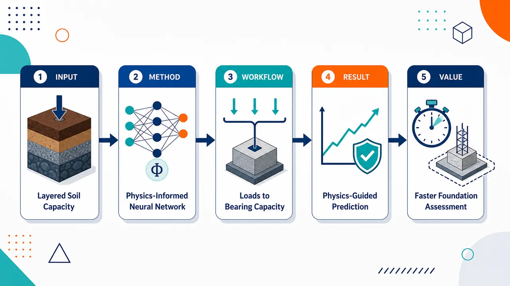
研究问题如何在层状土浅基础中，快速预测竖向荷载、水平荷载和弯矩共同作用下的极限承载力，避免传统解析公式过度理想化、数值模拟计算成本高的问题。创新方法将物理信息神经网络 PINNs 引入层状土承载力预测，把岩土力学物理规律与数据驱动模型结合，让神经网络不仅从样本学习，还受物理约束引导，面向竖向—水平—弯矩复合荷载这一更复杂工况建立承载力预测器。工作流程输入层状土参数、浅基础条件和复合荷载信息；PINN 网络在物理约束与训练数据共同作用下学习荷载—地基响应关系；模型输出基础在复杂加载下的极限承载力，可作为解析法和高成本数值模型的替代预测结果。关键结果研究提出了用于层状土浅基础复合荷载极限承载力预测的 PINN 框架；核心发现是该框架有望突破解析方法理想化假设限制，并降低对昂贵数值模拟的依赖。摘要未给出具体精度提升、计算加速倍数或对比实验数值。应用价值可服务于浅基础设计、层状地基承载力评估和复杂荷载工况下的工程安全判断，为岩土工程师提供更快速、物理一致且潜在低成本的承载力预测工具。核心概览
该论文属于岩土工程与物理知情机器学习交叉方向，尝试用物理知情神经网络（PINNs）预测层状土中浅基础在竖向、水平和弯矩组合荷载下的极限承载力。
方法要点
- 采用物理知情神经网络（PINNs）作为主要预测模型。
- 研究对象为层状土条件下浅基础的极限承载力问题。
- 考虑复杂组合荷载，包括竖向荷载、水平荷载和弯矩荷载。
- 目标是替代依赖强假设的解析公式以及计算成本较高的数值模型。
- 摘要未详述 PINNs 中嵌入了哪些物理方程、边界条件或损失函数形式。
- 摘要未详述训练数据来源、模型结构、对比基准和验证方案。
关键结果
- 摘要明确指出，该方法旨在提高复杂工况下极限承载力的预测能力。
- 摘要表明 PINNs 被用于处理传统解析式难以准确覆盖、数值模型成本较高的层状土承载力预测问题。
- 摘要未给出具体精度指标、误差水平、计算效率提升幅度或工程案例结果。
- 摘要未说明该方法是否已显著优于传统解析方法、有限元/有限差分方法或普通神经网络。
创新性判断
- 可能的新颖点在于将 PINNs 引入层状土浅基础极限承载力预测，尤其面向竖向—水平—弯矩组合荷载这一复杂加载场景。
- 相比纯数据驱动模型，其潜在创新在于利用物理约束提升模型对复杂工况的泛化能力；但摘要未详述具体物理约束，因此该判断存在不确定性。
- 相比传统解析方法，其可能优势是减少对简化假设的依赖；但摘要未说明适用范围和理论假设细节。
- 相比高保真数值模拟，其可能优势是降低预测成本；但摘要未给出计算效率或精度对比，无法确认实际提升程度。
-
12
📊 含图深析
💡 亮点：自旋-晶格耦合模拟真实温度斯格明子转变。
📖 展开分析 + 配图
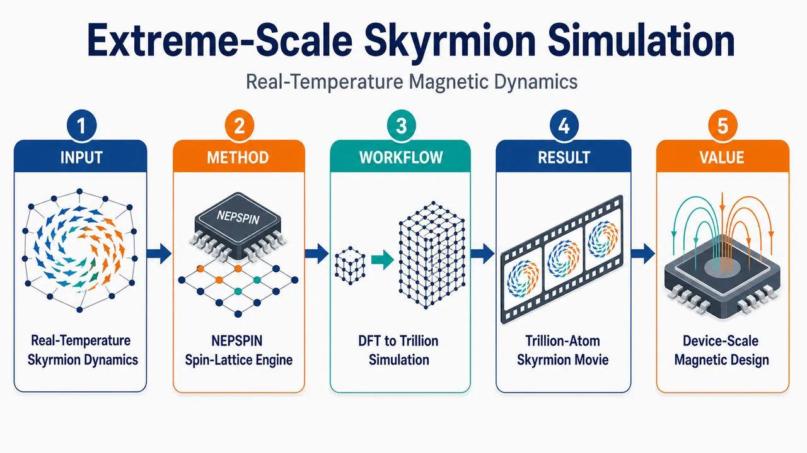
研究问题真实温度下 FeGe 斯格明子从螺旋磁序中成核、增殖和重组，受原子晶格热振动、非共线自旋进动、DMI/交换相互作用平衡和自旋–晶格能量交换共同控制；传统微磁学缺少显式晶格热流，冻结晶格自旋动力学缺少晶格反馈，从头算方法又无法覆盖微米器件尺度。创新方法提出统一的耦合自旋–晶格机器学习模拟框架：用自旋约束 DFT 训练 NEPSPIN 势，在同一能量面 E(R,S) 上同时预测原子力和磁力矩；配合结构保持自旋–晶格积分器与自洽中点自旋更新；并将邻居遍历、力/力矩计算、SVE2 向量化、SME 外积 GEMM、NUMA 感知数据布局深度融合，实现物理完整性与极端并行性的同时突破。工作流程输入 FeGe 原子位置 R、自旋构型 S、真实温度条件和 DFT 训练数据；NEPSPIN 构造含 onsite、pairwise、angular 磁通道的局域描述符；在统一能量面 E(R,S) 上推理能量、原子力和磁力矩；结构保持积分器耦合更新晶格运动与自旋进动；LAMMPS 在 ARM 众核超算上并行推进，输出微米尺度 FeGe 中螺旋态到斯格明子纹理的动态演化图景。关键结果在 LineShine 超算上扩展到 20,480 节点、12.45 百万 ARM CPU 核，直接模拟 1.34 × 10¹² 个原子和同数自旋，物理尺寸达 3.02 μm × 2.41 μm × 2.41 μm；全机弱扩展效率 89.7%，双精度持续性能 48.5 PFLOPS，相比既有自旋感知方法约七个数量级加速，并可观察真实温度下斯格明子种子出现、增殖与重组。应用价值把原子分辨率、显式晶格热运动、非共线自旋动力学和微米器件尺度放入同一可预测模拟框架，为低功耗斯格明子存储、逻辑器件和拓扑磁材料设计提供直接的真实温度动力学工具，也建立了万亿自由度磁性材料模拟的新尺度与性能基准。第一部分：核心概览 (Overview)
该研究把自旋约束 DFT 训练的 NEPSPIN 机器学习势、结构保持型自旋–晶格积分器与面向 ARM 众核超算的极端优化实现整合到统一框架中，实现了 FeGe 中真实温度下从螺旋磁序到斯格明子纹理的万亿原子级直接模拟。其地位在于同时突破了物理完整性与极端可扩展性两道瓶颈：1.34 万亿原子/自旋、12.45 百万 CPU 核、89.7% 弱扩展效率、48.5 PFLOPS 双精度性能，达到此前自旋–晶格模拟未覆盖的器件相关尺度。
---
第二部分：结构化快速回顾
《Extreme-Scale Atomistic Simulation of Real-Temperature Magnetic Skyrmion Dynamics by Coupled Spin-Lattice Modeling》（None，）
背景
磁性斯格明子是低功耗信息技术中的重要拓扑自旋纹理。FeGe 具有约 70–80 nm 的螺旋/斯格明子尺度和接近室温的临界温度 278–279.1 K，适合研究真实温度下的拓扑磁动力学。然而，真实温度下的斯格明子形成同时涉及原子晶格运动、自旋进动、热涨落、晶格–自旋能量交换和微米尺度形貌重组，传统连续模型、冻结晶格自旋动力学或昂贵的从头算方法均难以兼顾。
方法
构建了 NEPSPIN 自旋感知神经演化势，基于自旋约束 DFT 数据学习统一能量面 E(R,S)，同时输出原子力与磁力矩；结合保持几何结构的自旋–晶格动力学积分器，并在 LAMMPS 中实现统一求解。系统级优化包括核融合、SVE2 向量化、SME 外积 GEMM 重构、NUMA 感知布局、SoA 预打包。
结果
在 LineShine 超算上扩展到 20,480 节点、12.45 百万 ARM CPU 核，模拟 1.34 × 10¹² 原子与同数自旋，物理尺寸达 3.02 μm × 2.41 μm × 2.41 μm。全机弱扩展效率为 89.7%，双精度持续性能达 48.5 PFLOPS，相对既有自旋感知方法实现约七个数量级加速。
讨论
核心科学意义在于首次把器件相关尺度、原子分辨率、显式晶格运动和非共线自旋动力学放入同一个可运行框架，从而直接解析 FeGe 中热驱动的斯格明子成核、增殖和重组过程。
局限
验证集中于 FeGe 和特定 NEPSPIN 表示；性能评估依赖模型化 FLOP 计数；DeepMD 对比中的准确率表标注为“placeholder pending final validation”；长时间真实动力学仍受时间步长、训练集覆盖度、磁相空间采样和积分稳定性约束。
结论
该工作把自旋–晶格机器学习势推入万亿原子、微米尺度、真实温度动力学模拟区间，建立了预测性拓扑磁动力学模拟的新性能和尺度基准。
---
第三部分：逐章节冷凝解析 (Section-by-Section Condensing)
Abstract
- Real-temperature skyrmion dynamics require coupled spin–lattice evolution
真实温度下的拓扑磁动力学不能只模拟自旋，也不能只模拟晶格；FeGe 中的热驱动螺旋态到斯格明子态转变需要原子分辨率、显式晶格运动、微米尺度区域共同满足。核心问题被界定为：*"Real-temperature topological magnetic dynamics in functional materials is governed by coupled lattice and spin evolution, yet remains inaccessible to predictive simulation at device-relevant scales."* FeGe 被作为旗舰案例，因为其转变过程需要 *"atomistic resolution, explicit lattice motion, and micrometer-scale domains"*。
- Unified machine-learned spin–lattice framework
方法上整合了自旋约束 DFT 训练势与结构保持积分器，使能量、力和磁力矩来自同一机器学习框架。关键表述为：*"We combine a spin-constrained density-functional-theory-trained neuro-evolution potential with a structure-preserving spin–lattice integrator within one machine-learned framework."*
- Seven orders-of-magnitude acceleration
性能创新不仅来自模型本身，还来自面向体系结构的协同设计，包括kernel fusion、SVE2 vectorization、NUMA-aware data layout。加速幅度被量化为：*"Architecture–specific optimizations, kernel fusion, SVE2 vectorization, and NUMA-aware data layout deliver a seven orders-of-magnitude speedup over prior spin-aware methods."*
- Trillion-atom exascale simulation
规模达到 1.34 trillion atoms + 1.34 trillion spins，使用 12.45 million CPU cores，双精度持续性能 48.5 PFLOPS，弱扩展效率 89.7%。原文给出完整指标：*"the full application scales to 12.45 million CPU cores with 89.7% weak-scaling efficiency, enabling simulations of 1.34 trillion atoms and an equal number of spins while reaching 48.5 PFLOPS in double precision."*
---
1 Justification for the ACM Gordon Bell Prize
- Largest atomistic magnetic-material simulation
Gordon Bell 申报理由集中在三个硬指标：最大磁性材料原子模拟规模、第一性原理精度、全机级性能。规模为 1.34 万亿自旋 + 1.34 万亿原子，硬件为 12.45 百万 ARM CPU 核。直接证据为：*"We performed the largest atomistic simulation of a magnetic material to date: a 1.34-trillion spins and 1.34-trillion atoms coupled spin–lattice system executed on 12.45 million ARM CPU cores."*
- First-principles accuracy with sustained PFLOPS performance
科学可信度依托第一性原理训练数据，计算性能达到 48.5 PFLOPS 双精度持续性能，弱扩展效率 89.7%。原文强调：*"achieving first-principles accuracy, reaching a sustained performance of 48.5 PFLOPS in double precision, and sustaining 89.7% weak-scaling efficiency at full system scale."*
- First direct atomistic observation at device-relevant scale
关键贡献不是单纯“大”，而是大到能观察器件尺度拓扑纹理形成。研究声称实现：*"the first direct atomistic observation of skyrmion dynamics at device-relevant length scales."*
---
2 Performance Attributes
- Achievement category centers on peak performance and scalability
性能属性定位为峰值性能与可扩展性，方法类型为显式算法，性能结果基于完整应用而非孤立 kernel。表格字段显示：*"Category of achievement Peak performance, scalability"*，并标明 *"Results reported on basis of Whole application"*。
- Double precision and full machine scale
所有核心性能以双精度报告，并在全机规模上测量。关键字段包括：*"Precision reported Double precision"* 与 *"System scale Full-scale machine (20,480 nodes)"*。
- Measurement mechanism combines timers and FLOP counting
性能统计由计时器和 FLOP 计数构成，而不是硬件计数器单独给出。测量机制为：*"Measurement mechanism Timers and FLOP counting"*。这一点意味着 FLOPS 是基于应用中主导计算负载建模得到的持续吞吐量。
---
3 Overview of the Problem
- Skyrmions combine topology and manipulability
磁性斯格明子兼具纳米/介观可操控性与非平凡拓扑，是低功耗信息技术的候选基础。原文表述为：*"Magnetic skyrmions have emerged as one of the most compelling topological spin textures for future low-power information technologies."* 其吸引力来自 *"nanoscale or mesoscale manipulability with nontrivial topology"*。
- Chiral magnets set magnetic length through exchange–DMI competition
非中心对称手性磁体的重要性来自 Heisenberg exchange J 与 Dzyaloshinskii–Moriya interaction D 的竞争，该竞争把磁长度尺度设定在几十纳米。原文明确：*"the competition between Heisenberg exchange(J) and the Dzyaloshinskii-Moriya interaction(D) naturally sets the characteristic magnetic length scale in the experimentally useful tens-of-nanometers range."*
- FeGe is an experimentally relevant prototype
FeGe 的螺旋/斯格明子尺寸约 70–80 nm，体相临界螺旋磁有序温度接近室温，约 278 K，单晶精确值 279.1 K。原文证据为：*"FeGe is a prototypical example: its characteristic helix/skyrmion size is about 70–80 nm"*，以及 *"its bulk critical helimagnetic ordering temperature lies close to room temperature, around 278 K, with a more precise single-crystal determination giving 279.1 K."*
- Device-scale simulation requires many texture periods
物理上有意义的模拟不能只容纳单个周期，而要包含多周期竞争、边界和涨落成核通道，因此系统尺寸自然进入介观甚至微米尺度。原文指出：*"a physically meaningful calculation must extend far beyond a single texture unit and instead contain many competing periods, boundaries, and fluctuation–mediated nucleation channels."*
- Temperature must be explicit, not phenomenological
接近实验温度的转变中，温度不能仅通过噪声或参数拟合表示；必须解析热涨落、晶格运动、自旋–晶格能量交换。原文为：*"temperature cannot be treated as a purely phenomenological parameter: thermal fluctuation, lattice motion, and spin–lattice energy exchange must be resolved explicitly."*
- J/D sensitivity makes accuracy essential
螺旋周期、斯格明子尺寸和相竞争由 J/D 精细平衡控制，势函数误差会导致拓扑纹理尺度偏移。原文强调：*"even modest errors in the effective J/D ratio can shift the helix pitch, skyrmion size, and phase competition."*
- Nanosecond evolution makes brute-force DFT impossible
相关动力学发生在纳秒时间尺度，若每步进行高保真从头算，成本无法承受。关键句为：*"the relevant evolution unfolds on nanosecond time scales, which makes brute-force high-fidelity simulation prohibitively expensive."*
- Three-component solution architecture
解决方案由三部分组成：NEP-SPIN 磁性机器学习势、辛/结构保持自旋–晶格积分器、LAMMPS 极端并行实现。第一部分为：*"a magnetic machine-learning interatomic potential based on an extended spin-included neuro-evolution potential (NEP-SPIN)"*；第二部分为：*"a symplectic spin-lattice dynamics integrator"*；第三部分为：*"an extreme-scale implementation of spin-lattice dynamics ... within LAMMPS optimized for a many-core ARM supercomputer."*
- Linear scaling replaces cubic first-principles scaling
NEP-SPIN 将重复电子结构计算替换为局域原子推理，把计算复杂度从第一性原理的近似三次标度降为整体线性标度。原文说明：*"replaces repeated electronic-structure evaluations with local atomic inference, reducing the computational cost from cubic-scaling first-principles calculations to overall linear scaling with system size."*
- Micrometer-scale FeGe domain
最大模拟规模为 1.34 × 10¹² magnetic atoms，物理区域为 3.02 μm × 2.41 μm × 2.41 μm。原文给出：*"up to 1.34 × 10¹² magnetic atoms, corresponding to a physical domain of 3.02 μm × 2.41 μm × 2.41 μm."*
- One atom carries one local magnetic moment
模型中每个原子携带一个局域磁矩，因此自旋数等于原子数。原文：*"each atom carries one local magnetic moment, so the number of spins is equal to the number of atoms."*
---
4 Current State of the Art
- Unified spin–lattice treatment is required
热驱动拓扑磁现象要求原子位置和局域磁矩被平等处理，以一致计算力和磁力矩。原文指出：*"requires a unified spin–lattice framework that treats atomic positions and local magnetic moments on an equal footing."*
- Physics spans atomistic to micrometer scales
斯格明子形成跨越多个尺度：原子级晶格畸变、10–100 nm 纹理重组、介观/微米域的集体动力学。原文为：*"from atom-resolved lattice distortions and texture reorganization at 10–100 nm, to collective dynamics across mesoscopic or even micrometer-sized domains."*
- Continuum micromagnetics lacks explicit lattice heat transfer
连续微磁学可达大尺度，但温度通常作为有效噪声或拟合参数，不能显式处理晶格加热和晶格到自旋的能量转移。原文评价：*"Continuum micromagnetics can reach large domains, but temperature usually enters only through effective noise or fitted parameters, so lattice heating and lattice-to-spin energy transfer are not treated explicitly."*
- Atomistic spin dynamics often freezes lattice
原子自旋动力学能解析单个磁矩，但晶格常被冻结或被热浴替代。原文为：*"Atomistic spin dynamics resolves individual moments, yet the lattice is often frozen or replaced by a thermal bath."*
- On-the-fly first-principles spin–lattice dynamics is too expensive
在线第一性原理自旋–晶格动力学物理完整，但成本不仅来自电子结构，还来自多电子/自旋态之间的非绝热跃迁跟踪。原文指出：*"its cost is set not only by electronic-structure evaluations, but also by the need to follow nonadiabatic transitions among multiple electronic or spin states."*
- Parameterized spin Hamiltonians lack self-consistent temperature transferability
DFT 参数化自旋哈密顿量、磁团簇展开和经典自旋–晶格动力学高效且可解释，但耦合通常预先固定，不能随温度驱动晶格运动自洽更新。原文表述：*"their magnetic couplings are usually fixed in advance rather than updated self-consistently with temperature-driven atomic motion."*
- Spin-aware ML models close the physics gap but face computational bottlenecks
近期磁性机器学习势可统一描述能量、力和磁力矩，但实际成本取决于描述符局域性、核融合、内存效率和硬件适配。原文总结：*"Recent spin-aware machine-learned models close this gap by describing energy, force, and magnetic torque within a unified representation"*，但 *"the practical cost depends strongly on descriptor locality, kernel fusion, memory-access efficiency, and hardware suitability."*
- DeepSPIN and SpinGNN++ emphasize fidelity more than exascale deployability
DeepSPIN、SpinGNN++ 等提升表达能力，但通用深度学习框架可能带来长时间大规模推理开销。原文指出：*"implementations based on general-purpose deep-learning frameworks may introduce substantial inference overhead in long-time, large-system simulations."*
- NEP is throughput-friendly but originally lacks spin degrees of freedom
NEP 局域描述符更接近 HPC 生产要求，但原始形式不显式包含自旋或输出磁力矩。原文对比：*"NEP-style local descriptors are much closer to the throughput and scalability requirements of production HPC workflows, but in their current form they do not explicitly include spin degrees of freedom or generate magnetic torques."*
- State-of-the-art gap is physical completeness plus exascale deployability
现有差距不是单独的精度或规模，而是要在同一在线势评估管线中同时实现物理完整性和百亿/万亿级部署。关键原文为：*"The central state-of-the-art gap is therefore not simply one of accuracy or scale in isolation, but of closing physical completeness and exascale deployability within the same online potential-evaluation pipeline."*
- Performance comparison places NEPSPIN in a new regime
表 I 中，自旋–晶格方法如 Spilady 仅 128K 规模，spinGNN++ 为 4,608，DeepSPIN 为 11,328；NEP+SPIN FeGe 达到 1.34T atoms/spins、12.45M CPU cores、48.5P/43.3P FLOPS、1.79 × 10⁻¹¹ s/step/atom。表格中的本工作条目显示：*"This work 2026 NEP + SPIN FeGe S+A ... 1.34 T ... 12.45 M ... LineShine 48.5 P ... 1.79 × 10⁻¹¹."*
---
5 Innovations Realized
- Hardware mismatch defines the optimization problem
目标 ARM 平台存在三类瓶颈：16-domain NUMA 层级、无共享 L3 cache、GEMV-like 推理难以利用 SME 矩阵单元。原文概括：*"the deep 16-domain NUMA hierarchy demands careful affinity management; the absence of a shared L3 cache penalizes data reuse across memory-bound descriptor kernels; and the dominance of GEMV-like inference operations underutilizes the SME matrix units."*
---
5-A Algorithmic Innovations
5-A 1 A spin-aware local descriptor pipeline
- Spin degrees are added without destroying locality
NEP 推理路径被扩展到磁信息，同时保留局域性、cutoff 邻居遍历、规则评估模式。原文为：*"We extended the existing NEP inference path to incorporate magnetic information while preserving the same locality, cutoff-based neighbor traversal, and regular evaluation pattern."*
- Descriptor includes onsite, pairwise, and angular magnetic channels
局域特征向量增加三类磁通道：onsite 自旋状态、pairwise 自旋–键耦合、angular 自旋–晶格信息。原文说明：*"the local feature vector augments the original structural channels with three groups of magnetic channels that correspond to onsite, pairwise, and angular spin-lattice information."*
- Magnetic extension reuses structural infrastructure
磁扩展复用径向基和角向累积机制，避免引入全新复杂通信模式。原文证据：*"reuse the same radial-basis and angular-accumulation infrastructure as the structural part."*
5-A 2 Implementation-oriented descriptor organization
- All magnetic channels share the same computational pattern
三类磁通道都遵循局域邻居遍历、通道累积、小型稠密收缩，因此增加算术量而不增加全局通信。原文为：*"all magnetic channels follow the same basic computational pattern: local neighbor traversal, channel-wise accumulation, and small dense contractions."*
- No new global data dependencies
实现层面，磁通道扩展不会引入不规则通信路径。原文强调：*"the magnetic extension increases arithmetic work without introducing new global data dependencies or irregular communication paths."*
5-A 3 Self-consistent midpoint spin update
- Midpoint iteration handles strong spin–field feedback
当自旋状态与有效场强烈耦合时，显式预测–校正更新被增强为可选的自洽中点迭代。原文说明：*"we augment the explicit predictor-corrector update with an optional self-consistent midpoint iteration."*
- Repeated force and field reevaluation improves robustness
算法从步初自旋出发，构造中点配置，重新评估力和有效场，直到收敛或达到迭代上限。原文为：*"the algorithm repeatedly forms a midpoint configuration, reevaluates the force and effective field at that midpoint, and reapplies the existing one-step update until either a convergence criterion or an iteration cap is reached."*
- Spin update must be scheduled last
由于中点迭代可能在一个时间步内多次触发力/场重算，自旋更新必须放在时间积分操作最后。原文：*"Because the procedure may trigger multiple force/field reevaluations within a single time step, the spin update must be scheduled last among time-integration operations."*
---
5-B Implementation Innovations
5-B 1 Unified spin–lattice execution in LAMMPS
- Unified energy surface E(R,S)
LAMMPS 中 NEPSPIN 模块在统一能量面 E(R,S) 上构造描述符并推理，其中 R 是原子位置，S 是自旋配置。原文为：*"the NEPSPIN module performs descriptor construction and inference on the unified energy surface E(R,S), where R and S denote the atomic positions and spin configurations respectively."*
- Forces and torques drive one coupled update
输出同时包含晶格和自旋驱动项，自旋–晶格积分器用原子力与磁力矩推进状态。原文为：*"producing both lattice and spin driving terms for the subsequent coupled update"*，以及 *"advances the state (R,S) with atomic forces and magnetic torques in a single update procedure."*
- Separate lattice and magnetic solvers are eliminated
统一实现避免晶格求解器与磁求解器分裂，保持力评估、自旋演化和并行数据移动一致。原文总结：*"This implementation eliminates the need for separate lattice and magnetic solvers."*
5-B 2 Fused multi-physics force kernel
- Three force/torque functions are fused
原始 NEPSPIN 中力和磁力矩由三个独立函数计算，每个都完整遍历邻居表并计算距离、cutoff、Chebyshev 递推。原文：*"forces and magnetic torques are evaluated by three independent functions, each performing a full neighbor-list traversal."*
- One traversal removes redundant work
因为三者共享相同径向 cutoff，融合 kernel 只遍历一次邻居表，在单次 pair pass 中计算所有力和力矩贡献。原文为：*"we fuse them into a single kernel that walks the neighbor list once and evaluates all force and torque contributions per pair in a single pass."*
- Runtime reduction is 23.9%
融合消除了两次冗余邻居遍历，约 300 instructions/neighbor × 110 neighbors/atom，以及两次冗余 Chebyshev 递推，每次 244 instructions/neighbor，使 fused-kernel runtime 降低 23.9%。原文给出：*"reducing the fused-kernel runtime by 23.9%."*
5-B 3 SVE2 predicated vectorization with pre-staging
- Irregular neighbor lists are vectorized through two-phase pre-staging
邻居数不规则阻碍直接向量化；解决方案是先标量过滤并打包有效邻居，再用 SVE2 批处理。原文为：*"The irregular neighbor list ... prevents direct vectorization of the inner loop. We address this with a two-phase pre-staging strategy."*
- Phase A packs valid neighbor data into aligned SoA buffers
Phase A 通过 cutoff 测试筛选邻居，并把坐标、距离、自旋、元素类型打包到 alignas(64) SoA buffer。原文：*"packs their coordinates, distances, spins, and element types into a contiguous, alignas(64) SoA buffer."*
- Phase B uses 8-wide SVE2 batches
Phase B 以 8-wide SVE2 batches 处理打包数据，对应 512-bit SVL for FP64。原文：*"processed in 8-wide SVE2 batches (matching the 512-bit SVL for FP64)."*
- Online Chebyshev recurrence avoids SVE sizeless-array limitation
Chebyshev 递推 Tₖ₊₁ = 2xTₖ − Tₖ₋₁ 在向量寄存器中在线完成，避免 SVE sizeless-type 数组限制。原文：*"basis functions Tₖ₊₁ = 2xTₖ − Tₖ₋₁ are evaluated inside the vector register file."*
- Predicated dispatch removes branch divergence
使用 svsel_f64 按 lane 选择 Fe/Ge 系数，避免分支发散与类型排序 gather/scatter。原文为：*"svsel_f64 selects per-lane coefficients for different element types ... eliminating branch divergence and type-sorted gather/scatter."*
- Combined loop-time reduction is 29.6% over fused kernel alone
SVE2 优化加上 g_Fp 从列主序到行主序转置，使每个原子的 66 Fp parameters 位于约 8 contiguous cache lines，loop time 从 21.74 s 降到 15.30 s，降低 29.6%。原文：*"deliver a combined 29.6% reduction in loop time over the fused kernel alone (21.74 s → 15.30 s)."*
5-B 4 SME three-stage pipeline with predicate-driven type disambiguation
- Coefficient inner products are reformulated as SME outer-product GEMM
最具体系结构特异性的创新是把主导系数内积重构为 ARM SME 矩阵引擎上的外积 GEMM。原文为：*"The most architecture-specific innovation is the reformulation of the dominant coefficient inner products as outer-product GEMM operations executed on the ARM SME matrix engine."*
- Three-phase pipeline operates on 8-neighbor batches
kernel 被重构为 preparation、SME GEMM、post-processing 三阶段，对 8 neighbors 批处理。原文：*"restructured into a three-phase pipeline operating on batches of 8 neighbors."*
- Shared Chebyshev polynomials eliminate redundant recurrence
Chebyshev 多项式 Tₖ、Uₖ 每对邻居只计算一次，并在 Exchange、DMI、ANI、SIA 四个磁子项间复用，消除三次冗余递推，约 120 FLOP per pair。原文：*"Shared Chebyshev polynomials Tₖ, Uₖ are computed once per neighbor pair and reused across all four magnetic sub-terms ... eliminating three redundant recurrences (~120 FLOP per pair)."*
- Precomputed products reduce per-k cost from 6 to 2 FLOP
预计算 fp·dC 和 fp·Cv，把每个 k 的代价从 6 FLOP 降到 2 FLOP。原文：*"reducing per-k cost from 6 to 2 FLOP."*
- Predicate-driven type disambiguation removes 35% overhead
混合 Fe/Ge 邻居批次若先分离类型会增加 35% overhead；使用 predicate 按元素类型屏蔽 lane，让 Fe 与 Ge 贡献进入指定 ZA tiles。原文：*"in a naïve implementation, Fe and Ge neighbors must be separated by gather/scatter operations ... adding 35% overhead. We eliminate this overhead through predicate-driven type disambiguation."*
- Eight ZA tiles are mapped into four logical groups
8 个 ZA Tiles 被映射为 Fe/Ge 的径向与自旋系数–基函数乘积累积组。原文描述：*"maps the eight available ZA Tiles (8 × 8 FP64 each) into four logical groups."*
- SME GEMM issues 126 instructions per 8-neighbor batch
对 basis size = 8、9 次递推迭代，GEMM 阶段每 8-neighbor batch 发出 126 instructions，等效 1,008 FMA operations。原文：*"the entire GEMM phase issues 126 instructions per 8-neighbor batch, equivalent to 1,008 FMA operations."*
- Single-node cumulative speedup reaches 2.36× over OpenMP and 70.9× over serial
三阶段 SME pipeline 在 SVE2 基础上额外降低 11.2%，loop time 从 13.63 s 到 12.11 s；五项体系结构优化累计比 OpenMP baseline 快 2.36×，比串行快 70.9×。原文给出：*"The three-stage pipeline delivers an additional 11.2% loop-time reduction (13.63 s → 12.11 s)"*，以及 *"2.36× over the OpenMP baseline and 70.9× over the serial code."*
---
6 How Performance Was Measured
6-A System architecture and hardware platform
- LineShine is the measurement platform
所有测量在中国深圳国家超算中心的 LineShine 上完成，该系统于 2026 年 4 月公布。原文：*"All measurements were performed on the LineShine supercomputer, a newly deployed exascale system unveiled in April 2026 by the National Supercomputing Center in Shenzhen."*
- Each node has two LX2 processors and 608 cores
每节点含两个 Armv9-based LX2 处理器；单处理器 304 cores，节点总计 608 physical cores。原文：*"Each node contains two Armv9-based LX2 processors"*，以及 *"At the node level, the two LX2 processors provide 608 physical cores."*
- Memory hierarchy is HBM + DDR with 16 NUMA domains per node
单处理器集成 32 GB HBM、4 TB/s aggregate bandwidth，并配备 256 GB DDR；节点总计 64 GB HBM、512 GB DDR、16 NUMA domains。原文：*"The LX2 integrates two compute dies (304 cores total) and eight on-package HBM stacks (32 GB, 4 TB/s aggregate bandwidth)"*，以及 *"arranged in 16 NUMA domains."*
- No shared last-level cache makes locality critical
内存子系统没有共享末级缓存，因此性能强依赖数据局部性。原文明确：*"The memory subsystem has no shared last-level cache, making performance highly sensitive to data locality."*
- Peak FP64 is 120.6 TFLOP/s per node
LX2 通过 SME/SVE 支持 FP64、FP32、FP16、INT8；单处理器 FP64 峰值 60.3 TFLOP/s，节点 120.6 TFLOP/s。原文：*"delivering up to 60.3 TFLOP/s FP64 per processor (120.6 TFLOP/s per node)."*
- Full allocation reaches 20,480 nodes and 12.45 million cores
实验最多使用 20,480 nodes，对应 12.45 million cores，全系统 FP64 峰值超过 2.5 EFLOP/s。原文：*"The entire system delivers over 2.5 EFLOP/s peak performance in FP64"*，以及 *"up to 20,480 nodes (12.45 million cores)."*
6-B Benchmark application and setup
- Benchmark is FeGe real-temperature helix-to-skyrmion transformation
性能基准是 FeGe 中真实温度下的螺旋态到斯格明子态转变，而非简化 kernel。原文：*"we used the real-temperature helix-to-skyrmion transformation in FeGe as a whole-application benchmark."*
- All simulation components remain active
该基准使通信、描述符评估、力和力矩推理、耦合时间积分全程活跃。原文：*"every stage of the simulation pipeline remains active throughout the transition, including communication, descriptor evaluation, force-and-torque inference, and coupled time integration."*
- Largest physical system is 1.34 × 10¹² atoms and spins
系统规模达到 1.34 × 10¹² atoms 和同数自旋，FeGe 尺寸为 3018 × 2414 × 2414 Å，即 3.02 × 2.41 × 2.41 μm。原文：*"up to 1.34 × 10¹² atoms and an equal number of spins in a FeGe system of size 3018 × 2414 × 2414 Å (3.02 × 2.41 × 2.41 µm)."*
- Simulation protocol starts from low-temperature helical state
初态是在实验相关几何和边界条件下制备的低温螺旋态，随后升入斯格明子种子出现、增殖和重组的温度区间。原文：*"We first prepare a low-temperature helical state under experimentally relevant geometry and boundary conditions, and then drive the system through the temperature regime in which skyrmion seeds emerge, proliferate, and reorganize."*
- Helix pitch validation is essential
捕捉相变不只是识别平衡相，还要定量再现实验相关螺旋周期；图 4 中螺旋周期为 λ = 57.3 nm。图注给出：*"Arrows represent local spin orientations with a helical period of λ = 57.3 nm."* 正文强调：*"the helix pitch must first be reproduced quantitatively."*
- Performance metrics derive from MD Loop time
性能指标包括 loop time、atom-step/s/node、parallel efficiency、speedup、sustained FLOPS，均从 MD Loop time 推导。原文：*"All metrics are derived from a common timing primitive, the MD Loop time, defined as the wall-clock time spent in the time-stepping run loop, excluding one-time setup costs."*
- FLOPS are modeled from dominant NEPSPIN workload
应用级 FLOPS 由每步主导 NEPSPIN 工作量估计，包括径向/角向 pair interaction、ANN evaluation、自旋项、可选短程相互作用。原文：*"estimated from the dominant NEPSPIN workload in each MD step, including radial and angular pair interactions, ANN evaluation, spin-dependent terms, and optional short-range interactions."*
---
7 Performance Results
7-A Single-node performance
- Single-node analysis combines ablation and DeePMD comparison
单节点效率通过两类证据建立：体系结构优化消融，以及与 DeePMD 在相同硬件上的准确率和吞吐对比。原文：*"we establish single-node efficiency through two complementary analyses: an ablation study validating each architecture-specific optimization, and a direct comparison with DeePMD."*
- DeePMD is used as a Gordon Bell ML-MD baseline
DeePMD 被选作参照，因为其是 2020 Gordon Bell Prize 的 ML 势框架，并仍是大规模 ML-MD 性能评价基准。原文：*"DeePMD is chosen as the reference because it is the ML interatomic-potential framework featured in the 2020 Gordon Bell Prize."*
7-A 1 Optimization ablation study
- OpenMP reduces serial loop time from 858.04 s to 28.57 s
单线程 NEPSPIN force evaluation 在单节点 loop time 为 858.04 s；608 核 OpenMP 后降至 28.57 s，加速 30.0×。原文：*"Starting from a serial baseline of 858.04 s per loop ... OpenMP thread parallelism across 608 cores reduces the loop time to 28.57 s (30.0×)."*
- Spin-radial force fusion gives 23.9% reduction
Step 1 合并 radial、spin-lattice、magnetic torque 三个 kernel，loop time 从 28.57 s 降至 21.74 s，降幅 23.9%。原文：*"Spin-radial force fusion ... reduces loop time by 23.9% (28.57 s → 21.74 s)."*
- SVE2 vectorization gives another 23.3% reduction
Step 2 用 SoA buffer 与 8-wide SVE2 batch 处理有效邻居，loop time 从 21.74 s 到 16.67 s，额外降低 23.3%。原文：*"delivering an additional 23.3% reduction (21.74 s → 16.67 s)."*
- Fp row-major layout improves L1 locality
Step 3 使每个原子的 66 Fp parameters 连续分布，提高 L1 命中率，带来 −8.2% loop time 改善。原文：*"Fp row-major layout ... each atom’s 66 Fp parameters occupy contiguous cache lines, improving L1 hit rate (-8.2%)."*
- Angular descriptor restructure removes redundant FLOPs
Step 4 提前计算共享 Chebyshev 多项式与 fp·dC / fp·Cv，在 Exchange/DMI/ANI/SIA 间复用，降幅 −11.0%。原文：*"angular descriptor restructure ... cutting redundant FLOPs (-11.0%)."*
- SME pipeline gives final 11.2% reduction
Step 5 用 SME 外积 GEMM 和 predicate-driven type disambiguation，进一步降低 11.2%。原文：*"The SME three-stage pipeline ... achieving a further 11.2% reduction."*
- Total single-node speedup is 70.9× from serial
五项体系结构优化将 OpenMP baseline 从 28.57 s 降至 12.11 s，相对 OpenMP 加速 2.36×，相对串行 70.9×。原文：*"Cumulatively ... 2.36× speedup over the OMP baseline (28.57 s → 12.11 s), and the total speedup from serial is 70.9×."*
7-A 2 Comparison with DeePMD
- Accuracy is comparable across energy, force, and torque
在同一 FeGe 自旋–晶格验证集上，NEPSPIN 与 DeePMD 精度相近：能量 RMSE 1.85 vs 1.69 meV/atom，力 RMSE 45.67 vs 46.34 meV/Å，磁力矩 RMSE 11.16 vs 12.58 meV/μB。原文：*"NEPSPIN achieves an energy RMSE of 1.85 meV/atom (vs. 1.69 for DeePMD), a force RMSE of 45.67 meV/Å (vs. 46.34), and a torque RMSE of 11.16 meV/μB (vs. 12.58)."*
但表 IV 注明：*"Values are placeholders pending final validation."* 因此准确率结论需要等待最终验证。
- Throughput comparison uses water to match Gordon Bell campaigns
为控制与 DeePMD Gordon Bell 任务的差异，使用相同水体系，每节点 49,152,000 atoms。原文：*"we reproduce the same water simulation on LineShine using our NEPSPIN engine with 49,152,000 atoms per node."*
- Total throughput scales to 6.77 × 10¹⁰ atom-step/s
总吞吐从单节点 4.38 × 10⁶ atom-step/s 增至 20,480 节点 6.77 × 10¹⁰ atom-step/s，增长 1.55 × 10⁴-fold，约同时模拟 1.0 × 10¹² atoms。原文：*"scales from 4.38 × 10⁶ atom-step/s on a single node to 6.77 × 10¹⁰ atom-step/s on 20,480 nodes."*
- LineShine surpasses Fugaku DeepMD by more than two orders of magnitude in throughput
Fugaku DeepMD 最大实测为 3.29 × 10⁸ atom-step/s，对应 ~9,874 nodes 和 1.56 × 10⁹ atoms；LineShine 达 >1.0 × 10¹² atoms。原文：*"surpasses this by more than two orders of magnitude in absolute throughput while extending the accessible system size from 1.6 × 10⁹ to over 1.0 × 10¹² atoms."*
- Per-node advantage is larger than peak-FLOP advantage
LineShine 每节点吞吐约为 Fugaku 的 ~130×、Summit 2022 的 ~10×，尽管 FP64 峰值每节点仅约 ~2.8×。原文：*"LineShine delivers ~130× the throughput of Fugaku and ~10× that of Summit 2022, despite providing only ~2.8× the FP64 peak per node."*
- Efficiency comes from NEP arithmetic profile and LX2 memory/vector units
非成比例优势来自 NEP 描述符低算术强度，以及 LX2 的 SME/SVE 与 HBM 对 memory-bound 邻居表操作的高效利用。原文解释：*"This disproportionate advantage reflects the lower arithmetic intensity of the NEP descriptor relative to DeepMD, combined with the LX2 node’s efficient utilization of SME/SVE vector units and on-package HBM."*
7-B Weak scaling
- Weak scaling spans 1 to 20,480 nodes
弱扩展中每节点工作量固定，节点数从 1 增至 20,480。原文：*"the per-node workload is held constant while the number of nodes increases from 1 to 20,480."*
- Two per-node workloads are evaluated
小规模每节点 8.19 × 10⁶ atoms，大规模每节点 6.55 × 10⁷ atoms，后者为前者 8×。原文：*"a small case with 8.19 × 10⁶ atoms per node and a large case with 6.55 × 10⁷ atoms per node (8× larger)."*
- Full-scale atom counts are 167.77 billion and 1.34 trillion
20,480 节点、12.45M 核下，小规模总数 1.68 × 10¹¹ atoms / 167.77 billion，大规模 1.34 × 10¹² atoms / 1.34 trillion。原文：*"the small case evolves 1.68 × 10¹¹ atoms (167.77 billion) and the large case evolves 1.34 × 10¹² atoms (1.34 trillion)."*
- Full-scale weak-scaling efficiencies are 89.7% and 85.3%
全机规模下小规模效率 89.7%，大规模效率 85.3%。原文：*"At full machine scale (20,480 nodes), the small case retains 89.7% efficiency and the large case 85.3%."*
- Efficiency loss comes mainly from ghost atoms and communication
极端规模下每个 MPI 子域的表面积/体积比上升，ghost atom fraction 和跨节点通信增加。原文：*"The primary source of efficiency loss at extreme scale is the increasing surface-to-volume ratio of each MPI sub-domain, which raises the ghost-atom fraction and inter-node communication volume."*
- Angular kernels amortize communication overhead
NEPSPIN 角向 kernel 具有较高算术强度，约 O(Nₙₑᵢgh × Lₘₐₓ²) FLOPs/atom，而 halo exchange 约 O(Nₗₒcal²/³)，因此可摊薄通信成本。原文：*"The high arithmetic intensity of the NEPSPIN angular kernels—O(Nₙₑᵢgh × Lₘₐₓ²) FLOPs per atom versus O(Nₗₒcal²/³) halo exchange—amortizes this overhead."*
- Sustained FLOPS reach 48.5 and 43.3 PFLOPS
20,480 节点下，小规模达到 48.5 PFLOPS，大规模 43.3 PFLOPS，单节点 baseline 分别为 2.64 TFLOPS 和 2.48 TFLOPS，均为双精度。原文：*"reaching 48.5 PFLOPS (small case) and 43.3 PFLOPS (large case) at 20,480 nodes. The single-node baseline is 2.64 TFLOPS ... and 2.48 TFLOPS."*
7-C Strong scaling
- Strong scaling uses two fixed-size systems
强扩展测试包含两个固定规模系统：67 B atoms 与 268 B atoms。原文：*"Strong-scaling behaviour is characterised with two fixed-size systems—67 B and 268 B atoms."*
- Node ranges are 2,048–20,480 and 4,096–20,480
67.1 billion atoms 系统从 2,048 扩展到 20,480 nodes，跨度 10×；268.4 billion atoms 系统从 4,096 到 20,480 nodes，跨度 5×。图注给出：*"67.1 billion, scaled from 2,048 to 20,480 nodes (10× range)"*，以及 *"268.4 billion, scaled from 4,096 to 20,480 nodes (5× range)."*
- Provided text truncates before numerical strong-scaling efficiencies
强扩展部分只给出系统规模和节点范围，未提供完整表格或具体效率数值；可确认分析依据为 Figure 8 中 loop time 与理想线性加速虚线。图注说明：*"Dashed lines indicate ideal linear speedup from each respective baseline node count."*
---
第四部分：深度理解与语言支持 (Understanding & Nuance)
1. 术语解析
- Coupled spin–lattice dynamics
中文可译为耦合自旋–晶格动力学。其含义不是“同时模拟自旋和原子”这么简单，而是自旋态 S 与原子位置 R 共同决定统一能量面 E(R,S)，原子力和磁力矩由同一势函数导出。微妙之处在于：晶格热振动会改变磁相互作用，自旋重排也会反馈到力场。
- Real-temperature
不是普通的“有限温度”或“加热模拟”。这里强调温度接近实验真实条件，例如 FeGe 的 278–279.1 K 临界区域；热涨落、晶格运动、能量交换需要显式存在，而不是用拟合噪声或有效参数替代。
- Structure-preserving / symplectic integrator
中文常译为结构保持积分器或辛积分器。含义是数值积分尽量保持原始动力学系统的几何结构，例如相空间体积、守恒性质或自旋长度约束。普通积分器在长时间模拟中可能产生系统性能量漂移或自旋轨道失真；结构保持方法更适合纳秒尺度动力学。
- Dzyaloshinskii–Moriya interaction (DMI)
Dzyaloshinskii–Moriya 相互作用是一种反对称交换相互作用，常见于缺乏反演对称性的磁体。它促使相邻自旋形成扭转结构，是螺旋磁序和斯格明子形成的核心机制。与 Heisenberg exchange J 的比值 J/D 控制螺旋周期和斯格明子尺寸。
- Weak scaling efficiency
弱扩展效率衡量“每个节点工作量固定时，节点数增加后运行时间是否保持不变”。89.7% 表示从单节点扩展到 20,480 节点时，整体时间开销只相对理想情况损失约 10.3%，对含通信和邻居交换的万亿原子模拟而言很高。
2. 疑难查证
- 为什么不能只用微磁学模拟斯格明子？
微磁学把磁化强度视为连续场，适合大尺度，但真实温度 FeGe 转变中有三个微观因素不能轻易粗粒化：第一，晶格热振动改变局域交换和 DMI；第二，成核通道可能由局域涨落触发；第三，螺旋周期对 J/D 极敏感。若温度只是噪声项，晶格到自旋的能量流没有物理来源，无法预测真实温度下的成核路径。
- 为什么 1.34 万亿原子规模对斯格明子有科学意义？
FeGe 的单个螺旋/斯格明子尺度约几十纳米。若模拟盒只含一个或几个周期，边界条件会强烈约束纹理，无法观察多种成核通道、缺陷竞争、拓扑重组和长程集体动力学。微米级盒子可容纳大量螺旋周期和斯格明子结构，更接近器件实际尺度。
- 为什么 NEP 比 DeepMD 更适合该极端规模任务？
DeepMD 通常具有更重的深度神经网络推理路径，计算密集且框架开销较大；NEP 采用局域描述符和较轻量推理，更容易与邻居表、Chebyshev 递推、SIMD/SVE、SME 进行手工融合。这里的优势不是单纯模型更小，而是模型形式与 HPC 内存层级、向量宽度、矩阵引擎更匹配。
- 为什么自旋更新要“self-consistent midpoint”？
磁有效场依赖当前自旋和原子结构。如果时间步开始时的场被直接用于整个步长，在强非线性区域会产生误差甚至不稳定。中点自洽迭代相当于寻找时间步中间的更一致状态，再用该状态更新，从而提升强耦合情况下的鲁棒性。
---
第五部分：创新评估与关联 (Synthesis & Novelty)
1. 创新性判断
- 物理完整性的新颖性
近 2–5 年内，SpinGNN、SpinGNN++、DeepSPIN、磁性 ACE 等方法已把自旋信息引入机器学习势，但公开结果多集中在模型表达、有限规模验证或 GPU/小规模并行。该工作的新颖点在于同时给出能量–力–磁力矩统一推理、显式晶格运动、非共线自旋自由度和真实温度拓扑相变动力学。
- 尺度的新颖性
既有自旋–晶格 ML 方法公开规模多为几千到百万原子量级，表 I 中 DeepSPIN 为 11,328，spinGNN++ 为 4,608，Spilady 为 128K。该工作达到 1.34 × 10¹² 原子/自旋，跨越多个数量级，使原子级自旋–晶格模拟首次进入微米器件尺度。
- 性能工程的新颖性
贡献不是把已有 ML 势简单移植到大机器，而是围绕 ARM LX2 的无共享 L3、16 NUMA 域、HBM、SVE2、SME ZA tiles重新设计数据路径和计算 kernel。尤其是把系数内积重构为 SME 外积 GEMM，并用 predicate 区分 Fe/Ge 类型，解决了不规则邻居表与矩阵单元之间的结构冲突。
- 解决的前人未解问题
前人通常在三者之间取舍：
- 连续微磁学有尺度但缺乏显式晶格热动力学；
- 原子自旋动力学有自旋分辨率但常冻结晶格；
- 从头算自旋–晶格动力学物理完整但无法达到器件尺度。
该框架把三者的关键优势连接起来：DFT 级训练精度、显式自旋–晶格耦合、线性标度局域推理、全机极端扩展。
- 领域地位
该成果可视为自旋–晶格拓扑磁动力学中的“DeepMD Gordon Bell 时刻”的磁性扩展版本，但难度更高，因为每个原子额外携带自旋自由度，并且需要输出磁力矩而非仅原子力。若准确率最终验证成立，它将成为万亿自由度磁性材料模拟的标志性基准。
-
13
💡 亮点：框架材料圆偏振声子可诱导磁场。
📖 展开分析 + 配图
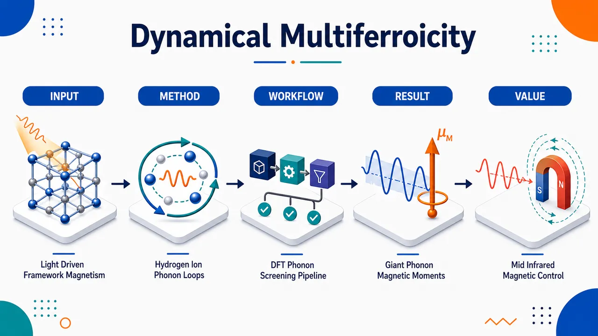
研究问题如何在复杂低对称框架材料和金属–有机框架中，找到能被圆偏振中红外/太赫兹光驱动、产生更大声子磁矩和更高光诱导磁化的动态多铁性材料；核心挑战是让原子圆周运动的角动量集中在轻且带有效电荷的原子上，同时避免不同子晶格磁矩相互抵消。创新方法把动态多铁性筛选从传统岩盐、钙钛矿扩展到19种框架材料/MOFs；用DFT/DFPT计算Γ点光学声子、本征位移和Born有效电荷，筛选红外活性近简并声子对并构造左右手圆偏振声子。Aha点是提出“含氢聚原子离子+柔性框架”的设计路线：让NH₄⁺等稳定分子离子中的H原子以高回旋磁比做局域圆周运动，并用Lindemann准则量化MOF在熔化前可承受的大振幅磁化上限。工作流程输入19种候选晶体结构 → DFT/DFPT弛豫并计算Γ点声子频率、本征位移、Born有效电荷 → 识别红外活性模式并筛选1%频率容差内的近简并模式对 → 检查模式有效电荷正交性，组合成圆偏振声子轨迹 → 逐原子计算角动量、回旋磁比和Maxwellian声子磁矩 → 模拟圆偏振THz–IR脉冲泵浦得到声子数和磁化密度 → 用全原子距离与金属–配体距离两种Lindemann限制估计熔化前最大磁化 → 输出材料排名与设计原则。关键结果Zn(NH₄)(formate)₃的51 THz模式获得最大单声子磁矩0.316 μₙ，接近SrTiO₃的0.179 μₙ的两倍，画面核心是NH₄⁺中H原子围绕局域中心旋转形成小电流环；BPO₄单声子磁矩为0.204 μₙ，但因强模式有效电荷产生最高模型泵浦磁化密度161 μₙ/nm³，并有386 μₙ/nm³的Lindemann上限；Zn(NH₄)(fmt)₃在只考虑金属–配体键稳定性的理想限制下，最大磁化可达197 μₙ/nm³，比全原子限制1.79 μₙ/nm³高两个数量级。应用价值框架材料和MOFs被确立为光驱动磁性的新平台：可用中红外激光激发手性声子，在非磁材料中瞬态写入磁化；含氢聚原子离子为利用氢高回旋磁比提供比反应性金属氢化物更实用的路径；BPO₄等材料还可结合非线性声子学同时诱导磁化、极化和结构手性，为超快磁控、光诱导多铁态、量子打印和声子磁性器件设计提供候选体系。第一部分：核心概览 (Overview)
动态多铁性研究被扩展到框架材料与金属–有机框架（MOFs），通过第一性原理计算筛选 19 种材料的圆偏振声子磁矩与光诱导磁化能力。核心发现是 Zn(NH₄)(formate)₃ 的 51 THz 声子模式具有 0.316 μₙ 磁矩，接近 SrTiO₃ 的两倍，源于 NH₄⁺ 氢离子高回旋磁比与角动量局域化。BPO₄ 则因强模式有效电荷产生最高泵浦磁化密度。框架材料的柔性与轻原子位移空间可显著提高熔化前可达磁化，确立其为光驱动磁性的有前景平台。
---
第二部分：结构化快速回顾
《Dynamical multiferroicity in framework materials》（None，）
背景
圆偏振或椭圆偏振声子可携带角动量并产生磁矩，是超快光控磁性的机制之一。传统研究集中于岩盐、钙钛矿等较简单晶体，复杂低对称框架材料尚未系统探索。
方法
采用 DFT/DFPT 第一性原理计算获得 Γ 点光学声子的频率、本征位移和 Born 有效电荷；筛选红外活性近简并声子对，构造圆偏振叠加，计算声子角动量、Maxwellian 磁矩、泵浦磁化密度及 Lindemann 熔化极限。
结果
19 种材料中，Zn(NH₄)(fmt)₃ 最大单声子磁矩为 0.316 μₙ；BPO₄ 次之，为 0.204 μₙ，但具有最高模型泵浦磁化密度 161 μₙ/nm³；SrTiO₃ 为 0.179 μₙ。Zn(NH₄)(fmt)₃ 的金属–配体熔化极限磁化估计达 197 μₙ/nm³。
讨论
大声子磁矩需要同时满足高原子回旋磁比、高圆偏振度、角动量局域化、低子晶格抵消。框架材料可通过轻原子、聚阳离子和低对称结构实现这些条件。
局限
计算主要得到离子电流产生的 Maxwellian 磁矩，未直接建模可能更大的非 Maxwellian 有效磁场；Lindemann 熔化估计是简化上限，真实大振幅动力学、声子寿命、非谐性与分解路径仍需实验和更高阶模拟验证。
结论
框架材料，尤其含氢聚原子离子的 MOFs，是光诱导磁性和动态多铁性的未充分开发平台；中红外可泵浦模式提升了实验可达性。
---
第三部分：逐章节冷凝解析 (Section-by-Section Condensing)
Abstract
Dynamical multiferroicity is positioned as optical control of magnetism
动态多铁性被定义为材料中圆偏振声子产生磁场的机制，直接服务于光控磁性。核心表述为 *"Dynamical multiferroicity, which describes the magnetic fields generated by circularly polarized phonons in materials, is an established mechanism for optical control of magnetism."* 研究目标不是一般声子性质，而是寻找可由光产生大磁场的材料平台。
Framework materials are screened by ab initio calculations
采用 ab initio calculations 对无机与有机框架材料进行系统评估，目标明确指向大光生磁场材料识别：*"Here we perform ab initio calculations of dynamical multiferroicity in inorganic and organic framework materials, with the goal of identifying materials which enable the generation of large magnetic fields by light."*
Zn(NH₄)(formate)₃ outperforms SrTiO₃ in phonon magnetic moment
最突出材料为 Zn(NH₄)(formate)₃，其部分声子模式磁矩几乎达到 SrTiO₃ 的两倍：*"We find the metal–organic framework material Zn(NH4)(formate)3 to have modes with magnetic moments almost twice that of SrTiO3."* 具体在结果表中对应 0.316 μₙ，而 SrTiO₃ 为 0.179 μₙ。
High gyromagnetic hydrogen motion drives the largest moment
最大磁矩来自 NH₄⁺ 中氢离子的圆周运动，关键物理量是高回旋磁比：*"these modes involve circular motions of NH+4 hydrogen ions with high gyromagnetic ratios."* 结果部分进一步给出 γ = 2.7 μₙ/ℏ、Z*_H ≈ 1/3 e。
Framework flexibility increases the melting-limited magnetization
框架材料不仅提高单声子磁矩，还可提高 Lindemann 熔化准则允许的最大光诱导磁化：*"The complex structure and flexibility of framework materials can allow such angular momentum localization, and also increase the maximum light-induced magnetization permitted by the Lindemann melting criterion."* Zn(NH₄)(fmt)₃ 的金属–配体限制磁化估计为 197 μₙ/nm³，远高于全原子限制 1.79 μₙ/nm³。
---
I Introduction
Axial phonons carry angular momentum when atomic motion is circular or elliptical
当声子中的原子轨迹为圆形或椭圆形时，声子激发携带角动量：*"When phonons (quantized vibrational excitations) involve circular or elliptical motions of atoms, the excitation can carry an associated angular momentum."* 这类声子被称为 axial phonons，其角动量改变物性，并赋予声子磁矩：*"The angular momentum of these axial phonons changes their physical properties in several ways, including by giving the phonon a magnetic moment."*
Axial phonons are relevant for ultrafast magnetic processes
声子频率通常比磁振子频率高数个数量级，因此轴向声子可参与超快磁性过程：*"As phonon frequencies are typically several orders of magnitude higher than magnon frequencies, axial phonons play an important role in ultrafast magnetic processes."* 典型例子包括超快退磁中声子系统吸收多余角动量：*"during ultrafast demagnetization, the phononic system can respond quickly enough to absorb the excess angular momentum."*
Coherent axial phonon excitation can create or switch magnetization
相干驱动轴向声子可在超快时间尺度上产生或翻转磁化：*"Coherent excitation of axial phonons can create or switch magnetization on ultrafast time scales."* 这将声子从被动热浴提升为可编程磁性控制自由度。
Acoustic axial phonons may serve as quantum sensors
长寿命声学声子因高磁矩–能量比可用于量子传感：*"the long lifetimes of acoustic phonons give magnetic axial acoustic phonons potential use as quantum sensors due to their high moment-to-energy ratio."* 这里强调的是低能耗、高响应的声子磁性准粒子应用。
Phonon magnetism follows an Ampere-law picture
声子磁性的直观起源是离子和电子电荷随原子圆周运动形成电流并产生磁场：*"The origins of phonon magnetism can be understood through Ampere’s law, as the atoms in a crystal have nuclear and electronic charges, which are moved in circular orbits by an axial phonon, thereby generating a charge current and a magnetic field."* 这对应 Maxwellian phonon magnetic moments。
Maxwellian phonon moments are typically nuclear-magneton scale
动态多铁性产生的 Maxwellian 声子磁矩通常为核磁子 μₙ 量级：*"This phenomenon, known as dynamical multiferroicity, produces Maxwellian phonon magnetic moments on the order of the nuclear magneton (μn)."* 本研究报告的 0.0077–0.316 μₙ 范围正处在该尺度。
Experiments report much larger effective magnetic fields
实验中轴向声子可产生远大于 Maxwellian 估计的有效磁场，对应 Bohr magneton μB 量级有效磁矩：*"experimental results have demonstrated that axial phonons can create much larger effective magnetic fields, corresponding to effective moments on the order of the Bohr magneton (μB)."* 这说明“真实磁性响应”可由电子–声子耦合、轨道–晶格耦合等机制放大。
Effective magnetic field is a parametrization of time-reversal-symmetry breaking
有效磁场并不一定是安培定律意义下的真实 Maxwellian 磁场，而是对声子破坏时间反演对称性的参数化：*"The effective magnetic field is not necessarily Maxwellian; it parametrizes the time reversal symmetry breaking caused by the axial phonon."* 可在 orbit–lattice coupling 或 light–matter coupling strength 中体现。
Small Maxwellian fields can still control magnetism
即使没有强电子–声子耦合或巨大有效场机制，小的 Maxwellian 场仍可能足以实现超快磁控：*"the small Maxwellian magnetic field can be sufficient for ultrafast control of magnetism even in materials without strong electron–phonon coupling or known mechanisms of large effective magnetic field generation."* Al₂O₃ 与 SiO₂ 的轴向声子磁翻转实验是关键动机。
Quantum printing provides a broader conceptual frame
使用轴向声子在非磁材料中产生磁化属于 quantum printing：*"The use of axial phonons to create magnetization in otherwise nonmagnetic materials is one element within the broader program of quantum printing."* Quantum printing 被定义为将声子和光子的量子态“印刻”到物质中：*"defined as the imprinting of quantum states from phonons and photons onto matter, allowing the generation and control of ferroic order on demand."*
Axial phonons can generate combined magnetic and ferroelectric order
椭圆偏振光相干驱动轴向声子可通过非线性声子耦合生成磁性与铁电序：*"coherent driving of an axial phonon using elliptical light can generate combined magnetic and ferroelectric order through nonlinear phononic coupling."* 这连接了动态多铁性与光诱导多铁相。
Multiferrons combine magnetic and electric multipolar properties
在铁电材料中，轴向声子可与铁电极化耦合形成 multiferrons：*"In ferroelectric materials, axial phonons couple to the ferroelectric polarization, creating quasiparticles referred to as multiferrons which carry magnetic and electric dipole and multipole moments."* 该概念强调声子准粒子可以同时承载多种 ferroic 序参量。
Maximum light-induced magnetization depends on moment and phonon number
可达最大磁化由两个因素提升：单声子磁矩大小与材料熔化/分解前可激发声子数：*"The maximum magnetization which can be achieved in a material by coherent excitation of axial phonons can be increased by increasing either the magnitude of the phonon magnetic moment or the number of phonons which can be excited in the material before it begins to melt or decompose."*
Flexible framework materials satisfy both design criteria
柔性框架材料具有拓扑欠约束导致的刚性/柔性方向混合，被视为磁性轴向声子的理想宿主：*"flexible framework materials ... are promising host materials for magnetic axial phonons."* 其结构可容纳大原子位移：*"Their structures can accommodate large atomic displacements."* 同时可含高比例轻原子，从而提高声子回旋磁比：*"they can contain large proportions of light atoms, enhancing the phonon gyromagnetic ratio."*
MOFs offer high structural tunability
金属–有机框架由金属离子和有机连接体构成，提供高度可调结构和性质：*"These qualities are especially pronounced in the family of metal–organic frameworks, in which metal ions are connected via organic linkers, allowing a very high degree of control over structure and properties."*
---
II Dynamical multiferroicity
Methodology extends prior rock-salt and perovskite surveys
计算框架延续 Juraschek 等关于动态多铁性的公式体系，并从简单结构扩展至复杂框架晶体：*"We extend the previous survey ... which considered the phonon magnetic moments created by circularly polarized light in crystals in the rock salt and perovskite structure families, to more complex framework structures."* 目标是展示对称性降低与结构柔性对光诱导声子磁性的影响：*"demonstrate the effects of symmetry lowering and structural flexibility on light-induced phonon magnetism."*
Input quantities are Γ-point phonons and Born effective charges
计算从 Γ 点光学声子的角频率、本征位移和 Born 有效电荷张量开始：*"The procedure for the calculation of the phonon magnetic properties begins with the phonon angular eigenfrequencies (ωn), eigendisplacements (um,n), and Born effective charge tensors (Z*m)."* 其中 n 标记 Γ 点光学声子，m 标记原胞原子：*"n indexes the optical phonons at Γ (q=0), and m indexes the atoms in the primitive unit cell."*
IR-active modes are selected by mode effective charge
红外活性模式通过模式有效电荷矢量识别：*"The IR-active modes were identified by the mode effective charge vector (Zn)."* 阈值为 ‖Zn‖ ≥ 10⁻¹⁰ e emu⁻¹/²：*"using a criterion of ‖Zn‖ ≥ 10−10 e emu−1/2."*
Near-degenerate IR-active mode pairs are allowed within 1% frequency tolerance
简并红外活性模式对的筛选容差为频率的 1%：*"Pairs of degenerate IR-active modes were then selected with a tolerance of 1% of the frequency."* 这一设置允许低对称、大原胞材料中的偶然简并模式被纳入：*"allowing accidentally degenerate pairs of modes to be considered in materials with low symmetry and large numbers of atoms."*
Circular superpositions require dephasing slower than phonon lifetime
若两个模式的去相干时间足够长，即声子寿命短于去相干时间条件满足，则可构造圆偏振叠加：*"Circularly polarized superpositions can be created in such cases so long as the phonon lifetimes (1/κa/b) are shorter than the dephasing time 2π/(ωa−ωb)."* 因文献线宽通常缺失，采用假设 2πκ/ω ≤ 1%：*"we assume 2πκ/ω≤1%."*
Optical excitability is enforced by orthogonal mode effective charges
只有归一化模式有效电荷矢量叉积模长 ≥ 0.95 的模式对被保留：*"only considering pairs where the cross product of the normalized mode effective charge vectors ... had a magnitude ≥0.95."* 这确保两个线偏振模式可被圆偏振光有效驱动。
Circularly polarized basis is built from degenerate mode components
圆偏振本征位移由两个线性模式 a、b 组合而成：*"The eigendisplacements of degenerate pairs of optically active modes were then transformed to a circularly polarized basis (±)."* 数学形式为
uₘ,± = (uₘ,a ± i uₘ,b)/√2，对应左右手性声子。
Phonon angular momentum is computed from mass-weighted circular motion
圆偏振声子的角动量为各原子质量乘以位移与速度叉积的总和：*"The angular momentum of the circularly polarized phonon is then given by ... L±=∑m Mm um,±×u˙m,±."* 这一定义直接反映真实原子轨迹的旋转角动量。
Phonon magnetic moment combines angular momentum and gyromagnetic ratio
磁矩由原子角动量与回旋磁比相乘并求和得到：*"its magnetic moment by ... μ±=∑m μm,±=∑m Lm,±γm."* Born 有效电荷与原子质量进入表达式：*"μ±=...∑m ℏ Sm,± Z*m / 2Mm."* 因此轻原子和高有效电荷最有利。
Resonant pumping is modeled by a driven normal-mode equation
圆偏振 THz–IR 辐射驱动模式坐标 Qα，动力学方程包含阻尼、势能梯度和电场驱动力：*"we model resonant pumping of the optically active mode with circularly polarized THz–IR radiation by solving the equation of motion for the phonon normal mode coordinate Qα."* 公式为
Q̈α + κα Q̇α + ∂U/∂Qα = Zα · E(t)。
Laser pulse parameters are scaled by phonon frequency
泵浦电场被建模为超短激光脉冲，具有峰值 E₀ 与 FWHM 持续时间 τ：*"we model as an ultrashort laser pulse with components Eα, peak magnitude E0, and FWHM duration τ."* 参数缩放为 τ/ωα = 5π、E₀/ωα² = 9.5 × 10⁻²⁰ V m⁻¹ s²：*"The pulse duration and peak magnitude are scaled by the phonon frequency as τ/ωα=5π and E0/ωα2=9.5×10−20 V m−1 s2."*
Lindemann criterion estimates melting risk from RMS displacements
通过原子均方根位移评估激发是否可能熔化样品：*"We use the atomic displacements to evaluate the potential for the excitation to melt the sample using the Lindemann criterion."* 保守估计采用谐近似、无阻尼：*"we solve Eq. (5) in the harmonic approximation, i.e., with κα=0 and U=ωα2Qα2/2."*
Melting is triggered when displacement exceeds 10–15% of interatomic distance
Lindemann 准则定义为任一原子的 RMS 位移超过平衡原子间距的一定比例：*"The Lindemann criterion states that melting occurs when, for any atom m, ⟨dm,±⟩>ηdm,0."* η 通常为 10%–15%：*"η is the Lindemann coefficient (usually considered to be 10%–15%)."*
Framework melting can be controlled by metal–ligand bonds
复杂 MOFs 的熔化可能由稳定框架的金属–配体键控制：*"In complex framework structures such as MOFs, the melting process can be controlled by the metal–ligand bonds which stabilize the framework."* 因此同时评估全部原子间距和仅金属–配体距离，η 固定为 10%：*"evaluating the Lindemann criterion at η=10% for all interatomic distances, and for only the metal–ligand distances."*
Induced magnetization equals phonon moment times phonon density
泵浦声子产生的磁化密度由单声子磁矩乘以声子密度给出：*"The magnetization induced by the pumped phonon mode (Mpulse) is determined using Eq. (4) and the phonon density."* 公式为
Mₚᵤₗₛₑ = μ± Nₚₕ/V_cell = μ±ω±(Qₐ₊Q_b)²/(2ℏV_cell)。
Maximum non-melting magnetization is scaled from the model pulse
熔化前最大磁化通过 Lindemann 系数缩放模型泵浦磁化得到：*"The maximum magnetization that can be obtained without melting the sample is then obtained by scaling the magnetization arising from the model pulse using the Lindemann coefficient."* 对应 Mₘₑₗₜ 是比较材料实际可达磁化的重要指标。
Nineteen materials cover simple perovskites to complex MOFs
样本包含 19 种材料，结构复杂度从简单钙钛矿到复杂 MOFs：*"We have studied a number of materials with varying structural complexity, ranging from simple perovskites to complex MOFs."* 包括 ScF₃、BPO₄、CaZrF₆、α-quartz、SrTiO₃、CuPt(CN)₆、CuCl(pyrimidine)、InF₃(bpy)、AgCl(phen)、CsCuCl₃、Sr(tar)、Li₂(tar)、AlF(bdc)、LiSn₂Br₃(CN₂)、Cd(Gua)(fmt)₃、Cu₃(mel)、Li₂(dmsu)、Zn(NH₄)(fmt)₃、Zn₇(dmsu)₆(OH)₂。
---
III Results and discussion
Table 1 ranks nineteen materials by single-phonon magnetic moment
所有 19 种材料的最大声子磁矩及相关性质汇总于表 1：*"The maximum phonon magnetic moments and related properties for all nineteen materials are collected in Table 1."* 指标包括 μph、S、γ、ω/2π、Nat、Mpulse、Mₘₑₗₜ₍A)、Mₘₑₗₜ₍M)；排序依据为单声子磁矩递增：*"sorted by increasing μph, the magnetic moment of one phonon."*
Atomic contribution depends on gyromagnetic ratio and circular polarization
单个原子对声子磁矩的贡献由两个因素相乘决定：回旋磁比 γ 与原子运动的圆偏振度 S：*"the contribution of an atom to the phonon magnetic moment of a given mode is the product of two factors: its gyromagnetic ratio and the circular polarization of the atomic motions S."* 因此高 γ 但低 S，或高 S 但低 γ，都不能保证大磁矩。
Co-aligned anionic and cationic angular momenta can cancel magnetically
若阴离子与阳离子子晶格角动量同向，其磁矩可能部分抵消：*"when the angular momenta of anionic and cationic sublattices are co-aligned, their magnetic moments will partially cancel."* 理想模式应只激发一个子晶格，或使不同子晶格运动正交：*"it is desirable for the mode to only excite one sublattice, or to excite orthogonal motions of different sublattices."*
Calculated moments are Maxwellian and below 1 μₙ
全部磁矩均小于 1 μₙ，因为计算对象是离子直接产生的 Maxwellian 磁矩：*"The magnitudes of the magnetic moments are <1 μn as these are the Maxwellian moments generated directly by the ions."* 这不同于实验中可能超过 1 μB 的有效磁矩：*"not the much larger effective magnetic moments which can reach values >1 μB."*
Bare phonon orbital magnetization can be experimentally relevant
CeF₃ 实验在类似脉冲强度下测得约 ∼1 μₙ/nm³ 磁化，与部分预测值同量级：*"the magnetization measured for CeF3 (∼1 μn/nm3) ... is of the same order as some of our predicted values."* 因此仅裸声子轨道贡献已可能达到实验相关磁化密度：*"the bare phonon orbital contribution alone can already reach experimentally relevant magnetization densities."*
Zn(NH₄)(fmt)₃ has the largest phonon magnetic moment
最大磁矩属于 Zn(NH₄)(fmt)₃，数值为 0.316 μₙ，对应 51 THz 模式：*"The largest moment belongs to Zn(NH4)(fmt)3 (0.316 μn), specifically to a mode at 51 THz."* 该模式由 NH₄⁺ 阳离子内部 H 原子位移主导：*"involving displacements of hydrogen atoms within the NH4 cation."*
Zn(NH₄)(fmt)₃ combines low S with very high γ
该模式圆偏振度低，仅 S = 0.117，但声子回旋磁比高达 γ = 2.7 μₙ/ℏ：*"This mode has low circular polarization (S=0.117), but a high phonon gyromagnetic ratio (γ=2.7 μn/ℏ)."* 根源是 NH₄⁺ 中氢的标量 Born 有效电荷约 Z*_H ≈ 1/3 e：*"the NH+4 hydrogens in Zn(NH4)(fmt)3 have a scalar Born effective charge ... ≈1/3 e."*
Other hydrogen-containing materials often lack high effective H charge or localization
其他材料中氢的有效电荷通常更低，例如 Zn₇(dmsu)₆(OH)₂ 中 Z*_H ≈ 0.05 e：*"In the other materials studied, the hydrogens generally have lower effective charges (e.g. ZH*≈0.05 e in Zn7(dmsu)6(OH)2)."* Cd(Gua)(fmt)₃ 的氢有效电荷更高，约 1/2 e，但缺乏氢角动量局域化：*"however it lacks a mode with a high degree of angular momentum localization on the hydrogen atoms."*
Hydrogen-containing polyatomic ions are a practical route
金属氢化物如 CsH、CuH 中 Z*_H ≈ −1 e，磁矩/回旋磁比更强，但化学反应性使实验困难：*"such materials are difficult to study experimentally due to their chemical reactivity."* 因此含氢聚原子离子成为更实际路径：*"the use of hydrogen-containing polyatomic ions as a practical method to harness the high gyromagnetic ratio of the hydrogen atom in dynamical multiferroicity."*
Hybrid lead halide perovskites are identified as promising follow-up systems
杂化铅卤钙钛矿如 (CH₃NH₃)PbI₃ 同时具备手性声子和强电子–声子耦合：*"hybrid lead halide perovskites (e.g. (CH3NH3)PbI3) are known to possess chiral phonons and strong electron-phonon coupling."* 因此被视为未来研究候选：*"and are therefore promising candidates for future research."*
BPO₄ has the second largest moment and the largest pump magnetization
BPO₄ 的单声子磁矩为 0.204 μₙ，排名第二：*"The second largest magnetic moment (0.204 μn) is found in BPO4."* 其最大磁矩源于硼子晶格角动量局域化：*"due to angular momentum localization on its boron sublattice."* 表 1 中 Mpulse = 161 μₙ/nm³，远高于其他材料；原因是高磁矩与高模式有效电荷结合：*"BPO4 also has, by a wide margin, the largest magnetization per pulse (Mpulse) due to its combination of high magnetic moment with high mode effective charge."*
Boron’s light mass and large Born charge enhance BPO₄
BPO₄ 中硼具有小质量和较大有效电荷 Z*_B ≈ 2.75 e：*"which has a significant gyromagnetic ratio due to boron’s small mass and ZB*≈2.75 e."* 图 3 说明大磁矩由硼的主导圆周运动产生：*"The large magnetic moment is generated by the dominant circular motion of the boron atom."*
BPO₄ can support light-induced multiferroicity
BPO₄ 的强光–物质相互作用已用于通过非线性声子学瞬态诱导结构手性：*"The strong light–matter interaction indicated by the large mode effective charge has been used to transiently induce structural chirality in BPO4 via nonlinear phononics."* 其光诱导态兼具手性与极性，点群为 C₂：*"the photoinduced state has both chiral and polar symmetry (point group C2)."* 椭圆泵浦可同时诱导磁化与铁电极化：*"phonon driving by an elliptical pulse could induce both a magnetization and ferroelectric polarization."*
SrTiO₃ reproduces the known large Maxwellian phonon moment
SrTiO₃ 的最大磁矩为 0.179 μₙ，排名第三，并与既有结果一致：*"SrTiO3 has the third-largest moment, 0.179 μn, matching the value previously reported."* 其大磁矩主要来自仅涉及氧原子运动的模式：*"The large phonon magnetic moment arises primarily from the existence of a mode involving only motion of the oxygen atoms."*
SrTiO₃ benefits from oxygen anomalous Born effective charge
SrTiO₃ 中一个氧子晶格近圆形轨迹，另一个近线性轨迹，总圆偏振度约 0.5：*"one oxygen sublattice having a circular trajectory and one having a linear trajectory, leading to an overall circular polarization of 0.5."* 氧的异常 Born 有效电荷 Z*_O ≈ −3.25 e 进一步增强磁性：*"enhanced by the anomalous effective charge of the oxygen atoms ZO*≈−3.25 e."* 该异常性源于近铁电性：*"which is a consequence of incipient ferroelectricity."*
SrTiO₃ experiments show much larger non-Maxwellian effective moments
实验中 SrTiO₃ 的有效声子磁矩更大，归因于氧 p 轨道的电子–声子耦合增强非 Maxwellian 有效磁场：*"Experiments have found a much larger effective phonon magnetic moment in SrTiO3 ... due to enhancement of the non-Maxwellian effective magnetic field by electron–phonon coupling to the oxygen p orbitals."*
Symmetry lowering can promote angular momentum localization
SrTiO₃ 与 ScF₃ 对比展示晶体对称性影响。ScF₃ 为立方 Pm3̅m，无 A 位阳离子，低温至 0 K 稳定；SrTiO₃ 冷却后转变为 I4/mcm：*"ScF3 has no A-site cation and is stable in the cubic Pm3m space group down to 0 K ... whereas SrTiO3 undergoes a structural phase transition into a I4/mcm polymorph upon cooling."* ScF₃ 高对称性减少声子模式数并混合 Sc/F 位移：*"The higher symmetry of ScF3 reduces the number of phonon modes, mixing the Sc and F displacements."* 结果是缺乏 SrTiO₃ 中那种单一位点角动量局域化：*"we do not see the localization of angular momentum onto a single site that we see in the I4/mcm polymorph of SrTiO3."*
High γ alone is insufficient: Sr(tar) shows cancellation
若缺乏高圆偏振度，极高 γ 也只能产生小磁矩。Sr(tar) 具有数据集中最大 γ = 3.26 μₙ/ℏ，但 S = 0.013，磁矩仅 0.042 μₙ：*"Sr(tar), for example, has the largest γ in the dataset (3.26 μn/ℏ) but S=0.013, giving only 0.042 μn."* 原因不是原子不做圆周运动，而是氧子晶格成对反向旋转：*"Rather, two pairs of oxygen sublattices circle in opposite directions."*
High circular polarization can still yield low moment
高圆偏振模式若有效电荷低或原子质量大，也会产生小磁矩：*"modes with high circular polarization can have low magnetic moments as a consequence of low effective charges (CuPt(CN)6) or large atomic mass (CaZrF6)."* 表 1 中 CuPt(CN)₆ 的 S = 0.980 但 γ = 0.0555 μₙ/ℏ、μph = 0.0544 μₙ；CaZrF₆ 的 S = 0.852、μph = 0.0559 μₙ。
Melting-limited magnetization is critical for ultrafast experiments
单声子磁矩决定单个声子的磁场，但实验磁化还取决于熔化前可达振幅：*"While the phonon magnetic moment controls the magnetic field generated by an individual phonon, in ultrafast experiments other parameters also contribute to the generated magnetization."* 关键量包括最大声子振幅：*"the maximum phonon amplitude that can be reached before the sample melts."*
Two Lindemann variants capture framework-specific stability
最大磁化用 Lindemann 准则估计，并分为所有原子间距 A 与仅金属–配体距离 M 两种：*"We evaluate two variants of this criterion, one based on only the metal–ligand distances (M), and one including all interatomic distances (A)."* 这样考虑复杂框架中轻原子可远离结构关键金属–配体键大幅振动：*"the potential for complex frameworks to accommodate large light-atom vibrational amplitudes away from the structurally vital metal–ligand bonds."*
Zn(NH₄)(fmt)₃ shows a two-order-of-magnitude Lindemann enhancement
Zn(NH₄)(fmt)₃ 的金属–配体限制磁化 Mₘₑₗₜ₍M) = 197 μₙ/nm³，比全原子限制 Mₘₑₗₜ₍A) = 1.79 μₙ/nm³ 高两个数量级：*"In Zn(NH4)(fmt)3, the magnetization at the metal–ligand limit ... exceeds the all-atom one ... by two orders of magnitude."* 表 1 同时给出其模型泵浦磁化 Mpulse = 0.0400 μₙ/nm³。
MOFs can match or exceed SrTiO₃ despite lower per-phonon moments
含单原子配体材料如 SrTiO₃ 没有金属–配体 Lindemann 增强：*"Materials with monoatomic ligands (such as SrTiO3) show no such enhancement."* 因此一些 MOFs 即使单声子磁矩较低，也可能在熔化前磁化上超过 SrTiO₃ 的 3.65 μₙ/nm³：*"MOFs with lower per-phonon moments could match or exceed the melting-point magnetization of SrTiO3 (3.65 μn/nm3)."*
Mₘₑₗₜ₍M) is only a limiting case
金属–配体限制磁化并不意味着非框架部分可任意大位移：*"our values of Mmelt(M) only provide a limiting case; in practice it is, of course, not possible to create arbitrarily large displacements away from the metal–ligand bonds."* 但 Zn(NH₄)(fmt)₃ 中位移主要局域在框架外部，仍使增强具有物理吸引力：*"where the displacement is mostly localized outside of the framework itself, enhancement of Mmelt is an interesting possibility."*
Mid-infrared magnetic phonons improve pump accessibility
实验上声子频率至关重要，因为实验室 THz 激光通常依赖光子下转换，功率显著下降：*"lab-scale THz laser setups generally rely on photon downconversion, decreasing laser power significantly."* 许多 MOFs 的磁性声子频率 ω/2π ≥ 12 THz，处于中红外：*"Many of the studied MOFs have magnetic phonons with ω/2π≥12 THz (i.e., in the mid-IR regime)."* 与 SrTiO₃ 7 THz 相比，中红外泵浦更容易达到高声子数：*"making pumping to high phonon numbers more accessible than for non-framework materials such as SrTiO3 (7 THz), which require THz optics."*
Quantitative material ranking reveals distinct optimization pathways
表 1 显示三类最优路径：
- 最高单声子磁矩：Zn(NH₄)(fmt)₃，μph = 0.316 μₙ, γ = 2.70 μₙ/ℏ, ω/2π = 51.0 THz, Nat = 108。
- 最高模型泵浦磁化：BPO₄，Mpulse = 161 μₙ/nm³, Mₘₑₗₜ₍A)=Mₘₑₗₜ₍M)=386 μₙ/nm³, μph=0.204 μₙ。
- 经典基准材料：SrTiO₃，μph = 0.179 μₙ, Mpulse = 0.0685 μₙ/nm³, Mₘₑₗₜ = 3.65 μₙ/nm³。
这些数据体现 *"the magnetic moment of one phonon"* 与 *"the estimated maximum magnetization densities allowed by the Lindemann criterion"* 是不同优化目标。
---
IV Conclusions
Dynamical multiferroicity is extended to complex low-symmetry crystals
研究范围从传统高对称晶体扩展到复杂低对称晶体：*"We have extended the study of dynamical multiferroicity to complex, low-symmetry crystals."* 总共筛选 19 种材料：*"surveying the light-induced phonon magnetic moments of nineteen materials ranging from perovskites to metal–organic frameworks."*
Zn(NH₄)(fmt)₃ is the best single-phonon-moment material
Zn(NH₄)(fmt)₃ 最大声子磁矩为 0.316 μₙ：*"Zn(NH4)(fmt)3 has the largest phonon magnetic moment out of the studied materials (0.316 μn)."* 该结果来自 NH₄⁺ 阳离子的带电氢：*"arising from the electrically charged hydrogens of its NH+4 cation."* 即便整体圆偏振度低，也能实现最大磁矩：*"despite a low overall circular polarization."*
Hydrogen-containing polyatomic ions are a design principle
含氢聚原子离子被提出为利用氢高回旋磁比的实用途径：*"such hydrogen-containing polyatomic ions are a practical route to harness the high gyromagnetic ratio of hydrogen."* 特别适合强电子–声子耦合材料：*"especially in materials with large electron–phonon coupling, such as hybrid lead-halide perovskites."*
BPO₄ is promising for combined nonlinear phononics and phonon magnetism
BPO₄ 的磁矩为 0.204 μₙ，排名第二：*"The material with the second largest moment (BPO4, μph=0.204 μn)."* 其适合通过非线性声子整流与声子磁性实现光诱导多铁性：*"is a promising candidate for light-induced multiferroicity through a combination of nonlinear phononic rectification and phonon magnetism."*
MOFs provide a structural route to higher melting-limited magnetization
MOFs 相比单原子配体材料具有结构优势：*"Metal–organic frameworks offer a further, structural advantage over materials with monoatomic ligands."* 轻原子可远离金属–配体键大幅位移，从而提高熔化前可达磁化：*"because their light atoms can be displaced far from the metal–ligand bonds, the magnetization attainable before melting could greatly exceed that of SrTiO3 or similar materials."*
Mid-IR modes improve experimental accessibility
许多框架材料具有中红外磁性模式：*"Many of these frameworks additionally host magnetic modes in the mid-infrared."* 这使其可用标准红外激光源驱动：*"making them accessible with standard IR laser sources."*
Framework materials are established as an underexplored platform
框架材料被确立为光驱动磁性的有前景但尚未充分探索的平台：*"These results establish framework materials as a promising and largely unexplored platform for light-driven magnetism."* 实验研究被明确激励：*"and motivate their experimental study."*
---
V Computational Methods
DFT and DFPT are used for selected materials
对 AlF(bdc)、ScF₃、Li₂(tar)、Zn₇(dmsu)₆(OH)₂、Cd(Gua)(fmt)₃、CaZrF₆、Li₂(dmsu)、BPO₄、SrTiO₃、Zn(NH₄)(fmt)₃ 进行了 DFT/DFPT 计算：*"DFT and DFPT calculations of the phonon energies, eigendisplacements, and Born effective charges ... were performed using the Abinit software package."* 计算输出包括声子能量、本征位移和 Born 有效电荷。
Remaining material data come from literature
其他材料的 DFT 数据来自既有文献：*"DFT data for the remaining materials were taken from the literature."* 这意味着表 1 混合了新计算数据与复用文献数据，但后处理方法统一。
PBE functional and Grimme dispersion correction are used
交换–相关泛函为 Perdew–Burke–Ernzerhof (PBE)：*"The Perdew–Burke–Ernzerhof exchange–correlation functional ... was used."* 多数材料加入 Grimme 色散修正：*"with the dispersion correction of Grimme."* SrTiO₃ 例外，为与既有研究一致省略色散修正：*"except in the case of SrTiO3, where the dispersion correction was omitted for consistency with Ref. Juraschek and Spaldin (2019)."*
Plane-wave basis and pseudopotentials are specified
使用平面波基组、PseudoDojo 和 ONCV 赝势：*"A plane-wave basis set was used with PseudoDojo and ONCV pseudopotentials."* 截断能按材料设置：30 Ha（Li₂(tar), Li₂(dmsu)）、38 Ha（Zn₇(dmsu)₆(OH)₂, Cd(Gua)(fmt)₃）、40 Ha（CaZrF₆）、45 Ha（AlF(bdc), BPO₄）、50 Ha（ScF₃）。
Monkhorst–Pack grids are material-specific
计算采用 Monkhorst–Pack k 点网格：*"Calculations were performed on Monkhorst–Pack grids of k-points."* 例如 Zn(NH₄)(fmt)₃ 使用 [3 0 0], [0 3 0], [0 0 4]；BPO₄ 使用 [4 0 0], [0 4 0], [0 0 4]；ScF₃ 使用 [16 0 0], [0 16 0], [0 0 16]。这些参数经收敛测试确定：*"These parameters were chosen following convergence studies."*
Convergence criterion is 1% of pressure
计算参数的收敛判据为压力的 1%：*"with the convergence criterion being 1% of the pressure."* 这体现了对结构应力与晶格响应精度的控制。
Phonons are calculated at Γ after structural relaxation
所有声子计算在 Γ 点进行：*"Phonon calculations were performed at Γ (q=0)."* DFPT 之前晶体结构先被弛豫：*"Crystal structures were relaxed prior to DFPT calculations."* 这保证声子性质对应局域能量极小结构。
Electronic structures are insulating and diamagnetic
所有计算都采用绝缘、抗磁电子结构：*"All calculations were performed with an insulating, diamagnetic electronic structure."* 因此磁矩来源锁定在声子诱导的离子电流，而非预存电子磁序。
Postprocessing script and data are publicly available
光诱导声子磁性的后处理通过 MATLAB 脚本完成：*"Postprocessing to obtain the light-induced phonon magnetism was performed using a MATLAB script."* 计算数据公开可用：*"All computational data are publicly available."*
---
第四部分：深度理解与语言支持 (Understanding & Nuance)
1. 术语解析
#### Dynamical multiferroicity
字面为“动态多铁性”，语境中不是传统静态多铁材料的共存铁电/铁磁序，而是随时间变化的极化运动产生磁化。核心机制是圆偏振声子的离子环流产生磁矩。英文 *"magnetic fields generated by circularly polarized phonons"* 强调磁场来自声子动力学，而非静态磁离子。
#### Axial phonons
轴向声子指带有确定手性/角动量的圆偏振或椭圆偏振声子。这里的 “axial” 暗示类似轴矢量的角动量性质，区别于普通线性振动声子。它们可破坏时间反演对称性，因此能模拟磁场效应。
#### Maxwellian magnetic moment
Maxwellian 磁矩指由经典电磁学中电荷环流直接产生的磁矩，即安培定律意义上的真实磁场来源。它通常为 μₙ 量级。与实验中经电子–声子耦合放大的 effective magnetic moment 不同，后者可达 μB 量级，但不一定对应真实空间磁通密度。
#### Mode effective charge
模式有效电荷是某一声子模式整体与电场耦合强度的矢量量。不是单个原子的 Born 电荷，而是 Born 电荷张量和声子本征位移加权求和后的模式属性。模式有效电荷越大，红外泵浦越容易激发该声子。
#### Angular momentum localization
角动量局域化指声子的旋转角动量集中在某些轻且带有效电荷较大的原子/子晶格上，而非分散在多个相互抵消的子晶格中。Zn(NH₄)(fmt)₃ 中角动量主要局域在 NH₄⁺ 的 H 原子上；BPO₄ 中局域在 B 子晶格上。
---
2. 疑难查证
#### 为什么氢原子有利，但不是所有含氢材料都有大声子磁矩？
声子磁矩近似取决于
μ ∼ S × γ，而 γ ∼ Z*/M。
氢质量极小，若 Born 有效电荷不低，Z*/M 会非常大，因此回旋磁比高。但还需要该模式的角动量真正局域在氢上，并且不同氢或其他原子的旋转方向不互相抵消。Cd(Gua)(fmt)₃ 的 H 有 Z*_H ≈ 1/2 e，高于 Zn(NH₄)(fmt)₃ 的 ≈1/3 e，但缺少氢角动量局域化，所以总磁矩较小。
#### 为什么 Sr(tar) 的 γ 最大但 μ 不大？
γ 是“单位角动量能产生多少磁矩”的效率；S 是“模式实际有多少净圆偏振角动量”的程度。Sr(tar) 的 γ = 3.26 μₙ/ℏ 很高，但 S = 0.013 极低。多个氧子晶格做相反方向圆周运动，角动量与磁矩相互抵消，导致最终只有 0.042 μₙ。
#### 为什么 BPO₄ 的 Mpulse 远高于 Zn(NH₄)(fmt)₃，尽管单声子磁矩较小？
单声子磁矩不是泵浦实验中的唯一决定量。泵浦磁化还取决于声子能被电场激发到多大振幅，即模式有效电荷与光–物质耦合强度。BPO₄ 的 μph = 0.204 μₙ 小于 Zn(NH₄)(fmt)₃ 的 0.316 μₙ，但 Mpulse = 161 μₙ/nm³，远高于 Zn(NH₄)(fmt)₃ 的 0.0400 μₙ/nm³，说明 BPO₄ 的红外驱动效率极高。
#### Mₘₑₗₜ₍A) 与 Mₘₑₗₜ₍M) 的差别代表什么？
Mₘₑₗₜ₍A) 用所有原子间距作为熔化限制，只要任一局域原子位移过大就认为达到限制；这是保守估计。
Mₘₑₗₜ₍M) 只考虑金属–配体键，因为 MOF 框架整体稳定性常由这些键决定；若振动主要发生在框架孔隙或分子离子内部，就可能在不破坏框架主骨架的情况下容纳更大位移。Zn(NH₄)(fmt)₃ 的 197 μₙ/nm³ 是这种理想化上限，不等价于真实可无限振动。
---
第五部分：创新评估与关联 (Synthesis & Novelty)
1. 创新性判断
#### Material-platform novelty: from simple crystals to framework materials
过去动态多铁性计算筛选主要集中在岩盐、钙钛矿、简单无机晶体。该研究将体系扩展到 19 种结构复杂度跨度很大的框架材料与 MOFs，覆盖低对称、大原胞、含有机连接体和聚原子离子的晶体。这解决了前人尚未系统回答的问题：复杂框架结构是否能通过局域轻原子运动增强声子磁性？
#### Design-principle novelty: hydrogen-containing polyatomic ions
高氢回旋磁比过去在金属氢化物中已知，但 CsH、CuH 等材料反应性强、实验困难。新策略是利用 NH₄⁺、guanidinium 等含氢聚原子离子在稳定框架内承载高 γ 氢运动。Zn(NH₄)(fmt)₃ 的 0.316 μₙ 证明该路径可超过传统基准 SrTiO₃。
#### Mechanistic novelty: angular momentum localization in flexible frameworks
框架材料的复杂结构和低对称性允许某些模式把角动量局域到轻原子或特定子晶格，而高对称晶体常因模式混合和子晶格抵消降低磁矩。SrTiO₃/ScF₃ 对比展示：降低对称性可增加模式分辨度，使角动量更容易局域。
#### Performance-metric novelty: melting-limited magnetization
不仅比较单声子磁矩，还引入基于 Lindemann 准则的 熔化前最大磁化 Mₘₑₗₜ，并区分 全原子限制与 金属–配体限制。这使 MOFs 的结构柔性成为可量化优势，而非定性猜测。Zn(NH₄)(fmt)₃ 的 Mₘₑₗₜ₍M)=197 μₙ/nm³ 显示框架柔性可能补偿甚至超过较低泵浦磁化或单声子限制。
#### Experimental-access novelty: mid-infrared magnetic phonons
许多候选 MOFs 的磁性声子处于 ≥12 THz 中红外区间，比 SrTiO₃ 的 7 THz THz 区间更容易用常规 IR 激光源泵浦。这直接解决了强 THz 圆偏振光源难以获得、下转换效率低的问题。
#### Functional-integration novelty: BPO₄ as a light-induced multiferroic candidate
BPO₄ 同时具有较大声子磁矩、极强模式有效电荷、已知非线性声子诱导手性/极性结构响应，因此可将声子磁性与非线性声子整流整合为光诱导多铁态。这超越了单纯寻找大磁矩材料，指向可设计的瞬态 ferroic order。
-
14
📊 含图深析
💡 亮点：铁电翻转可通用调控反铁磁自旋劈裂。
📖 展开分析 + 配图
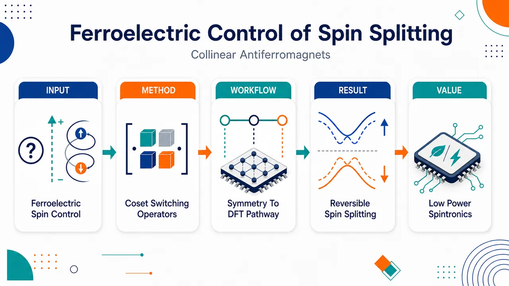
研究问题如何在零净磁矩的共线反铁磁体中，用铁电极化翻转来同步控制非相对论自旋劈裂，并建立一套不受二维材料、面外极化或特定材料个案限制的通用设计规则。创新方法把铁电调控自旋劈裂抽象为对称开关问题：先定义保持电极化 P 与自旋劈裂 Sₖ 不变的“多铁态稳定子群”，再用时间反演-空间反演复合算符 TP 与稳定子群构造左陪集，系统枚举所有可实现 P 与 NRSS 同步反转的开关算符；同时提出“维度/极化方向决定的最小开关集合 + 材料内禀对称性扩展路径”的设计框架。工作流程输入共线反铁磁多铁态及其维度、极化方向、磁/晶体对称性 → 定义两个目标态 (Sₖ, P) 与 (-Sₖ, -P) → 找出不改变 P 和 Sₖ 的稳定子群 R → 构造开关算符集合 T = TP·R → 筛选可实现的滑移、镜面、旋转或纯磁翻转路径 → 用第一性原理计算验证能带自旋劈裂、极化大小和开关势垒。关键结果理论在准一维、二维、三维体系中均得到验证：(6,14)-ZGNRs 的 AB/BA 态实现 ±0.210 pC/m 极化和 ∓42.0 meV 自旋劈裂；二维 Nb3I8 在 Γ 点 VBM 获得 91.5 meV 劈裂、±0.900 pC/m 极化和 136.73 meV/f.u. 滑移势垒；三维 MnSe2 通过内禀对称性找到低能纯磁翻转路径，最大劈裂 38.6 meV、极化 ±0.104 μC/cm²、势垒仅 1.31 meV/f.u.。应用价值为低功耗自旋电子器件提供可筛选、可预测的材料设计蓝图：可在零净磁矩材料中用电场、层间滑移、结构畸变或磁翻转路径控制自旋劈裂，扩展到 AMs、CFiMs、1D/2D/3D 以及面内/面外极化体系，推动无杂散场、抗扰动、多功能磁电器件设计。第一部分：核心概览 (Overview)
建立了面向共线反铁磁体中铁电调控非相对论自旋劈裂（NRSS）的通用群论框架，覆盖交替磁体（altermagnets, AMs）与补偿亚铁磁体（CFiMs），不再局限于二维材料或面外极化。核心贡献在于用多铁态稳定子群与其关于 hatThatP 的陪集系统枚举同步翻转电极化与自旋劈裂的开关算符，并在准一维 (6,14)-ZGNRs、二维 Nb₃I₈、三维 MnSe₂ 中通过第一性原理验证。该框架把零净磁矩材料中的低功耗自旋电子学设计从经验材料搜索推进到可筛选、可预测的对称性设计范式。
---
第二部分：结构化快速回顾
《General Theory for Ferroelectric Control of Spin Splitting in Collinear Antiferromagnets》（None，）
背景
反铁磁体具备超快动力学、抗外磁场扰动、无杂散场等优势，但零净磁化使读写困难。交替磁体与补偿亚铁磁体可在零净磁矩下产生非相对论自旋劈裂（NRSS），为自旋电子学提供新通道。已有铁电调控 NRSS 研究多集中在二维材料与面外极化，材料维度和极化方向受限。
方法
构建基于自旋群理论的通用群论框架。用多铁态稳定子群 hat R 描述保持 ěc P 与 Sěc ₖ 不变的操作，再通过左陪集
hat T={hat t|hat t=hatmathcal Thatmathcal Pḑot hat r,hat rinhat R}
枚举所有可同步翻转极化与 NRSS 的开关算符。进一步按维度与极化方向给出最小开关算符集合。
结果
三类代表体系得到验证：准一维 (6,14)-ZGNRs 中 AB/BA 态最大自旋劈裂为 ∓42.0 meV，面外极化为 ±0.210 pC/m；二维 Nb₃I₈ 中 Γ 点 VBM 最大劈裂 91.5 meV，面外极化 ±0.900 pC/m，势垒 136.73 meV/f.u.；三维 MnSe₂ 中最大劈裂 38.6 meV，极化 ±0.104 μC/cm²，纯磁翻转势垒仅 1.31 meV/f.u.
讨论
内禀晶体对称性可扩展开关算符空间，尤其有利于三维材料；而仅由维度和极化方向决定的最小开关集合更稳健，不依赖具体材料高对称性。框架还能解释由原子位移、电场、结构畸变等外部操作诱导的 NRSS 翻转。
局限
数值验证仅覆盖三个代表体系；部分推导与既有材料对照依赖补充材料。第一性原理结果主要展示对称性可行性与能量势垒，尚未给出实验开关动力学、畴结构、有限温度稳定性、缺陷效应或器件级读写效率。
结论
群论陪集方法给出铁电同步调控 NRSS 的统一设计规则，把 AMs 与 CFiMs、1D/2D/3D、面内/面外极化纳入同一框架，为低功耗多功能自旋电子器件提供可推广的材料筛选与开关路径设计原则。
---
第三部分：逐章节冷凝解析 (Section-by-Section Condensing)
Abstract
- Electrical control of magnetism as the central device motivation
电控磁性被定位为下一代自旋电子学的关键需求，核心问题不是单纯发现磁序，而是实现低功耗、可逆、可设计的磁性控制。原文明确给出应用驱动：*"Electrical control of magnetism is crucial for next-generation spintronics."*
- Existing ferroelectric magnet switching lacks dimensional generality
既有进展已经展示二维磁体中的铁电开关，但跨越不同维度、不同极化方向的统一设计策略仍缺失。关键限制是“二维”和特定极化构型。原文表述为：*"While recent advances have demonstrated ferroelectric switching in two-dimensional magnets, a general design strategy spanning different dimensionalities remains elusive."*
- Group-theoretical framework covers both AMs and CFiMs
核心理论对象是共线反铁磁体，并显式包含两类零净磁矩但可有 NRSS 的体系：交替磁体（AMs）与补偿亚铁磁体（CFiMs）。原文给出范围：*"we develop a group-theoretical framework for achieving ferroelectric control of spin splitting in collinear antiferromagnets, including altermagnets and compensated ferrimagnets."*
- Switching operators provide universal simultaneous reversal pathway
方法学核心是通过对称性分析系统分类开关算符，从而找到同时翻转电极化与非相对论自旋劈裂的通用路径。原文证据为：*"By systematically classifying switching operators through symmetry analysis, we identify a universal pathway for the simultaneous reversal of electric polarization and nonrelativistic spin splitting."*
- Three dimensionality-spanning validations anchor the theory
验证体系覆盖准一维、二维、三维：(6,14) zigzag graphene nanoribbons、Nb₃I₈、MnSe₂。原文列出：*"We validate this approach in three representative systems: quasi-one-dimensional (6,14) Zigzag graphene nanoribbons, two-dimensional Nb3I8, and three-dimensional altermagnetic MnSe2."*
- Design paradigm extends beyond low-dimensional materials
结论层面强调该理论不是个案机制，而是面向磁电器件的通用设计范式，并把材料空间拓展到低维以外。原文表述：*"Our work establishes a versatile design paradigm for magnetoelectric devices and expands the functional landscape of low-power spintronic materials beyond the low-dimensional limit."*
---
Introduction
- Antiferromagnets are attractive yet hard to manipulate
反铁磁体（AFMs）适合自旋电子学，因为具备超快动力学、抗外磁场鲁棒性、几乎无杂散场；但零净磁化导致磁信号检测与操控困难。原文给出双重判断：*"Antiferromagnets (AFMs) offer compelling advantages for spintronic applications, including ultrafast dynamics, robustness against external magnetic fields, and negligible stray fields."* 同时指出局限：*"However, their net zero magnetization makes magnetic signals difficult to detect and manipulate."*
- Altermagnets overcome the zero-net-magnetization readout obstacle via NRSS
交替磁体（AMs）在保持零净磁化的同时产生非相对论自旋劈裂（NRSS），因此为零磁矩体系的自旋读出和操控提供新物理量。原文关键句为：*"altermagnets (AMs) have emerged as materials that retain a net zero magnetization while generating nonrelativistic spin splitting (NRSS), thereby overcoming this limitation."*
- NRSS enables multiple spintronic responses
NRSS 关联的现象包括自旋极化电流、反常霍尔效应、手性磁振子激发、磁光响应。原文列举：*"This unique property gives rise to diverse spintronic phenomena, such as spin-polarized currents, the anomalous Hall effect, chiral magnon excitations, and magneto-optical responses."*
- AMs and CFiMs differ in the origin of zero net moment and symmetry relation
AMs 的磁性子晶格通过特定晶格对称性 hat Rₗ 连接，例如旋转 hat Cₙ 或镜面 hat M；CFiMs 则通过适当能带填充实现零净磁化，但仍可在动量空间承载 NRSS。原文区分为：*"Unlike AMs, where magnetic sublattices are connected by specific lattice symmetry hatRₗ, such as rotational hatCₙ or mirror hatM, the collinear compensated ferrimagnets (CFiMs) achieve zero net magnetization through appropriate band filling, yet still host NRSS in momentum space."*
- CFiMs have multiple realization routes
CFiMs 可通过元素替代、二维范德华材料中的 Janus 结构、交错势等方式实现。原文给出材料策略：*"Both theoretical and experimental studies have demonstrated the realization of CFiMs in diverse material platforms, notably via elemental substitution and in two-dimensional van der Waals materials via strategies such as Janus structures and staggered potentials."*
- Electrical reversal of NRSS is pivotal for efficient unconventional magnetism devices
若要利用非常规磁性做能效器件，必须能电学翻转 NRSS。原文直述：*"To realize energy-efficient devices based on unconventional magnetism, electrical reversal of their NRSS is pivotal."*
- Current-driven switching has intrinsic energy-dissipation limitations
自旋轨道力矩驱动开关虽有进展，但依赖电荷电流注入，效率受限并导致显著能耗。原文证据：*"Despite progress in methods like spin-orbit torque-driven switching, their dependence on charge current injection fundamentally limits efficiency and leads to significant energy dissipation."*
- Multiferroics offer low-power control via polarization switching
多铁材料同时具有铁电与磁有序，可通过铁电极化翻转控制自旋极化，是低功耗替代方案。原文表述：*"multiferroic materials, which exhibit coupled ferroelectric and magnetic orders, offer a promising low‑power alternative by enabling control of spin polarization through ferroelectric polarization switching."*
- Prior ferroelectric NRSS switching studies are too confined
最近已有若干研究展示铁电翻转可高效开关 NRSS，但大多局限于二维材料和面外极化，显著压缩材料搜索空间。原文指出：*"several recent studies have shown that ferroelectric reversal can efficiently switch NRSS."* 以及：*"most works to date have been confined to 2D materials and out-of-plane polarization, significantly restricting the material search space."*
- A dimension- and polarization-general design strategy is the identified gap
需要一种超越特定维度与极化方向的通用策略。原文直接给出科学问题：*"a general design strategy, which transcends specific dimensionalities and polarization orientations, is urgently needed."*
- GTFC unifies AMs and CFiMs within collinear AFMs
GTFC 被定义为面向共线 AFM 自旋劈裂铁电控制的一般理论，覆盖 AMs 与 CFiMs。原文为：*"we establish a general theory for ferroelectric control (GTFC) of spin splitting in collinear AFM, encompassing both AMs and CFiMs."*
- Predictive workflow links switching operators to symmetry-related multiferroic states
框架通过识别不同维度和极化方向下的可行开关算符，预测对称相关多铁态，并建立铁电与 NRSS 同步反转路径。原文说明：*"Our approach systematically identifies feasible switching operators across different dimensionalities and polarization orientations, which enables the prediction of a symmetry-related multiferroic state and the establishment of a switching pathway for synchronous ferroelectric and NRSS reversal."*
- DFT case studies span quasi-1D, 2D, and 3D systems
采用第一性原理计算验证三个代表体系：准一维 (6,14)-ZGNRs、二维 Nb₃I₈、三维 MnSe₂。原文为：*"first-principles calculations are performed on quasi-one-dimensional (1D) (6,14) zigzag graphene nanoribbons, two-dimensional (2D) Nb3I8, and three-dimensional (3D) MnSe2."*
---
Group Theory Analysis of Ferroelectric Control in Multiferroic States
- NRSS reversal under ferroelectric flipping is formulated as a symmetry operation
在多铁态 |Mångle 中，翻转铁电极化 ěc P 并同步反转 NRSS 被表述为一个对称算符问题。自旋劈裂定义为
Sěcₖequivǎrepsiloněcₖp̆arrow-ǎrepsiloněcₖdowⁿarrow。原文明确：*"In a multiferroic state |Mångle, the reversal of NRSS by flipping the ferroelectric polarization ěcP corresponds to a symmetry operator."* 以及：*"Sěcₖequivǎrepsiloněcₖp̆arrow-ǎrepsiloněcₖdowⁿarrow denotes the spin splitting between opposite spin channels along certain paths in the Brillouin zone."*
- Spin-group theory is necessary because SOC is neglected
由于机制讨论忽略自旋轨道耦合（SOC），普通空间群不足以描述自旋与实空间操作的组合关系，必须用自旋群理论。原文依据为：*"Since spin-orbit coupling is neglected, this switching mechanism must be analyzed using spin-group theory, which unifies spin and spatial symmetries."*
- General spin-space operation notation separates spin, lattice, and translation parts
通用操作写作 [gₛ||gₗ|τ]，包含自旋空间操作 gₛ、实空间点群操作 gₗ、平移 τ；若只含点对称则为 [gₛ||gₗ]。原文给出：*"such an operator is denoted as [gₛ||gₗ|τ], combining a spin-space operation gₛ, a real-space point-group operation gₗ, and a translation τ."* 以及：*"A spin point group contains only point symmetries [gₛ||gₗ]."*
- Two multiferroic states are defined by opposite NRSS and polarization
两个可切换多铁态 |M₁ångle 与 |M₂ångle 的序参量分别为 (Sěcₖ,ěc P) 与 (-Sěcₖ,-ěc P)。原文定义：*"Consider the two switchable multiferroic states as ketM₁ and ketM₂, characterized by two order parameters (Sěcₖ,ěcP) and (-Sěcₖ,-ěcP), respectively."*
- The trivial universal switch is combined inversion and time reversal
空间反演 hatmathcal P 与时间反演 hatmathcal T 的复合操作可把 |M₁ångle 映射到 |M₂ångle：
hatmathcal Phatmathcal T|M₁ångle=|M₂ångle。原文写作：*"A trivial operator to switch these states is the composite action of spatial inversion hatP and time reversal hatT: hatPhatTketM₁=ketM₂."*
- Even parity of Sěc ₖ follows from collinear magnetic moments
时间反演使 Sěc ₖ 变为 -S₋ěc ₖ，共线磁矩保证 Sěc ₖ 的偶宇称，即 S₋ěc ₖ=Sěc ₖ，因此得到 -Sěc ₖ。原文给出推导：*"hatTSěcₖ=hatTłeft(ǎrepsiloněcₖp̆arrow-ǎrepsiloněcₖdowⁿarrowi̊ght)=-S₋ěcₖ=-Sěcₖ"*，并说明：*"The even parity of Sěcₖ is ensured by the collinear magnetic moments."*
- Multiferroic stabilizer subgroup contains non-switching operations
稳定子群 hat R 由保持 Sěc ₖ 与 ěc P 不变的操作构成，对任意 hat rinhat R，有 hat r|Mᵢångle=|Mᵢångle。原文定义为：*"we first determine the multiferroic stabilizer subgroup hatR, which maintains ěcSěcₖ and ěcP invariance, ensuring that all operators in hatR do not switch multiferroic states."*
- All switching operators are generated as a left coset
完整开关算符集合通过 hatmathcal Thatmathcal P 关于稳定子群的左陪集得到：
hat Tequiv{hat t|hat t=hatmathcal Thatmathcal Pḑothat r,hat rinhat R}。原文为：*"The complete set of switching operators hatT is then obtained by constructing the left coset of hatR with respect to the combined mathcalhatThatP operator."*
- Every coset element reverses both polarization and NRSS
陪集中的每个算符都可把 |M₁ångle 映射到 |M₂ångle，同步翻转两个序参量。原文给出：*"Every operator in hatT simultaneously reverses both order parameters, mapping ketM₁ to ketM₂."*
- Minimal switching sets depend only on dimensionality and polarization direction
忽略材料内禀对称性后，可得到只依赖动量空间维度 mathcal D 与极化方向 i 的最小稳定子群 hat Rₘₐₜₕcₐₗ D,ᵢ，相应最小开关集合 hat Tₘₐₜₕcₐₗ D,ᵢ 对低对称材料普适。原文指出：*"the minimal multiferroic stabilizer subgroup hatRD,ᵢ is obtained, which depends only on the dimension D of momentum space and the polarization direction i."* 以及：*"This minimal set is universal for systems with low intrinsic symmetry."*
- Intrinsic crystallographic symmetry enlarges switching possibilities
对称性较高材料，尤其 AMs，因存在非平凡内禀对称子群，完整稳定子群会超出最小形式，从而产生更多开关算符，尤其有利于三维材料。原文为：*"In materials with higher intrinsic crystallographic symmetry, such as AMs, the full multiferroic stabilizer group hatR expands beyond this minimal form due to a nontrivial intrinsic symmetry subgroup, thereby broadening the set of available switching operators."* 并强调：*"This expansion provides richer pathways for ferroelectric control, especially in 3D materials."*
- Minimal pathways are fewer but more robust
内禀对称性提供更多路径，但可能被降对称扰动破坏；最小集合由维度与极化方向决定，路径较少但稳健。原文比较为：*"these additional pathways are contingent on specific crystallographic symmetries and may be compromised by symmetry-lowering perturbations."* 以及：*"the minimal switching set hatTD,ᵢ, determined solely by dimensionality and polarization direction, offers fewer but more robust pathways."*
- Table 1 enumerates operators across dimensions and polarization orientations
表 1 给出 1D、2D、3D 非常规磁性中不同极化方向的开关算符。具体包括：
- 1D Pₚₐᵣₐₗₗₑₗ：[-1||hatmathcal P]，[-1||hatmathcal Phat Cₙ]，[-1||hat 2ₚₑᵣₚₕₐₜ Cₙ]
- 1D Pₚₑᵣₚ：[-1||hatmathcal P]，[-1||hat Mₚₑᵣₚ_₁]，[-1||hat 2ₚₐᵣₐₗₗₑₗ]，[-1||hat 2ₚₑᵣₚ_₂]
- 2D Pₚₐᵣₐₗₗₑₗ：[-1||hatmathcal P]，[-1||hat 2ₚₑᵣₚ]
- 2D Pₚₑᵣₚ：[-1||hatmathcal P]，[-1||hat Mₚₑᵣₚ]
- 3D：[-1||hatmathcal P]
表注说明低维极化方向：*"For low-dimensional systems, Pₚₐᵣₐₗₗₑₗ (Pₚₑᵣₚ) denotes polarization parallel (perpendicular) to the periodic direction."*
- DFT validation follows the symmetry derivation
后续三个案例用密度泛函理论验证理论预测。原文列出计算依据：*"first-principles calculations based on density functional theory (DFT) are performed, presenting concrete examples of ferroelectric-controlled NRSS switching across different dimensionalities."*
---
Quasi-1D sliding ferroelectric control in (6,14)-ZGNRs
- ZGNRs provide carbon-based magnetic edge-state spintronics
锯齿型石墨烯纳米带（ZGNRs）具有由锯齿边缘交换相互作用稳定的磁性边缘态，是碳基自旋电子学平台。原文描述：*"Zigzag graphene nanoribbons (ZGNRs) constitute a carbon-based spintronic platform featuring magnetically ordered edge states stabilized by exchange interactions at the zigzag edges."*
- Experimental edge magnetism motivates realistic relevance
磁性边缘态已通过氮钝化边缘和原子级尖锐 Mo-石墨烯界面实验实现。原文为：*"Experimentally, such states have been realized via nitrogen-passivated edges and atomically sharp Mo-graphene interfaces."*
- Mismatched bilayer widths enable sliding ferroelectric NRSS control
采用上下层锯齿宽度不匹配的双层 ZGNR，通过滑移铁电性同步开关 NRSS 与电极化。原文给出策略：*"we demonstrate a novel approach to control bilayer ZGNRs with mismatched zigzag widths, utilizing sliding ferroelectricity to achieve synchronous switching of both NRSS and electrical polarization."*
- The specific system is (6,14)-ZGNRs with AFM interlayer preference
上下层链数记为 (n,m)，实际选用 (6,14)-ZGNRs；层间 AFM 构型相对 FM 构型低 0.43 meV per cell。原文数据为：*"The (6,14)-ZGNRs, in which the interlayer AFM coupling is energetically favorable over the FM configuration by 0.43 meV per cell, exhibit a lower sliding barrier."*
- AA stacking is nonpolar conventional AFM with protected spin degeneracy
AA 堆垛为高能、非极性、常规 AFM 态，其自旋能带简并由 [-1||hat M₁₀₀] 保护。原文为：*"The AA stacking configuration, which is a higher-energy, nonpolar conventional AFM, hosts degenerate spin bands protected by the combined symmetry [-1||hatM₁₀₀]."*
- Sliding breaks [-1||hat M₁₀₀] and creates CFiM with NRSS
从 AA 态沿负 a 轴滑移上层会破坏 [-1||hat M₁₀₀] 对称性，形成标记为 AB 堆垛的 CFiM 态并出现 NRSS。原文描述：*"Sliding the top layer along the negative direction of the a-axis from the AA stacking breaks the [-1||hatM₁₀₀] symmetry, driving the system into a CFiM state, labeled AB stacking, that exhibits NRSS."*
- Sliding also breaks inversion and generates ferroelectric polarization
滑移显式破坏空间反演，使体系获得电极化并形成多铁态。原文证据：*"This sliding explicitly breaks spatial inversion, endowing the system with an electric polarization and thus establishing a multiferroic state."*
- AB and BA are connected by [-1||hat M₁₀₀]
根据表 1，[-1||hat M₁₀₀] 作用于 AB 态产生对称相关伴随态，伴随态具有反转的面内极化与 NRSS；从滑移视角该伴随态是 BA 堆垛。原文为：*"applying the switching operator [-1||hatM₁₀₀] to this AB state generates a symmetry-related partner state with simultaneously reversed in-plane polarization and NRSS."* 以及：*"this partner state corresponds to BA stacking."*
- AB and BA are degenerate ground states lower than AA
AB 与 BA 是两个简并 CFiM 基态，比 AA 相低 30.16 meV/f.u.。原文数据：*"These two degenerate CFiM ground states, AB and BA stacking, are energetically favorable over the AA phase by 30.16 meV/f.u.."*
- Edge moments are small but well-defined
计算边缘磁矩为 0.137±0.001 μ_B。原文给出：*"The calculated edge magnetic moment is 0.137± 0.001 μB."*
- Spin splitting and polarization reverse as symmetry predicts
AB 与 BA 在 VBM 处最大自旋劈裂为 ∓42.0 meV；面外极化分别为 ±0.210 pC/m；二者共享面内极化 −0.013 pC/m。原文数据为：*"The AB and BA stackings exhibit a maximum spin splitting of mp 42.0 meV at the valence band maximum (VBM) and out-of-plane polarizations of ± 0.210 pC/m, respectively, while both share a common in-plane polarization of -0.013 pC/m."*
- Polarization parity along sliding path validates Table 1
沿滑移路径，面内极化对滑移坐标呈奇宇称，面外分量呈偶宇称，与表 1 的对称性预测一致。原文证据：*"the in-plane polarization displays odd parity while the out-of-plane component shows even parity as a function of the sliding coordinate, in full agreement with the symmetry-based predictions in Table 1."*
- In-plane electric field can manipulate NRSS through sliding
由于可逆滑移和面内极化耦合，面内电场可作为操控 NRSS 的直接手段。原文总结：*"These findings indicate that an applied in-plane electric field may provide a direct means to manipulate the NRSS via the interlayer sliding mechanism."*
---
2D sliding ferroelectric control in Nb₃I₈
- Nb₃I₈ is an experimentally realized breathing-kagome van der Waals magnet
Nb₃I₈ 是具有呼吸 kagome 晶格的范德华层状过渡金属卤化物，已有块体和少层实验实现。原文为：*"Nb3I8 is a van der Waals layered transition-metal halide featuring a breathing-kagome lattice, which has been experimentally realized in bulk and few-layer forms."*
- Monolayer and bilayer magnetism make Nb₃I₈ a multistate platform
单层 Nb₃I₈ 具有室温铁磁性，居里温度约 307 K；双层表现出堆垛依赖的层间 AFM 与滑移铁电性，可实现多态极化 AFM。原文给出：*"Its monolayer exhibits room-temperature ferromagnetism with a Curie temperature about 307 K."* 以及：*"its bilayer shows stacking-dependent interlayer antiferromagnetism coupled with sliding ferroelectricity, enabling tunable multiple-state polarized AFM."*
- Head-to-head antiferroelectric bilayer is chosen for stronger polarization
双层 Nb₃I₈ 构造成头对头反铁电构型，其极化强于尾对尾构型。原文说明：*"A bilayer Nb3I8 system is constructed in the head-to-head antiferroelectric configuration, as shown in Fig. 3(a), which exhibits stronger polarization than its tail-to-tail counterpart."*
- AA-stacked bilayer has Kramers degeneracy protected by [-1||hat M₀₀₁]
与 (6,14)-ZGNRs 类似，AA 堆垛双层 Nb₃I₈ 的 Kramers 简并由 [-1||hat M₀₀₁] 保持。原文为：*"the Kramers degeneracy in AA-stacked bilayer Nb3I8 is preserved by the symmetry [-1||hatM₀₀₁]."*
- Sliding directions break symmetry and create multiferroic CFiM states
沿 (-1/3,1/3) 或 (1/3,-1/3) 方向的层间滑移破坏 AA 堆垛中的该对称性，形成具有稳定 NRSS 和有限面外电极化的 CFiM 多铁相。原文证据：*"interlayer sliding along the (-1/3,1/3) or (1/3,-1/3) direction breaks this symmetry present in the AA stacking."* 以及：*"This symmetry breaking drives the system into CFiM states exhibiting stable NRSS and induces a finite out-of-plane electric polarization, thereby establishing multiferroic phases."*
- AB and BA are linked by [-1||hat M₀₀₁] and reverse both observables
AB 与 BA 堆垛由 [-1||hat M₀₀₁] 连接，保证面外极化与 NRSS 同步反转。原文为：*"the resulting AB and BA stackings are connected by the [-1||hatM₀₀₁] operator, which guarantees the synchronous reversal of both the out-of-plane polarization and the NRSS between these two degenerate multiferroic states."*
- Nb magnetic moment is 0.265±0.002 μ_B per Nb
第一性原理计算给出每个 Nb 离子的磁矩为 0.265±0.002 μ_B。原文数据：*"Our first-principles calculations yield a magnetic moment of 0.265± 0.002 mathrmμB per Nb ion."*
- VBM spin splitting reaches 91.5 meV at Γ
Γ 点 VBM 最大自旋劈裂为 91.5 meV，明显大于 ZGNR 案例中的 42.0 meV。原文数据：*"the VBM at Γ exhibits a maximum spin splitting of 91.5 meV."*
- Out-of-plane polarization is ±0.900 pC/m
AB 与 BA 态面外极化为 ±0.900 pC/m。原文为：*"The out-of-plane polarization is ± 0.900 pC/m for the AB (BA) state."*
- Switching barrier is 136.73 meV/f.u.
滑移开关势垒为 136.73 meV/f.u.。原文给出：*"The energy barrier for switching is calculated to be 136.73 meV/f.u.."*
- Out-of-plane electric field can control NRSS
可逆面外极化意味着可用面外电场控制 NRSS。原文总结：*"This reversible out-of-plane polarization directly implies that the NRSS can likewise be controlled by an out-of-plane electric field."*
---
3D ferroelectric control in MnSe₂
- MnSe₂ is a representative supercell altermagnet
MnSe₂ 被作为三维超胞交替磁体代表，磁序传播矢量为 (0,±1/3,0)，沿 b 轴包含六层 Mn-Se 层。原文为：*"MnSe2 is a representative supercell altermagnet characterized by a magnetic order with propagation vector (0,± 1/3,0) and consisting of six Mn-Se layers along the b-axis."*
- Nonmagnetic phase is centrosymmetric Pa-3
非磁相具有中心对称空间群 Paøverline3 (No.205)。原文给出：*"Its nonmagnetic phase is centrosymmetric with space group mathrmPaøverline3 (No.205)."*
- Experimentally determined magnetic order defines state 1
采用中子散射实验确定的 MnSe₂ 磁序作为 state 1，其磁空间群为 Pca′2₁′。原文证据：*"We take the magnetic order of MnSe2 determined by neutron scattering experiments as state 1, which belongs to magnetic space group mathrmPcaprⁱme2₁prⁱme."*
- Intrinsic stabilizer symmetry is [-1||hat M₀₁₀]
state 1 具有内禀对称算符 hat r=[-1||hat M₀₁₀]，属于多铁稳定子群。原文为：*"It hosts an intrinsic symmetry operator hatr=[-1||hatM₀₁₀], which belongs to the multiferroic stabilizer group."*
- Magnetic order breaks inversion and induces type-II multiferroicity
磁序破坏空间反演，使体系成为II 型多铁体，极化由磁序诱导。原文依据：*"This magnetic order breaks spatial inversion symmetry, rendering the system a type-II multiferroic with a magnetically induced polarization."*
- GTFC predicts a nontrivial switching operator [1||hat 2₀₁₀]
根据 GTFC，连接两个简并多铁态的开关算符为
hat t=hatmathcal Thatmathcal Pḑothat r=[1||hat2₀₁₀]。原文公式：*"the switching operator that connects two degenerate multiferroic states follows directly as hatt=mathcalhatThatPḑothatr=[1||hat2₀₁₀]."*
- State 2 is symmetry-related, degenerate, and has the same magnetic space group
hat t 作用于 state 1 预测出 state 2，二者对称相关、能量简并，并具有相同磁空间群。原文为：*"Applying hatt to state 1 predicts a symmetry related partner, state 2, which shares the same magnetic space group and is energetically degenerate with state 1."*
- Ionic-displacement pathway is energetically prohibitive
固定磁序并移动配位 Se 离子的开关路径势垒约 1 eV，能量过高。原文数据：*"One path, which fixes the magnetic order and displaces the coordinated Se ions, yields a prohibitively high energy barrier (sim1 eV)."*
- Pure magnetic moment flipping gives a low barrier
另一条路径只翻转第 2 和第 5 个 Mn-Se 层上的磁矩，保持离子框架不变，避免晶格畸变的大能量成本。原文机制为：*"The alternative path flips only the magnetic moments on the second and fifth Mn-Se layers while preserving the ionic framework, thereby avoiding lattice distortions and the associated large energy cost."*
- Pure magnetic pathway barrier is only 1.31 meV/f.u.
纯磁开关路径势垒为 1.31 meV/f.u.，显示理论预测路径具有物理可达性。原文给出：*"This purely magnetic pathway yields a low barrier of 1.31~meV/f.u., demonstrating the physical accessibility of the predicted switching mechanism."*
- Band splitting reaches 38.6 meV along R–Γ
state 1 和 state 2 沿 R–Γ 方向最大能带劈裂为 38.6 meV。原文数据：*"they show a maximum band splitting of 38.6 meV along the R–Γ direction."*
- Polarization reverses along the b-axis with magnitude ±0.104 μC/cm²
两个态沿 b 轴具有相反极化，数值为 ±0.104 μC/cm²。原文为：*"opposing polarizations of ± 0.104~μC/cm² along the b-axis."*
- 3D case demonstrates the added value of intrinsic symmetry
MnSe₂ 案例显示，三维材料虽在最小表 1 中开关集合较少，但内禀对称性可产生有效低能开关路径。原文总结：*"The low-energy switching of NRSS via magnetoelectric coupling in MnSe2 demonstrates the power of our symmetry based framework, which provides a general guide for designing control pathways in diverse collinear magnets."*
---
Summary and discussion
- A general symmetry theory for collinear AFM spin-splitting control is established
理论目标是实现共线反铁磁体中自旋劈裂的铁电控制。原文总结：*"we have developed a general symmetry-based theory for achieving ferroelectric control of spin splitting in collinear antiferromagnets."*
- Stabilizer group decomposition enables systematic enumeration
通过把多铁态稳定子群分解为维度依赖部分和材料内禀部分，可系统枚举所有同步反转极化与自旋纹理的开关算符。原文为：*"By decomposing the stabilizer group of multiferroic states into dimensionality-dependent and material-intrinsic components, we systematically enumerate all possible switching operators that simultaneously reverse polarization and spin texture."*
- Design space extends beyond 2D out-of-plane-polarization systems
统一框架可预测极化与 NRSS 耦合反转，并显著扩展出传统二维面外极化研究之外的设计空间。原文为：*"Our work provides a unified framework for predicting the coupled reversal of polarization and NRSS, thereby extending the design space far beyond the widely studied 2D systems with out-of-plane polarization."*
- Three previously unreported mechanisms are predicted and validated
在 (6,14)-ZGNRs、Nb₃I₈、MnSe₂ 三个此前未报道材料中预测铁电开关机制，并通过第一性原理验证。原文表述：*"we predict ferroelectric switching mechanisms in three unreported materials: (6,14)-ZGNRs, Nb3I8, and MnSe2, which are subsequently validated by our first-principles calculations."*
- Framework generalizes beyond the demonstrated mechanisms
群论框架不仅适用于展示的三条路径，也能发现和设计更多具有 NRSS 的共线 AFM 铁电可切换路径。原文为：*"the group-theoretical framework established here provides a versatile roadmap for discovering and designing ferroelectric switchable pathways for these collinear AFMs with NRSS beyond the demonstrated mechanisms."*
- Other external-operator-driven NRSS switching can be unified
该框架也解释由特定原子位移、电场控制等外部算符驱动的 NRSS 翻转。原文指出：*"it also offers a unified symmetry-based explanation for NRSS switching driven by other external operators, such as specific atomic displacements and electric field control."*
- Symmetry screening and unexplored pathways are enabled
理论可指导候选材料的对称性筛选，并提示未探索路径，包括离子位移、降对称结构畸变、低维和三维系统、以及非极性点群中磁诱导铁电情形。原文为：*"It naturally guides the search for candidate materials through symmetry screening, and suggests unexplored switching pathways, such as those mediated by ionic displacements or symmetry-lowering structural distortions, in both low-dimensional and 3D systems, including those with nonpolar point groups where ferroelectricity is magnetically induced."*
- Device-level implication is low-power multifunctional spintronics
最终定位是为利用铁电性与具有 NRSS 的共线 AFM 耦合的低能耗多功能自旋电子器件提供基础设计原则。原文总结：*"this work lays a foundational design principle for the development of energy-efficient, multifunctional spintronic devices harnessing the interplay between ferroelectricity and collinear AFMs with NRSS."*
---
Acknowledgments
- Funding sources are concentrated in Chinese national, regional, and foundation programs
经费支持包括国家重点研发计划 2022YFA1402901、国家自然科学基金 12188101、上海科技计划 23JC1400900、广东重大基础与应用基础研究项目 2021B0301030005、上海基础研究试点计划—复旦大学 21TQ1400100 / 23TQ017、中科院 robotic AI-Scientist 平台、新基石科学基金会。原文列出：*"We acknowledge financial support from the National Key R&D Program of China (No. 2022YFA1402901), NSFC (grants No. 12188101), Shanghai Science and Technology Program (No. 23JC1400900)..."*
---
第四部分：深度理解与语言支持 (Understanding & Nuance)
1. 术语解析
Nonrelativistic spin splitting (NRSS)
学术含义：不依赖自旋轨道耦合的自旋能带劈裂，即在忽略 SOC 时，上下自旋通道仍具有不同能量 ǎrepsiloněc ₖp̆arrow≠ǎrepsiloněc ₖdowⁿarrow。这里定义为
Sěcₖ=ǎrepsiloněcₖp̆arrow-ǎrepsiloněcₖdowⁿarrow。
微妙差别：传统 Rashba/Dresselhaus 劈裂通常依赖 SOC 和反演对称破缺；NRSS 更接近由磁性子晶格、交换相互作用和晶体/自旋群对称性共同允许的劈裂。
Altermagnets (AMs)
学术含义：零净磁矩但具有动量依赖自旋劈裂的反铁磁类材料。其磁性子晶格由特定晶格对称操作连接，如旋转或镜面。
微妙差别：AMs 不同于普通共线 AFM；普通 PT 对称 AFM 往往保持自旋简并，而 AMs 因特定对称结构可在无 SOC 下出现自旋劈裂。也不同于铁磁体，因为净磁化仍为零。
Compensated ferrimagnets (CFiMs)
学术含义：通过不同磁性子晶格或能带填充实现总磁矩补偿为零的亚铁磁体。
微妙差别：CFiMs 中磁性子晶格不一定由 AMs 所需的晶格对称操作严格连接，零净磁矩更多来自“补偿”而非反铁磁等价性；因此在低对称情形下也可能拥有 NRSS。
Multiferroic stabilizer subgroup
学术含义：保持多铁态中所有相关序参量不变的对称操作集合，即同时不改变 ěc P 和 Sěc ₖ 的操作。
微妙差别：它不是完整晶体空间群，也不是单独磁群；它只保留对当前多铁态“无作用”的对称操作。用它生成陪集后，才能得到所有“会切换”的操作。
Switching operator
学术含义：把一个多铁态映射到另一个多铁态的对称操作，在这里要求同步实现
(Sěc ₖ,ěc P)i̊ghtarrow(-Sěc ₖ,-ěc P)。
微妙差别：它未必是材料当前态的对称性；若是稳定子群元素，则不会切换状态。真正开关算符来自 hatmathcal Thatmathcal P 与稳定子群的陪集。
---
2. 疑难查证：复杂概念解释
为什么 hatmathcal Thatmathcal P 能作为“平凡开关”起点？
时间反演 hatmathcal T 会翻转自旋，因此上下自旋能量差变号；空间反演 hatmathcal P 会翻转极化 ěc P。在共线磁体中，Sěc ₖ 对 ěc k 是偶函数，因此
hatmathcal TSěc ₖ=-S₋ěc ₖ=-Sěc ₖ。
于是 hatmathcal Thatmathcal P 同时完成
Sěc ₖi̊ghtarrow -Sěc ₖ 和 ěc Pi̊ghtarrow-ěc P。
它是“起点”，不是说实际材料一定直接通过全局 PT 操作开关，而是用来生成所有与稳定子群组合后的等价开关操作。
为什么要用陪集 hat T=hatmathcal Thatmathcal Phat R？
稳定子群 hat R 中的每个操作都不改变当前多铁态。若 hatmathcal Thatmathcal P 已经能把态 1 切到态 2，那么在它后面或前面接一个“不改变态 1 内部物理量”的稳定子操作，仍会得到一个有效切换操作。
这就是群论中陪集的物理含义：所有等价但形式不同的开关路径。
为什么内禀对称性既有利又脆弱？
高对称材料中，稳定子群更大，所以 hatmathcal Thatmathcal Phat R 产生更多开关算符，开关路径更丰富。例如 MnSe₂ 中的 hat r=[-1||hat M₀₁₀] 使得非平凡开关算符 [1||hat2₀₁₀] 出现。
但这些额外路径依赖特定晶体对称性。若应变、缺陷、界面、衬底或畴壁降低对称性，相关操作可能不再有效。相比之下，由维度与极化方向决定的最小集合不依赖具体材料高对称性，更稳健但选择较少。
为什么 MnSe₂ 中“纯磁开关”也属于铁电/磁电控制相关路径？
MnSe₂ 是 II 型多铁体，极化由磁序诱导。翻转特定 Mn-Se 层磁矩会改变磁序对称性，从而反转磁诱导极化和 NRSS。
因此开关路径不一定要求离子先发生铁电位移；在磁诱导铁电体系中，改变磁结构本身就能翻转极化。其能量势垒 1.31 meV/f.u. 远低于移动 Se 离子的 约 1 eV 路径，说明真正可行的低能路径可能是磁性的。
---
第五部分：创新评估与关联 (Synthesis & Novelty)
1. 创新性判断
从材料个案走向通用群论设计规则
过去 2–5 年相关研究主要集中在特定二维材料中展示铁电翻转 NRSS，例如二维 AMs、Janus 结构、滑移铁电双层、外电场诱导结构变化等。共同特点是机制依赖具体材料和具体极化方向。
该工作的新颖性在于把问题抽象为：
[
(Sěc ₖ,ěc P)i̊ghtarrow(-Sěc ₖ,-ěc P)
]
的对称算符枚举问题，用稳定子群和陪集一次性生成所有可行开关算符。这样从“发现一个材料现象”提升为“给定维度、极化方向、内禀对称性即可设计开关路径”。
突破二维面外极化限制
已有研究多局限在二维材料和面外极化。该框架显式覆盖：
- 准一维：如 (6,14)-ZGNRs；
- 二维：如 Nb₃I₈；
- 三维：如 MnSe₂；
- 面内极化与面外极化；
- 滑移铁电与磁诱导铁电；
- CFiMs 与 AMs。
最重要的突破是把三维共线磁体纳入铁电调控 NRSS 的系统设计空间。
统一 AMs 与 CFiMs
AMs 中磁性子晶格由对称操作连接；CFiMs 中零净磁矩来自补偿和能带填充，未必有这种连接。此前两者常被分开讨论。
该理论用 Sěc ₖ 和 ěc P 两个序参量统一描述二者，使 AMs 与 CFiMs 都能通过同一开关算符逻辑进行筛选。
提出“最小集合 + 内禀扩展”的双层设计思想
最小开关集合 hat Tₘₐₜₕcₐₗ D,ᵢ 只依赖维度与极化方向，适合低对称材料；内禀对称性则进一步扩展路径，适合高对称 AMs 或三维复杂磁体。
这种分层设计思想解决了一个关键难题：如何在低对称材料中保留稳健路径，同时在高对称材料中利用额外对称性寻找更低能开关。
三维 MnSe₂ 案例展示非显然低能路径
MnSe₂ 的创新意义尤其强：离子位移路径势垒约 1 eV，看似不适合铁电开关；但群论预测的 [1||hat2₀₁₀] 对应只翻转第 2 和第 5 层磁矩，势垒降至 1.31 meV/f.u.。
这说明对称性框架不仅能判断“能不能开关”，还能启发“哪条路径能量最低”。
解决的前人未解决问题
核心解决了四个前人未系统解决的问题：
- 如何跨维度枚举铁电调控 NRSS 的开关操作；
- 如何同时处理 AMs 与 CFiMs；
- 如何把极化方向纳入设计规则，而不是只研究面外极化二维体系；
- 如何从材料内禀对称性推导未显然可见的低能开关路径。
-
15
📊 含图深析
💡 亮点：氧空位供电子会降低 V 掺杂 HfO2 中 V 价态。
📖 展开分析 + 配图
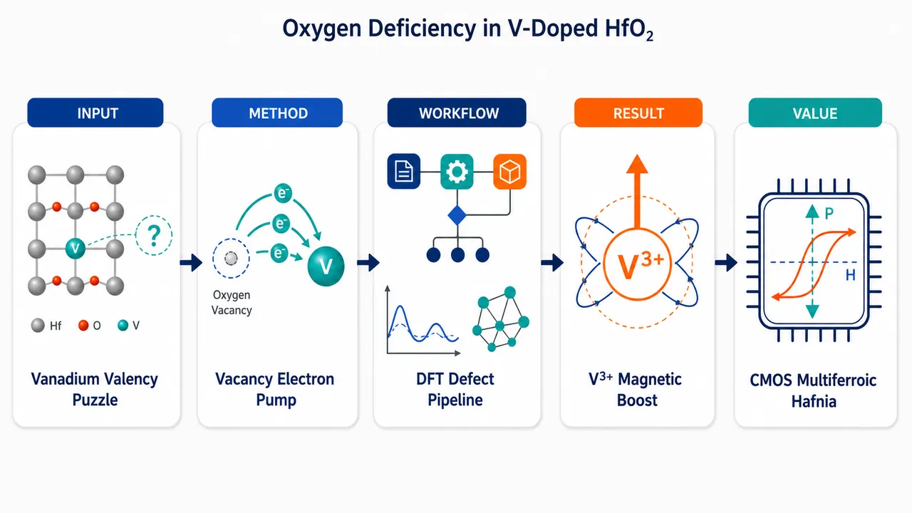
研究问题V 掺杂铁电正交相 Pca2₁-HfO₂ 中，实验观察到 V³⁺/V⁴⁺≈2.8 的多价态共存和磁性增强；核心问题是：氧空位能否作为电子施主，把 V⁴⁺还原为 V³⁺，并解释 XPS 峰位、局域磁矩和多铁性？若 ALD 生长偏富氧，额外电子究竟从哪里来？创新方法用第一性原理 DFT+U 将“氧空位 X—V 多数自旋带隙态”构造成供体—受体图像：氧空位提供两个电子，电子从高能空位态落入低能 V 带隙态，每个电子获得约 1.5–2 eV 能量，使 V⁴⁺→V³⁺、磁矩 1 μB→2 μB，并用 V 2p₃/₂ 核能级位移同步标定价态；关键 Aha 点是氧空位不是被动缺陷，而是驱动价态重构和磁化增强的电子泵。工作流程输入铁电 Pca2₁-HfO₂ 的 96 原子 2×2×2 超胞；用 V 替代 Hf，并加入 1–2 个氧空位 X，构造 VₙXₖ 紧凑簇与稀疏构型；通过 VASP、PAW、PBE+U、自旋极化计算优化结构、能带、态密度、磁矩、氧空位形成能和 V 核能级位移；再用氧化学势 μO、电子化学势 μe 和缺陷形成能统计 [V]、[X]；最后输出 V³⁺/V⁴⁺ 比例、XPS 指纹、磁化增强和对 V/Cr 掺杂 HfO₂ 多铁性的解释。关键结果氧空位电子自发转移到低能 V 多数自旋带隙态，使一个 X 通常把两个 V⁴⁺还原为两个 V³⁺；V₄X 中氧空位形成能相对孤立空位降低 4.8 eV，两个 V 的磁矩升至约 1.98 μB，V 2p₃/₂ 核能级位移约 +1.97 eV，与 V³⁺ XPS 峰吻合；少量 V⁵⁺ 可由内部电荷重排解释；但仅靠氧空位复现实验 V³⁺/V⁴⁺≈2.8 需要 δμO≈−2.824 eV 的强还原条件，而 ALD 合理条件约 δμO≈−0.1 eV，暗示存在隐藏电子库。应用价值揭示 hafnia 基 CMOS 兼容多铁材料中“氧缺陷—过渡金属价态—磁矩—铁电保持”的微观机制，为通过调控氧化学势、氧空位和外源施主设计 V:HfO₂、Cr:HfO₂ 等室温多铁薄膜提供依据；同一机制还能定量解释 Cr:HfO₂ 中约 60 emu/cm³ 的实验磁化，推动铁电存储、磁电器件和低功耗多功能氧化物电子学材料开发。第一部分：核心概览 (Overview)
V 掺杂正交铁电 Pca2₁-HfO₂ 中，氧空位 X 与 V 多价态 形成强耦合：氧空位作为双电子施主，把电子转移到更低能的 V 多数自旋带隙态，使 V⁴⁺ → V³⁺，同时显著降低氧空位形成能、增强局域磁矩，并产生与 XPS 相符的 V 核能级位移。计算表明，仅靠氧空位解释实验 V³⁺/V⁴⁺≈2.8 需要强还原生长条件，而 ALD 条件通常偏富氧，暗示存在隐藏电子库。该机制也解释了 Cr 掺杂 HfO₂ 中氧缺陷辅助的室温多铁性，推动了 hafnia 基 CMOS 兼容多铁材料的微观机制理解。
---
第二部分：结构化快速回顾
《Oxygen deficiency and valency reconstruction in multiferroic V-doped HfO₂》（None，）
背景
多铁材料同时具有铁电性与铁磁性，天然稀少。铁电 Pca2₁-HfO₂ 经 V 或 Cr 掺杂后成为潜在 CMOS 兼容多铁体系。实验中 V:HfO₂ 出现 V³⁺ 与 V⁴⁺ 共存，比例约 2.8，但其电子来源与氧缺陷作用尚未澄清。
方法
采用 第一性原理 DFT，具体为 VASP 6.5、PAW、PBE-GGA+U、U−J=3 eV，在 96 原子 2×2×2 Pca2₁ 超胞中研究不同 V 数量与 1–2 个氧空位组合。极化用 Berry phase，结构优化力阈值 0.02 eV/Å，k 点为 2×2×2。
结果
氧空位 X 的双施主电子转移至低能 V 带隙态，每个电子带来约 1.5–2 eV 能量收益；以 V₄X 为例，氧空位形成能相比孤立空位降低 4.8 eV。V 局域磁矩从 1 μB 增至 2 μB 对应 V⁴⁺→V³⁺，核能级位移约 +2 eV，与 XPS 指认一致。
讨论
仅由氧空位决定的 V³⁺/V⁴⁺ 比例只有在 δμO≈−2.824 eV 的强还原条件下才能达到实验值；而 ALD 生长中 TEMAH/TEMAV、水、臭氧体系通常无明显还原剂，合理 δμO≈−0.1 eV，因此可能存在碳/氮残留、氢或其他外源施主。
局限
构型搜索受限于有限超胞与有限簇模型；熵项被忽略；只显式考虑 k=0,1,2 个氧空位，VnX₃ 因能量不利而排除；ALD 中隐藏电子库未被直接识别。
结论
氧空位诱导的价态重构是 V:HfO₂ 中 V³⁺、局域磁增强和 XPS 谱特征的核心机制，但实验比例暗示氧空位之外还有电子供体。Cr:HfO₂ 中类似的氧缺陷—过渡金属耦合可解释其强磁化与多铁性。
---
第三部分：逐章节冷凝解析 (Section-by-Section Condensing)
Abstract
- Oxygen vacancies drive valency reconstruction
V 掺杂 Pca2₁-HfO₂ 中的核心物理过程是氧缺陷与V 多价态耦合。氧空位作为电子施主，把电子转移给低能 V 多数自旋带隙态，从而降低缺陷形成能并改变 V 价态。关键表述为：*"Low-lying V majority gap states accept electrons from oxygen-vacancy donors, reducing their formation energy, and converting nominal V4+ centers into V3+."* 这里的 formation energy 降低直接意味着氧空位在 V 附近更容易形成。
- Core-level shifts validate the local electronic picture
计算得到的局域磁矩变化与屏蔽变化反映在 V 核能级位移中，并与实验 XPS 指纹一致。直接证据为：*"The resulting local magnetization and screening changes are reflected in the calculated V core-level shifts, which are consistent with the experimentally observed XPS signatures."* 因此，V³⁺/V⁴⁺ 不只是形式电荷标记，而是同时被磁矩和核能级位移支持的局域电子态分类。
- Oxygen vacancies alone are insufficient under ALD-like conditions
仅用氧空位决定的 V³⁺/V⁴⁺ 比例只在还原条件下匹配实验；ALD 生长条件下可能有额外电子来源。原始判断为：*"The calculated V3+/V4+ population ratio determined by oxygen vacancies only matches experiment in reducing conditions, suggesting that additional electron reservoirs may contribute under ALD growth conditions."* 这将问题从“氧空位是否存在”推进到“电子库究竟来自何处”。
- Cr-doped hafnia follows an analogous mechanism
类似机制可推广到 Cr 掺杂 HfO₂。摘要中明确指出：*"A similar scenario also seems to apply to the recently observed multiferroicity in Cr-doped hafnia, where oxygen deficiency is intrinsic to the growth technique."* Cr:HfO₂ 的生长方式天然带来氧缺陷，因此比 ALD V:HfO₂ 更自然地满足电子补偿条件。
---
I Introduction
- Multiferroicity in hafnia is a rare and technologically relevant target
多铁材料因同时具备铁电性和铁磁性而稀缺，HfO₂ 基体系提供了兼容半导体工艺的路径。开篇判断为：*"Multiferroic materials, exhibiting ferroelectricity and ferromagnetism, are rare."* 近期路线是将 V 掺入铁电正交相 Pca2₁-HfO₂，即：*"Recently [1] a promising route to multiferroicity was proposed, via doping of ferroelectric hafnia (orthorhombic Pca21 HfO2) with vanadium (V)."*
- Experimental V:HfO₂ shows V³⁺/V⁴⁺ coexistence rather than pure V⁴⁺
理想替位模型中，V 替代 Hf⁴⁺ 时名义上为 V⁴⁺，因为 V 比 Hf 多一个价电子；但实验 XPS 显示 V 同时呈 3+ 和 4+。关键句为：*"As a substitution for Hf in otherwise perfect hafnia ... V is by construction a nominal 4+ ion with one electron in excess over Hf."* 实验事实为：*"Experiment [2] showed that V adopts both 3+ and 4+ valency, with a population ratio of about 2.8 around 6% concentration [4]."* 这构成论文的主要待解问题：额外电子从哪里来，使部分 V⁴⁺ 变为 V³⁺。
- Vanadium’s flexible valency makes oxygen vacancy compensation plausible
V 可根据氧化环境呈现多价态，包括 2+、3+、4+、5+。原文指出：*"V has multiple valency, i.e. it can deploy different numbers of electrons in different environments, and it can act as a 2+, 3+, 4+, and 5+ ion."* 在氧化物化学中，随着氧可用性增加，形成 V₂O₃、VO₂、V₂O₅ 等不同化合物；因此 V:HfO₂ 中 V 捕获氧空位电子具有化学直觉基础。
- Oxygen vacancies and V centers are energetically cooperative
Hf 在 HfO₂ 中稳定为 Hf⁴⁺，而 V 可捕获施主电子转化为 V³⁺；反过来，V 的存在降低氧空位这种高能缺陷的代价。核心推理为：*"V embedded in hafnia –whose Hf cations act unflinchingly as 4+ ions– could adopt a 3+ state capturing electrons from donors, for example O vacancies; reciprocally, the presence of V could make those costly defects affordable."* 这一定义了 donor–acceptor energetic cooperation：氧空位供电子，V 低能态受电子，双方共同降能。
- Core-level shifts and local magnetization distinguish nominal valencies
V³⁺ 与 V⁴⁺ 的识别不只依赖形式电荷，而可由局域磁矩与XPS 核能级位移交叉验证。原文强调：*"the nominally 3+ and 4+ states need to be characterized, and it so happens that core level shifts and local magnetization naturally allow to identify them unambiguously."* 这为后续用磁矩 M=1、2、3、0 分别对应 V⁴⁺、V³⁺、V²⁺、V⁵⁺奠定基础。
- Cr-doped hafnia motivates a broader mechanism
V 与 Cr 相邻，且 Cr:HfO₂ 近期已观测到多铁性，因此 V–氧空位机制可能具有可迁移性。引导句为：*"The results also shed light on the recently observed multiferrocity in hafnia [3] doped with Cr, which neighbors V in the Periodic Table."* 这里的科学意义是从单一 V:HfO₂ 扩展到早期过渡金属掺杂 HfO₂ 多铁族。
---
II Methods
- DFT framework follows prior V:HfO₂ work but adds oxygen vacancies
计算对象是 V 替位 Hf 的铁电 HfO₂，并显式加入氧空位。原文说明：*"observables are obtained from first principles within density functional theory for multiple configurations of V substituting for Hf in ferroelectric HfO2, together with oxygen vacancies."* 为避免与元素氧混淆，氧空位记为 X：*"the oxygen vacancy is denoted by X in this paper."*
- Computational implementation uses VASP, PAW, and a 350 eV cutoff
计算使用 VASP v.6.5 与 PAW 方法，赝势数据集为 V、Hf、Oₛ，截断能为 350 eV，即推荐最大截断的 1.3 倍。关键细节为：*"The VASP code (v.6.5) [5] and the PAW formalism [6] are used, with the datasets V, Hf and Os at a cutoff of 350 eV (1.3 times the maximum recommended cutoff)."*
- Ferroelectric polarization is computed by the Berry-phase method
极化不是用点电荷近似，而采用现代极化理论中的 Berry-phase method。原文为：*"The polarization is obtained by the Berry-phase method [7]."* 这对于铁电 HfO₂ 尤其重要，因为极化是体相电子结构的几何相性质。
- Spin-polarized PBE+U captures localized V d states
电子结构计算采用自旋极化 GGA+U，交换关联泛函为 PBE，Hubbard 校正采用 Dudarev 形式。原文为：*"The density-functional calculations are spin-polarized GGA+U, generalized gradient PBE [8] functional and Hubbard U corrections in the Dudarev version [9]."* 只对 V d 态施加 U−J=3 eV：*"The Hubbard correction is U–J=3 eV on V d states only."* 该设置被称为标准且经杂化泛函比较验证：*"a quite standard [11] setting validated by [1] comparisons with hybrid functional calculations [10]."*
- Supercell, relaxation, k-grid, and smearing are explicitly controlled
使用 96 原子 2×2×2 Pca2₁ 原胞复制超胞，不同 V 浓度下晶格矢量沿用前作计算值。原文为：*"A 96-atom 2×2×2 replica of the Pca21 primitive cell is used, with supercell lattice vectors vs concentration as calculated in [1]."* 所有结构均优化，典型力阈值 0.02 eV/Å，k 点网格 2×2×2，Gaussian smearing 0.02 eV：*"Internal geometries are optimized in all cases with typical force threshold 0.02 eV/Å, a 2×2×2 k-space grid, and a Gaussian smearing of 0.02 eV."*
- Vacancy and clustering search spans one or two vacancies and multiple V counts
从前作最低能 V 构型出发，研究每个超胞 1 或 2 个氧空位 X 与不同 V 数量组合，并检查 X 驱动的聚集效应。方法表述为：*"Starting from the lowest-energy V configurations of Ref. 1, I study the energetics of formation of one or two oxygen vacancies X per supercell and different numbers of V, and several configuration are explored to search for clustering effects driven by X."* 这使计算能够比较稀疏分布与紧凑 V–X 簇的能量差。
---
III Results
#### III.1 Schematics of VₙX coupling
- V gap states lie below oxygen-vacancy donor states
V 替位诱导的占据态通常位于 HfO₂ 带隙底部 0.5–1 eV 区域，未占据多数态主要在价带顶以上 2–2.5 eV 的中隙附近。原文为：*"occupied gap states induced by single and multiple Vn substitutions lie generally in the bottom 0.5-1 eV region of the hafnia gap; unoccupied majority states live predominantly around midgap, so 2-2.5 eV above the valence band edge."* 氧空位 X 是双施主，其深能级位于导带边以下约 1 eV：*"the oxygen vacancy X is a double donor with deep(ish) states around 1 eV from the conduction edge."*
- Large hafnia gap enables electron transfer from X to V
HfO₂ 实验带隙约 5.9 eV，GGA+U 中约 4.6 eV；因此 Vₙ 态明显低于 X 态。原文为：*"Given the large gap of hafnia (5.9 eV experimentally and 4.6 eV in GGA+U), Vn states are appreciably lower than X-induced states."* 这导致电子自发从氧空位施主态转移到 V 受主态：*"One therefore expects that Vn will accept electrons from X, changing occupation, magnetization, and effective valency."*
- Electron transfer provides large energetic gain per vacancy
每个转移电子带来约 1.5–2 eV 能量收益；每个氧空位双供电子，总收益保守估计 3–3.5 eV，还未计入离子弛豫或簇化收益。原文为：*"This donor-acceptor electronic rearrangement leads to a typical 1.5-2 eV energy gain per electron, i.e. conservatively a 3-3.5 eV gain per oxygen vacancy formed (plus ionic relaxation or clustering energy gains)."* 这是氧空位形成能在 V 掺杂环境中大幅降低的主因。
- Magnetization increases by two Bohr magnetons per oxygen vacancy under ferromagnetic alignment
无氧空位时，Vₙ 总磁化为 M(Vₙ)=n μB。氧空位释放 2k 个电子后，若多数情况下自旋铁磁排列，则 M(VₙXₖ)=n+2k μB。原文公式为：*"the magnetization becomes M(VnX)=n+2k μB."* 对应 DOS 中费米能级以下、HfO₂ 带隙低能区域出现积分为 n+2k 个电子的峰：*"This corresponds to n+2k peaks ... in the occupied VnXk density of states below the Fermi energy in the lower part of the hafnia gap."*
- Minority-state exceptions can reduce magnetization
主行为是铁磁对齐和磁矩增强，但偶尔少数自旋态下降到费米能级以下，导致总磁矩降低。原文限定为：*"This behavior is typical, though occasionally a minority state drops below the Fermi level, reducing the magnetization."* 这说明简单的 n+2k μB 规则是强趋势而非无例外定律。
#### III.2 Nominal valency and core levels
- Local magnetization maps onto nominal V valency
氧空位释放两个电子后，两个 V 的磁矩可从 1 μB 增至 2 μB，对应 V⁴⁺→V³⁺。价态—磁矩映射为：M=1 → V⁴⁺，M=2 → V³⁺，M=3 → V²⁺，M=0 → V⁵⁺。原文为：*"The 4+ state of V has M=1 [1]; a V with M=2 has gained one electron, and can be labeled 3+; a V acquiring 2 electrons and having M=3 is labeled 2+; a V losing its native electron has M=0 and valency 5+."* 该映射合理性来自磁矩变化局域化：*"this connection is reasonable because the magnetization change is localized."*
- XPS core-level shifts provide an independent valency signature
以 V⁴⁺ 核能级为参考，XPS 中 V 2p₃/₂ 对不同价态的位移为：V²⁺ +4 eV，V³⁺ +2 eV，V⁵⁺ −1 eV。原文为：*"assuming as reference the core level of the 4+ state, the V 2p3/2 core level shifts by +4 eV for 2+ nominal valency, +2 eV for 3+, and –1 eV for 5+."* 初态近似计算结果与此图像一致：*"The core levels in the initial state approximation ... are indeed consistent with the picture just outlined."*
- Single V plus one vacancy would form V²⁺ but is energetically inaccessible
单个 V 与一个 X 组合时，V 获得两个电子，磁矩 M=3，核能级位移 +4 eV，对应 V²⁺。原文为：*"a single V in the presence of X, having acquired its two electrons, has M=3 and a shift of +4 eV consistent with expectations."* 但 V–X 形成能很高，因此 V²⁺ 不会实际出现：*"This 2+ valency, however, is never going to materialize because V-X has a very high formation energy; this agrees with the absence of any XPS peak above the 3+ peak [2]."*
- V₄X cleanly demonstrates two V³⁺ and two V⁴⁺ centers
V₄ 无空位时每个 V 均为 M=1，平均核能级位移为零；加入一个空位后，两个 V 达到 M=1.98、核位移 +1.97 eV，另两个仍为 M=1、位移约零。原文为：*"in a V4 with no vacancy each V has M=1, and indeed an average shift of zero as expected; in the presence of a vacancy, two V have M=1.98 and accordingly a +1.97 eV core-level shift, while the other two have M=1 and zero average shift."* 这几乎是理想的“一个氧空位把两个 V⁴⁺还原为两个 V³⁺”案例。
- V₈X reveals rare internal charge redistribution and weak V⁵⁺ signal
简单预期中，V₈X 应有 6 个 V⁴⁺ + 2 个 V³⁺；计算却显示一个原本 M=1 的 V 把电子转给另一个 M=1 的 V，形成 M=1.97、位移 2.1 eV 的 V³⁺ 与 M=0.04、位移 −1.1 eV 的 V⁵⁺。原文为：*"one of the M=1, 4+ V’s releases its electron to another M=1, 4+ V, so that they end up with M=1.97 and a shift of 2.1 eV ... and, respectively, with M=0.04 and a shift of –1.1 eV."* 这解释了实验中弱 V⁵⁺ 峰：*"This ... occurrence accounts for the weak XPS peak at the energy expected for the 5+ ionicity [2]."*
- The central quantitative challenge is V³⁺/V⁴⁺ population ratio
实验 XPS 分解得到 V³⁺/V⁴⁺≈2.8，而先前完美晶体替位模型中该比例人为为零。原文指出：*"The main problem is of course the V3+ to V4+ population ratio."* 并说明：*"This ratio ... was zero by construction in [1], but was inferred to be around 2.8 experimentally from XPS signal decomposition [4,2]."*
#### III.3 Energetics and concentration of V and X
- Valency ratio is controlled by [V] and [X] if no other donor exists
若不存在其他施主，V³⁺/V⁴⁺ 比由 V 浓度 [V] 与氧空位浓度 [X] 决定。原文为：*"Assuming no other donor is present, the 3+ to 4+ valency ratio is determined by the concentrations [V] and [X] of vanadium and oxygen vacancies."* 这些浓度由 VₙXₖ 形成能计算得到：*"[V] and [X] are calculated from the formation energies of variants of VnXk embedded in hafnia."*
- Entropy is neglected and up to two oxygen vacancies are considered
熵项因贡献小而忽略，依据前作模型与部分直接计算。原文为：*"We neglect entropy given its minor contributions suggested by the model of Ref. [1] and by a sample of direct calculations."* 只考虑 k=0,1,2，因为 VₙX₃ 显著不利：*"Only k=0, 1, and 2 are considered, as VnX3 is found to be strongly disfavored."*
- Configuration search favors compact V–X clusters
构型搜索从前作 Vₙ 构型开始，把 X 加入其中，并寻找 X 附近紧凑 V 构型。原文为：*"To obtain the energy of VnXk, an X is added to the Vn configurations of Ref. [1]."* 搜索限制于从小簇扩展得到的简单构型：*"Such search is by necessity restricted to simple configurations obtained adding V atoms to compact clusters VnX with small n (1 to 4)."* 尽管存在采样不确定性，结论明确：*"Despite the uncertainties implicit in this approach, it clear that compact V-X are favored over sparse configurations."*
- V₄X lowers oxygen vacancy formation energy by 4.8 eV
V₄X 是代表性紧凑簇。将孤立 HfO₂ 中的 X 与四 V 超胞组合，转化为含 X 的四 V 超胞加一个体相超胞，能量降低 3.3 eV；这一数值对应每电子约 1.6 eV 的转移收益。原文为：*"An energy drop by 3.3 eV is found..."* 以及：*"this ∼1.6 eV gain per electron is expected due to the transfer from X states high in the gap to V states low in the gap."* 进一步构型采样得到额外 1.5 eV 聚集收益，因此总共降低 4.8 eV：*"This V4X thus lowers the X formation energy by all of 4.8 eV compared to an isolated X in hafnia."*
- Charge states require self-consistent electron chemical potential
V 和 V–X 簇具有带隙态，因此电子化学势 μe 必须由带电缺陷态自洽确定。原文为：*"Because V and V-X clusters have available gap states, the chemical potential μe needs to be determined selfconsistently [12] from their charge states."* 电荷态从 Q=+2 到 −2，并包含有限尺寸修正：*"(from Q=+2 to –2, including standard finite-size corrections [13])."* 能量包络显示自补偿的类 p 行为，得到 μe≈1.17 eV：*"indicating a generic self-compensating p-like behavior and μe∼1.17 eV."*
- Formation energies depend on oxygen chemical potential
含 X 的形成能依赖 氧化学势 μO。原文为：*"They also depend, whenever Xs are present, on the oxygen chemical potential μO."* 图 6 中采用可复现实验 3+/4+ 比例的 μO：*"we use the value of μO reproducing ... the experimental 3+/4+ population ratio."* 这意味着浓度预测与生长氧环境强相关。
- Cluster-size summation is restricted by experimental concentration and phase-separation limit
实验典型浓度与前作预测的约 15% 相分离起始限制了统计求和范围，主要取 n≤5，尽管计算研究了大到 V₁₁X₂ 的体系。原文为：*"Given the typical concentrations in experiment, and the predicted onset of phase separation at around 15% [1], the sums making up [V] and [X] are limited to n≤5 (although larger systems up to V11X2 were studied)."* 大簇会使 [V] 增速快于 [X]，从而压低 V³⁺/V⁴⁺ 比：*"[V] increases more rapidly than [X] as n grows, so hypothetical large clusters would suppress the 3+/4+ population ratio."*
#### III.4 The 3+ to 4+ population ratio
- Each oxygen vacancy converts two V⁴⁺ into V³⁺
一个氧空位释放两个电子，转移给两个 V，使其由 4+ 转为 3+。原文为：*"each X transfers its electrons to two V, turning them from 4+ to 3+."* 因此忽略罕见 V⁵⁺ 与 V²⁺ 时，比例为
R(T, μO) = [V³⁺]/[V⁴⁺] = 2[X]/([V]−2[X])。原文公式为：*"R(T,μO)=...=2[X]/[V]−2[X], neglecting implicitly the rare 5+ and 2+ states."*
- R is meaningful only when oxygen vacancies are fewer than half the V count
若 [X] < [V]/2，R 为正且有限；若 [X]≥[V]/2，所有 V⁴⁺ 消失，R 不再是有效指标。原文为：*"R as just defined is positive and finite if [X] < [V]/2. If [X] ≥ [V]/2, all 4+ V disappear and R is no longer a meaningful indicator."* 这给出了价态统计模型的适用边界。
- Oxygen-rich molecular reservoir makes oxygen vacancies rare
当 μO = μO^mol = μO₂/2 时，氧库为分子氧状态，氧缺陷代价最大，即使有 V 低能态接收电子，[X] 仍很小。原文为：*"If μO=μOmol≡μO2/2 ... the cost of oxygen deficiency is maximal; despite the facilitating factor provided by electron transfer to V, the concentration [X] remains tiny."* 因此富氧条件不能解释大量 V³⁺。
- Matching experimental R requires strongly reducing conditions
还原条件由 δμO = μO − μO^mol < 0 表示，范围从 0 到约 ΔH/2≈−6 eV。原文为：*"δμO is an externally determined parameter that varies between zero and ΔH/2 ≃ –6 eV."* 在生长温度 T=513 K 下，为复现实验 R≈2.8，需要 δμO=−2.824 eV：*"To reproduce the experimental R we need δμO=–2.824 eV, which corresponds to significantly reducing conditions."*
- R is highly sensitive to μO and temperature
在 T=513 K 时，R 对 δμO 强烈依赖，图 7 横轴范围很窄；固定 δμO=−2.824 eV 时，图 8 给出温度依赖。原文指出：*"The calculated ratio depends strongly on δμO (note the narrow abscissa interval in the Figure)."* 以及：*"Due to its sensitivity to the chemical potential, the agreement with experiment would be spoiled for even relatively mild deviations of δμO from its optimal value."* 这表明氧空位单独解释实验比值需要精细的化学势条件。
- ALD chemistry is not obviously reducing
V:HfO₂ 实验采用 ALD，前驱体包括 TEMAH、TEMAV、水、臭氧。原文为：*"the chemistry of atomic layer deposition (ALD) growth with precursors [2] TEMAH, TEMAV, water and ozone is such that there is no obvious built-in reducing agent in the gas phase [14]."* 合理参数给出 δμO≈−0.1 eV，接近富氧：*"For reasonable parameters, δμO is indeed only around –0.1 eV, so quite O-rich."*
- Hidden electron reservoirs become necessary under ALD conditions
由于 ALD 条件偏富氧，存在两种可能：强还原剂未知存在，或氧空位并非唯一电子来源。原文判断为：*"it is reasonable to conclude that either a) an unknown strongly reducing agent is present during growth, or b) the oxygen vacancies, while certainly present as described, are not the only source of electrons involved in the partial compensation of V from 4+ to 3+."* 这不否定 V⁴⁺ + e⁻ → V³⁺ 的电子重构本身：*"This does not affect the prediction of an “electronic reconstruction” V4+ + e− → V3+ per se."*
- Hydrogen could in principle tune μO but ozone makes persistent H₂ unlikely
在 ALD 水分压 10⁻²–1 mbar 下，即使 ppm 级 H₂ 也足以把 μO 推入相关范围。原文为：*"for plausible ALD water partial pressures 10−2 to 1 mbar, even ppm-level H2 partial pressures would suffice to bring μO to the relevant range."* 但臭氧存在，尤其在引入 V 的脉冲中，会高效氧化 H₂：*"a persistent molecular hydrogen reservoir is unlikely because ozone is present in the growth sequence ... and would efficiently oxidize H2."*
- Extrinsic donors remain unresolved
可能电子来源包括碳/氮残留等外源施主。原文为：*"Alternative or additional sources should involve extrinsic donors such as carbon/nitrogen residuals or such."* 但实验排除了足量其他施主：*"This remains a puzzle, since the presence of sufficient concentrations of donors other than oxygen vacancies was excluded [2]."* 因此，电子库问题是该体系最核心的未解实验—理论张力。
#### III.5 Implications for multiferroic Cr-doped hafnia
- Cr:HfO₂ growth intrinsically favors oxygen deficiency
Cr:HfO₂ 通过 spark plasma sintering 生长，前驱体为 HfO₂ 和 Cr₂O₃，Cr 浓度约 10%。原文为：*"Cr:HfO2 is grown [3] by spark plasma sintering, with precursors HfO2 and Cr2O3 themselves, mixed so as to obtain Cr concentrations around 10%."* 将三价氧化物混入二氧化物时，理想情况下每两个替位离子形成一个氧空位，以保持 3+ 价态：*"Ideally, mixing a sesquioxide into a dioxide will cause one oxygen vacancies to form for every two substituting ions, preserving their nominal 3+ ionicity."*
- Cr XPS ratio indicates imperfect reduction
Cr:HfO₂ 中 XPS 测得 Cr³⁺/Cr⁴⁺ 比有限且约 2，说明并非所有 Cr 都被还原为 3+。原文为：*"The XPS-measured 3+/4+ ratio is, however, finite and near 2, meaning that the reducing process is imperfect and a fraction of Cr’s are 4+ rather than 3+."* 这与 V:HfO₂ 中 V³⁺/V⁴⁺ 共存形成平行。
- Cr follows the same electronic-structure logic as V
Cr 掺杂 HfO₂ 中，HfO₂ 的低对称性移除电子简并，过渡金属低能占据态处于带隙中，氧空位态更高，因而电子从空位转移到过渡金属。原文为：*"The discussion of the electronic structure then proceeds as for V [1], with the electronic degeneracy removed by symmetry, low-lying transition-metal occupied states in the hafnia gap, and oxygen vacancy states higher in the gap, the latter releasing electrons to the former."*
- Vacancy electrons enhance magnetization according to measured R
磁矩加权平均公式为
MR = M + RδM/(R+1)，其中 M 是 4+ 态磁矩，R 是 3+/4+ 比，δM 是 4+ 到 3+ 的磁矩增量。原文公式为：*"MR=...=M+R δM/(R+1)."* 若每个 V 或 Cr 只获得一个额外电子，则 δM=1 μB：*"If each V or Cr collects only one additional electron ... δM=1 μB."*
- Cr magnetization quantitatively matches experiment
Cr 比 Hf 多两个本征电子；若全部铁磁排列，Cr⁴⁺ 态磁矩 M=2 μB/Cr，在 10% Cr 时约 44 emu/cm³。原文为：*"in the 4+ state its magnetization is M=2 μB/Cr, or M∼44 emu/cm3 at 10% Cr."* 使用 XPS 的 R≈2 后，增强磁矩为 2.666... μB/Cr，对应 59 emu/cm³，接近实验 60 emu/cm³：*"Using R≃2 from XPS [3], the enhanced magnetization MR is 2.6¯ μB/Cr or 59 emu/cm3 at 10% Cr, very close to the measured 60 emu/cm3."*
- Ferromagnetic alignment is plausible despite small computed AF–FM differences in Cr work
Cr:HfO₂ 实验估计居里温度超过 400 K，支持全铁磁假设。原文为：*"Full Cr ferromagnetism as just assumed seems likely given the estimated Curie temperature in excess of 400 K [3]."* 尽管该实验/计算工作中 AF 与 FM 差异仅 0.02 meV/Cr：*"despite tiny calculated differences (0.02 meV/Cr) between AF and FM states in [3]."* 对比之下，V 前作预测铁磁稳定能约 9 meV/V：*"The value of Ref. [1] for V is indeed sizably ferromagnetic, ∼9 meV/V."*
- V:HfO₂ predicted magnetization is also substantial
对 V 体系，使用 XPS 比例 R≈2.8，得到 MR=1.63 μB/V，在 10% V 时约 35 emu/cm³。原文为：*"for V one would get MR=1.63 μB/V=35 emu/cm3 at 10% V (R≃2.8 from XPS [2])."* V:HfO₂ 的磁各向异性很弱，与 Cr:HfO₂ 面内/面外磁化几乎相同相容：*"V-doped hafnia has only a very weak magnetoanisotropy [17], which is quite compatible with the measured in-plane and out-of-plane magnetization in Cr-doped hafnia being practically the same [3]."*
- V and Cr hafnia share a common multiferroic mechanism but differ in growth chemistry
ALD V:HfO₂ 整体偏富氧，但局域 V 和 V–X 铁磁复合体可存在，并可能叠加隐藏电子库；SPS Cr:HfO₂ 则真正氧缺陷丰富。原文总结为：*"ALD V:HfO2 is globally O-rich, local ferromagnetic V and V-X complexes are expected, with a likely “hidden” electron reservoir compounding the effect of oxygen vacancies; SPS Cr:HfO2 is genuinely oxygen-deficient, and local ferromagnetic Cr or Cr-X complexes exist."*
- Ferromagnetism arises from hafnia symmetry and early transition-metal electronic structure
两种体系中，铁磁性源于 HfO₂ 的特殊对称性与早期过渡金属带隙态结构，并由氧空位或隐藏施主增强。原文为：*"In both cases, ferromagnetism originates from the peculiar symmetry of hafnia and the electronic structure of early transition metals, enhanced by oxygen vacancies (and/or hidden donors)."* 过渡金属本身即可引发磁性；氧空位的副作用是提高铁电稳定性并增加磁化：*"While the transition metal could cause magnetism by itself ... a useful side effect of X creation appears to be the improved stability ... of ferroelectricity (and the increase in magnetization just reported)."*
- Ferroelectric polarization is largely preserved after VₙX formation
VₙX 形成后铁电极化基本不变，因此磁性增强不会破坏多铁性。原文为：*"ferroelectric polarization is largely unchanged as VnX form (thus, presumably, CrnX as well), hence multiferroicity ensues."* 这解释了 Cr:HfO₂ 实验中铁电与铁磁共存。
---
IV Summary and acknowledgments
- Ab initio results establish oxygen-vacancy-assisted V valency reconstruction
Pca2₁-HfO₂ 中 V 价态与氧缺陷的相互作用通过第一性原理得到系统研究。总结句为：*"The interplay of oxygen deficiency and vanadium valency in V-doped ... Pca21 hafnia HfO2 is investigated ab initio."* 核心机制是氧空位向低能 V 多数态供电子：*"Oxygen vacancies donate electrons to low-lying majority V states."*
- Vacancies lower formation energy, increase magnetization, and reduce V ionicity
氧空位供电子后，空位形成能下降，局域磁矩增加，V 名义价态从 4+ 向 3+ 降低。原文为：*"thereby lowering the vacancy formation energy, increasing the local magnetization, and reducing the nominal V ionicity from 4+ toward 3+."* 这三个效应共同构成“氧缺陷—价态—磁性”的因果链。
- Computed moments and core shifts reproduce experimental V³⁺/V⁴⁺/V⁵⁺ XPS assignment
局域磁矩与 V 核能级位移同时支持实验对 V³⁺、V⁴⁺ 以及弱 V⁵⁺ 峰的归属。原文为：*"The calculated local moments and V core-level shifts consistently reproduce the experimental assignment of V3+, V4+, and weak V5+ components."* 这使 XPS 分峰不再只是经验拟合，而有电子结构依据。
- Experimental V³⁺/V⁴⁺ ratio requires additional electron sources unless growth is strongly reducing
只靠氧空位复现实验 V³⁺/V⁴⁺ 比，需要相当还原的条件；ALD 中可能存在额外电子库。总结为：*"reproducing the observed V3+/V4+ ratio with oxygen vacancies alone requires considerably reducing conditions, suggesting that additional electron reservoirs may be active during ALD growth."*
- Cr-doped hafnia magnetization follows naturally from the same mechanism
Cr:HfO₂ 中氧缺陷由合成路线自然引入，同样的空位辅助价态重构解释其磁化。原文为：*"the same vacancy-assisted valency reconstruction provides a natural explanation for the magnetization observed in Cr-doped hafnia, where oxygen deficiency is expected from the synthesis route."*
---
第四部分：深度理解与语言支持 (Understanding & Nuance)
1. 术语解析
- Valency reconstruction
字面是“价态重构”，在此不是晶格重构，而是局域电子数重新分配导致过渡金属名义价态改变。V⁴⁺ + e⁻ → V³⁺ 是典型形式。微妙点在于 nominal valency 不等于严格 Bader 电荷整数，而是由局域磁矩、占据态、核能级位移共同定义的有效化学价态。
- Oxygen deficiency
指氧含量低于理想化学计量比，主要通过氧空位 X 表示。这里的 oxygen deficiency 不只是结构缺陷，还作为电子施主机制参与磁性和价态变化。其化学势控制由 δμO 表示，越负越还原，氧空位越容易形成。
- Majority gap states
指自旋多数通道中位于 HfO₂ 禁带内的局域 V 态。这里的 majority 不是“数量多”，而是自旋极化体系中的多数自旋方向；gap states 是位于价带和导带之间的缺陷/杂质态。低能 majority gap states 可接受氧空位电子，从而增强磁矩。
- Core-level shifts
指 XPS 中内层电子能级结合能相对参考价态的位移。V 2p₃/₂ 位移反映局域价态和屏蔽环境：相对 V⁴⁺，V³⁺ 约 +2 eV，V²⁺ 约 +4 eV，V⁵⁺ 约 −1 eV。微妙点是计算采用 initial-state approximation，主要看基态局域势和屏蔽差异，而非完整光电子最终态弛豫。
- Self-compensating p-like behavior
指带电缺陷与电子化学势相互调节，使体系费米能级固定在某一范围，表现得像 p 型自补偿材料。这里得到 μe≈1.17 eV，说明缺陷电荷态不能用固定费米能级任意指定，而必须与缺陷形成能包络自洽确定。
2. 疑难查证
- 为什么氧空位作为施主反而降低自己的形成能？
在纯 HfO₂ 中，氧空位形成后留下两个电子，这些电子位于较高的空位相关深能级，能量代价大。V 掺杂后，V 的未占据多数自旋带隙态位于更低能量。电子从高能 X 态落入低能 V 态，每个电子降低约 1.5–2 eV，一个氧空位两个电子总共降低约 3–3.5 eV；再加上 V–X 聚簇弛豫能，例如 V₄X 额外获得 1.5 eV，总降能可达 4.8 eV。所以 V 不是简单“旁观掺杂物”，而是通过电子接受态稳定氧缺陷。
- 为什么 M=2 μB 可以称为 V³⁺？
替位 Hf 的 V 在完美晶体中名义为 V⁴⁺，有一个相对于 Hf 的 d 电子，因此局域磁矩约 1 μB。若氧空位给它一个电子，则 d 电子数增加一个，自旋通常铁磁同向填充，局域磁矩变为约 2 μB，对应化学上的 V³⁺。若再得到一个电子，M≈3 μB，可标为 V²⁺；若失去原有电子，M≈0，对应 V⁵⁺。这种判定并非只看形式电荷，而由磁矩局域化和 XPS 位移共同支持。
- 为什么实验 V³⁺/V⁴⁺≈2.8 反而制造了理论难题？
若每个氧空位只能提供两个电子，则 [V³⁺]=2[X]，而 [V⁴⁺]=[V]−2[X]。要达到 R=2.8，需要相当多氧空位。但 ALD 的水/臭氧环境通常偏氧化，计算给出合理 δμO≈−0.1 eV，此时氧空位浓度远不足。只有在 δμO≈−2.824 eV 的强还原条件下，氧空位浓度才足以解释比例。因此，实验比值提示：要么 ALD 中存在未识别的强还原剂，要么有氧空位之外的施主电子来源。
- Cr:HfO₂ 为什么比 V:HfO₂ 更容易被该机制解释？
Cr:HfO₂ 用 HfO₂ + Cr₂O₃ 经 SPS 制备。Cr₂O₃ 是三价氧化物，混入 HfO₂ 这种四价阳离子二氧化物时，电荷平衡自然倾向于产生氧空位：两个 Cr³⁺ 替代两个 Hf⁴⁺，少一个 O²⁻ 即可补偿。因此 Cr 体系的氧缺陷不是偶然副产物，而是合成化学内生结果。V:HfO₂ 的 ALD 环境则偏富氧，所以需要额外解释电子来源。
---
第五部分：创新评估与关联 (Synthesis & Novelty)
1. 创新性判断
- 从“V 掺杂可致磁”推进到“氧空位调控价态与磁矩”
近期工作已提出 V 掺杂 HfO₂ 可实现铁电—铁磁共存，但完美替位模型中 V 主要是 V⁴⁺，无法解释实验 XPS 中明显的 V³⁺ 组分。该研究把氧空位纳入模型，建立了 X → V 电子转移 → V⁴⁺/V³⁺ 重构 → 磁矩增强 → XPS 位移 的闭合机制。
- 用局域磁矩和核能级位移双重标定 V 价态
过去对 XPS 分峰可存在经验性解释；这里给出可计算的价态判据：M=1、2、3、0 分别对应 V⁴⁺、V³⁺、V²⁺、V⁵⁺，并与 V 2p₃/₂ 位移 0、+2、+4、−1 eV 对应。这种交叉验证提高了价态归属的可信度。
- 定量揭示氧空位形成能大幅降低的电子结构来源
关键不只是说“氧空位存在”，而是量化电子转移带来的能量收益：每电子约 1.5–2 eV，每空位约 3–3.5 eV，V₄X 相比孤立空位总降能 4.8 eV。这解释了为什么高价态可变的早期过渡金属会显著改变 HfO₂ 缺陷热力学。
- 指出 ALD V:HfO₂ 中存在隐藏电子库难题
实验 V³⁺/V⁴⁺≈2.8 只有在 δμO≈−2.824 eV 下由氧空位解释；ALD 合理条件约 δμO≈−0.1 eV。这一差距不是细节误差，而是机制层面的矛盾。创新点在于将实验比值转化为对生长化学势和未知施主浓度的严格约束。
- 统一解释 V:HfO₂ 与 Cr:HfO₂ 多铁性
Cr:HfO₂ 的室温多铁性被纳入同一框架：氧缺陷向早期过渡金属带隙态供电子，增强局域磁矩，同时铁电极化基本保持。使用 R≈2 可预测 10% Cr 下磁化约 59 emu/cm³，接近实验 60 emu/cm³。这使机制从单一材料解释上升为 early-transition-metal-doped hafnia 的通用图景。
- 相对于近 2–5 年工作的未解决问题突破
近年 hafnia 多铁研究的关键问题包括：
- 铁电 HfO₂ 中如何产生稳定磁性；
- 过渡金属掺杂价态为何与理想替位模型不符；
- 氧空位是否破坏或增强多铁性；
- XPS 中多价态组分与磁化强度能否定量关联。
该研究解决了第 2、3、4 点的大部分：氧空位不只是补偿缺陷，而是增强磁性和稳定多价态的电子供体；V³⁺/V⁴⁺ 比与 [X]/[V] 直接相连；Cr 磁化可由 XPS 价态比定量预测。仍未完全解决的是 ALD 中隐藏电子库的化学身份。
-
16
📊 含图深析
💡 亮点：集体自旋推导统一腔磁振子均匀模模型。
📖 展开分析 + 配图
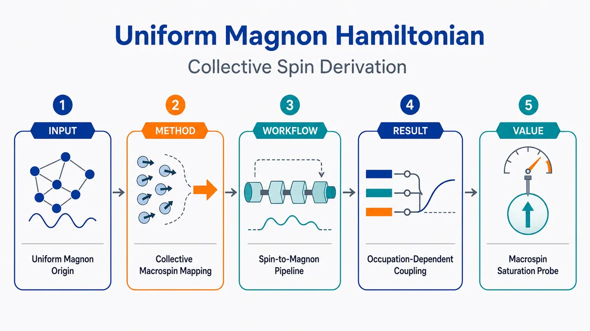
研究问题腔磁振子学中，长波长腔场主要激发均匀磁振子模，但传统推导需先对每个格点自旋做 Holstein–Primakoff 变换、得到完整自旋波谱后再投影到均匀模；核心问题是：能否直接从总自旋出发，解释为什么均匀模动力学闭合、为什么交换相互作用只给常数能量位移，并自然得到强驱动下的有限自旋非线性修正。创新方法将低温、长波长、近完全极化的铁磁体直接视为一个长度为 Ns 的宏自旋 / 合成大自旋原子，而不是 N 个局域自旋的集合；在完全对称自旋扇区 S=Ns 中，最近邻交换项化为总自旋 Casimir 常数 -JZs(Ns+1)I，不再影响均匀模动力学；随后直接对总自旋施加集体 Holstein–Primakoff 变换，引入单一集体玻色算符 M，Aha 点是：均匀磁振子就是整个铁磁体的离域自旋翻转，有限自旋饱和通过 HP 平方根自动显现。工作流程输入为最近邻 Heisenberg 铁磁体、静态偏置场 B0、横向腔场 c 和纵向 Floquet 场 b；先在倒空间定义自旋模 S_λ，证明在均匀长波长场 λ≈0 和近完全极化条件下，均匀模 S0 的运动方程不耦合非均匀模；再用 S0=S/√N 将有效哈密顿量改写为总自旋形式；在 S=Ns 对称扇区中把交换项替换为常数；最后对总自旋做集体 HP 变换并展开平方根，输出包含线性磁振子–光子耦合、纵向频率调制和首阶非线性修正的均匀磁振子哈密顿量。关键结果集体 HP 玻色算符 M 与传统均匀磁振子算符 m0 在低激发极限等价，即 M≡m0；交换相互作用在均匀模中只产生常数能量位移，不驱动动力学；得到有限自旋修正后的耦合矩阵元 Gₙ/Gₙ⁽⁰⁾⁼sqrt(1-n_M/(2Ns))≈1-n_M/(4Ns)，相干驱动下有效磁振子–光子耦合随占据数下降：Gₑff(n̄_M)≈G0(1-n̄_M/(4Ns))；normal-mode splitting 预期在强均匀模驱动下出现弱下降，表现为宏自旋饱和的可观测信号。应用价值该研究为腔磁振子学提供了更紧凑、直观的均匀模理论基准，把宏观铁磁体明确画成一个可量子化的 super-atom；可用于强驱动和 Floquet 腔磁振子实验中快速构造非线性哈密顿量，估算有限自旋饱和何时可见，解释高功率泵浦下耦合强度漂移或 normal-mode splitting 变小等现象，并为小尺寸 YIG 样品和合成大自旋量子光学类比提供设计依据。第一部分：核心概览 (Overview)
提出一种从总自旋 / 集体自旋直接推导腔磁振子学中均匀磁振子哈密顿量的方法。核心贡献在于绕开逐格点 Holstein–Primakoff 变换，直接把低温、长波长、近完全极化的铁磁体视为总自旋长度为 (Ns) 的宏自旋 / synthetic large-spin atom。在完全对称自旋扇区中，最近邻交换项只贡献常数能量位移，均匀模动力学由总自旋与腔场耦合决定。该框架自然给出有限自旋导致的非线性修正，并预测强驱动下磁振子–光子有效耦合随磁振子占据数下降，为宏自旋饱和提供可观测特征。
---
第二部分：结构化快速回顾
《A Collective-Spin Derivation of the Uniform Magnon Hamiltonian in Cavity Magnonics》（None，）
背景
腔磁振子学中常用逐格点 Holstein–Primakoff 变换得到完整自旋波谱，再投影到均匀模；但在长波长腔场和低激发条件下，主要物理自由度本来就是均匀磁振子模。
方法
从最近邻 Heisenberg 铁磁体出发，引入静磁场、横向腔场和纵向 Floquet 场；通过倒空间自旋模方程证明均匀模闭合；再对总自旋 (hatmathbf S=sumᵢhatmathbf sᵢ) 直接施加集体 Holstein–Primakoff 变换。
结果
在完全对称扇区 (S=Ns) 中，交换项化为 (-JZs(Ns+1)mathbb I) 常数。集体玻色算符 (hat M) 与传统均匀磁振子算符 (hat m₀) 在低激发极限等价。得到包含线性磁振子–光子耦合、纵向频率调制和 leading nonlinear correction 的有效哈密顿量。
讨论
集体自旋路线与传统逐格点路线物理等价，但更直接揭示铁磁体作为宏观大自旋原子 / super-atom 的含义，并给出非线性修正的清晰小参数 (łangle hat M^daggerhat Mångle/(2Ns))。
局限
假设样品几何为立方晶格、忽略退磁场和表面效应、只保留最近邻交换、场在样品内近似均匀、系统接近完全极化基态；有限自旋修正在弱驱动量子区通常极小。
结论
集体 Holstein–Primakoff 变换提供了均匀磁振子哈密顿量的紧凑推导，并预测强均匀模驱动下有效磁振子–光子耦合
[
Gₑff(bar n_M)simeq G₀łeft(1-fracbar n_M4Nsi̊ght)
]
出现占据数依赖的下降。
---
第三部分：逐章节冷凝解析
Abstract
- Direct collective-spin derivation
核心技术路线是从最近邻 Heisenberg 铁磁体与长波长磁场耦合出发，直接限制到完全对称自旋扇区，不先引入逐格点玻色算符。摘要明确表述为：*"Starting from a nearest-neighbor Heisenberg ferromagnet coupled to long-wavelength magnetic fields, we show that the relevant dynamics can be restricted to the fully symmetric spin sector"*。在该扇区中，交换相互作用不改变均匀模动力学，只产生常数位移：*"where the exchange interaction contributes only a constant energy shift"*。
- Macrospin of length (Ns)
铁磁体被等效为总自旋长度 (Ns) 的宏自旋，而非 (N) 个独立局域自旋的集合。关键表述是：*"the ferromagnet behaves as a macrospin of length (Ns)"*。该设定为把 YIG 等宏观铁磁样品类比为合成大自旋原子奠定基础。
- Collective Holstein–Primakoff transformation
Holstein–Primakoff 变换直接施加在总自旋上，而不是每个格点自旋上。摘要给出的技术优势是：*"Applying the Holstein–Primakoff transformation directly to this total spin yields the usual uniform magnon mode and its leading nonlinear corrections without first introducing site-resolved bosonic operators"*。这意味着传统均匀磁振子与集体 HP 玻色子在低激发极限中是同一自由度。
- Synthetic large-spin atom interpretation
集体表述使铁磁体的类原子解释更加显式：*"This collective formulation makes explicit the interpretation of the ferromagnet as a synthetic large-spin atom"*。这种解释与 Floquet sidebands、Rabi oscillations、Autler–Townes splittings 等原子物理类比自然连接。
- Finite-spin saturation signature
主要物理预测是有限总自旋导致磁振子–光子耦合随磁振子占据数下降。摘要直接指出：*"the leading nonlinear correction produces an occupation-dependent reduction of the effective magnon–photon coupling"*，并将其解释为强均匀模驱动下有限自旋饱和的简单信号：*"providing a simple signature of finite-spin saturation under strong uniform-mode driving"*。
---
I Introduction
- Floquet cavity magnonics as motivation
研究背景是量子磁振子学进入 Floquet 控制阶段，已经能够制备和操控相干混合磁振子–极化激元态。开篇指出：*"The field of quantum magnonics has entered a new stage with the preparation and control of coherent hybrid magnon–polariton states under Floquet dynamics"*。纵向周期驱动可调制磁化进动：*"By periodically driving a ferromagnet with an oscillatory magnetic field aligned with the static bias field, one can modulate the precession of the magnetization"*。
- Atomic-physics-like phenomena
Floquet 调制使腔磁振子系统出现与原子和分子物理相似的现象，包括 Floquet sidebands、Rabi oscillations、Autler–Townes splittings。原文列举为：*"This time-periodic modulation enables the observation of nontrivial phenomena, such as Floquet sidebands, Rabi oscillations, and Autler–Townes splittings, closely analogous to effects well known in atomic and molecular physics"*。
- Three experimentally relevant fields
腔磁振子实验中包含三类磁场：静态偏置场、横向面内驱动场、纵向 Floquet 场。具体划分为：*"The relevant fields are: (i) a static bias field, which defines the magnetic ground state and sets the natural precession frequency; (ii) an in-plane field perpendicular to the static field, which drives the magnetization precession; and (iii) an out-of-plane, or Floquet field, parallel to the static field, which modulates the precession dynamics"*。
- Quantum-control relevance
低温精密场控使宏观铁磁体中的量子磁振子态可被制备和操纵。证据句为：*"Through precise control of these fields at cryogenic temperatures, it is possible to prepare and manipulate robust quantum magnon states"*。实验能力包括分辨宏观铁磁体中的单个自旋翻转与操控磁振子态叠加：*"This has enabled the resolution of individual spin flips within a macroscopic ferromagnet and the coherent manipulation of superpositions of distinct magnon states"*。
- Conventional site-resolved route
标准理论通常先对 Heisenberg 哈密顿量作逐格点二次量子化，再对每个原子自旋施加 HP 变换。原文概括为：*"The theoretical framework most commonly used to describe magnonic systems starts from a site-resolved second quantization of the Heisenberg Hamiltonian, followed by the Holstein–Primakoff (HP) transformation applied to each atomic spin"*。其优点是自然得到完整自旋波谱：*"This procedure is powerful and general, since it naturally produces the full spin-wave spectrum"*。
- Why site-resolved derivation can obscure uniform-mode physics
在长波长腔磁振子实验中，主导激发是均匀磁静模；逐格点路线会掩盖集体性，并使非线性修正推导变得间接。关键句为：*"However, in the long-wavelength regime relevant to many cavity-magnonics experiments, the dominant excitation is the uniform, magnetostatic mode"*，以及 *"the site-resolved route may obscure the collective nature of the excitation and make the derivation of nonlinear corrections unnecessarily indirect"*。
- Local HP convention and spin-flip meaning
局域 HP 变换采用完全沿 (+z) 极化态作为玻色真空，局域玻色算符 (hat mᵢ^dagger) 产生一个局域自旋翻转。原文说明：*"with ([hatmbₒₗdₛyₘbₒₗₘₐₜₕfᵣₐₖᵢ,hatmbₒₗdₛyₘbₒₗₘₐₜₕfᵣₐₖᵢₚᵣⁱₘₑdagger]=δbₒₗdₛyₘbₒₗₘₐₜₕfᵣₐₖᵢ,bₒₗdₛyₘbₒₗₘₐₜₕfᵣₐₖᵢₚᵣⁱₘₑI)"*，并解释：*"the fully polarized state along the positive (z) direction is the bosonic vacuum, and a magnon corresponds to a reduction of the spin projection along (z)"*。
- Collective derivation goal
目标是直接从 Heisenberg 哈密顿量转写为总自旋问题，并在集体层面施加 HP 变换。原文为：*"Starting again from the Heisenberg Hamiltonian, we recast the problem in terms of the total spin of the ferromagnet and apply the HP transformation directly at this collective level"*。该方法跳过局域玻色中间表示：*"This route bypasses the intermediate site-resolved bosonic representation"*。
- Expansion control parameter
集体 HP 展开的自然小参数是集体磁振子数相对于最大可翻转自旋数 (2Ns) 的比例。明确条件为：*"The resulting expansion is controlled by the condition (łanglehatMdaggerhatMånglełl 2Ns)"*。其中 (hat M^dagger) 是均匀集体模激发产生算符：*"where (hatMdagger) creates an excitation of the collective uniform mode"*。
- Three working assumptions
三个核心实验假设分别是：样品位于驻波腔模磁场最大处；腔波长约 (1,cm)，远大于样品尺寸约 (100,μmathrm m)；系统接近所有 (N) 个原子自旋沿静态偏置场排列的基态。原文列为：*"the ferromagnetic sample is positioned at a maximum of the standing-wave cavity mode"*；*"the cavity wavelength, typically of order (1,cm), is much larger than the sample size, typically of order (100,μm), ensuring an approximately uniform excitation"*；*"the system is prepared close to its magnetic ground state, with all (N) atomic spins aligned along the static bias field"*。
- Equivalence with conventional projection
集体表述与传统逐格点推导再投影到均匀模等价，但更强调集体本质。原文指出：*"The formulation is equivalent to the conventional site-resolved derivation followed by projection onto the uniform mode"*，同时提供更紧凑的非线性磁振子–光子相互作用路线：*"provides a compact route to the nonlinear magnon–photon interactions relevant under strong driving and Floquet modulation"*。
---
II Spin Hamiltonian in Cavity Magnonics Experiments
- Model geometry and simplifications
铁磁样品取立方几何与立方晶格，每个格点有自旋 (s)，总格点数 (N=n³)，晶格常数为 (a)。原文为：*"We consider a macroscopic ferromagnet with cubic geometry"*，并说明：*"The crystal is modeled as a cubic lattice of (N) spin-(s) atoms with lattice parameter (a)"*。忽略实际样品几何引起的退磁场和表面效应：*"Surface effects associated with the actual sample geometry, such as demagnetization fields, are neglected"*。
- Low-temperature and polarized-ground-state assumption
温度足够低，热激发可忽略；静态场 (B₀) 沿 (z) 方向使铁磁体接近完全极化基态。证据为：*"We also assume that the temperature is sufficiently low for thermal excitations to be negligible"*，以及 *"by applying a static field (B₀) along the (z) direction, the ferromagnet is prepared close to its magnetic ground state, in which all spin sites are aligned with the static field"*。
- Nearest-neighbor Heisenberg Hamiltonian
未扰动哈密顿量包含最近邻交换和 Zeeman 项：
[
hat H_S⁽⁰⁾
=
-Jsumₘₐₜₕfᵣₐₖ ᵢ,ₘₐₜₕfᵣₐₖ ⱼ
hatmathbf sₘₐₜₕfᵣₐₖ ᵢḑot
hatmathbf sₘₐₜₕfᵣₐₖ ᵢ₊ₘₐₜₕfᵣₐₖ ⱼ
-
γ B₀sumₘₐₜₕfᵣₐₖ ᵢhat sₘₐₜₕfᵣₐₖ ᵢ^z .
]
原文给出：*"(hatHS⁽⁰⁾=-Jsumbₒₗdₛyₘbₒₗₘₐₜₕfᵣₐₖᵢ,bₒₗdₛyₘbₒₗₘₐₜₕfᵣₐₖⱼhatboldsymbolsbₒₗdₛyₘbₒₗₘₐₜₕfᵣₐₖᵢḑothatboldsymbolsbₒₗdₛyₘbₒₗₘₐₜₕfᵣₐₖᵢ₊bₒₗdₛyₘbₒₗₘₐₜₕfᵣₐₖⱼ-γ B₀sumbₒₗdₛyₘbₒₗₘₐₜₕfᵣₐₖᵢhatsbₒₗdₛyₘbₒₗₘₐₜₕfᵣₐₖᵢz)"*。电子回旋磁比取 (γ=28.02~GHz/T)：*"where (γ=28.02~GHz/T) is the gyromagnetic ratio of the electron"*。
- Nearest-neighbor structure
对立方晶格，每个格点最近邻向量为六个方向，配位数后续取 (Z=6)。原文给出：*"(boldsymbolmathfrakjinłeft(± 1,0,0),(0,± 1,0),(0,0,± 1)i̊ght)"*，并在倒空间哈密顿量后说明：*"Here (Z) is the number of nearest neighbors, with (Z=6) for the cubic lattice"*。
- Field classification: in-plane and out-of-plane
面内场垂直于静态场，诱导磁化在 (xy) 平面产生分量并绕静态场进动；面外场平行于静态场，用于调制进动频率。原文为：*"An in-plane drive is perpendicular to the static field and induces the magnetization to acquire a component in the (xy) plane"*，以及 *"An out-of-plane drive is parallel to the static field and modulates the precession frequency"*。简化共振条件是驱动频率匹配 (g₀₌γ B₀)：*"resonance is reached when the drive frequency matches (g₀=γ B₀)"*。
- Magnetization from total spin expectation
磁化强度由总自旋期望给出：
[
boldsymbolμ=-fracγhbarłanglehatmathbf SångleV.
]
原文表达为：*"the magnetization dynamics, denoted by (boldsymbolμ), is obtained from the expectation value of the total spin angular momentum operator through (boldsymbolμ=-dfracγhbarbrakethatSV)"*。
- Full spin-field Hamiltonian
含横向腔场 (hat cłₐₘbdₐ_c) 与纵向场 (hat błₐₘbdₐ_b) 的哈密顿量为：
[
hat H_S=
-Jsumₘₐₜₕfᵣₐₖ ᵢ,ₘₐₜₕfᵣₐₖ ⱼhatmathbf sₘₐₜₕfᵣₐₖ ᵢḑothatmathbf sₘₐₜₕfᵣₐₖ ᵢ₊ₘₐₜₕfᵣₐₖ ⱼ
-g₀sumₘₐₜₕfᵣₐₖ ᵢhat sₘₐₜₕfᵣₐₖ ᵢ^z
-g_csumₘₐₜₕfᵣₐₖ ᵢhat sₘₐₜₕfᵣₐₖ ᵢ^x(hat cłₐₘbdₐ_ceⁱłambda_cḑotmathfrak ⁱ+hat cłₐₘbdₐ_c^dagger e⁻ⁱłambda_cḑotmathfrak ⁱ)
-g_bsumₘₐₜₕfᵣₐₖ ᵢhat sₘₐₜₕfᵣₐₖ ᵢ^z(hat błₐₘbdₐ_beⁱłambda_bḑotmathfrak ⁱ+hat błₐₘbdₐ_b^dagger e⁻ⁱłambda_bḑotmathfrak ⁱ).
]
其中 (g_c,g_b) 是单自旋耦合强度。原文说明：*"Here, (hatcbₒₗdₛyₘbₒₗłₐₘbdₐc) and (hatbbₒₗdₛyₘbₒₗłₐₘbdₐb) are the annihilation operators of the in-plane and out-of-plane field modes, respectively, and (gc) and (gb) are their corresponding single-spin coupling strengths"*。
- Long-wavelength uniform-field approximation
当场波长远大于铁磁体尺寸时，相关场模近似均匀，即 (łambda_b,łambda_capprox0)。原文为：*"For fields whose wavelength is much larger than the size of the ferromagnet, the relevant field modes are approximately uniform, so that (boldsymbolłambdab,boldsymbolłambdacapproxboldsymbol0)"*。
- Reciprocal-space spin modes
倒空间自旋模定义为：
[
hatmathbf Słₐₘbdₐ=N⁻¹/²sumₘₐₜₕfᵣₐₖ ᵢhatmathbf sₘₐₜₕfᵣₐₖ ᵢeⁱłambdaḑotmathfrak ⁱ,
]
交换形状因子为：
[
u_łambda=frac1Zsumₘₐₜₕfᵣₐₖ ⱼeⁱłambdaḑotmathfrak j.
]
原文给出：*"Introducing the reciprocal-space spin modes (hatboldsymbolSbₒₗdₛyₘbₒₗłₐₘbdₐ=N⁻¹/²sumbₒₗdₛyₘbₒₗₘₐₜₕfᵣₐₖᵢhatboldsymbolsbₒₗdₛyₘbₒₗₘₐₜₕfᵣₐₖᵢeⁱboldsymbolłambdaḑotboldsymbolmathfrakⁱ)"*，以及 *"the exchange form factor (ubₒₗdₛyₘbₒₗłₐₘbdₐ=dfrac1Zsumbₒₗdₛyₘbₒₗₘₐₜₕfᵣₐₖⱼeⁱboldsymbolłambdaḑotboldsymbolmathfrakj)"*。
- Uniform spin mode equals total spin up to normalization
均匀倒空间自旋模就是总自旋除以 (sqrt N)：
[
hatmathbf S₀₌N⁻¹/²hatmathbf S.
]
原文明确写道：*"Using the definition of the reciprocal-space spin modes in Eq.(7), we find the expression for the uniform spin mode, (hatboldsymbolS₀=N⁻¹/²hatS)"*。
---
II.1 Spin Equations of Motion in Reciprocal Space
- Reciprocal-space spin algebra
倒空间自旋算符满足非局域动量叠加形式的对易关系：
[
[hat S_łambda^±,hat S_σ^z]=± N⁻¹/²hat Słₐₘbdₐ₊σ^±,
qquad
[hat S_łambda⁺,hat S_σ⁻]=2N⁻¹/²hat Słₐₘbdₐ₊σ^z .
]
原文给出：*"(łeft[hatSbₒₗdₛyₘbₒₗłₐₘbdₐ±,hatSbₒₗdₛyₘbₒₗσzi̊ght]=± N⁻¹/²hatSbₒₗdₛyₘbₒₗłₐₘbdₐ₊bₒₗdₛyₘbₒₗσ±)"*，以及 *"(łeft[hatSbₒₗdₛyₘbₒₗłₐₘbdₐ⁺,hatSbₒₗdₛyₘbₒₗσ⁻i̊ght]=2N⁻¹/²hatSbₒₗdₛyₘbₒₗłₐₘbdₐ₊bₒₗdₛyₘbₒₗσz)"*。
- Nonuniform modes generally couple to other modes
非均匀模 (σ≠0) 的运动方程通常会耦合到 (σ+łambda) 的模式组合。原文说明：*"They show that, in general, a spin mode (boldsymbolσ) may couple to combinations of modes with indices (boldsymbolσ+boldsymbolłambda)"*。这意味着完整自旋波问题具有多模耦合结构。
- Uniform mode has closed dynamics
均匀模 (σ=0) 具有特殊地位；在完全极化附近和均匀场驱动下，交换项不会把均匀模耦合到非均匀模。原文表述为：*"The uniform mode, however, has a special role"*，以及 *"the exchange contribution does not generate coupling of the uniform mode to nonuniform modes"*。因此均匀模方程闭合：*"The equations of motion for (hatSbₒₗdₛyₘbₒₗ₀±,z) therefore close among themselves"*。
- Uniform-mode equations of motion
均匀模满足：
[
fracddthat S₀⁻⁼
ig₀hat S₀⁻⁺
ig_bhat S₀⁻⁽hat b+hat b^dagger)
-
ig_chat S₀^z(hat c+hat c^dagger),
]
[
fracddthat S₀⁺⁼
-ig₀hat S₀⁺⁻
ig_bhat S₀⁺⁽hat b+hat b^dagger)
+
ig_chat S₀^z(hat c+hat c^dagger),
]
[
fracddthat S₀^z=
ifracg_c2(hat S₀⁺⁻hat S₀⁻⁾⁽hat c+hat c^dagger).
]
原文分别给出：*"(dfracddthatSbₒₗdₛyₘbₒₗ₀⁻=ig₀hatSbₒₗdₛyₘbₒₗ₀⁻+igbhatSbₒₗdₛyₘbₒₗ₀⁻łeft(hatb+hatbdaggeri̊ght)-igchatSbₒₗdₛyₘbₒₗ₀złeft(hatc+hatcdaggeri̊ght))"*，*" (dfracddthatSbₒₗdₛyₘbₒₗ₀⁺= -ig₀hatSbₒₗdₛyₘbₒₗ₀⁺-igbhatSbₒₗdₛyₘbₒₗ₀⁺łeft(hatb+hatbdaggeri̊ght)+igchatSbₒₗdₛyₘbₒₗ₀złeft(hatc+hatcdaggeri̊ght))"*，以及 *"(dfracddthatSbₒₗdₛyₘbₒₗ₀z=ifracgc2łeft(hatSbₒₗdₛyₘbₒₗ₀⁺-hatSbₒₗdₛyₘbₒₗ₀⁻i̊ght)łeft(hatc+hatcdaggeri̊ght))"*。
- Initial polarization condition
初态接近完全极化，物理空间总自旋期望为 (łangle hat S_z(0)ångle=Ns)，倒空间均匀模为 (łangle hat S₀^z(0)ångle=N¹/²s)。原文写道：*"the ferromagnet is initially prepared close to the fully polarized state, so that (brakethatSz(0)=Ns), or equivalently (brakethatSbₒₗdₛyₘbₒₗ₀z(0)=N¹/²s)"*。
- Effective uniform-sector Hamiltonian
在均匀扇区中有效自旋哈密顿量为：
[
hat H_Seff
=
-JZhatmathbf S₀ḑothatmathbf S₀
-g₀N¹/²hat S₀^z
-fracg_c2N¹/²(hat c₀₊hat c₀^dagger)(hat S₀⁺⁺hat S₀⁻⁾
-g_bN¹/²(hat b₀₊hat b₀^dagger)hat S₀^z .
]
原文为：*"(hatHSeff=-JZhatboldsymbolSbₒₗdₛyₘbₒₗ₀ḑothatboldsymbolSbₒₗdₛyₘbₒₗ₀-g₀N¹/²hatSbₒₗdₛyₘbₒₗ₀z-dfracgc2N¹/²łeft(hatcbₒₗdₛyₘbₒₗ₀+hatcbₒₗdₛyₘbₒₗ₀daggeri̊ght)łeft(hatSbₒₗdₛyₘbₒₗ₀⁺+hatSbₒₗdₛyₘbₒₗ₀⁻i̊ght)-gbN¹/²łeft(hatbbₒₗdₛyₘbₒₗ₀+hatbbₒₗdₛyₘbₒₗ₀daggeri̊ght)hatSbₒₗdₛyₘbₒₗ₀z)"*。
- Exchange term becomes a Casimir constant
因为 (hatmathbf S₀₌N⁻¹/²hatmathbf S)，交换项正比于总自旋 Casimir：
[
hatmathbf S₀ḑothatmathbf S₀₌frac1Nhatmathbf Sḑothatmathbf S.
]
在完全对称扇区 (S=Ns) 中：
[
hatmathbf S₀ḑothatmathbf S₀₌ₛ₍Ns+1)mathbb I.
]
原文为：*"the exchange term in the uniform sector is proportional to the total-spin Casimir operator"*，并给出 *"(hatboldsymbolSbₒₗdₛyₘbₒₗ₀ḑothatboldsymbolSbₒₗdₛyₘbₒₗ₀=dfrac1NhatSḑothatS)"* 与 *"(hatboldsymbolSbₒₗdₛyₘbₒₗ₀ḑothatboldsymbolSbₒₗdₛyₘbₒₗ₀=s(Ns+1)I)"*。
- Exchange does not drive uniform-mode dynamics
在集体均匀模描述中，交换相互作用只产生常数能量位移，不影响动力学。原文结论是：*"Therefore, in the collective uniform-mode description, the exchange interaction contributes only a constant energy shift"*。
---
III The HP Transformation of the Total Spin
- Effective Hamiltonian in physical total-spin variables
利用 (hatmathbf S₀₌N⁻¹/²hatmathbf S)，均匀扇区哈密顿量变为：
[
hat H_Seff
=
-JZs(Ns+1)mathbb I
-g₀hat S^z
-fracg_c2(hat c+hat c^dagger)(hat S⁺⁺hat S⁻⁾
-g_b(hat b+hat b^dagger)hat S^z .
]
原文给出：*"(hatHSeff=-JZs(Ns+1)I-g₀hatSz-dfracgc2łeft(hatc+hatcdaggeri̊ght)łeft(hatS⁺+hatS⁻i̊ght)-gbłeft(hatb+hatbdaggeri̊ght)hatSz)"*。
- Collective second quantization
该哈密顿量提示对总自旋施加 HP 变换，而不是逐格点施加。原文为：*"Equation (20) suggests a collective second-quantization scheme in which the Holstein–Primakoff transformation is applied directly to the total spin of the ferromagnet, rather than to each individual atomic spin"*。
- Collective HP transformation
以 (+z) 完全极化态为真空，集体 HP 变换为：
[
hat S⁺→(2Ns)¹/²łeft(mathbb I-frachat M^daggerhat M2Nsi̊ght)¹/²hat M,
]
[
hat S⁻→(2Ns)¹/²hat M^daggerłeft(mathbb I-frachat M^daggerhat M2Nsi̊ght)¹/²,
]
[
hat S^z→ Ns-hat M^daggerhat M,
quad [hat M,hat M^dagger]=mathbb I.
]
原文给出：*"(hatS⁺i̊ghtarrowłeft(2Nsi̊ght)¹/²łeft(I-frachatMdaggerhatM2Nsi̊ght)¹/²hatM)"*，*"(hatS⁻i̊ghtarrowłeft(2Nsi̊ght)¹/²hatMdaggerłeft(I-frachatMdaggerhatM2Nsi̊ght)¹/²)"*，以及 *"(hatSzi̊ghtarrow Ns-hatMdaggerhatM)"*。
- Meaning of (hat M^dagger)
(hat M^dagger) 产生整个铁磁体的集体自旋翻转，不是局域翻转，也不是磁化强度符号。原文说明：*"Here, (hatMdagger) creates a collective spin flip of the entire ferromagnet, i.e., an excitation of the uniform magnetic mode, and should not be confused with the magnetization, denoted here by (boldsymbolμ)"*。
- Exact collective magnon Hamiltonian before expansion
省略常数交换项后：
[
hat H_M=
-fracg_c2(2Ns)¹/²
łeft[
hat M^dagger
łeft(mathbb I-frachat M^daggerhat M2Nsi̊ght)¹/²
+h.c.
i̊ght](hat c+hat c^dagger)
-g_b(Ns-hat M^daggerhat M)(hat b+hat b^dagger)
+g₀hat M^daggerhat M .
]
原文为：*"(hatHM= -dfracgc2łeft(2Nsi̊ght)¹/²łeft[hatMdaggerłeft(I-frachatMdaggerhatM2Nsi̊ght)¹/²+h.c.i̊ght]łeft(hatc+hatcdaggeri̊ght)-gbłeft(Ns-hatMdaggerhatMi̊ght)łeft(hatb+hatbdaggeri̊ght)+g₀hatMdaggerhatM)"*。
- Low-excitation perturbative regime
展开条件为：
[
łanglehat M^daggerhat Månglełl2Ns.
]
原文明确写道：*"In the low-excitation regime, (łanglehatMdaggerhatMånglełl 2Ns), the square root can be expanded perturbatively"*。
- Leading nonlinear Hamiltonian
保留 leading nonlinear correction 后：
[
hat H_Mapprox
-fracg_c2(2Ns)¹/²(hat M+hat M^dagger)(hat c+hat c^dagger)
-g_b(Ns-hat M^daggerhat M)(hat b+hat b^dagger)
+g₀hat M^daggerhat M
+fracg_c4(2Ns)¹/²
(hat Mdagger²hat M+hat M^daggerhat M²⁾⁽hat c+hat c^dagger).
]
原文给出完整式子：*"(hatHMapprox -dfracgc2łeft(2Nsi̊ght)¹/²łeft(hatM+hatMdaggeri̊ght)łeft(hatc+hatcdaggeri̊ght)-gbłeft(Ns-hatMdaggerhatMi̊ght)łeft(hatb+hatbdaggeri̊ght)+g₀hatMdaggerhatM+fracgc4łeft(2Nsi̊ght)¹/²łeft(hatMdagger ²hatM+hatMdaggerhatM²i̊ght)łeft(hatc+hatcdaggeri̊ght))"*。
- Physical content of the expanded Hamiltonian
展开式同时展示三类作用：均匀磁振子与面内腔场的线性耦合、面外场对磁振子频率的调制、集体 HP 展开的首阶非线性修正。原文总结为：*"This expression displays the usual linear coupling between the uniform magnon mode and the in-plane cavity field, the out-of-plane modulation of the magnon frequency, and the leading nonlinear correction arising from the collective HP expansion"*。
- Equivalence to conventional uniform magnon operator
传统逐格点处理中，均匀磁振子算符定义为：
[
hat m₀₌frac1sqrt Nsumₘₐₜₕfᵣₐₖ ᵢhat mₘₐₜₕfᵣₐₖ ᵢ.
]
原文写作：*"the uniform magnon operator is defined as (hatmbₒₗdₛyₘbₒₗ₀=frac1sqrtNsumbₒₗdₛyₘbₒₗₘₐₜₕfᵣₐₖᵢhatmbₒₗdₛyₘbₒₗₘₐₜₕfᵣₐₖᵢ)"*。低激发下：
[
hat S⁻simeq(2Ns)¹/²hat m₀^dagger
]
而集体 HP 给出：
[
hat S⁻simeq(2Ns)¹/²hat M^dagger.
]
因此：
[
hat Mequivhat m₀.
]
原文结论为：*"Thus, in the low-excitation regime, (hatMequivhatmbₒₗdₛyₘbₒₗ₀)"*。
- Delocalized spin flip interpretation
(hat M) 湮灭的是整个铁磁体上离域的自旋翻转，而非特定原子位置的局域自旋翻转。原文强调：*"The operator (hatM) therefore annihilates a spin flip delocalized over the entire ferromagnet, rather than a spin flip localized at a particular atomic site"*。
- No new excitation introduced
集体路线不引入新的物理激发，只是更直接到达同一均匀模描述。原文为：*"The collective route therefore does not introduce a different physical excitation"*，以及 *"Rather, it reaches the same uniform-mode description more directly by exploiting from the outset the fact that the experimentally relevant fields couple predominantly to the total spin"*。
- Rotating-wave approximation
当面内场近似与磁振子频率共振，取 (ømegaₘsimeq g₀)，可作 RWA。原文写道：*"When the in-plane field is approximately resonant with the magnon frequency, one can further simplify Eq. (26) by applying the rotating-wave approximation (RWA)"*，以及 *"writing the magnon frequency as (ømegaₘsimeq g₀)"*。
- RWA Hamiltonian
共振哈密顿量包含自由项、纵向调制、线性 beam-splitter 型耦合与非线性修正：
[
hat H₀⁽RWA⁾
=
ømega_chat c^daggerhat c+
ømegaₘhat M^daggerhat M+
ømega_bhat b^daggerhat b
-
fracg_c2(2Ns)¹/²
(hat Mhat c^dagger+hat M^daggerhat c).
]
原文为：*"(hatH₀⁽RWA⁾=ømegachatcdaggerhatc+ømegaₘhatMdaggerhatM+ømegabhatbdaggerhatb-dfracgc2(2Ns)¹/²łeft(hatMhatcdagger+hatMdaggerhatci̊ght))"*。
- RWA selection rule
RWA 保留相对于面内场的激发数守恒项，丢弃反旋项 (hat Mhat c) 和 (hat M^daggerhat c^dagger)。原文说明：*"The RWA keeps the excitation-conserving terms with respect to the in-plane field and neglects counter-rotating terms such as (hatMhatc) and (hatMdaggerhatcdagger)"*。
- Out-of-plane field as frequency modulation
纵向场与磁振子数耦合，表现为磁振子频率调制，而非转换磁振子与光子。原文为：*"The out-of-plane field, in contrast, couples to the magnon number and acts as a modulation of the magnon frequency"*。
---
IV Finite-spin correction to the magnon–photon coupling
- Finite total spin limits harmonicity
均匀模不是无限可占据的理想谐振子，因为铁磁体总自旋有限 (S=Ns)。原文指出：*"Because the ferromagnet has a finite total spin (S=Ns), the uniform mode cannot be populated indefinitely as an ideal harmonic oscillator"*。
- Occupation-dependent coupling
有限自旋特征表现为磁振子–光子耦合对磁振子占据数的弱依赖。原文为：*"This finite-spin character appears as a weak occupation dependence of the magnon–photon coupling"*。
- RWA interaction before expansion
面内相互作用在 RWA 下写为：
[
hat HᵢₙₜRWA
=
-fracg_c2(hat chat S⁻⁺hat c^daggerhat S⁺⁾.
]
原文给出：*"(hatHᵢₙₜRWA=-fracgc2łeft(hatc,hatS⁻+hatcdaggerhatS⁺i̊ght))"*。
- Photon-to-magnon conversion matrix element
一个腔光子转化为一个额外均匀磁振子的矩阵元，即 (|n_M,1_cånglełeftrightarrow|n_M+1,0_cångle)，为：
[
Gₙ_M
=
fracg_c2(2Ns)¹/²
sqrtn_M+1
łeft(1-fracn_M2Nsi̊ght)¹/².
]
原文为：*"The matrix element coupling the states (ketnM,1c) and (ketnM+1,0c), corresponding to the conversion of one cavity photon into one additional uniform magnon, is (GₙM=fracgc2(2Ns)¹/²sqrtnM+1łeft(1-fracnM2Nsi̊ght)¹/²)"*。
- Bosonic approximation comparison
纯玻色近似下没有有限自旋因子：
[
Gₙ_M⁽⁰⁾
=
fracg_c2(2Ns)¹/²sqrtn_M+1.
]
原文为：*"In the purely bosonic approximation, this matrix element would be (GₙM⁽⁰⁾=fracgc2(2Ns)¹/²sqrtnM+1)"*。
- Finite-spin reduction factor
有限自旋修正为：
[
fracGₙ_MGₙ_M⁽⁰⁾
=
łeft(1-fracn_M2Nsi̊ght)¹/²
simeq
1-fracn_M4Ns,
quad n_Młl2Ns.
]
原文写道：*"Therefore, the finite-spin correction is (fracGₙMGₙM⁽⁰⁾=łeft(1-fracnM2Nsi̊ght)¹/²simeq 1-fracnM4Ns,qquad nMłl 2Ns)"*。
- Coherent-state effective coupling
对平均占据数为 (bar n_M) 的相干驱动均匀模：
[
Gₑff(bar n_M)
simeq
G₀łeft(1-fracbar n_M4Nsi̊ght),
quad
G₀₌fracg_c2(2Ns)¹/².
]
原文为：*"For a coherently driven uniform magnon mode with average occupation (barnM), this result may be expressed as (Gₑff(barnM)simeq G₀łeft(1-fracbarnM4Nsi̊ght),qquad G₀=fracgc2(2Ns)¹/²)"*。
- Normal-mode splitting prediction
磁振子–光子系统的 normal-mode splitting 应随均匀模占据接近总自旋长度的非忽略比例而弱下降。原文指出：*"The normal-mode splitting of the coupled magnon–photon system is therefore expected to decrease weakly as the uniform-mode population approaches a non-negligible fraction of the total spin length"*。
- Macrospin saturation interpretation
leading nonlinear correction 描述均匀模中宏自旋饱和的开始。原文为：*"the leading nonlinear correction describes the onset of macrospin saturation in the uniform mode"*。
- Weak-drive versus strong-drive regimes
弱驱动量子区中 (bar n_Młl2Ns)，修正可忽略；强面内驱动下可作为有限自旋效应估计。原文为：*"In weakly driven experiments, where (barnMłl 2Ns), this correction is negligible and the usual harmonic-oscillator description is recovered"*，以及 *"Under strong in-plane driving, however, the correction gives a simple estimate of the regime in which finite-spin effects become observable"*。
- YIG numerical scale: saturation magnetization
估算采用 YIG 饱和磁化强度：
[
Mₛsimeq140,kA/m.
]
原文为：*"we use the saturation magnetization of YIG, (Mₛsimeq 140,kA/m)"*。毫米尺寸 YIG 样品含超过 (10¹⁹) 个自旋：*"millimeter-sized YIG samples used in quantum magnonics contain more than (10¹⁹) spins"*。
- Total spin length estimate
球形样品总体自旋长度估计为：
[
NssimeqfracMₛVgμ_B,
quad gsimeq2.
]
对直径 (d) 的 YIG 球：
[
Nssimeq3.95×10¹⁸
łeft(frac d1,mmi̊ght)³
łeft(fracMₛ140,kA/mi̊ght).
]
原文为：*"For a spherical sample of volume (V), the total spin length can be estimated from (NssimeqfracMₛVgμB), with (gsimeq 2)"*，以及 *"For a YIG sphere of diameter (d), this gives (Nssimeq 3.95× 10¹⁸łeft(fracd1,mmi̊ght)³łeft(fracMₛ140,kA/mi̊ght))"*。
- Magnon number for 1% coupling reduction
相对下降：
[
fracΔ GG₀simeqfracbar n_M4Ns.
]
(1%) 下降需要：
[
bar n_Msimeq4×10⁻²Ns.
]
对 1 mm 直径 YIG 球，(bar n_Msimeq1.6×10¹⁷)；对 0.1 mm 球，(bar n_Msimeq1.6×10¹⁴)。原文给出：*"A (1%) reduction of the effective magnon–photon coupling would require (barnMsimeq 4× 10⁻²Ns)"*，以及 *"For a (1,mm)-diameter YIG sphere, this corresponds to (barnMsimeq 1.6× 10¹⁷) uniform magnons, while for a (0.1,mm)-diameter sphere it corresponds to (barnMsimeq 1.6× 10¹⁴)"*。
- Stored energy scale at 10 GHz
若 (ømegaₘ/2π) 对应 10 GHz 量级，储存均匀模能量：
[
E_Msimeqbar n_Mhbarømegaₘ
]
对上述两种尺寸分别为 (10⁻⁶,mathrm J) 和 (10⁻⁹,mathrm J) 量级，不含损耗和外部驱动耦合低效。原文为：*"At a magnon frequency of (10,GHz), these occupations correspond to stored uniform-mode energies (EMsimeqbarnMhbarømegaₘ) of order (10⁻⁶,J) and (10⁻⁹,J), respectively, not including losses or coupling inefficiencies associated with the external drive"*。
- Low-excitation consistency
即使出现 (1%) 耦合下降，仍满足低激发条件，因为：
[
bar n_M/(2Ns)simeq2×10⁻².
]
原文结论为：*"This estimate also clarifies that the correction remains within the low-excitation regime, since even a (1%) change corresponds to (barnM/(2Ns)simeq 2× 10⁻²)"*。
---
V Discussion
- Equivalence of conventional and collective routes
传统逐格点 HP 构造与集体自旋构造在长波长腔磁振子实验中导向同一均匀模哈密顿量。原文首句为：*"The conventional site-resolved Holstein–Primakoff construction and the collective-spin construction presented here lead to the same effective uniform-mode Hamiltonian in the long-wavelength regime relevant to cavity-magnonics experiments"*。
- Difference in intermediate variables and interpretation
两条路线的差异不在最终物理自由度，而在中间变量和物理解释。原文指出：*"The two approaches differ, however, in the intermediate variables used to reach this Hamiltonian and in the physical interpretation they make explicit"*。
- Conventional route logic
传统路线先对每个原子自旋 (hatmathbf sₘₐₜₕfᵣₐₖ ᵢ) 作 HP 变换，引入局域自旋翻转算符 (hat mₘₐₜₕfᵣₐₖ ᵢ)，再变换到倒空间得到 (hat m_łambda)，最后根据长波长场和完全极化近似选出 (łambda=0)。原文为：*"In the conventional route, the HP transformation is first applied to each atomic spin (hatboldsymbolsbₒₗdₛyₘbₒₗₘₐₜₕfᵣₐₖᵢ), introducing local spin-flip operators (hatmbₒₗdₛyₘbₒₗₘₐₜₕfᵣₐₖᵢ)"*，以及 *"These local bosonic operators are then transformed to reciprocal space, giving magnon modes (hatmbₒₗdₛyₘbₒₗłₐₘbdₐ)"*。
- Collective route logic
集体路线顺序相反：先从运动方程识别均匀自旋模，再把哈密顿量直接写成总自旋形式。原文为：*"The collective-spin route follows the opposite logic"*，以及 *"Instead of first introducing local bosons and later projecting onto the uniform mode, one first identifies the uniform spin mode from the equations of motion"*。
- Uniform spin mode as the relevant degree of freedom
在均匀场与近完全极化条件下，相关自旋动力学由 (hatmathbf S₀) 承载。原文说明：*"Since the applied fields are approximately uniform over the ferromagnetic sample and the system is prepared close to the fully polarized state, the relevant spin dynamics is carried by (hatboldsymbolSbₒₗdₛyₘbₒₗ₀)"*。该模与总自旋成正比：*"This mode is proportional to the total spin (hatS)"*。
- Collective HP boson as entire-ferromagnet spin flip
对总自旋施加 HP 变换只引入一个集体玻色算符 (hat M)，对应整个铁磁体的自旋翻转。原文为：*"The HP transformation is then applied to (hatS), introducing a single collective bosonic operator (hatM) associated with spin flips of the entire ferromagnet"*。
- Operator-level equivalence
等价性来自 (hat Mequivhat m₀)。讨论部分再次给出：
[
hat m₀₌frac1sqrt Nsumₘₐₜₕfᵣₐₖ ᵢhat mₘₐₜₕfᵣₐₖ ᵢ,
]
[
hat S⁻simeq(2Ns)¹/²hat m₀^dagger,
quad
hat S⁻simeq(2Ns)¹/²hat M^dagger.
]
原文结论是：*"Therefore, (hatMequivhatmbₒₗdₛyₘbₒₗ₀), up to the notational distinction between the collective-spin and reciprocal-space descriptions"*。
- Same excitation, more direct construction
集体自旋构造不引入不同激发，而是直接到达相同的均匀磁振子模。原文为：*"Thus, the collective-spin construction does not introduce a different excitation; it provides a direct route to the same uniform magnon mode"*。
- Synthetic large-spin atom / super-atom interpretation
主要概念差异是集体自旋法从一开始就把铁磁体视为长度 (Ns) 的单个大自旋。原文为：*"The main conceptual difference is that the collective-spin method treats the ferromagnet, from the outset, as a single large spin of length (Ns) interacting with external fields"*。这显式给出宏自旋近似：*"This makes explicit the macrospin interpretation underlying the uniform-mode approximation"*。铁磁体可被视为合成大自旋原子或 super-atom：*"the ferromagnet behaves as a synthetic large-spin atom, or super-atom"*。
- Perturbative hierarchy for nonlinear corrections
集体 HP 展开给出透明的非线性修正层级，小参数直接是 (łanglehat M^daggerhat Mångle/(2Ns))。原文为：*"The collective formulation also gives a transparent perturbative hierarchy for nonlinear corrections"*，以及 *"In the collective HP expansion, the relevant smallness condition is (brakethatMdaggerhatMłl 2Ns)"*。
---
第四部分：深度理解与语言支持
1. 术语解析
Fully symmetric spin sector
指所有 (N) 个自旋以完全对称方式组合成最大总自旋 (S=Ns) 的 Hilbert 子空间。这里不是任意多自旋态，而是所有局域自旋“锁相”参与同一集体运动的扇区。其关键后果是：
[
hatmathbf S²⁼S(S+1)mathbb I=Ns(Ns+1)mathbb I,
]
因此交换项成为常数。原文语境：*"the relevant dynamics can be restricted to the fully symmetric spin sector"*。
Macrospin
表示整个铁磁体近似为一个单一大自旋，而不是 (N) 个独立局域自旋。这里的 “macrospin” 不是经典磁矩，而是量子角动量对象，长度为 (Ns)，可作 HP 量子化。原文语境：*"the ferromagnet behaves as a macrospin of length (Ns)"*。
Uniform magnon mode
指波矢 (łambda=0) 的磁振子模，所有格点自旋以相同相位发生集体进动。与局域 (hat mᵢ^dagger) 不同，(hat m₀^dagger) 或 (hat M^dagger) 产生的是离域在整个样品上的自旋翻转。原文语境：*"This is precisely the uniform mode commonly retained in cavity-magnonics experiments"*。
Leading nonlinear correction
指 HP 平方根展开中相对于线性谐振子项的第一阶非线性项：
[
fracg_c4(2Ns)¹/²
(hat Mdagger²hat M+hat M^daggerhat M²⁾⁽hat c+hat c^dagger).
]
它体现了有限自旋空间导致的非谐性，而非外加 Kerr 非线性或材料高阶磁各向异性。原文语境：*"the leading nonlinear correction arising from the collective HP expansion"*。
Occupation-dependent reduction
指耦合强度不再是常数 (G₀)，而随磁振子占据数上升而下降：
[
Gₑff(bar n_M)simeq G₀łeft(1-fracbar n_M4Nsi̊ght).
]
“Reduction” 在这里不是损耗增强，而是矩阵元因有限自旋饱和而变小。原文语境：*"an occupation-dependent reduction of the effective magnon–photon coupling"*。
---
2. 疑难查证
为什么交换项在均匀模中只剩常数？
最近邻 Heisenberg 交换倾向于让相邻自旋平行。对均匀模而言，所有自旋同相进动，没有空间相位差，因此不会激发自旋波的空间梯度能量。在完全对称扇区中，总自旋长度固定为 (S=Ns)，而交换项可写成与 (hatmathbf S²) 有关的形式。由于：
[
hatmathbf S²⁼S(S+1)mathbb I,
]
它只给每个态加同样的能量，不改变动力学。非均匀模不同，因为不同格点存在相位差，交换项会给出波矢依赖色散。
为什么 (hat Mequivhat m₀) 只在低激发条件下成立？
传统局域 HP 中：
[
hat sᵢ⁻simeq sqrt2s,hat mᵢ^dagger
]
是把平方根 (sqrt1-hat mᵢ^daggerhat mᵢ/(2s)) 近似为 1。集体 HP 中：
[
hat S⁻simeqsqrt2Ns,hat M^dagger.
]
两式比较得到 (hat M=hat m₀)。但当激发数接近 (2Ns) 时，平方根因子不能忽略，集体自旋的有限 Hilbert 空间维数变得重要，玻色算符的无限占据近似失效。
为什么纵向 out-of-plane field 调制频率而不是直接产生磁振子？
纵向场耦合到 (hat S^z=Ns-hat M^daggerhat M)。它改变的是磁振子数项前的能量系数，相当于让磁振子频率随时间变化。横向场耦合 (hat S⁺⁺hat S⁻)，会改变磁振子数，因此能驱动磁振子产生或湮灭。简言之：
- 横向场：改变自旋方向 → 产生/湮灭磁振子；
- 纵向场：改变 Zeeman splitting → 调制磁振子频率。
有限自旋饱和为什么导致耦合下降？
理想谐振子从 (|nångle) 到 (|n+1ångle) 的矩阵元随 (sqrtn+1) 增大；但真实自旋系统的最高翻转数有限。随着 (n_M) 增大，可继续翻转的“剩余自旋长度”减少，因此矩阵元多出：
[
łeft(1-fracn_M2Nsi̊ght)¹/².
]
这就是宏自旋接近饱和时耦合下降的量子力学来源。
---
第五部分：创新评估与关联
1. 创新性判断
相对近年 cavity magnonics / Floquet magnonics 工作的新颖性
近年工作重点多在实验观测和谱学建模：Floquet sidebands、Rabi oscillations、Autler–Townes splittings、输入–输出理论、能级位移和驱动谱。常规理论路径通常从逐格点 Heisenberg 模型出发，经局域 HP 变换得到自旋波谱，再手动保留 (łambda=0) 均匀模。该工作的新颖性在于把“只保留均匀模”从后处理投影变成一开始就由总自旋闭合动力学推出。
解决的核心理论问题
过去常规推导能得到正确均匀模哈密顿量，但集体物理图像被隐藏在局域玻色化和倒空间投影之后。该工作解决了三个具体问题：
- 均匀模为何可单独保留
通过倒空间运动方程说明均匀模在均匀场、近完全极化条件下闭合，交换项不把它耦合到非均匀模。
- 交换项为何不影响均匀模动力学
通过总自旋 Casimir 结构说明，在 (S=Ns) 扇区中交换项只是常数：
[
-JZs(Ns+1)mathbb I.
]
- 非线性修正如何直接得到
不必先生成完整自旋波相互作用再投影，直接展开集体 HP 平方根即可得到有限自旋非线性项和有效耦合下降：
[
Gₑff(bar n_M)simeq G₀łeft(1-fracbar n_M4Nsi̊ght).
]
真正的科学创新点
最重要创新不是提出一种全新的磁振子激发，而是给出一种更物理、更紧凑、更适合强驱动 / Floquet 场景的推导框架。它把腔磁振子学中的铁磁体明确解释为有限维大自旋系统，而不仅是无限维谐振子。由此自然暴露出传统线性模型隐藏的有限自旋饱和效应。
潜在影响
该框架对以下方向有直接价值：
- 强驱动腔磁振子学中耦合强度漂移的解析估计；
- Floquet 调制下非线性均匀模哈密顿量的构造；
- 宏观铁磁体作为 synthetic atom / super-atom 的量子光学类比；
- 小尺寸 YIG 或高功率泵浦实验中有限自旋效应的可观测性评估。
主要限制对创新性的约束
创新建立在一组理想化假设上：均匀场、近完全极化、忽略退磁场、忽略表面效应、立方晶格、最近邻交换、只关注均匀模。真实 YIG 球中磁偶极相互作用、形状各向异性、Kittel 模与其他磁静模混合、阻尼和泵浦效率会影响可观测性。因此该结果更像是基准理论与物理机制提取，而非完整实验谱线预测模型。
-
17
📊 含图深析
💡 亮点：二维铁电双层可多态控制 EE 与 SHE。
📖 展开分析 + 配图
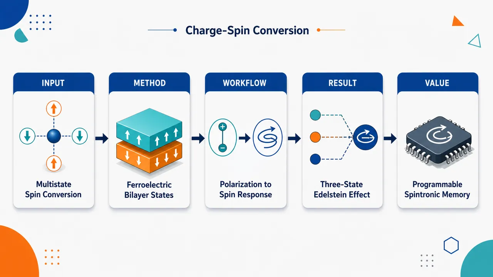
研究问题传统铁电材料通常只能通过极化反转让 Edelstein 效应在正负二态间切换，无法实现“正—负—零”多态控制；同时自旋霍尔效应对空间反演不敏感，普通极化反转难以调节其幅值。论文要解决的核心问题是：如何在同一个二维铁电体系中，用非易失电极化状态同时编程电流诱导自旋积累和横向自旋流。创新方法提出二维铁电同质双层作为多态电荷–自旋转换平台，把两层面外极化组合成 UU、UD、DU、DD 四种构型。Aha 点在于：UU/DD 层间平行态破缺反演对称，可产生大小相反的 EE；UD/DU 层间反平行态恢复反演对称，直接把 EE 关断；而 SHE 可在平行/反平行构型切换中因自旋 Berry 曲率重塑而改变幅值。以双层金属铁电 PtBi₂ 为材料原型，结合对称性分析、DFT、NEB、Wannier 和 Kubo 公式验证该机制。工作流程输入为双层 PtBi₂ 的四种极化排列：上上 UU、上下 UD、下上 DU、下下 DD。先用第一性原理优化结构并计算极化切换能垒，确认 UU/DD 稳定、UD/DU 亚稳且均为金属态；再按点群对称性判断 EE 与 SHE 张量允许性；随后构建 Wannier 哈密顿量，计算能带、费米面、自旋纹理、动量分辨 EE 贡献和自旋 Berry 曲率；最终输出不同极化态和费米能级下的 EE 正负零三态以及 SHE 多幅值响应。关键结果双层 PtBi₂ 实现了 EE 的正、负、零三态：UU 与 DD 中 χᵧₓ = −χₓᵧ 且极化反转使 EE 变号，UD/DU 因反演对称使 EE 为零。归一化 EE 效率在费米能附近达到 6.54×10⁹、1.16×10¹⁰、−2.23×10¹⁰ ℏ/(A·cm)。SHE 也随极化构型和费米能显著变化，例如 σᶻᵧₓ 可从约 −610 到 +118 (ℏ/e)·S/cm，σˣᵧₓ 在 DU 态可达 +340 (ℏ/e)·S/cm，并可随费米能调节变号。EE 变号来自内层电子口袋负贡献与外层空穴口袋正贡献的竞争；SHE 调制来自 k 空间自旋 Berry 曲率正负区域的扩展、收缩和重排。应用价值该研究提供了一种无需异质界面、无需顺电相、无需额外掺杂金属化的全内禀多态自旋电子方案。通过电场写入双层极化构型，可在撤场后保持 EE 的正、负、关断状态，并同步调节自旋霍尔自旋流，适合构建三态逻辑、高密度非易失自旋存储、可编程自旋流源和可重构低功耗自旋电子器件。第一部分：核心概览 (Overview)
二维铁电双层被提出为非易失、多态电荷–自旋转换平台：层间平行极化实现 Edelstein 效应（EE）正负号翻转，层间反平行极化因反演对称性使 EE 关断，同时 自旋霍尔效应（SHE）幅值可由极化构型与费米能级调控。第一性原理验证双层金属铁电 PtBi₂ 具备稳定/亚稳多极化态，EE 达 10⁹–10¹⁰ ℏ/(A·cm)，SHE 达 100–1000 (ℏ/e)·S/cm，定位于面向三态逻辑与可编程自旋电子器件的机制型理论工作。
---
第二部分：结构化快速回顾
《Multistate Manipulation of Charge-Spin Conversion in Two-Dimensional Ferroelectric Bilayers》（None，）
背景
电荷–自旋转换是自旋电子学的核心机制，代表效应包括 Edelstein 效应（EE） 与 自旋霍尔效应（SHE）。传统铁电极化反转通常只能让 EE 变号，形成二态控制；SHE 对空间反演不变，单纯极化反转难以调控其大小。
方法
构造二维铁电同质双层，允许四种极化构型：UU、UD、DU、DD。通过对称性分析预测 EE/SHE 的允许性与变换规律，并以双层金属铁电 PtBi₂ 为例进行 DFT、NEB、Wannier、Kubo 公式计算。
结果
UU/DD 属于 C₃ᵥ，允许 χᵧₓ = −χₓᵧ，极化反转使 EE 变号；UD/DU 属于 C₂ₕ，反演对称使 EE 为零。PtBi₂ 中 EE 归一化效率在费米能级附近达到 6.54×10⁹、1.16×10¹⁰、−2.23×10¹⁰ ℏ/(A·cm)；SHE 分量可在不同构型下从约 −610 到 +340 (ℏ/e)·S/cm 变化。
讨论
EE 的符号与大小来自费米面上内层电子口袋与外层空穴口袋贡献的竞争；SHE 来自 spin Berry curvature 在动量空间的重塑。极化构型切换与费米能级调控构成双重编程旋钮。
局限
研究以理论计算为主，尚无双层 PtBi₂ 多态极化切换与 EE/SHE 实验验证。估算的相干翻转临界场约 100 V/nm，虽被解释为上限，但真实器件可达性仍需实验确认。SHE 仅考虑本征贡献，未纳入 skew-scattering 与 side-jump 等无序相关外禀项。
结论
二维铁电双层提供一种“全内禀”多态电控电荷–自旋转换机制：EE 可在正、负、零三态间切换，SHE 可通过极化构型非易失调幅，适合高密度自旋存储、三态逻辑与可重构自旋电子学。
---
第三部分：逐章节冷凝解析 (Section-by-Section Condensing)
Abstract
- Multistate charge–spin conversion is the central target
核心问题是实现非易失、多态的电荷–自旋转换控制，直接服务于高密度自旋电子存储；摘要开宗明义写道：*"Achieving nonvolatile and multistate manipulation of charge–spin conversion, including the Edelstein effect (EE) and spin Hall effect (SHE), is crucial for high-density spintronic memory."* 这里的“multistate”不是简单二态极化反转，而是同时涉及 EE 正/负/零态与 SHE 幅值多态。
- Ferroelectric bilayers supply two polarization classes
二维铁电双层允许层间平行与层间反平行极化共存，构成新的自由度；摘要直接给出机制基础：*"we propose a mechanism to simultaneously control both EE and SHE in two-dimensional ferroelectric bilayers, where interlayer-parallel and interlayer-antiparallel polarization configurations can coexist."* 关键不是单层铁电，而是双层极化排列的组合空间。
- Symmetry yields three-state EE manipulation
UU/DD 层间平行态中，总极化反转使 EE 变号；UD/DU 层间反平行态中，反演对称使 EE 为零。摘要表述为：*"in the interlayer-parallel states, reversal of the total polarization switches the sign of the EE, whereas changing to an interlayer-antiparallel configuration suppresses the EE to zero"*。这对应电流诱导自旋积累的 +χ、−χ、0 三态，进一步被定义为可用于三值逻辑：*"enabling electrically switchable current-induced spin accumulation among three distinct states, that could be used for ternary logic operations."*
- SHE is tuned by changing polarization class rather than simple reversal
SHE 对反演操作不变，因此 UU 与 DD 的 SHE 相同；真正调控来自 interlayer-parallel 与 interlayer-antiparallel 两类构型之间的切换。摘要强调：*"the magnitude of the SHE can be tuned by switching between two different classes of polarization configurations (interlayer-parallel and interlayer-antiparallel)."*
- PtBi₂ is the concrete first-principles platform
双层金属铁电 PtBi₂ 被选为模型体系，关键前提是两类极化构型均具能量稳定性：*"Using first-principles calculations, we demonstrate this mechanism in bilayer metallic ferroelectric PtBi2, where both interlayer-parallel and interlayer-antiparallel polarization configurations are energetically stable."*
- EE reaches experimentally relevant efficiency scale
层间平行态的 χᵧₓ 在费米能附近达到 10⁹–10¹⁰ ℏ/(A·cm)，且可由极化反转变号；摘要给出数值范围：*"The EE coefficient χyx in interlayer-parallel states, which reaches 10⁹−10¹⁰ ℏ/(A·cm) near the Fermi energy and can be reversed by polarization switching"*。显微来源是费米面附近电子与空穴口袋的竞争：*"arises from competing electron- and hole-pocket contributions near the Fermi surface."*
- Intrinsic SHE reaches 100–1000 scale and originates from spin Berry curvature
本征 SHE 系数达到 100–1000 (ℏ/e)·S/cm，其物理来源是可被极化构型和费米能调控的自旋 Berry 曲率：*"The intrinsic SHE coefficients, which are in the range of 100 - 1000 (ℏ/e)·(S/cm) near the Fermi energy, originate from spin Berry curvature that can be reshaped by polarization configuration variation and Fermi-level tuning."*
---
I Introduction
- Charge–spin conversion enables all-electric spin control
电荷–自旋转换是低能耗全电控自旋电子学的基础，功能是把电流与自旋自由度耦合起来：*"Charge–spin conversion is a fundamental phenomenon in spintronics, enabling the mutual coupling between charge currents and spin degrees of freedom and thus playing an essential role in achieving all-electric control with low energy consumption."* 这里的“mutual coupling”指电荷流可生成自旋响应，自旋相关输运也可反向影响电荷信号。
- EE and SHE are the two representative conversion channels
EE 描述非中心对称体系中电场诱导的非平衡自旋积累；SHE 描述纵向电场诱导横向自旋流。数学形式分别为 *"δSi=χijEj"* 与 *"Jji=σijkEk"*。前者的响应量是局域自旋积累 δSᵢ，后者的响应量是自旋流 Jⱼⁱ，其中 *"i, j and k being mutually orthogonal"* 表示传统 SHE 几何中自旋极化、流动方向、电场方向相互正交。
- Nonvolatile electrical control is a field frontier
非易失电控是可重构自旋电子学、逻辑与类脑计算的关键；引言明确指出：*"An important frontier in this field is the realization of nonvolatile electrical control of charge–spin conversion, which is essential for reconfigurable spintronics applications, including spin logic and neuromorphic computing."* 非易失性意味着去掉外场后态仍保持，适合存储和低功耗器件。
- Ferroelectrics naturally couple polarization and spin–orbit electronic structure
铁电体的优势来自可电切换自发极化，能够调制含自旋–轨道耦合的能带结构：*"Ferroelectric materials provide a promising platform for this purpose, because their electrically switchable spontaneous polarization can couple to spin–orbit-coupled electronic structures and thereby modulate charge–spin conversion."*
- Conventional ferroelectric switching mainly gives binary EE control
许多铁电系统中，极化反转等价于空间反演，导致 EE 符号反转；引言写道：*"polarization reversal is generally equivalent to a spatial inversion operation, resulting in a reversal of the sign of the EE."* 既有体系包括 GeTe、In₂Se₃、graphene/In₂Se₃、CsGeX₃ 等。由此得到的是二态控制：*"ferroelectric switching reverses the sign of the EE, thereby enabling binary-state control."*
- Ferroelectric metals expand the design space beyond doped insulators
金属铁电材料的重要性在于无需外部掺杂即可在金属态产生自旋–轨道响应；引言指出二维金属虽有静电屏蔽，仍可具备极化和铁电切换：*"2D metals, despite electrostatic screening, can exhibit not only polarizations ... but also ferroelectric switching"*。相关例子包括 1T′-WTe₂，并已有理论研究双层 1T′-WTe₂ 与单层 PtBi₂ 的可切换 EE：*"Ferroelectric control of EE, without external doping, has been studied theoretically in bilayer 1T’-WTe2 and monolayer PtBi2."*
- The unresolved EE challenge is multistate rather than binary control
关键空白是多态 EE 操控仍未实现；引言明确写道：*"Nevertheless, multistate manipulation of the EE in ferroelectric systems remains elusive."* 理想体系应能同时实现 EE 变号、幅值调制、开关态切换：*"simultaneously achieve sign reversal and magnitude tuning of the EE, or enable switching among opposite EE signs and an on/off state."*
- SHE cannot be controlled by inversion-equivalent polarization reversal alone
SHE 电导在空间反演下保持不变，因此普通极化反转不能调 SHE；关键句为：*"in contrast to the EE, the SHE conductivity is invariant under spatial inversion. As a result, polarization reversal, which is usually equivalent to a spatial inversion operation, cannot by itself modulate the SHE."* 这构成与 EE 完全不同的机制难题。
- Existing SHE control strategies have stability or interface-defect problems
铁电相到顺电相的构型变化可强烈改变 SHE，但顺电相通常不能被电场非易失稳定：*"such a transition cannot be realized nonvolatilely by an electric field, because the paraelectric phase is generally not stable under an external electric field."* 另一类方案利用铁电衬底/非磁金属异质结构，但界面晶格失配会引入缺陷：*"lattice mismatch at the interface of such heterostructures inevitably introduces defects, which may lead to uncontrolled deviations in the SHE behavior."*
- Bilayer ferroelectrics solve EE and SHE simultaneously
新机制通过二维铁电双层引入 UU/DD 与 UD/DU 极化构型切换：*"We consider a bilayer two-dimensional (2D) ferroelectric system, in which the polarization state can be switched not only between interlayer-parallel configurations with opposite total polarizations, but also between interlayer-parallel and interlayer-antiparallel configurations."* 具体规律是：*"switching between two distinct interlayer-parallel states with opposite total polarizations reverses the sign of the EE while leaving the SHE unchanged"*；而层间平行与反平行之间切换则 *"enables on–off switching of the EE"* 并实现 SHE 的非易失调制。
- PtBi₂ calculations establish quantitative feasibility
双层 PtBi₂ 中 EE 达 10⁹–10¹⁰ ℏ/(A·cm)，SHE 达 100–1000 (ℏ/e)·S/cm；引言给出：*"For EE in polarization-parallel states, its value reaches 10⁹∼10¹⁰ ℏ/(A·cm), and shifting the Fermi level upwards would cause the sign reverse of EE."* 以及：*"For SHE, it reaches the value of 100 - 1000 (ℏ/e)·(S/cm) and its magnitude can be modified by tuning the Fermi level due to the reshape of spin Berry curvature."*
---
II Results and discussions
II.1 Design principle
- Four polarization states exist in a ferroelectric bilayer
双层二维铁电体中，每层的面外电偶极可向上或向下，组合出四态：UU、UD、DU、DD。原文明确列举：*"giving rise to four polarization states: interlayer-parallel up–up (UU), interlayer-antiparallel up–down (UD), interlayer-antiparallel down–up (DU), and interlayer-parallel down–down (DD)."* 这是多态调控的结构根源。
- Single-layer ferroelectric switching gives only EE sign reversal and invariant SHE
单层二维铁电体的上下极化由空间反演联系，导致 EE 只发生等幅反号，而 SHE 不变：*"Upon such polarization switching, the EE reverses its sign while retaining the same magnitude, whereas the SHE remains unchanged."* 因而单层结构天然受限于二态 EE 与不可调 SHE。
- UU and DD host opposite EE but identical SHE
UU/DD 是层间平行、铁电样构型，具有大小相等方向相反的总极化；由于二者由空间反演相连，其 EE 等幅反号，SHE 相同：*"the interlayer-parallel ferroelectric-like configurations UU and DD possess finite polarizations with equal magnitude and opposite sign. Since they are related by spatial inversion operation, they host EEs with equal magnitude but opposite sign, while their SHEs are identical."*
- UD and DU are inversion-symmetric and suppress net EE
UD/DU 是层间反平行、反铁电样构型，保留反演对称性，净 EE 被禁止：*"the interlayer-antiparallel antiferroelectric-like UD and DU states are inversion-symmetric and therefore forbid a net EE."* 这里“forbid”是严格对称性禁戒，不是数值偶然为小。
- SHE can differ among UU, UD, and DU because no symmetry enforces equality
虽然 SHE 对反演不变，但 UU、UD、DU 并不由同一对称操作联系，因此 SHE 不必相等：*"because no symmetry operation relates the UU, UD, and DU states, their SHEs are not constrained by symmetry to be identical and can therefore differ from one state to another."* 这解释了为何双层极化“类别切换”能调 SHE。
- Two switching modes encode different functionalities
第一类切换 UU ↔ DD 实现 EE 变号：*"switching the polarization between the two interlayer-parallel UU and DD states enables sign reversal of the EE"*。第二类切换 平行 ↔ 反平行 实现 EE 开关与 SHE 调幅：*"switching between the two classes of interlayer configurations ... provides an effective route to realize both on–off control of the EE and nonvolatile modulation of the SHE."*
- The platform is all-in-one for charge–spin conversion
设计原则把 EE 三态、SHE 多幅值、非易失电控合并到同一材料框架中；原文总结为：*"These results highlight the potential of 2D ferroelectric bilayers as an all-in-one platform for the nonvolatile manipulation of charge–spin conversion."*
---
II.2 Basic structural and electronic properties
- Trigonal PtBi₂ is chosen because monolayer metallic ferroelectricity is already predicted
三角晶系 PtBi₂ 具有实验可获得的体相基础，单层可剥离且被预测为金属铁电体；原文写道：*"Bulk trigonal PtBi2 is accessible experimentally"*，并且 *"monolayer PtBi2 can be exfoliated from bulk trigonal PtBi2 and can exhibit an intrinsic metallic ferroelectric state with electrically reversible out-of-plane polarization."*
- Monolayer symmetry allows the relevant EE tensor component
单层 PtBi₂ 的 C₃ᵥ 点群允许 χᵧₓ = −χₓᵧ，且其符号可由铁电翻转反转：*"the C3v point-group symmetry of monolayer PtBi2 allows the EE component χyx=−χxy, whose sign can be reversed by ferroelectric switching."* 双层平行态继承该允许性。
- Bilayer PtBi₂ has two noncentrosymmetric parallel states and two centrosymmetric antiparallel states
UU/DD 具有非中心对称 C₃ᵥ，允许 EE；UD/DU 具有中心对称 C₂ₕ，禁止 EE。原文给出：*"UU and DD, which possess non-centrosymmetric C3v symmetry and therefore allow the existence of the EE; and ... UD and DU, which possess centrosymmetric C2h symmetry and therefore forbid the EE."*
- UU/DD are energetically favored, UD/DU are metastable but accessible
NEB 路径表明层间平行态为能量优选，层间反平行态为可由外电场访问的亚稳态：*"the interlayer-parallel UU and DD states are energetically favored, whereas the interlayer-antiparallel UD and DU states are metastable configurations that can be accessed from the UU or DD states under an external electric field."*
- Switching barriers are comparable to known 2D ferroelectrics
从 UU/DD 到 UD、DU 的能垒分别约 0.36 eV 与 0.44 eV/晶胞；从 UD、DU 回到 UU 或 DD 的能垒分别约 0.23 eV 与 0.12 eV/晶胞。原文为：*"the calculated energy barriers ... are approximately 0.36 and 0.44 eV for each unit cell ... while the barriers ... back ... are 0.23 and 0.12 eV for each unit cell."* 这些值可与 CuCrSe₂ 0.19 eV、bilayer MoS₂ 0.23 eV、CuInP₂S₆ 0.2 eV 对比：*"comparable to those of several experimentally demonstrated 2D ferroelectric systems."*
- All polarization configurations are metallic
四种构型均保持金属态：*"all the interlayer-parallel (UU/DD) and interlayer-antiparallel (UD/DU) states are metallic state."* 这对 EE 特别重要，因为 EE 是费米面响应，无需把绝缘体掺杂到金属区。
- Metallic coexistence of parallel and antiparallel states is rare
稳定的平行/反平行多态此前主要见于二维绝缘铁电体，金属对应物极少：*"both stable interlayer-parallel and interlayer-antiparallel states have so far been observed predominantly in 2D insulating ferroelectric systems ... whereas their metallic counterpart remains exceptionally rare in experimentally realized materials."*
- UU/DD exhibit Rashba-like splittings and complex Fermi-surface pockets
在破缺反演的 UU/DD 中，费米能附近能带复杂，Γ 点有多个 Rashba-like band splitting：*"for UU/DD state which breaks inversion symmetry, the band structure near the Fermi level is quite complicate, with various Rashba-like band splitting occurs at the Γ point."* Γ 点附近两条二次色散能带穿过费米能，形成两个电子口袋：*"two bands exhibiting quadratic dispersion cross the Fermi level and form two electron pockets."* Γ 点外还有多个空穴口袋：*"several other bands intersect the Fermi level at momenta away from Γ point and thus forms hole pockets."*
- UD/DU preserve inversion and PT symmetry, forbidding Rashba spin splitting
反平行态保留反演对称，所有能带在 PT 对称下自旋简并，Rashba 型自旋劈裂被禁止：*"the UD and DU states preserve inversion symmetry. Consequently, all bands remain spin degenerate under PT symmetry, and Rashba-like spin splitting is forbidden."* 因而费米能附近能带较少拥挤：*"This absence of spin splitting gives rise to a less congested electronic band structure near the Fermi level."*
---
II.3 Edelstein effect
- Symmetry permits only χᵧₓ = −χₓᵧ in UU/DD
C₃ᵥ 对称约束 EE 张量仅有两个非零分量，且满足反对称关系：*"both interlayer-parallel UU and DD states belong to the C3v point group, which permits only two nonzero components of the EE tensor, satisfying χyx=−χxy."*
- UU → DD inversion reverses EE sign
极化从 UU 切换到 DD 等价空间反演，因此 EE 系数变号：*"Switching the polarization from the UU to the DD state is equivalent to a spatial inversion operation and therefore reverses the sign of the EE coefficient."* 这给出非易失正负态。
- UD/DU have zero EE by inversion symmetry
C₂ₕ 中心对称使 EE 被严格禁止：*"the interlayer-antiparallel UD and DU states are centrosymmetric and belong to the C2h point group. Consequently, their EE response is forbidden by inversion symmetry."* 图 3 的数值结果与该对称性一致：*"the interlayer-antiparallel UD and DU states exhibit zero EE."*
- PtBi₂ realizes positive, negative, and zero EE states
双层 PtBi₂ 的 EE 可通过极化态控制在正、负、零之间可逆切换：*"the EE in bilayer PtBi2 can be reversibly switched among positive, negative, and zero-response states through polarization-state control."* 这是全文最核心的多态 EE 结果。
- Intrinsic metallic EE exists at zero doping
UU 态在 E_F = 0 eV 时 EE 系数约 1.12×10⁻⁹ ℏ·m/V：*"For the UU state, the EE coefficient at EF=0 eV is approximately 1.12×10−9 ℏm/V."* 该 EE 不需要额外掺杂：*"such an EE can exist intrinsically in this metallic ferroelectric system without the need for additional doping."* 这与铁电绝缘体不同，后者通常需要掺杂进入金属态：*"previously reported ferroelectric insulators, where the EE can only be realized after doping the system into a metallic regime."*
- Fermi-level tuning produces local maximum and sign reversal
费米能上移到 0.05 eV 时 EE 达局部最大 1.54×10⁻⁹ ℏ·m/V：*"When the Fermi level is shifted upward to EF=0.05 eV, the EE coefficient reaches a local maximum of 1.54×10−9 ℏm/V."* 继续上移导致单调降低并最终变号；在 0.2 eV 达 −1.54×10⁻⁹ ℏ·m/V：*"At EF=0.2 eV, the EE coefficient reaches −1.54×10−9 ℏm/V."*
- Normalized EE efficiencies are 10⁹–10¹⁰ ℏ/(A·cm)
采用有效厚度 11 Å 并用计算电导率归一化后，EE 效率分别为 6.54×10⁹、1.16×10¹⁰、−2.23×10¹⁰ ℏ/(A·cm)，对应 E_F = 0、0.05、0.2 eV：*"the corresponding normalized EE efficiencies are 6.54×10⁹, 1.16×10¹⁰, and −2.23×10¹⁰ ℏ/(A·cm) at EF=0 eV, 0.05 eV, and 0.2 eV, respectively."* 这些数值与已有铁电体系相当或更大：*"comparable to, and even larger than, those of previously reported ferroelectric systems ... typically fall within the range of 10⁹∼10¹⁰ ℏ/(A·cm)."*
- EE is a Fermi-surface-dominated response
EE 主要来自费米面电子态：*"Microscopically, the EE is dominated by electronic states at the Fermi surface."* 因而解释 EE 的关键不是全带结构积分，而是费米面口袋与自旋纹理随 E_F 的演化。
- At EF = 0 eV, two Γ-centered electron pockets have opposite Rashba helicities
E_F = 0 eV 时，Γ 点附近两个电子口袋呈现相反手性的 Rashba 型自旋纹理：*"two electron pockets near the Γ point exhibit Rashba-like spin textures with opposite helicities."* 内层电子口袋近圆形：*"The Fermi contour of the inner electron pocket is nearly circular"*；外层电子口袋发生翘曲，符合 C₃ᵥ 对称：*"the outer electron pocket displays a warped Fermi contour, consistent with the C3v symmetry."*
- Outer hole pockets shrink and disappear as EF rises
Γ 点外的空穴口袋也贡献 EE：*"several outer hole pockets appear away from the Γ point, which may also contribute to the EE."* 随费米能上移，内层电子口袋扩大，而外层空穴口袋收缩并在 E_F = 0.2 eV 消失：*"the inner electron pockets expand in area ... the outer hole pockets gradually shrink and eventually disappear at EF=0.2 eV."*
- DD preserves Fermi-surface geometry but reverses spin textures
DD 与 UU 的费米面几何相同，但自旋纹理由反演相关极化切换而反向：*"For the DD state, the Fermi-surface geometry remains unchanged over the entire energy range considered, whereas the spin textures are reversed due to the inversion-related polarization switching."* 这直接导致 EE 反号而幅度保持对应关系。
- k-resolved EE decomposition identifies pocket-level contributions
EE 被写成动量分辨和：*"χyx=(2π)³/(VN)∑kχyx(EF,k)"*，其中 V 是晶胞体积，N 是布里渊区采样 k 点总数：*"V and N is the volume of the unit cell and the total number of k points used to sample the Brillouin zone (BZ), respectively."*
- Positive hole-pocket contribution is suppressed with EF, causing sign reversal
E_F = 0 eV 时，两个内层电子口袋贡献相反号，外层空穴口袋有显著贡献且正贡献占主导：*"the two inner electron pockets give rise to EE contributions with opposite signs ... the outer hole pockets also make a sizable contribution to the EE, with the positive component being dominant."* 费米能上移后，空穴口袋消失使正贡献被压制，电子口袋负贡献主导：*"the positive contribution is strongly suppressed, and the total EE becomes increasingly dominated by the two inner electron pockets, whose combined contribution is negative."* 在 E_F = 0.2 eV，额外外层电子口袋提供负贡献：*"an additional negative EE contribution emerges from the outer electron pocket."*
- EE sign reversal is tunable by gating or chemical doping
EE 的总符号由内层电子口袋负贡献和外层空穴口袋正贡献竞争决定：*"the EE in the interlayer-parallel configuration of bilayer PtBi2 is governed by the interplay between the inner electron pockets and the outer hole pockets."* 该竞争可由静电栅压或化学掺杂调节：*"Such interplay can be tuned by shifting the Fermi level through electrostatic gating or chemical doping."*
---
II.4 Spin Hall effect
- Both conventional and unconventional SHE components are symmetry allowed
UU/DD 为 C₃ᵥ，UD/DU 为 C₂ₕ；两种对称性均允许常规分量 σᶻᵧₓ 和非常规分量 σˣᵧₓ，但镜面对称 Mᵧ 禁止 σʸᵧₓ：*"both the conventional SHE component σzyx and the unconventional component σxyx are allowed, while σyyx is forbidden in either UU/DD state or UD/DU state by the mirror symmetry My."*
- σᶻᵧₓ varies strongly with polarization configuration
计算结果显示 SHE 对极化构型高度敏感：*"The results reveal that the SHE response varies substantially with the polarization configuration."* 这验证了设计原则中“平行/反平行构型切换可调 SHE”的预测。
- UU state has large negative σᶻᵧₓ at EF = 0 eV
UU 态在 E_F = 0 eV 的 σᶻᵧₓ = −610 (ℏ/e)·S/cm：*"At EF = 0 eV, σzyx reaches a considerable value of -610 (ℏ/e)·(S/cm)."* 该值与甚至大于已报道铁电体系中约 100 (ℏ/e)·S/cm 的量级：*"comparable to, and even larger than, those of some previously reported ferroelectric systems ... typically on the order of 100 (ℏ/e)·(S/cm)."*
- UU σᶻᵧₓ is suppressed near EF = 0.1 eV by spin Berry curvature redistribution
当 E_F = 0.1 eV，UU 态负的 σᶻᵧₓ 被强烈压制到 −25 (ℏ/e)·S/cm：*"When the Fermi level is shifted upward to EF = 0.1 eV, the negative σzyx is strongly suppressed and decreases to a much smaller value of -25 (ℏ/e)·(S/cm)."* 机制是正的自旋 Berry 曲率贡献在动量空间扩展：*"This suppression originates from the expansion of the positive contribution of the spin Berry curvature in momentum space."*
- UD state has moderate σᶻᵧₓ variation with EF
UD 态在 E_F = 0 eV 的 σᶻᵧₓ ≈ −350 (ℏ/e)·S/cm：*"For the UD state, σzyx is approximately -350 (ℏ/e)·(S/cm) at EF = 0 eV."* 上移到 0.1 eV 只引发中等变化：*"shifting the Fermi level upward to EF = 0.1 eV induces only a moderate change."*
- DU σᶻᵧₓ changes sign with EF
DU 态在 E_F = 0 eV 为正值 +118 (ℏ/e)·S/cm，到 E_F = 0.1 eV 变为 −318 (ℏ/e)·S/cm：*"for the DU state, a positive σzyx of 118 (ℏ/e)·(S/cm) appears at EF = 0 eV. Upon increasing the Fermi level to EF = 0.1 eV, σzyx changes sign and becomes -318 (ℏ/e)·(S/cm)."* 符号反转源于布里渊区边界附近正自旋 Berry 曲率减少：*"This sign reversal can be attributed to the reduction of the positive spin Berry curvature near the Brillouin-zone boundary."*
- Unconventional σˣᵧₓ can be smaller or larger than σᶻᵧₓ depending on configuration
UU 态 E_F = 0 eV 时 σˣᵧₓ = 136 (ℏ/e)·S/cm，小于 σᶻᵧₓ = −610：*"For the UU state, σxyx at EF = 0 eV is 136 (ℏ/e)·(S/cm), which is much smaller in the magnitude than the corresponding σzyx value of -610."* UD 态 σˣᵧₓ = −189，也小于 σᶻᵧₓ = −334：*"in the UD state, where σxyx at EF = 0 eV is -189 ... smaller in magnitude than σzyx (-334)."* DU 态则相反，σˣᵧₓ = 340 超过 σᶻᵧₓ = 118：*"For the DU state, however, σxyx reaches 340 ... exceeding the corresponding σzyx value of 118."*
- DU σˣᵧₓ also changes sign under EF tuning
DU 态 σˣᵧₓ 从 E_F = 0 eV 的 +340 (ℏ/e)·S/cm 降至 E_F = 0.1 eV 的 −64 (ℏ/e)·S/cm：*"When the Fermi level is shifted upward to EF = 0.1 eV, σxyx decreases and changes sign to -64 (ℏ/e)·(S/cm)."* 机制是正自旋 Berry 曲率在布里渊区收缩：*"this sign change can be understood as resulting from the shrinkage of the positive spin Berry curvature in the Brillouin zone."*
- Polarization switching offers nonvolatile spin-current control
结果显示极化态切换能生成不同 SHE 幅值与费米能依赖性：*"switching the polarization state in bilayer PtBi2 can induce distinct SHE magnitudes and Fermi-level dependence."* 因而构成铁电体系中非易失控制自旋流的路径：*"This provides a promising route for the nonvolatile control of spin currents in ferroelectric systems."*
---
III Conclusions
- Bilayer stacking introduces an additional control degree of freedom
两个铁电单层堆叠后，同时具备层间平行和层间反平行极化构型，为电荷–自旋转换提供额外自由度：*"By stacking two ferroelectric monolayers into a bilayer, both interlayer-parallel and interlayer-antiparallel polarization configurations can be realized. This provides an additional degree of freedom for manipulating charge–spin conversion."*
- EE can be reversed or switched off depending on the switching path
层间平行态中，总极化反转使 EE 反号：*"In the interlayer-parallel configurations, the sign of the EE can be reversed by switching the total polarization."* 平行态切到反平行态则关闭 EE：*"by changing the polarization configuration from interlayer-parallel to interlayer-antiparallel, the EE can be switched off."* 这实现了电流诱导自旋积累的多态控制：*"enabling multistate control of current-induced spin accumulation."*
- SHE magnitude is nonvolatilely tunable by polarization configuration
结论明确强调，SHE 幅值可通过平行/反平行极化构型切换非易失调控：*"the magnitude of the SHE can also be non-volatilely tuned by changing the polarization configuration of the ferroelectric bilayer between interlayer-parallel and interlayer-antiparallel."*
- First-principles calculations identify bilayer PtBi₂ as a realistic candidate
双层铁电 PtBi₂ 中，多态可控的本征 EE 与 SHE 能够实现，且层间平行/反平行构型均具能量稳定性：*"we demonstrate that such multistate-controllable intrinsic EE and SHE can be realized in bilayer ferroelectric PtBi2, where both interlayer-parallel and interlayer-antiparallel configurations are energetically stable."*
- EE microscopic origin is pocket competition
EE 来自内层电子口袋负贡献与外层空穴口袋正贡献的竞争：*"the EE in the interlayer-parallel states of bilayer PtBi2 arises from the competition between the negative contribution from the inner electron pockets and the positive contribution from the outer hole pockets."* 费米能上移会改变竞争并导致总 EE 变号：*"This competition can be modified by shifting the Fermi level upward, leading to a sign reversal of the total EE."*
- SHE microscopic origin is tunable spin Berry curvature
SHE 来源于 spin Berry curvature，其 k 空间分布可由极化构型和费米能调节：*"the SHE originates from the spin Berry curvature, whose distribution in k-space can be altered either by switching between interlayer-parallel and interlayer-antiparallel polarization configurations or by shifting the Fermi level."*
- Device implication is nonvolatile multistate spintronics
该机制扩展多态铁电体系功能潜力，并指向未来电控自旋电子器件：*"paves the way towards non-volatile and multistate control of charge–spin conversion in realistic materials, which is beneficial for electrically controllable spintronic devices in the future."*
---
IV Acknowledgments
- Funding sources and equal contribution are specified
研究资助来自 European Union Graphene Flagship project 2DSPIN-TECH，项目号 101135853，以及 SFB 1277，项目号 314695032：*"This project was supported by the European Union Graphene Flagship project 2DSPIN-TECH (grant agreement No. 101135853) and SFB 1277 (Project-ID 314695032)."* 贡献声明为 W.P. 与 X.J. 共同一作：*"W.P. and X.J. contributed equally to this work."*
---
V Appendix A: Computational methods
- Structural relaxation uses VASP, PAW, GGA-PBE
结构优化基于 DFT，使用 VASP、PAW 与 GGA-PBE：*"Our structural relaxation is carried out using density functional theory (DFT) which is implemented in VASP package based on the projector augmented waves (PAW) in the generalized-gradient approximation (GGA)."* 交换关联泛函采用 PBE：*"The Perdew-Burke-Ernzerhof (PBE) functional is adopted to describe the electron exchange-correlation effect."*
- Relaxation convergence and sampling parameters are stringent
力收敛阈值 0.001 eV/Å，能量差阈值 10⁻⁶ eV：*"relaxed until the forces are less than 0.001 eV/Å and the energy difference is less than 10−6 eV."* 平面波截断能 400 eV，k 网格 Γ-centered 12×12×1：*"The energy cutoff is set to be 400 eV, and the k-space is sampled with a Gamma-centered 12×12×1 k-mesh."* 范德华作用用 DFT-D3，真空层大于 20 Å：*"The DFT-D3 van der Waals correction is adopted"*；*"A vacuum layer of larger than 20 Å is adopted to decouple the periodic layers along z direction."*
- Optimized lattice and interlayer distances are reported
四种极化态的面内晶格常数均约 6.56 Å：*"The calculated in-plane lattice constant for four distinct polarization states (UU/DD, UD, DU) are all being approximately 6.56 Å."* 界面上下 Bi 原子间距在 UU/DD、UD、DU 中分别为 2.27 Å、1.86 Å、2.87 Å：*"the calculated interlayer distance ... for UU/DD, UD and DU states are 2.27 Å, 1.86 Å and 2.87 Å, respectively."*
- Switching pathways are computed with NEB
不同极化构型之间的切换路径用 nudged elastic band（NEB） 方法计算：*"The ferroelectric switching path ways between distinct polarization configurations are calculated with the nudged elastic band (NEB) approach."*
- Electronic structures use Quantum Espresso with fully relativistic pseudopotentials
在优化结构基础上，电子结构使用 Quantum Espresso、全相对论赝势、PAW 与 PBE：*"we calculate the electronic structure using Quantum Espresso code with fully relativistic pseudopotentials with PAW method and PBE functional."* 自洽计算中电荷密度截断 500 Ry，波函数截断 60 Ry：*"The energy cutoff of 500 Ry for charge density and 60 Ry for wave function is adopted."*
- Wannier Hamiltonian uses Pt-d and Bi-p projections
Wannier 化通过 Wannier90 + Quantum Espresso 完成：*"the Wannier Hamiltonian is constructed using Wannier90 code in conjunction with Quantum Espresso code."* 投影轨道选择 Pt-d 与 Bi-p：*"we select the Pt-d and Bi-p orbitals as the projection basis."*
- Fermi surfaces and spin textures use Wanniertools
费米面谱密度与自旋纹理基于 Wannier 哈密顿量用 Wanniertools 计算：*"we adopt the Wanniertools package to evaluate the spectral density of Fermi surface as well as the corresponding spin textures."*
- EE coefficient is calculated with Linres Kubo formula
EE 系数 χᵢⱼ 用 Linres 基于 Kubo 公式计算：*"For the calculation of EE coefficient χij, we employ the Linres code based on the Kubo formula."* 公式包含自旋算符 Ŝᵢ、速度算符 v̂ⱼ、能带本征值 εₙₖ、晶胞体积 V、k 点总数 N 与无序展宽 Γ。原文给出：*"Γ is the disorder parameter, which is related to the relaxation time τ through τ=ℏ/2Γ."*
- Small-Γ limit clarifies Fermi-surface nature of EE
小展宽极限中 EE 近似含有 δ(εₙₖ − E_F)，表示只有费米能处态贡献：*"the δ-function explicitly indicates that only states at the Fermi level contribute to the EE."* 这为 II.3 的费米面口袋解释提供方法学依据。
- EE calculations use Γ = 0.01 eV and 600×600×1 k mesh
展宽参数设为 Γ = 0.01 eV，对应合理的亚 100 fs 散射率，同时小于带间间隔：*"Here we set Γ = 0.01 eV, which roughly corresponds to a reasonable sub-100 fs scattering rate (broadening) while remaining much smaller than interband separations."* 收敛 EE 使用 600×600×1 k 网格：*"A 600×600×1 k-point mesh is used to obtain the converged EE coefficient."*
- SHE analysis focuses on intrinsic contribution
SHE 包括本征与外禀贡献；外禀来自 skew-scattering 和 side-jump 且强烈依赖无序：*"The SHE consists of both intrinsic and extrinsic contributions ... the extrinsic contribution arises from skew-scattering and side-jump mechanisms and is therefore strongly dependent on disorder."* 当前计算聚焦弱散射极限的本征 SHE：*"we focus on the intrinsic SHE in a weak scattering limit."*
- Intrinsic SHE uses Kubo formula and spin current operator
本征自旋霍尔电导 σⁱᵧₓ 用 Wannier90 Kubo 公式计算：*"The intrinsic spin Hall conductivity σiyx (i=x,y,z) is calculated using the Kubo formula implemented in the Wannier90 code."* 自旋流算符定义为 ĵᵢᵧ = 1/2sᵢ, vᵧ：*"where ĵiy=1/2ŝi,v̂y is the spin current operator."*
- Intrinsic SHE is independent of Γ and converged with 600×600×1 mesh
本征 SHE 不依赖外禀无序参数 Γ：*"Such SHE is intrinsic and does not depend on the extrinsic disorder parameter Γ."* SHE 计算同样使用 600×600×1 k 网格：*"the SHE is calculated using a 600×600×1 k-point mesh to arrive at the converged results."*
---
VI Appendix B: Switching the polarization states
- NEB pathway contains four metastable polarization states
切换路径图展示 UU、UD、DU、DD 四个亚稳态，每个点是路径中的中间原子构型：*"Four metastable states, namely UU, UD, DU, and DD ... are labeled in the figure."* 图中纵轴为每晶胞能量，横轴为反应坐标：*"The energy per unit cell is shown on the y-axis. The x-axis represents the reaction coordinate along the polarization switching pathway."*
- Out-of-plane polarization is 0.86 pC/m
双层 PtBi₂ 在 UU/DD 相的面外电极化为 0.86 pC/m：*"the magnitude of out-of-plane electric polarization for bilayer PtBi2 in UU/DD phase is calculated to be 0.86 pC/m."* 该值与典型二维铁电体相当：CuCrSe₂ 1.9 pC/m、bilayer MoS₂ 0.61 pC/m、1T′-WTe₂ 0.35 pC/m；原文写道：*"comparable with various typical 2D ferroelectric systems."*
- Naive coherent-switching estimate gives ~100 V/nm critical field
形式估算临界场公式为 E_c = ΔE_barrier/P：*"one can estimate the critical switching field by Ec=ΔEbarrier/P."* 对 PtBi₂，从层间平行切到反平行的临界场为 100 V/nm 量级，难以实验实现：*"the critical field ... is thus estimated to be at the order of 100 V/nm, hardly realizable experimentally."*
- The 100 V/nm field is an intrinsic upper bound, not a realistic device field
该估算被解释为相干、晶胞级均匀极化翻转的内禀上限：*"such an estimated switching field should be regarded as an intrinsic upper bound for a coherent, unit-cell-level polarization reversal."* 实验中极化切换更可能通过反转畴成核和畴壁传播：*"switching is more likely mediated by nucleation of reversed domains followed by domain-wall propagation."* 因此外加场只需克服局域成核势垒：*"the applied field only needs to overcome a local nucleation barrier rather than the full homogeneous switching barrier."*
- Comparison with CuCrSe₂ and WTe₂ supports realistic switching fields
单层金属铁电 CuCrSe₂ 也有约 100 V/nm 的内禀估算临界场，但实验 PFM 显示小于 5 V/nm 即可切换：*"experimental piezoresponse force microscopy measurements demonstrate polarization switching at a much smaller bias/field scale (less than 5V/nm)."* 双层 1T′-WTe₂ 的极化翻转在小于 1 V/nm 下已有实验报道：*"polarization reversal of 2D ferroelectric metals has also been experimentally reported previously in bilayer 1T’-WTe2 under a very small electric field (less than 1V/nm)."*
- PtBi₂ likely switches under 1–10 V/nm realistic fields
因 PtBi₂ 的势垒与极化与 CuCrSe₂ 相当，推断可在 1–10 V/nm 实验电场范围切换：*"it is plausible that the polarization state of bilayer PtBi2 can also be switched experimentally under a realistic electric field in the range of 1-10 V/nm."*
---
VII Appendix C: Normalizing the EE coefficient
- Two EE conventions are distinguished
主文 EE 写作 δSᵢ = χᵢⱼEⱼ，其中 χᵢⱼ 表示单位晶胞内、单位电场诱导的自旋角动量：*"χij characterizes the spin angular momentum, in units of ℏ, induced in a single unit cell by an electric field of 1 V/Å and has the unit of ℏ Å/V."* 另一种归一化形式写作 δSᵢ = χ′ᵢⱼJⱼ：*"one may also define a normalized current-induced Edelstein effect as δSi=χ′ijJj."*
- Normalized EE links spin density to current density
χ′ᵢⱼ 表征三维体密度自旋角动量对电流密度的响应；单位定义为 ℏ/cm³ 的自旋密度由 1 A/cm² 电流密度诱导：*"χ′ij denotes the three-dimensional volume density of spin angular momentum, in units of ℏ/cm3, induced by a current density of 1 A/cm2."* 主文报告的 ℏ/(A·cm) 效率即属该电流归一化表述。
---
Figure 8 / Figure 9 spin Berry curvature appendix material
- Spin Berry curvature maps support σᶻᵧₓ interpretation
图 8 给出双层 PtBi₂ 在第一布里渊区中 Ωᶻᵧₓ 的分布，并比较 UU、UD、DU 在 E_F = 0 eV 与 0.1 eV 的差异：*"Spin Berry curvature distribution for Ωzyx of bilayer PtBi2 in first BZ."* 这支撑 II.4 中 σᶻᵧₓ 随极化构型和费米能改变的解释。
- Spin Berry curvature maps support σˣᵧₓ interpretation
图 9 给出 Ωˣᵧₓ 的第一布里渊区分布，单位为 Ų：*"Spin Berry curvature distribution for Ωxyx of bilayer PtBi2 in first BZ"*；*"The unit of spin Berry curvature is Å2."* 这些图像解释 σˣᵧₓ 在 DU 态中从 +340 到 −64 (ℏ/e)·S/cm 的符号变化。
---
第四部分：深度理解与语言支持 (Understanding & Nuance)
1. 术语解析
- Edelstein effect (EE)
学术含义：非中心对称且具有自旋–轨道耦合的体系中，外加电场改变费米面占据，诱导净自旋积累。形式为 δSᵢ = χᵢⱼEⱼ。微妙点在于 EE 不是自旋流，而是局域非平衡自旋密度；对反演对称极为敏感，因此 UD/DU 中严格为零。
- Spin Hall effect (SHE)
学术含义：纵向电场诱导横向自旋流，形式为 Jⱼⁱ = σⱼₖⁱEₖ。微妙点在于本征 SHE 与 Berry 曲率相关，可在中心对称体系中存在；因此 UD/DU 虽然 EE 为零，SHE 仍可非零。
- Interlayer-parallel / interlayer-antiparallel polarization configurations
学术含义：双层中两层极化方向相同或相反。UU/DD 是层间平行，具有净极化；UD/DU 是层间反平行，净极化抵消。微妙点在于它们不是简单“极化大小不同”，而是对称性类别不同：前者 C₃ᵥ 非中心对称，后者 C₂ₕ 中心对称。
- Spin Berry curvature
学术含义：能带在动量空间中的几何量，决定本征自旋霍尔电导的主要贡献。微妙点在于它不是实空间磁场，也不是普通 Berry 曲率，而是包含自旋流算符矩阵元的广义 Berry 曲率；其正负分布在 k 空间中会相互抵消或增强。
- Nonvolatile manipulation
学术含义：电场写入后，材料状态在撤去电场后仍可保持。微妙点在于“nonvolatile”不等于实时调制，而是存储型、多态、可重构控制；铁电极化稳定性提供记忆性。
2. 疑难查证
- 为什么 EE 在 UD/DU 为零，而 SHE 仍然存在？
EE 是电场诱导的净自旋积累。空间反演下，电场/速度是极向量，方向反转；自旋是轴向量，空间反演下不反转。若体系有反演对称，每个 k 态与 −k 态的速度相反而自旋关系导致电流诱导自旋积累相互抵消，因此 EE 被禁止。SHE 则是横向自旋流，响应张量在空间反演下可以保持不变；中心对称并不禁止本征 SHE。因而 UD/DU 能做到 EE = 0 但 SHE ≠ 0。
- 为什么 UU 与 DD 的 SHE 相同，但 EE 相反？
UU 和 DD 由空间反演相连。EE 张量在反演下变号，因为它连接极向量电场与轴向量自旋积累；SHE 张量连接电场与自旋流，自旋流含速度和自旋，整体在反演下与电场变换相匹配，因此 SHE 不必变号，反演相关态给出相同 SHE。
- 为什么费米能上移会让 EE 变号？
EE 是费米面响应。UU 态在费米能附近有内层电子口袋和外层空穴口袋。空穴口袋贡献主要为正，电子口袋合计偏负。费米能上移时，空穴口袋收缩并消失，正贡献减少；电子口袋扩大，负贡献增强。总和从正变负。这是典型的多费米面口袋竞争，而不是单一 Rashba 模型可解释的简单结果。
- 为什么临界场估算很大却仍声称可能实验实现？
E_c = ΔE_barrier/P 假设整个晶体在一个晶胞尺度上同步、均匀翻转，这是最高能耗的“相干翻转”路径，通常严重高估实际开关场。真实铁电切换通常通过局部反转畴成核，再由畴壁扩展完成；电场只需克服局域成核势垒。CuCrSe₂ 和 WTe₂ 的实验先例说明，计算内禀场为 100 V/nm 量级并不排除实际 1–10 V/nm 甚至更低场下切换。
---
第五部分：创新评估与关联 (Synthesis & Novelty)
1. 创新性判断
- 从二态 EE 控制推进到三态 EE 控制
近年铁电 EE 研究多集中于极化反转导致 χ → −χ，例如 GeTe、In₂Se₃、graphene/In₂Se₃、CsGeX₃、1T′-WTe₂、单层 PtBi₂ 等体系。这类机制天然给出二态存储。双层极化构型引入 UU/DD/UD/DU，使 EE 可在 正、负、零 三态间切换，解决了“只能变号、不能关断”的限制。
- 提供了内禀体系中非易失调控 SHE 的新路径
SHE 对空间反演不变，普通铁电极化反转难以改变 SHE。此前方案包括铁电—顺电相变或铁电衬底/金属异质结构，但前者难以电场非易失稳定，后者有界面缺陷与晶格失配问题。二维铁电同质双层通过改变 平行/反平行极化类别 调控 SHE，不依赖异质界面，也不依赖不稳定顺电相。
- EE 与 SHE 被同一极化多态机制统一操控
以往 EE 与 SHE 调控通常需要不同材料策略：EE 依赖反演破缺，SHE 依赖 Berry 曲率调制。该机制用同一组极化构型同时实现：
UU ↔ DD：EE 变号，SHE 不变；
UU/DD ↔ UD/DU：EE 开关，SHE 调幅。
这构成“all-in-one”设计原则。
- 金属铁电 PtBi₂ 避免掺杂诱导金属化的不确定性
很多铁电绝缘体中的 EE 需要掺杂后才可出现，掺杂会引入无序、载流子浓度不均与结构扰动。双层 PtBi₂ 是金属铁电体系，在 E_F = 0 eV 即有 EE 与 SHE，提升了器件概念的内禀性。
- 定量性能处于可竞争区间
EE 归一化效率达到 10⁹–10¹⁰ ℏ/(A·cm)，SHE 达 100–1000 (ℏ/e)·S/cm，与近年铁电 Rashba、二维铁电金属和铁电异质结构报道的量级相当或更高。创新点不只是“有响应”，而是这些响应在多态极化结构中可编程。
- 显微机制超越简单 Rashba 单带图像
EE 的符号反转被归因于内层电子口袋负贡献与外层空穴口袋正贡献的竞争；SHE 的变化来自 spin Berry curvature 在布里渊区中的正负分布重塑。该解释把多费米面、极化构型、费米能调控和自旋纹理联系起来，提供了可迁移到其他二维铁电双层材料的设计准则。
-
18
📊 含图深析
💡 亮点：ZnYb2S4 受挫锯齿链呈约化磁矩铁磁序。
📖 展开分析 + 配图
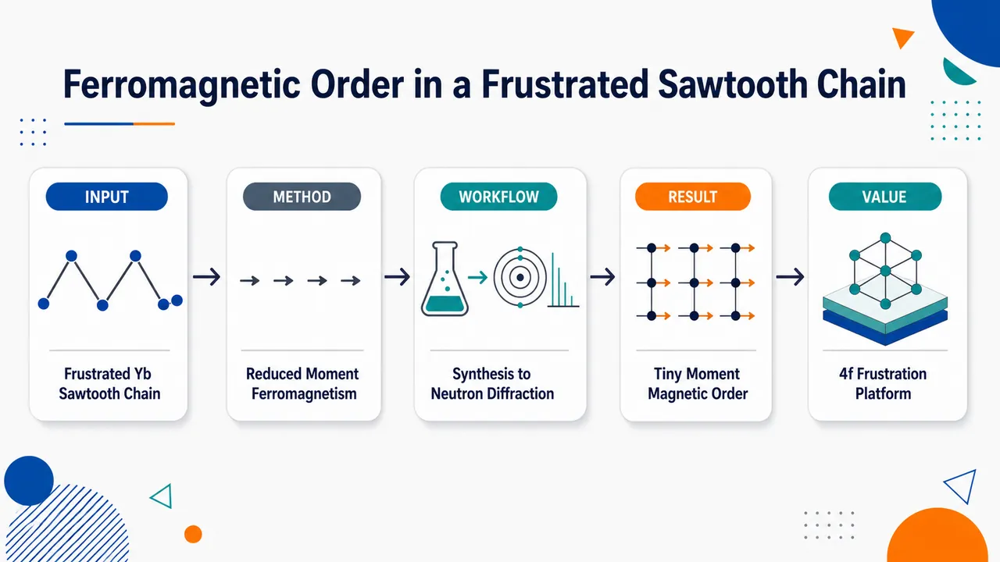
研究问题在Yb³⁺沿b轴组成的有效自旋1/2锯齿链半导体ZnYb₂S₄中，强反铁磁交换竞争为何没有形成常规反铁磁、二聚体或非共线基态，而是在1.4 K出现小磁矩铁磁样有序；核心是揭示4f电子锯齿链磁挫折如何压缩有序磁矩并改写低温基态。创新方法将ZnYb₂S₄确立为首个4f电子锯齿链磁挫折实验平台，并用“强负Curie-Weiss温度 + 低熵相变 + 微小自发磁化 + 无反铁磁超晶格峰”的组合证据提出Aha图像：Yb磁矩不是消失，而是在锯齿链挫折中被压缩后铁磁排列，外加磁场可逐步释放挫折并恢复磁矩幅度。工作流程制备多晶ZnYb₂S₄ → X射线衍射与EPMA确认Pnma正交结构、Yb锯齿链和杂质相 → 磁化率与CEF拟合确定Yb³⁺有效自旋1/2 Γ₆ Kramers双重态及反铁磁相互作用 → 比热测量锁定1.4 K相变和27% Rln2低熵释放 → 0.28 K等温磁化观察低场磁滞与0.1 μB/Yb自发磁矩 → 粉末中子衍射排除反铁磁超晶格峰 → 综合得到缩小磁矩铁磁有序模型。关键结果ZnYb₂S₄高温θp = −75.7 K，显示强反铁磁关联；低温Tm = 1.4 K出现相变，但磁熵仅释放27% Rln2；自发磁化只有0.1 μB/Yb，远小于CEF双重态预期1.33 μB/Yb；9 T下磁化恢复至1.1 μB/Yb；中子衍射未发现反铁磁超晶格反射，仅在核Bragg峰附近有微弱增强，支持小Yb磁矩铁磁排列。应用价值该研究提供了研究4f有效自旋1/2锯齿链挫折的新材料平台，展示了“反铁磁关联背景中的缩小磁矩铁磁态”这一非常规基态，可推动包含强自旋–轨道耦合、晶体电场、链间交换和量子涨落的稀土低维磁性理论发展，并为磁场调控受挫磁矩幅度提供实验范例。第一部分：核心概览 (Overview)
ZnYb₂S₄被确立为首个表现出锯齿链磁挫折特征的4f电子体系。Yb³⁺沿 b轴形成有效自旋1/2锯齿链，尽管高温居里–外斯行为显示强反铁磁相互作用（θp ≈ −75.7 K），低温却在 Tm = 1.4 K 发生具有小自发磁化的铁磁样有序。磁熵在Tm仅释放 27% Rln2，自发磁矩仅 0.1 μB/Yb，远低于CEF基态双重态预期 1.33 μB/Yb。中子衍射未见反铁磁超晶格峰，支持“被挫折压缩的Yb磁矩铁磁排列”这一非常规基态。
---
第二部分：结构化快速回顾
《Ferromagnetic Order of Reduced Magnetic Moments in a Frustrated Sawtooth Chain of the Magnetic Semiconductor ZnYb₂S₄》（None，）
背景
锯齿自旋链中最近邻 J₁ 与次近邻 J₂ 反铁磁交换竞争，可诱发自旋二聚体、磁化平台、非共线有序等量子态。此前4f电子锯齿链体系缺乏实验实例，ZnYb₂S₄因Yb³⁺沿b轴形成锯齿链而成为关键候选。
方法
制备多晶ZnYb₂S₄，结合粉末X射线衍射、EPMA、磁化率、比热、低温等温磁化、粉末中子衍射与CEF拟合分析，覆盖 0.28–300 K、磁场最高 14 T。
结果
磁化率显示Yb³⁺主导磁性，θp = −75.7 K表明反铁磁关联；CEF基态为孤立 Γ₆ Kramers双重态。比热在 1.4 K 出现尖峰，磁熵仅为 27% Rln2。0.28 K磁化出现低场磁滞，自发磁化约 0.1 μB/Yb，9 T达 1.1 μB/Yb。中子衍射未观察到反铁磁超晶格反射。
讨论
基态表现为铁磁排列但磁矩显著缩小，与经典反铁磁锯齿链理论预言的AFM态、自旋二聚体态、非共线态不同。可能原因包括链间交换、额外交换路径或四分之一填充Hubbard模型中的铁磁基态机制。
局限
实验使用多晶样品，无法解析磁各向异性；粉末中子衍射信号弱，磁矩大小和方向不确定；杂质相Yb₂S及2.6 K异常尚未完全澄清。
结论
ZnYb₂S₄呈现由锯齿链磁挫折导致的缩小磁矩铁磁有序，是研究4f有效自旋1/2锯齿链挫折物理的新平台。
---
第三部分：逐章节冷凝解析 (Section-by-Section Condensing)
Abstract
Sawtooth-chain frustration suppresses conventional order
锯齿自旋链的核心物理来自最近邻与次近邻相互作用竞争，导致长程序被压制，并产生非常规量子态。摘要直接指出：*"In a sawtooth spin chain, competing nearest- and next-nearest-neighbor interactions suppress long-range order, yielding novel quantum states such as a spin-dimer singlet, 1/2 magnetization plateau, and spin contraction."*
这里的关键是spin contraction，即有序磁矩幅度被量子涨落或挫折显著压缩。
ZnYb₂S₄ realizes an effective spin-1/2 Yb sawtooth chain
ZnYb₂S₄为正交晶系半导体，Yb³⁺离子携带有效自旋1/2，并沿 b轴构成锯齿链。摘要给出结构—磁性连接：*"the orthorhombic semiconductor ZnYb₂S₄, in which Yb³⁺ ions with an effective spin-1/2 form a sawtooth chain along the b-axis."*
Low-temperature transition releases only a small fraction of doublet entropy
比热在 Tm = 1.4 K 出现尖锐峰，但磁熵到Tm仅达到 27% Rln2，说明大量低能自由度已在转变前通过短程关联释放：*"The specific heat exhibits a sharp peak at Tm = 1.4 K, at which the magnetic entropy Sm reaches only 27% of R ln2."*
这一低熵相变是磁挫折体系的典型证据。
Spontaneous magnetization is an order of magnitude smaller than expected
0.28 K下等温磁化在 |B| ≤ 0.2 T 出现磁滞，显示铁磁样行为；但自发磁化仅 0.1 μB/Yb，比Yb³⁺CEF基态双重态预期小约一个数量级：*"The spontaneous magnetization is only 0.1 μB/Yb, an order of magnitude smaller than that expected for the ground state doublet of Yb³⁺."*
Neutron diffraction excludes ordinary antiferromagnetic superstructure
粉末中子衍射在 T < Tm 未见反铁磁超晶格反射：*"no superlattice reflections due to antiferromagnetic order are observed for T < Tm."*
由此得到基态图像：Yb磁矩铁磁排列，但幅度因锯齿链磁挫折被压缩；摘要结论为：*"the Yb moments are ferromagnetically aligned, but their amplitude is reduced by magnetic frustration in the sawtooth Yb chain."*
---
I Introduction
Geometrical frustration creates quantum states beyond conventional order
几何挫折通过竞争交换相互作用压制长程磁有序，产生自旋二聚体、磁化平台、量子自旋液体等状态。引言开篇概括：*"geometrical frustration is of great interest since competing magnetic exchange interactions suppress long-range order and give rise to novel quantum states, including spin-dimer singlets, magnetization plateaus, and quantum spin liquids."*
该研究定位于强关联电子系统中的挫折磁性。
4f systems add spin–orbit coupling and CEF physics to frustration
挫折效应不仅存在于d电子体系，也存在于具有强自旋–轨道耦合的f电子体系：*"These frustration effects have been investigated not only in d-electron spin systems but also in f-electron systems with strong spin–orbit coupling."*
4f体系的重要性在于局域磁矩、强SOC和晶体电场共同产生高度各向异性交换。
Yb-based triangular systems established effective spin-1/2 rare-earth frustration
Yb基绝缘体和半导体中，4f¹³构型、强SOC与CEF效应可产生有效自旋1/2与各向异性交换：*"Yb-based insulators and semiconductors with 4f¹³ configuration featuring a triangular Yb lattice have attracted considerable interest, as strong spin–orbit coupling and crystalline electric field (CEF) effects give rise to effective spin-1/2 systems with highly anisotropic exchange interactions."*
典型例子包括 YbMgGaO₄、NaYbX₂、CsYbSe₂ 等。
YbMgGaO₄ and Na/Cs Yb chalcogenides provide nearby context
YbMgGaO₄中有效自旋1/2磁矩低至 0.048 K 无相变，被解释为无能隙量子自旋液体候选：*"In YbMgGaO₄, a gapless quantum spin liquid state has been proposed, as the effective spin-1/2 moments show no phase transition down to 0.048 K."*
NaYbSe₂与CsYbSe₂在磁场中出现 1/3磁化平台：*"NaYbSe₂ and CsYbSe₂ exhibit 1/3 magnetization plateaus."*
YbCuS₂ demonstrates reduced ordered moments in a frustrated Yb chain
半导体 YbCuS₂ 中Yb³⁺形成锯齿链，出现 To = 0.95 K 一级相变，低温存在约化有序Yb磁矩的非公度排列：*"in the semiconductor YbCuS₂ with a Yb³⁺ zigzag chain, a first-order phase transition appears at To = 0.95 K, below which an incommensurate alignment of reduced ordered Yb moments has been revealed."*
其自旋晶格弛豫率 T₁⁻¹ ∝ T，提示无能隙激发：*"the spin-lattice relaxation rate T₁⁻¹ shows a T-linear behavior, indicating a gapless spin excitation."*
The sawtooth chain Hamiltonian contains competing J₁ and J₂ antiferromagnetic exchanges
锯齿链由最近邻 J₁ 与隔点次近邻 J₂ 构成，二者均取反铁磁正值：*"competition between the nearest-neighbor interaction J₁ and the next-nearest-neighbor interaction J₂ induces magnetic frustration."*
哈密顿量写作
[
H=J₁sumᵢ₍S₂ᵢ₋₁ḑotS₂ᵢ+S₂ᵢḑotS₂ᵢ₊₁)+J₂sumᵢS₂ᵢ₋₁ḑotS₂ᵢ₊₁
]
并明确：*"J₁, J₂ (> 0) are antiferromagnetic (AFM) exchange interactions."*
Known sawtooth-chain theory predicts AFM, dimer, and noncollinear phases
理论预言基态随 J₂/J₁ 改变：小J₂时为AFM基态，0.5 < J₂/J₁ < 1.5 时为有能隙自旋二聚体，大J₂时为非共线磁有序：*"Its ground states are predicted as a function of J₂/J₁ as follows ... When J₂ is much smaller than J₁ ... the ground state is an AFM ground state ... For 0.5 < J₂/J₁ < 1.5, a gapped spin-dimer state is formed ... For larger J₂, the ground state becomes a noncollinear magnetic order."*
在非共线相中可出现 1/2磁化平台：*"In this phase, a 1/2 magnetization plateau may appear in the isothermal magnetization."*
4f-electron sawtooth-chain behavior had remained experimentally unreported
锯齿链已有d电子材料案例，如Cu₂Cl(OH)₃中可能出现1/2平台；但4f电子锯齿链性质尚缺乏实验证据：*"the characteristic properties of 4f-electron sawtooth chain systems have not yet been reported."*
这一空白构成ZnYb₂S₄研究的直接动机。
ZnYb₂S₄ has two Yb sites forming a sawtooth chain along the b-axis
ZnYb₂S₄为稀土基半导体橄榄石结构，空间群 Pnma。Yb³⁺位于两个晶体学位置：Yb(1) 4a位点与 Yb(2) 4c位点，沿b轴形成锯齿链：*"the Yb³⁺ ions of Yb(1) at the 4a site ... and Yb(2) at the 4c site ... form a sawtooth chain along the b-axis."*
Previous susceptibility showed strong AFM interactions but no transition above 1.8 K
早期结果显示50–350 K服从居里–外斯律，μeff = 4.72 μB/Yb 接近自由Yb³⁺ 4.54 μB，θp = −75.2 K 表明反铁磁相互作用，但 1.8 K以上 未见相变：*"The effective magnetic moment, μeff = 4.72 μB/Yb, is close to that of a free Yb³⁺ ion, 4.54 μB. The negative paramagnetic Curie temperature, θp = −75.2 K, indicates AFM interactions between the Yb moments. However, no phase transition has been reported above 1.8 K."*
Central question is low-temperature ordering and frustration-modified ground state
研究目标聚焦于更低温下是否出现相变，以及锯齿链磁挫折如何塑造基态：*"investigate its magnetic properties to clarify whether a phase transition occurs at lower temperatures and how magnetic frustration in the sawtooth Yb chain affects the formation of the ground state."*
---
II Experimental
Polycrystalline ZnYb₂S₄ was synthesized through solid-state reaction
样品采用固相反应制备。先将Yb金属与S粉在真空石英管中 800 °C反应2天 生成Yb₂S₃，再将Yb₂S₃与ZnS压片后密封，加热至 1000 °C并保温5天：*"Yb metal was reacted with S powder to synthesize Yb₂S₃ ... at 800 °C for 2 days. The Yb₂S₃ and ZnS mixed pellet ... was heated to 1000 °C and held for 5 days."*
Structural characterization confirmed the expected orthorhombic phase
粉末XRD Rietveld精修得到晶格常数：
- a = 13.2561(2) Å
- b = 7.71522(12) Å
- c = 6.26863(10) Å
这些数值与前人结果一致：*"Rietveld analysis of the powder X-ray diffraction pattern yielded lattice constants of a = 13.2561(2) Å, b = 7.71522(12) Å, and c = 6.26863(10) Å, which agree with those reported in the previous work."*
EPMA revealed near-stoichiometric main phase with sulfur deficiency-like composition
EPMA确认主相原子比为 Zn : Yb : S = 1.02(1) : 2 : 3.80(3)：*"EPMA confirmed that the atomic composition of the main phase is Zn : Yb : S = 1.02(1) : 2 : 3.80(3)."*
S含量略低于理想4，但论文未将其作为主要物理机制讨论。
A minor impurity phase was identified as unreported Yb₂S
XRD存在弱杂质峰，其强度比主相最强峰小 12%；EPMA将其识别为未报道过的 Yb₂S：*"small peaks from an impurity phase were observed; however, their intensities are smaller by 12% than the most intense peak of the main phase. Using EPMA, we identified the impurity phase as Yb₂S, a compound that has not yet been reported."*
Specific heat covered sub-kelvin to room-temperature regimes and high fields
比热测量覆盖 0.4–19 K，磁场最高 14 T，使用Quantum Design PPMS；另用CFMS-9T测至 300 K：*"Specific heat C(T) was measured between 0.4 and 19 K in magnetic fields up to B = 14 T using a Quantum Design PPMS and up to 300 K with a Cryogen Free Measurement System."*
Magnetization was measured down to 0.28 K
常规磁化 1.8–300 K 使用MPMS；低温至 0.28 K、磁场 B ≤ 9 T 使用自制电容法Faraday磁强计和³He低温系统：*"Measurements of M(T,B) at low temperatures down to 0.28 K were conducted in magnetic fields of B ≤ 9 T using a laboratory-built capacitive Faraday magnetometer equipped in a ³He cryostat."*
Powder neutron diffraction used HERMES at JRR-3M
中子衍射在HERMES粉末衍射仪上进行，中子波长 2.1974(2) Å，样品装入圆柱形钒胶囊并冷却至 0.7 K：*"Neutrons with a wavelength of 2.1974(2) Å were obtained using the 331 Bragg reflection of a deformed single-crystal Ge monochromator. The powdered sample was sealed in a cylindrical vanadium capsule and cooled in a 1 K refrigerator down to 0.7 K."*
---
III Results and discussion
III.1 Magnetic susceptibility
High-temperature susceptibility follows Curie–Weiss behavior
在 B = 0.1 T 下，磁化率倒数 B/M 在 T > 70 K 线性随温度变化，表明居里–外斯行为：*"For T > 70 K, B/M increases linearly with temperature, indicating the Curie–Weiss behavior."*
Effective moment confirms Yb³⁺-dominated magnetism
居里–外斯拟合得到 μeff = 4.78 μB/Yb，接近自由Yb³⁺的 4.54 μB：*"A Curie–Weiss fit ... yields an effective magnetic moment of μeff = 4.78 μB per Yb ion. This value is close to the expected 4.54 μB for a free Yb³⁺ ion."*
这说明磁性主要来自Yb³⁺ 4f磁矩，而不是杂质或Zn/S骨架。
Negative Curie temperature indicates dominant AFM interactions
拟合得到 θp = −75.7 K，负号表示Yb磁矩间主要为反铁磁相互作用：*"The Curie–Weiss fit gives a paramagnetic Curie temperature of θp = −75.7 K. The negative sign of θp indicates predominant AFM interactions between the Yb moments."*
这一强负θp与最终铁磁样基态形成鲜明反差。
CEF analysis assumes regular octahedral environment for both Yb sites
ZnYb₂S₄有两个晶体学不同的Yb位点，但二者均由六个S原子构成近似畸变八面体，因此用立方点群近似处理CEF：*"both Yb ions are encapsulated similarly in slightly distorted octahedra of six S atoms ... we assume that the Yb ion is encapsulated in a regular octahedron, corresponding to the cubic point group."*
Cubic CEF Hamiltonian uses Stevens operators with W and x parameters
Yb³⁺的总角动量为 J = 7/2，CEF哈密顿量包含四阶与六阶Stevens算符：*"The cubic CEF Hamiltonian for a Yb³⁺ ion with J = 7/2 is..."*
模型参数为 W 与 x，用于描述立方晶体场能级分裂。
Mean-field susceptibility includes exchange parameter λ
为考虑Yb磁矩间交换相互作用，引入平均场参数 λ，关系式为
[
1/ḩi = 1/ḩiₘ̊ CEF - łambda
]
原文表述为：*"Introducing a mean-field parameter, λ, to account for exchange interactions among Yb moments, the inverse magnetic susceptibility χ⁻¹ (= B/M) is expressed as..."*
CEF fit yields W = 25.7 K, x = −1.0, λ = −6.19 Yb-mol/emu
CEF拟合得到 W = 25.7 K、x = −1.0、λ = −6.19 Yb-mol/emu：*"Fitting the B/M data ... yields W = 25.7 K, x = −1.0, and λ = −6.19 Yb-mol/emu."*
该λ对应 θp = −17.7 K，仍指向AFM交换：*"This λ corresponds to a paramagnetic Curie temperature θp = −17.7 K, indicating AFM interactions."*
CEF levels establish an effective spin-1/2 Kramers doublet
立方CEF将Yb³⁺的八重J多重态分裂为：
- Γ₆双重态基态
- Γ₈四重态，309 K
- Γ₇双重态，824 K
原文为：*"The cubic CEF splits the eight-fold J multiplet into three levels: a Γ₆ doublet ground state, a first excited Γ₈ quartet at 309 K, and a Γ₇ doublet at 824 K."*
由于第一激发态高达309 K，低温下只需考虑孤立Kramers双重态：*"The well-isolated Γ₆ doublet ground state realizes an effective spin-1/2 system at low temperatures."*
Expected moment of the isolated doublet is 1.33 μB/Yb
CEF基态双重态预期磁矩为 1.33 μB/Yb：*"with an expected value of the magnetic moment of 1.33 μB/Yb."*
这一数值是后续判断低温有序磁矩“缩小”的基准。
---
III.2 Specific heat
Specific heat shows a sharp phase-transition peak at 1.4 K
总比热在 Tm = 1.4 K 出现尖峰，说明CEF基态双重态发生相变：*"A sharp peak appears at Tm = 1.4 K, indicating a phase transition of the ground state doublet."*
A smaller anomaly at 2.6 K is attributed to impurity
另一个小峰位于 T* = 2.6 K，更可能源自杂质相，但起源未定：*"Another small peak is detected at T* = 2.6 K, which is most likely due to an impurity phase, although its origin has not yet been clarified."*
Magnetic specific heat was obtained by subtracting Debye phonons
磁比热 Cm 由总比热扣除声子贡献得到；声子部分用Debye模型估算，Debye温度为 θD = 250 K，可合理重现实验 30–200 K 数据：*"Cm is obtained by subtracting the phonon contribution from the total specific heat C ... we use the Debye model with a Debye temperature of θD = 250 K, which reasonably reproduces the C(T) data between 30 and 200 K."*
Magnetic entropy at Tm is only 27% of Rln2
磁熵 Sm(T) 通过积分 Cm/T 得到；在 Tm 处仅达到 27% Rln2：*"The magnetic entropy, Sm(T), ... is calculated by integrating the Cm/T data with respect to temperature. At Tm, Sm(T) reaches 27% of R ln2."*
这一异常低的相变熵表明基态双重态的熵在相变前已被短程关联消耗。
Entropy release above Tm is a hallmark of magnetic frustration
低于Rln2的相变熵被解释为磁挫折导致的提前熵释放：*"This reduced entropy indicates that the entropy of the doublet ground state is released above Tm, which is a hallmark of magnetic frustration."*
这里的逻辑是：若为普通局域自旋1/2有序，主要熵应集中在转变附近释放；挫折体系中大量熵会在宽温区通过短程关联逐步释放。
Full Rln2 entropy recovered by 13 K confirms Kramers doublet
随着温度升高，Sm在 13 K 达到 Rln2，符合低温有效二能级/Kramers双重态自由度：*"As the temperature increases, Sm(T) reaches R ln2 at 13 K, indicating that the CEF ground state is a Kramers doublet."*
Magnetic field broadens and shifts the heat-capacity anomaly
比热在 B = 0、0.1、0.3、0.5、1、3 T 下测量。0.1 T时峰变宽并略向高温移动；更高磁场下峰逐渐被压制、变宽且继续移向高温：*"At B = 0.1 T, the peak broadens and shifts slightly to higher temperatures. With a further increase in B, the peak is gradually suppressed, becomes broader, and shifts to higher temperatures."*
At 3 T the anomaly becomes a Schottky-like broad maximum at 2.3 K
在 B = 3 T 下，尖锐相变峰演变为 2.3 K 附近宽峰，与磁场劈裂能级产生的Schottky比热相符：*"Ultimately, a broad maximum appears at 2.3 K in B = 3 T, which is moderately consistent with the Schottky specific heat expected from split energy levels."*
Field response suggests ferromagnetic-like ground state
外场使有序峰被抹平为交叉行为，说明基态具有铁磁样特征，且外场抑制相变型有序：*"This crossover behavior suggests that the ground state of ZnYb₂S₄ is ferromagnetic-like, and that the magnetic order is suppressed by an applied magnetic field."*
Magnetization anomaly is strong at 0.03 T but indistinct at 0.5 T
低场 B = 0.03 T 中，磁化在Tm附近随升温急剧下降；B = 0.5 T 中这一变化不明显：*"the magnetization drops sharply around Tm at B = 0.03 T as the temperature increases, whereas this change becomes indistinct at B = 0.5 T."*
这与铁磁样低场有序被较小外场极化/平滑化一致。
The impurity-related 2.6 K anomaly disappears at 3 T
2.6 K附近可能来自杂质相的比热峰在 B = 3 T 消失：*"the peak of C(T) at 2.6 K, which may originate from an impurity phase, disappears at B = 3 T."*
---
III.3 Isothermal magnetization
Low-temperature magnetization shows hysteresis below Tm
等温磁化在 T = 0.28、1.0、1.6 K 测量。0.28 K低于Tm，磁化在 |B| ≤ 0.2 T 出现磁滞：*"At T = 0.28 K (< Tm), M(B) exhibits hysteresis for |B| ≤ 0.2 T."*
1.0 K仍有磁滞，1.6 K高于Tm后磁滞消失：*"Hysteresis is also present at 1.0 K, but disappears at 1.6 K, above Tm."*
Magnetization increases monotonically above 0.2 T and reaches 1.1 μB/Yb at 9 T
0.28 K下，磁化在 B > 0.2 T 后单调增加，至 9 T 达到 1.1 μB/Yb：*"M(B) ... increases monotonically for B > 0.2 T, reaching 1.1 μB/Yb at 9 T."*
这说明外场逐步恢复被挫折压缩的Yb磁矩。
Spontaneous magnetization is only 0.1 μB/Yb
0.28 K自发磁化约 0.1 μB/Yb，比CEF基态双重态预期 1.33 μB/Yb 小约一个数量级：*"The spontaneous magnetization at 0.28 K is about 0.1 μB/Yb, roughly an order of magnitude smaller than the expected 1.33 μB/Yb for the ground state doublet of Yb³⁺."*
这是“reduced magnetic moments”的核心实验证据。
High-field magnetization is nearly temperature-independent across Tm
在 B ≥ 1 T 区间，0.28 K与1.6 K的M(B)几乎相同，跨越了有序温度Tm：*"M(B) for B ≥ 1 T is almost identical between 0.28 K and 1.6 K, i.e., both below and above Tm."*
这说明磁场释放挫折并恢复磁矩，而不是单纯增强低温有序。
Field-induced recovery of moments is interpreted as frustration release
高场下Yb磁矩可能被恢复，因为磁场削弱/释放锯齿链中的磁挫折：*"This suggests that the Yb moments may be recovered by applying magnetic fields, which release the magnetic frustration."*
No 1/2 magnetization plateau is observed
理论反铁磁锯齿链可出现 1/2磁化平台，但ZnYb₂S₄在 T < Tm 未观察到：*"It is noted that 1/2 magnetization plateau does not appear for T < Tm, contrary to the theoretical prediction for the AFM sawtooth chain."*
这一负结果表明其有效模型超出简单AFM J₁–J₂锯齿链。
---
III.4 Powder neutron diffraction
Neutron diffraction was used to search for magnetic reflections below Tm
粉末中子衍射在 T = 0.7、2.1、10 K 进行，其中0.7 K低于Tm，2.1 K高于Tm：*"we carried out powder neutron diffraction experiments at T = 0.7, 2.1, and 10 K."*
目标是检验低温磁反射并精修结构：*"To examine magnetic reflections below Tm and refine the structural parameters."*
Most peaks are indexed by the Pnma orthorhombic structure
多数峰可由ZnYb₂S₄正交 Pnma 晶体结构标定：*"Most of the peaks can be indexed using the orthorhombic crystal structure of ZnYb₂S₄ with the space group of Pnma."*
Low-temperature lattice constants show no structural anomaly
0.7 K晶格常数为：
- a = 13.2356(4) Å
- b = 7.7064(3) Å
- c = 6.2606(2) Å
与2.1 K、10.0 K几乎相同：*"The lattice constants at 0.7 K are determined as a = 13.2356(4) Å, b = 7.7064(3) Å, and c = 6.2606(2) Å, which are nearly identical to those at 2.1 and 10.0 K."*
这排除了明显结构相变驱动的低温异常。
Yb(2) coordinates remain unchanged below Tm
Yb(2)原子坐标在误差范围内等同，说明低温未出现显著晶格调制：*"the atomic coordinate for the Yb(2) site is equivalent within the error, indicating no distinct lattice modulation upon cooling below Tm."*
Impurity reflections appear at 44.1° and 8.9°
约 2θ = 44.1° 的反射为温度无关杂质峰：*"The black arrows at around 2θ = 44.1° may indicate a temperature-independent extrinsic reflection from an impurity phase."*
8.9° 处在0.7 K和2.1 K均出现额外反射，因ZnYb₂S₄在1.4 K有序，故该峰可能来自磁性杂质：*"An additional reflection at 8.9° is seen at T = 0.7 K and 2.1 K ... although it likely arises from a magnetic impurity, since ZnYb₂S₄ orders at Tm = 1.4 K."*
No AFM superlattice reflections are observed below Tm
0.7 K与2.1 K强度差谱用于提取相变相关磁散射；未观察到反铁磁调制导致的超晶格峰：*"No superlattice reflections were observed that would arise from antiferromagnetic modulation of the Yb moments."*
这一结果与磁化曲线中没有变磁转变一致：*"in line with the lack of a metamagnetic transition in the isothermal magnetization at T = 0.28 K."*
A subtle intensity increase near nuclear Bragg peaks supports ferromagnetic-like order
约 27° 附近、接近 111 和 201 Bragg峰的位置出现轻微强度增加：*"a subtle increase in intensity is observed around 27°, near the 111 and 201 Bragg peaks."*
铁磁有序不会产生新的超晶格峰，而会增强核Bragg峰附近强度，因此该信号支持铁磁样排列。
Uniform moment refinement gives a highly uncertain 0.8(7) μB/Yb
若假设Yb磁矩均匀排列，27°附近强度可由 0.8(7) μB/Yb 的磁矩解释：*"the measured intensity around 27° is still reasonable, provided that the Yb moments are uniformly aligned with a magnitude of 0.8(7) μB/Yb."*
误差极大，不能可靠确定磁矩大小和方向：*"it should be difficult to discuss the amplitude and alignment of the ordered Yb moments because of the inaccuracy of the estimated value."*
Single-crystal high-resolution diffraction is required for magnetic structure
粉末中子衍射不足以确定磁结构，需要单晶高分辨衍射：*"To determine the magnetic structure, high-resolution diffraction measurements using a single crystal are highly desirable."*
---
III.5 Ground state of the Yb sawtooth chain
Multiple probes converge on reduced-moment ferromagnetic alignment
磁化随冷却增强、Tm处磁熵降低、Tm随磁场演化、中子衍射无超晶格峰等证据共同表明：Yb磁矩铁磁排列，但幅度远小于孤立CEF双重态预期 ~1.33 μB/Yb。原文整合为：*"the Yb moments are ferromagnetically aligned, although their magnitude is markedly reduced compared to the expected value (~1.33 μB/Yb) for the isolated doublet ground state, presumably due to magnetic frustration in the sawtooth Yb chain."*
Reduced Yb moments resemble the frustrated Yb zigzag-chain system YbCuS₂
类似的约化Yb有序磁矩近期在YbCuS₂中观察到：*"The magnetic order with the reduced Yb ordered moments has been recently observed in the frustrated Yb zigzag chain system YbCuS₂."*
这表明4f链状挫折体系中“有序但磁矩显著缩小”可能是一类普遍现象。
Magnetic field recovers moment amplitude by releasing frustration
在ZnYb₂S₄中，外场使缩小的Yb磁矩逐渐增大，机制被解释为磁挫折释放：*"it is expected in ZnYb₂S₄ that the reduced Yb moments ... are increased ... due to release of the magnetic frustration in magnetic fields."*
Observed ground state differs from standard sawtooth-chain predictions
均匀排列的约化磁矩不同于理论AFM锯齿链预期的AFM序、自旋二聚体态和伴随1/2平台的非共线序：*"This uniform alignment of the reduced magnetic moments is distinct from the theoretically predicted ground states, such as the AFM order, the spin dimer state, and noncollinear order reminiscent of 1/2 magnetization plateau."*
Extra exchange interactions may explain the discrepancy
理论模型通常忽略链间交换或额外交换路径，而这些相互作用可能改变基态：*"This discrepancy may be attributed to additional exchange interactions between the Yb moments, e.g., inter-chain exchange interactions, which are neglected in the aforementioned theoretical models."*
Quarter-filled Hubbard-model physics offers another route to ferromagnetism
四分之一填充绝缘Hubbard模型理论显示，基态可在宽参数范围内为铁磁态，且邻近具有AFM关联的顺磁区：*"theoretical analyses using Hubbard models for the quarter-filled insulating case indicate that the ground state should be ferromagnetic over a broad range of parameters, close to the paramagnetic regions with AFM correlations."*
这为“高温AFM关联 + 低温铁磁样基态”的并存提供理论可能。
ZnYb₂S₄ combines AFM paramagnetic correlations with ferromagnetic ground-state alignment
ZnYb₂S₄顺磁态中的AFM关联由负θp支持，而基态却是锯齿链中Yb磁矩铁磁排列：*"the AFM correlations in the paramagnetic state are suggested by the negative paramagnetic Curie temperature θp, while the ground state is characterized by ferromagnetically aligned Yb moments in the sawtooth chain."*
这种“反铁磁关联背景中的铁磁约化磁矩有序”是主要物理奇异性。
Further microscopic and anisotropic measurements are indispensable
后续需要单晶样品上的自旋关联和磁各向异性研究：*"Further microscopic measurements of spin correlations and investigations of anisotropic magnetic properties using a single-crystalline sample are indispensable."*
---
IV Summary
ZnYb₂S₄ contains Yb³⁺ sawtooth chains along the b-axis
总结明确研究对象为沿b轴含Yb³⁺锯齿链的多晶ZnYb₂S₄：*"polycrystalline samples of ZnYb₂S₄, which contains sawtooth chains of Yb³⁺ along the b-axis."*
Curie–Weiss susceptibility confirms AFM interactions among Yb³⁺ moments
磁化率在 70 ≤ T ≤ 300 K 服从居里–外斯律，负θp表明Yb³⁺磁矩间反铁磁相互作用：*"M(T)/B follows the Curie–Weiss law for Yb³⁺ in the temperature range of 70 ≤ T ≤ 300 K, and the negative value of θp indicates antiferromagnetic interactions between the Yb³⁺ moments."*
CEF ground state is an effective spin-1/2 Kramers doublet
低温磁性来自孤立Kramers双重态，形成有效自旋1/2体系：*"The CEF ground state of Yb³⁺ is a well-isolated Kramers doublet, giving rise to an effective spin-1/2 system."*
Specific heat establishes a 1.4 K phase transition with strongly reduced entropy
比热在 Tm = 1.4 K 有尖峰，磁熵仅为 27% Rln2，小于Kramers双重态完整熵：*"The specific heat, C(T), exhibits a sharp peak at Tm = 1.4 K, indicating a phase transition. The magnetic entropy Sm at Tm is only 27% of R ln2."*
Entropy release above Tm reflects sawtooth-chain frustration
部分Kramers双重态熵在Tm以上已释放，原因归于锯齿Yb链磁挫折：*"a portion of Sm in the Kramers doublet is released even above Tm due to magnetic frustration in the sawtooth Yb chain."*
Field evolution of heat capacity indicates crossover from order to polarized levels
随磁场增加，比热峰变宽并向高温移动：*"As the magnetic field increases, the peak in C(T) broadens and shifts to higher temperatures."*
这与铁磁样基态被外场平滑极化、形成Schottky型交叉相符。
Isothermal magnetization shows low-temperature hysteresis and tiny spontaneous moment
低于Tm时M(B)存在磁滞，自发磁化为 0.1 μB/Yb：*"M(B), shows hysteresis for T < Tm, with a spontaneous magnetization of 0.1 μB/Yb."*
High-field magnetization recovers to 1.1 μB/Yb at 9 T
在 B > 0.2 T 后M(B)单调上升，9 T 达 1.1 μB/Yb：*"for B > 0.2 T, M(B) increases monotonously, reaching 1.1 μB/Yb at 9 T."*
Neutron diffraction supports small-moment ferromagnetic order rather than AFM order
粉末中子衍射未见反铁磁超晶格反射，仅在Bragg位置观察到微弱强度增加：*"Powder neutron diffraction revealed no superlattice reflections associated with antiferromagnetic order, and instead, a subtle intensity increase was observed at Bragg positions, suggesting a ferromagnetic order of small Yb moments."*
Final physical picture is frustration-reduced ferromagnetic alignment
ZnYb₂S₄基态中，Yb磁矩被锯齿链挫折压缩后铁磁排列，并在外场下逐步恢复：*"the Yb moments reduced by magnetic frustration within the sawtooth Yb chain become ferromagnetically aligned, and are gradually recovered upon applying magnetic fields."*
ZnYb₂S₄ is identified as the first 4f sawtooth-chain frustration system
核心定位为首个表现锯齿链磁挫折特征的4f电子体系：*"ZnYb₂S₄ is the first 4f-electron system exhibiting characteristic properties arising from magnetic frustration in the sawtooth chain."*
Single crystals are necessary for spin correlations and anisotropy
完整理解仍需单晶上的自旋关联与磁各向异性实验：*"it is indispensable to conduct experimental investigations of spin correlations and magnetic anisotropy using single crystals."*
---
第四部分：深度理解与语言支持 (Understanding & Nuance)
1. 术语解析
#### Geometrical frustration
语境中指晶格几何使所有局域交换相互作用无法同时满足。例如三角形或锯齿链中，若所有相邻自旋都倾向反平行排列，则第三条边会产生不可满足约束。这里不是“实验误差导致的不确定”，而是哈密顿量本身的竞争结构。对应表述：*"competing magnetic exchange interactions suppress long-range order."*
#### Sawtooth spin chain
“锯齿自旋链”不是普通一维链，而是含交替三角单元的一维结构，可等价看作最近邻J₁与隔点次近邻J₂竞争的链。ZnYb₂S₄中Yb(1)与Yb(2)沿b轴排列形成这种几何。微妙点：它既是一维模型，又在真实晶体中可能受链间交换修正。
#### Reduced magnetic moments / spin contraction
“约化磁矩”并非Yb³⁺价态改变导致磁矩小，而是有效低温有序态中磁矩幅度低于CEF双重态允许值。ZnYb₂S₄中理论CEF基态预期 1.33 μB/Yb，但自发磁化只有 0.1 μB/Yb。这体现强量子涨落、磁挫折或动态关联对静态有序矩的压缩。
#### Kramers doublet
奇数电子数离子在时间反演对称下至少二重简并，Yb³⁺为4f¹³构型，低温CEF基态为Kramers双重态。这里它意味着低温磁自由度可映射为有效自旋1/2，完整磁熵应为 Rln2。
#### Superlattice reflections
中子衍射中的“超晶格反射”指磁有序或结构调制导致的新周期大于原晶胞，从而出现原核结构不允许的新Bragg峰。若出现反铁磁调制，常会产生新的磁峰；ZnYb₂S₄未见此类峰，因此不支持常规AFM长程调制。
---
2. 疑难查证
#### 为什么θp强烈为负，却低温出现铁磁样有序？
θp来自高温顺磁区的平均交换信息，反映总体关联倾向偏反铁磁；但低温基态由完整交换网络、各向异性、链间相互作用、CEF投影、量子涨落共同决定。锯齿链中，AFM J₁和J₂竞争会产生大量近简并态。系统可能在高温表现出AFM短程关联，却在低温通过额外弱相互作用或量子选择机制进入铁磁样排列。
因此，“θp < 0”不等价于“基态必须反铁磁”。ZnYb₂S₄的关键奇异性正是：顺磁态AFM关联与低温铁磁排列共存。
#### 为什么Tm处磁熵只有27% Rln2是挫折证据？
对孤立有效自旋1/2局域矩，若在某一温度发生普通长程有序，接近相变处通常释放相当比例的 Rln2 磁熵。ZnYb₂S₄在Tm = 1.4 K时只释放 27% Rln2，说明剩余73%左右的双重态熵已经在Tm以上通过短程关联、低维涨落或挫折涨落逐步消耗。
这类“宽温区熵释放 + 低温小峰有序”是挫折磁体常见特征。
#### 为什么没有超晶格峰支持铁磁而不是反铁磁？
反铁磁有序通常扩大磁周期，例如自旋上下交替，磁单胞大于晶体单胞，于是中子衍射出现额外磁Bragg峰。铁磁有序不改变晶胞周期，磁散射叠加在已有核Bragg峰上，只表现为原Bragg峰强度微增。ZnYb₂S₄中未见新超晶格峰，但27°附近核Bragg位置有轻微强度增加，因此更符合铁磁样小磁矩有序。
#### 为什么9 T磁化接近1.1 μB/Yb但自发磁化只有0.1 μB/Yb？
低场零场基态中，挫折和量子涨落使静态有序磁矩被强烈压缩。外加磁场提供统一能量尺度，倾向于把局域磁矩沿场方向极化，从而部分解除竞争交换造成的涨落。9 T下达到 1.1 μB/Yb，接近但仍低于CEF基态预期 1.33 μB/Yb，说明磁矩可被场恢复，但未必完全饱和。
---
第五部分：创新评估与关联 (Synthesis & Novelty)
1. 创新性判断
#### First 4f-electron sawtooth-chain frustration platform
最大创新点是将锯齿链挫折物理从传统3d自旋体系扩展到具有强SOC与CEF效应的 4f Yb³⁺有效自旋1/2体系。此前相关领域集中在Yb三角晶格、Yb zigzag链或3d锯齿链；4f锯齿链的实验特征此前尚未报道。该工作给出明确材料平台：ZnYb₂S₄。
#### Discovery of ferromagnetic order of strongly reduced moments
常规AFM锯齿链理论预期包括AFM态、自旋二聚体态、非共线态和1/2磁化平台。ZnYb₂S₄却表现为：
- 高温AFM θp ≈ −75.7 K；
- 低温铁磁样磁滞；
- 自发磁化仅 0.1 μB/Yb；
- 无AFM超晶格峰；
- 外场逐步恢复磁矩。
这种“AFM关联背景中的缩小磁矩铁磁有序”并非简单J₁–J₂锯齿链模型的直接预言。
#### Experimental bridge between YbCuS₂ reduced moments and sawtooth-chain physics
过去2–5年中，YbCuS₂相关研究已揭示受挫Yb zigzag链中的约化有序矩和无能隙激发。ZnYb₂S₄进一步证明，类似的约化磁矩现象可出现在几何上更接近理论锯齿链的Yb体系中，并且其基态不是非公度排列而是铁磁样均匀排列。
#### Field-induced recovery of frustration-suppressed moments
磁场不仅改变相变温度或诱导磁化，还被解释为释放锯齿链磁挫折、恢复Yb磁矩幅度。比热峰向Schottky型宽峰演化、M(B)在高场接近1.1 μB/Yb，共同构成“磁矩幅度可调”的实验证据。
#### Unresolved theoretical challenge
结果挑战现有AFM sawtooth-chain理论：没有1/2平台，没有典型AFM或二聚体基态，而是缩小磁矩铁磁态。可能需要纳入：
- 链间交换；
- 4f体系特有各向异性交换；
- 两个不等价Yb位点；
- 真实CEF波函数；
- Hubbard型电荷/轨道背景；
- 长程偶极或弱铁磁机制。
因此，该材料不仅是新实验体系，也提出了新的理论建模问题。
-
19
📊 含图深析
💡 亮点：层间铁磁耦合增强 FeCo/NiFe 双层自旋流。
📖 展开分析 + 配图
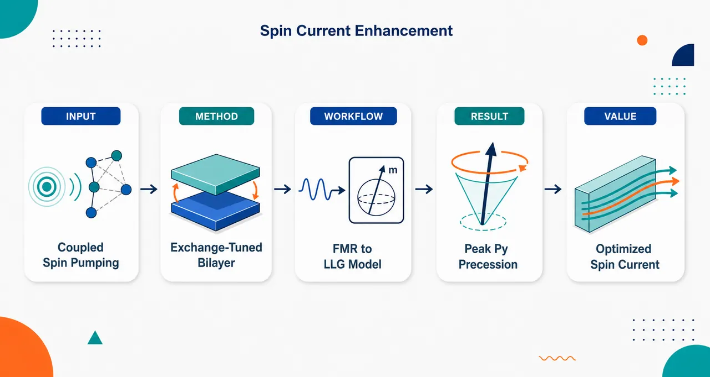
研究问题在 Fe₈₅Co₁₅/Ni₈₀Fe₂₀ 双铁磁层中，层间铁磁交换耦合如何改变两层磁化的 FMR 进动模式，并能否通过调控 Py 层的进动椭圆面积来增强自旋泵浦产生的自旋流。创新方法将低阻尼 Fe₈₅Co₁₅ 驱动层与 Py 层组成外延双铁磁层，把界面交换常数 Jₑₓ 作为“动态调谐旋钮”；通过角分辨/宽频 FMR 与线性化 LLG 双层模型，计算声学模、光学模中的 rf 磁化分量，并用进动椭圆面积 S=πmθmφ 作为自旋流强度的可视化指标。关键 Aha 点是：自旋流增强不是来自无限强耦合，而是来自有限 Jₑₓ 下交换力矩增强与双层锁定之间的最佳平衡。工作流程输入 MgO[100] 衬底上的 Fe₈₅Co₁₅(t)/Py(5 nm) 双层样品，改变 Fe-Co 厚度 5–25 nm；先用 XRR、HRTEM、EELS 确认层厚、外延取向和成分；再用 VSM/MOKE 获得易轴、难轴、磁滞和饱和磁化强度；随后用 X/K/Q 波段 FMR 与 VNA 宽频 FMR 测量共振场角度和频率依赖；最后把 Zeeman 能、退磁能、立方/单轴各向异性和双线性交换能写入 LLG 双层模型，求解声学/光学模、Jₑₓ 下限、rf 进动分量和 Py 层进动面积，输出自旋流增强的最佳耦合条件。关键结果Fe-Co 在 MgO 上外延生长并相对 MgO 旋转 45°，磁滞与 FMR 显示清晰四重立方各向异性，[100] 为易轴、[110] 为难轴；X 波段只观测到一个强声学模，说明 Fe-Co 与 Py 强铁磁耦合，光学模因约 15 GHz 频隙和低强度难以探测；拟合得到立方各向异性场约 216–308 Oe，层间交换常数下限约 0.8–1.3 erg/cm²；模型预测 Py 层进动面积随 Jₑₓ 非单调变化，在有限交换强度处达到峰值，难轴最佳 Jₑₓ 约 0.11 erg/cm²，且 Fe-Co 厚度增加会进一步放大 Py 进动面积。应用价值该研究为双铁磁层自旋泵浦器件提供了新的设计规则：通过调节界面交换耦合、Fe-Co 厚度、磁各向异性和激发频率，可把低阻尼 Fe-Co 的动态优势转移到 Py 层，放大磁化进动面积并提升潜在自旋流输出；相比传统 FM/NM 结构，它提供了“耦合强度最优化”而非单纯材料替换的自旋流增强路径，可用于低功耗自旋电子器件和可调微波磁动力学元件。第一部分：核心概览 (Overview)
Fe₈₅Co₁₅/Ni₈₀Fe₂₀ 双铁磁层中，层间铁磁交换耦合不仅改变 FMR 声学/光学模结构，还可作为调控 Py 层磁化进动面积、进而增强自旋泵浦自旋流的有效旋钮。核心贡献在于将外延 Fe-Co/Py 双层的结构、磁滞、角分辨 FMR、宽频 FMR 与 Landau–Lifshitz–Gilbert 双层模型统一起来，定量提取各向异性场与交换耦合下限，并预测 Py 层进动面积在有限交换常数处出现最大值。该工作把“低阻尼 Fe-Co 合金”与“可调层间交换耦合增强自旋流”连接起来，为双铁磁层自旋流优化提供了比传统 FM/NM 自旋泵浦更丰富的设计自由度。
---
第二部分：结构化快速回顾
《Enhancement of spin current in Fe₈₅Co₁₅/Ni₈₀Fe₂₀ bilayers via interlayer ferromagnetic coupling》（None，）
背景
现代电子学面临小型化、速度与能耗挑战；纯自旋流可降低焦耳热损耗。自旋泵浦中，铁磁体在 FMR 条件下进动并向相邻层注入角动量。Fe-Co 合金因低 Gilbert 阻尼，尤其 Co 含量 10–20% 区间，被视为高效自旋动力学材料。
方法
制备 MgO[100]//Fe₈₅Co₁₅(t)/Py(5 nm) 双层，Fe-Co 厚度为 5、10、15、20、25 nm，并制备 Fe-Co(50 nm)/Py(3 nm)、Fe-Co(3 nm)/Py(50 nm) 参考样品。采用 XRR、HRTEM、EELS、VSM、MOKE、X/K/Q 波段 FMR 与 VNA 宽频 FMR。模型基于含 Zeeman、形状、立方各向异性、单轴各向异性、双线性交换项的自由能，并在线性化 LLG 方程中求解共振与进动分量。
结果
Fe-Co 层在 MgO 上外延生长并相对 MgO 旋转 45°；磁滞回线呈四重对称立方磁晶各向异性，[100] 为易轴，[110] 为难轴。饱和磁化强度随 Fe-Co 厚度由 913 emu/cm³ 增至 1571 emu/cm³。FMR 仅在 X 波段观测到声学模，表明双层强耦合；拟合得到立方各向异性场 216–308 Oe，层间交换常数下限约 0.8–1.3 erg/cm²。
讨论
交换耦合使 Fe-Co 与 Py 的进动分量混合，形成声学模与光学模。光学模存在约 15 GHz 频隙且强度弱，难以在低频或高频实验中检测。Py 层进动椭圆面积随 Jₑₓ 非单调变化，在特定交换强度处达到最大，从而可最大化自旋泵浦注入自旋流。
局限
Jₑₓ 只能给出下限，因为强耦合下声学模共振场接近 Jₑₓ→∞ 极限，导致精确定量存在内禀不确定性。自旋流增强主要通过进动面积间接推断，未直接测量 ISHE 电压或自旋流密度。光学模实验上未被清晰探测。
结论
Fe-Co/Py 双层中的层间铁磁耦合可显著调节磁化进动轨道，Py 层进动面积在有限 Jₑₓ 下出现峰值。自旋流强度可通过层间交换常数、Fe-Co 厚度、材料饱和磁化强度与激发频率进行优化。
---
第三部分：逐章节冷凝解析 (Section-by-Section Condensing)
Abstract
- Interlayer coupling controls spin-wave behavior
Fe₈₅Co₁₅/Ni₈₀Fe₂₀ 双层的核心变量是层间磁耦合强度，研究目标是揭示其如何改变体系的自旋波行为。原始表述为：*"We present a detailed study on how the strength of the interlayer magnetic coupling on Fe85Co15/Ni80Fe20 bilayers modifies the spin wave behavior of this system."*
- Sample platform and characterization pipeline
样品为沉积在 MgO[100] 衬底上的 Fe₈₅Co₁₅/Py 双层，通过磁控溅射制备，并用 VSM 与 MOKE 表征磁性。原文给出：*"A series of Fe85Co15/Ni80Fe20 bilayers deposited on MgO[100] substrates were grown by magnetron sputtering."* 以及 *"Magnetic characterization of the samples was performed using a vibrating sample magnetometer and magneto-optical Kerr effect."*
- Cubic anisotropy identified from in-plane hysteresis
面内磁滞回线显示磁晶来源的立方磁各向异性；易轴沿 Fe-Co [100]，难轴沿 Fe-Co [110]。证据为：*"The in-plane hysteresis loops reveal a cubic magnetic anisotropy of magnetocrystalline origin, with easy and hard axis along the [100] and [110] Fe-Co crystallographic directions, respectively."*
- FMR and LLG bilayer model extract precession components
使用 FMR 测量共振场的面内角度依赖和难轴频率依赖；再用 Landau–Lifshitz–Gilbert 方程双层模型计算磁化进动分量与进动面积。原文为：*"Ferromagnetic resonance measurements were performed to analyze the in-plane angular dependence of the resonance field, and also the resonance field at several frequencies was determined along the hard axis."* 以及 *"By using a bilayer model in the frame of the Landau-Lifshitz-Gilbert magnetization equation of motion, the magnetization precession components were calculated..."*
- Spin-current optimization through precession-area maximum
Py 层磁化进动椭球面积在特定交换常数处达到最大，意味着可通过调节 Jₑₓ、饱和磁化强度、激发频率最大化注入自旋流。关键句为：*"We observe a maximum in the area of the ellipsoid generated by the magnetization precession of the permalloy layer at a certain exchange constant..."* 以及 *"...this effect could be used to maximize the injected spin currents..."*
---
I Introduction
- Spintronics addresses energy-loss pressure in electronics
现代电子学的主要瓶颈是小型化、处理速度、能耗；自旋电子学被置于降低能耗的背景中。原文指出：*"The main challenges in modern electronics are miniaturization, processing speed, and energy consumption."* 随后强调：*"Regarding the latter, spintronics has emerged as a promising solution."*
- Pure spin currents reduce Joule-loss limitations
纯自旋流可承载信息而不伴随净电荷流，潜在降低焦耳热损耗。原文为：*"pure spin currents can be used to transport information, which could lead to a considerable reduction in losses due to Joule effect."*
- Spin pumping mechanism is central
自旋泵浦（SP）中，铁磁层在微波场驱动下达到 FMR，向相邻普通金属注入纯自旋流。原文为：*"In the SP effect, the magnetization of a ferromagnet (FM) is driven to the the ferromagnetic resonance (FMR) condition by a microwave field, generating a pure spin current in an adjacent normal metal (NM)."* 其物理图像为：*"magnetization precession acts as a spin pump which transfers angular momentum from the ferromagnet to the normal metal."*
- Bilayer ferromagnets require explicit interlayer exchange treatment
相比传统 FM/NM，自旋泵浦在铁磁多层中必须考虑层间交换能及其对 FMR 的影响。原文为：*"In these systems, it becomes essential to consider the interlayer exchange energy and its influence on ferromagnetic resonance."*
- Spin current scales with magnetization-precession area
自旋流幅度与磁化进动轨迹面积成正相关，进动面积越大，注入自旋流越强。原文清楚写道：*"The amplitude of spin current is proportional to the area of magnetization precession trajectory; a larger precession area results in a higher injected spin current."*
- Fe-Co is selected because of very low damping
Fe-Co 合金成为候选材料的原因是其低本征 Gilbert 阻尼。第一性原理结果预测 Co 含量 10–20% 时 αᵢₙₜ ≈ 0.0005：*"first-principles calculations ... predicts a minimum intrinsic Gilbert damping of αint ∼ 0.0005 for Fe–Co alloys with Co concentrations between 10 % and 20 %."* 实验上约 15% Co 出现最小阻尼：*"experimental results ... provide evidence of a minimum Gilbert damping at a Co concentration of approximately 15 %."*
- Central experimental design varies Fe-Co thickness
体系为 MgO[100]/Fe₈₅Co₁₅/Py，改变 Fe-Co 厚度以研究界面交换能和厚度对 FMR、自旋流强度的影响。原文为：*"we present a study of a bilayer system composed of two ferromagnetic layers grown on a MgO [100] substrate, Fe85Co15 (Fe-Co) and Permalloy (Py), where the Fe-Co thickness is varied."*
---
II Experimental
#### II.1 Growth and structural characterization
- Five main bilayers with controlled Fe-Co thickness
主样品系列为 MgO//Fe₈₅Co₁₅/Py，Fe-Co 厚度从 5 nm 到 25 nm，步长 5 nm，Py 厚度固定为 5 nm。原文为：*"The series was composed of five bilayers in which the thickness of Fe-Co layer was varied from 5 nm to 25 nm with a step of 5 nm. The Py layer thickness was kept fixed at 5 nm."*
- Sputtering conditions are layer-specific
Fe-Co 沉积条件：Ar 压强 1.8 mTorr、功率密度 3.97 W/cm²、沉积速率 0.07 nm/s。Py 条件：Ar 压强 2.6 mTorr、功率密度 5.26 W/cm²、速率 0.13 nm/s。原文分别为：*"The Fe-Co layer was deposited using an Ar pressure of 1.8 mTorr and a power density of 3.97 W/cm2, which gives a deposition rate of 0.07 nm/s."* 以及 *"The Py layer was grown at an Ar pressure of 2.6 mTorr and a power density of 5.26 W/cm2, which originates a rate of 0.13 nm/s."*
- Two reference samples test large-thickness limits
额外制备 Fe-Co(50 nm)/Py(3 nm) 与 Fe-Co(3 nm)/Py(50 nm)，用于检查 FeCo 与 Py 大厚度比例下的磁行为。原文为：*"two extra samples were grown, the first one Fe-Co(50 nm)/Py(3 nm), and the second Fe-Co(3 nm)/Py(50 nm), keeping the same layer sequence."*
- Thickness measurements match nominal values
使用 XRR 与 HRTEM 测厚，结果与标称厚度接近。表 1 给出具体值：FeCo5 为 4.9(0.1)/5.5(0.1) nm by XRR，4.9(0.2)/5.6(0.2) nm by HRTEM；FeCo25 为 25.7(0.6)/5.4(0.2) nm by XRR，25.1(0.2)/5.6(0.2) nm by HRTEM。原文概括为：*"The thicknesses were measured by X-Ray Reflectometry (XRR) and High Resolution Transmission Electron Microscopy (HRTEM) and the values found were similar to the nominal ones."*
- HRTEM shows epitaxial Fe-Co growth rotated by 45°
Fe-Co 在 MgO 上外延生长并旋转 45°，取向关系为 Fe-Co[001] // MgO[001] 与 Fe-Co[110] // MgO[100]。原文为：*"Fe-Co layer grows epitaxially on MgO but rotated by 45°, Fe-Co[001] —— MgO[001] and Fe-Co[110] —— MgO[100]."*
- Py follows epitaxy but contains amorphous regions
Py 层继承相同外延关系，但存在少量非晶区域。原文为：*"The Py layer also follows the same epitaxy but with small amorphous zones."*
- Surface oxidation forms thin FeO capping layer
未保护 Py 膜顶部形成约 1 nm FeO 覆盖层。原文为：*"a thin FeO capping layer (∼ 1 nm) is formed on top of the unprotected Py film."*
- EELS confirms alloy composition
EELS 验证沉积双层中 Fe-Co 与 Py 的元素浓度与靶材标称值一致。原文为：*"The film concentrations were corroborated by Electron Energy Loss Spectroscopy (EELS), obtaining good agreement between the nominal values expected from the sputtering target and those measured in the deposited bilayer."*
---
#### II.2 Magnetic Characterization
- VSM and MOKE reveal axis-dependent hysteresis
磁性表征采用 VSM 与 MOKE；沿 Fe-Co [110] 与 [100] 的面内磁滞回线明显不同。原文为：*"Magnetic characterization of the samples was performed using vibrating sample (VSM) and magneto-optical Kerr effect (MOKE) magnetometers."* 以及 *"The measured in-plane hysteresis loops show different behaviors when the field is applied along the Fe-Co[110] and [100] directions."*
- Fe-Co[110] is hard axis and Fe-Co[100] is easy axis
FeCo25 样品中，[110] 显示难轴行为，[100] 显示易轴行为，难轴剩磁较小。原文为：*"Along Fe-Co [110] direction, the hysteresis loops reveal the existence of a hard axis of magnetization, while along the Fe-Co[100] there is an easy axis of magnetization..."* 以及 *"the remanence magnetization on the hard axis is smaller."*
- Continuous loops imply strong interlayer coupling
磁滞回线连续、无突变，表明两层尽管本征各向异性不同，却强耦合。原文为：*"The hysteresis loops exhibit a continuous profile with no sharp breaks, which suggests a strong coupling between both layers, which a priori have different anisotropies."*
- Coercivity is similar along both crystallographic directions
所有主样品沿 [100] 与 [110] 的矫顽场接近。表 2 数值包括：FeCo5 为 14(1) Oe [110]、17(1) Oe [100]；FeCo25 为 26(1) Oe [110]、24(1) Oe [100]。原文为：*"In all samples we observe the same coercivity along [100] and [110] Fe-Co directions."*
- Thickness ratio changes coercivity through Py influence
FeCo5 矫顽力较低，归因于 Py 层影响；参考样品 FeCo50/Py3 为 27 Oe，FeCo3/Py50 为 4 Oe。原文为：*"In the FeCo5 sample we found a lower coercivity due to the influence of the Py layer..."* 以及 *"we obtain a coercive field of 27 Oe for FeCo50/Py3 and 4 Oe for FeCo3/Py50."*
- Measured saturation magnetization increases with Fe-Co thickness
饱和磁化强度随 Fe-Co 厚度增加：FeCo5 913(10) emu/cm³，FeCo10 1153(14)，FeCo15 1331(9)，FeCo20 1453(7)，FeCo25 1571(7)；参考 FeCo3 为 783(8)，FeCo50 为 1686(7)。原文解释为：*"the value of Ms increases with increasing Fe-Co thickness, as expected if we consider a thickness weighted average."*
- Reference magnetizations benchmark the mixture trend
纯 Fe₈₅Co₁₅ 与 Py 文献值分别为 1700 emu/cm³ 与 770 emu/cm³。原文为：*"The reported values for pure Fe85Co15 and Py films are 1700 emu/cm3, and 770 emu/cm3."*
---
III Model and Results
#### III.1 Ferromagnetic Resonance Measurements
- Coordinate system fixes magnetization and field angles
薄膜位于 x-y 平面；θ 与 φ 分别为磁化极角和方位角，φ_H 为外场相对于 x 轴方向的角度。原文为：*"The angles θ and φ are the polar and azimuthal angles of the magnetization, respectively, and φH the angle of magnetic field with respect to the direction of the x axis. The film lies in the x-y plane."*
- FMR uses X-, K-, and Q-band frequencies
面内角度 FMR 使用 Bruker ESP-300，频率约为 9.7 GHz（X band）、24 GHz（K band）、35 GHz（Q band）。原文为：*"The in plane angular variation was carried out in X-band, K-band, and Q-band, with a frequency of ν ∼ 9.7 GHz, ν ∼ 24 GHz and ν ∼ 35 GHz, respectively."*
- Microwave geometry is perpendicular to film plane
样品置于谐振腔中心，测量吸收功率导数，使用场调制与 lock-in；膜面垂直于微波激发场。原文为：*"The samples were placed in the center of a resonant cavity where the derivative of the absorbed power was measured using a standard field modulation and a lock-in detection technique."* 以及 *"In all cases, the film plane was perpendicular to the microwave excitation field."*
- Free energy includes five physical contributions
单位面积自由能包括 Zeeman 能、形状退磁能、立方磁晶各向异性、单轴各向异性、双线性交换能。原文逐项解释为：*"The first term is the Zeeman energy..."*，*"The second one is related to the sample shape..."*，*"the third and fourth terms are the cubic magnetocrystalline anisotropy ... and uniaxial anisotropy..."*，*"the last term corresponds to the exchange energy, with Jex being the bilinear exchange constant."*
- Positive Jₑₓ denotes ferromagnetic coupling
交换常数符号约定为正值对应平行耦合，负值对应反平行耦合。原文为：*"The sign of Jex is chosen so that it is positive (negative) for a parallel (antiparallel) coupled system."*
- LLG equation is linearized into a 4×4 system
每层磁化写作 Mᵢ = M₀i eᵣ + m_θi e_θi + m_φi e_φi，只保留一阶小量得到四个耦合方程。原文为：*"For the equilibrium orientation and retaining only terms to the first order of mθ and mφ, we obtain the set of four equations condensed in Eq. (3)."*
- Model parameters are fixed from literature and measurements
微波场设为 h₀ = 1 Oe；两层取相同旋磁比 γ = 18.36×10⁶ (Oe·s)⁻¹；Fe-Co 阻尼 α = 0.0026，Py 阻尼 α = 0.0083；Ms 取 Fe-Co 1700 emu/cm³、Py 770 emu/cm³。对应原文为：*"the h0 value was set to 1 Oe for the experiment."*，*"we assume 18.36 × 10⁶ (Oe · s)^−1 for both layer"*，*"values of 0.0026 for the Fe-Co layer and 0.0083 for the Py layer were used"*，以及 *"The values used for the Ms of each layer were 1700 emu/cm3 for Fe-Co and 770 emu/cm3 for Py."*
- Equilibrium magnetization lies in the film plane
自由能最小化给出 θᵢ = π/2，说明每层磁化均处于膜面内。原文为：*"In this case θi = π/2, which means that Mi lies in the plane of the film."*
---
#### III.2 Model
##### III.2.1 Dispersion relations and eigenvectors
- Dispersion relation comes from determinant roots
使用耦合双层模型，通过求解矩阵 A+B 行列式为零得到色散关系。原文为：*"Using the coupled bilayer model, the dispersion relations were simulated, finding the roots of the determinant of the matrix (A+B) in Eq. (3)."*
- Only two positive-frequency modes are physical
行列式有四个解，其中两个为负频率，不对应物理共振模。原文为：*"The determinant has four solutions, two are negative values of ω, and do not correspond to any physical resonance modes."*
- Uncoupled system would show separate Py and Fe-Co modes
无耦合时，应看到两个独立模：Py 在给定频率下出现在较高场，Fe-Co 出现在较低场。原文为：*"If the system were uncoupled, two independent modes would be seen, one corresponding to the precession of Py at a higher field for a given frequency, and the other, the Fe-Co mode, at lower fields."*
- Ferromagnetic coupling creates acoustic and optical modes
铁磁耦合时存在两个集体模：声学模在较高场、两层 rf 磁化分量同相；光学模在较低场、两层 rf 分量反相。原文为：*"When the system is ferromagnetically coupled, there are also two modes, the acoustic mode, at higher fields, corresponding to the rf components of magnetization resonating in phase, and the optical mode at lower fields, that corresponds to the rf components of magnetization resonating out of phase."*
- Optical mode has ~15 GHz gap and weak intensity
光学模存在约 15 GHz 频隙，低频不可见；高频下强度也低，未在实验中检测到。原文为：*"we can observe the frequency gap of ∼ 15 GHz that prevents the observation of this mode at low frequencies."* 以及 *"this mode exhibits low intensity and could not be detected in the experimental measurements at high frequencies."*
---
##### III.2.2 Anisotropy constants
- Angular FMR spans 0°–180°
FMR 面内角度扫描范围为 φ_H = 0° 到 180°，并用交换耦合模型拟合。原文为：*"The FMR in-plane angular variation was carried out between φH = 0° and φH = 180°, and experimental data were fitted using the exchange coupled model..."*
- Hard-axis resonance fields nearly thickness-independent
所有样品沿难轴的共振场近似相同；沿易轴的共振场随各向异性差异而变化。原文为：*"the resonance fields along the hard axis are approximately the same for all samples, whereas along the easy axis the resonance fields differ and depend on the differences in anisotropy..."*
- Increasing Fe-Co thickness strengthens cubic anisotropy signature
Fe-Co 厚度越大，Hᵣ–φ_H 曲线拉伸越明显，源于较厚三组样品相比薄样品具有更大的立方各向异性常数。原文为：*"when the thickness of Fe-Co increases, the Hr vs. φH curve stretch more, due to an increase in the cubic anisotropy constant of the three thicker films compared to the two thinner ones."*
- Four-fold symmetry confirms cubic magnetocrystalline anisotropy
Hᵣ 在 0°、90°、180° 取最大，在 45°、135° 取最小，体现绕 [001] 的四重对称。原文为：*"the in plane angular variation shows maxima at φH = 0° ... φH = 90° and φH = 180°, while the minima are at φH = 45° ... and φH = 135°."* 以及 *"This four-fold symmetry is characteristic of the angular variation around a [001] axis in system with cubic magnetocrystaline anisotropy."*
- Fe-Co[100] is rotated 45° relative to MgO[100] and is the easy axis
Fe-Co[100] 相对 MgO[100] 旋转 45°，并与该 Fe-Co 浓度下的立方易轴重合。原文为：*"The Fe-Co [100] direction is rotated by 45° with respect to [100] direction of MgO, and for this concentration of Fe-Co it is coincident with the cubic easy axis of magnetization."*
- Unequal minima reveal weak uniaxial anisotropy
φ_H = 45° 处的最小值不完全相等，说明存在较弱的单轴各向异性，可能由制备方法诱导。原文为：*"the minimum values, located at φH = 45° are not equal, which indicates the presence of a uniaxial anisotropy, which is much smaller than the cubic anisotropy and is possibly induced by the fabrication method."*
- Py cubic anisotropy is set to zero in the model
Py 在该浓度下立方各向异性极小，因此模型假设 K_c(Py)=0，双层磁晶各向异性主要来自 Fe-Co。原文为：*"Py ... obtained that the cubic anisotropy was extremely small, due to the Fe-Ni bonding that quenches the magnitude of Kc."* 以及 *"we then assume that Py anisotropy is Kc =0 and the magnetocrystalline contribution to the anisotropy in the bilayers is only due to the Fe-Co layer."*
- Single X-band resonance implies coupled acoustic mode
实验上 X 波段只看到一个共振峰，说明体系耦合，仅同相声学模可见。原文为：*"The fact that only one resonance peak is seen in X band means that the system is coupled, and only the in phase (acoustic mode) can be seen at this frequency."*
- Linewidth suggests better quality in thicker films
难轴线宽约 23 Oe，但 5 nm 与 10 nm 样品分别为 41 Oe 与 50 Oe；较厚三组低线宽说明样品质量可能更好。原文为：*"The linewidth (ΔH) along the hard axis direction has values about 23 Oe... except for samples of 5 nm and 10 nm, with values 41 Oe and 50 Oe respectively."* 以及 *"These relative low values for the three thicker films may lead to the idea of better quality samples with respect to the thinner ones."*
- Anisotropy fields and exchange lower bounds are extracted
表 3 给出 Hᵤ、H_c、Jₑₓ：FeCo5 为 42 Oe、216 Oe、>1.2 erg/cm²；FeCo10 为 6 Oe、262 Oe、>0.8 erg/cm²；FeCo15 为 10 Oe、308 Oe、>1.2 erg/cm²；FeCo20 为 7 Oe、283 Oe、>1.3 erg/cm²；FeCo25 为 14 Oe、298 Oe、>0.8 erg/cm²。原文为：*"In Table 3, the values of anisotropy and exchange constants extracted from the model for each sample are shown."*
- Cubic anisotropy field increases with Fe-Co thickness
H_c 从最薄膜的 216 Oe 增至较厚膜的 283–308 Oe，与厚度加权和磁晶各向异性厚度依赖有关。原文为：*"The values for Hc increase with the Fe-Co thickness, going from 216 Oe for the thinnest film, reaching values in the range (283-308) Oe for larger thicknesses of Fe-Co."*
- Exchange constant is interface-controlled and similar across samples
Jₑₓ 依赖两铁磁体界面；所有样品制备流程相同，得到相近下限，平均约 1 erg/cm²。原文为：*"The exchange constant in these bilayers is a parameter that depends on the interface between the two ferromagnets."* 以及 *"We have found similar values in all samples, ⟨Jex⟩ ∼ 1 erg/cm2..."*
- Broadband FMR validates the same parameter set
VNA 宽频 FMR 沿难轴测量 3.5–19.5 GHz，S₂₁ 透射信号检测；FeCo20 的色散可由同一交换耦合模型准确拟合。原文为：*"The resonance field values were measured only along the hard axis ... for frequencies from 3.5 GHz to 19.5 GHz using a Vector Network Analyzer (VNA) and a coplanar waveguide..."* 以及 *"our model fits with very good accuracy with the resonance fields obtained in the broad band FMR experiment, using the same parameters..."*
---
#### III.3 Components of magnetization and spin currents
- Solving the 4×4 inhomogeneous system gives rf magnetization components
对每个激发频率求解方程 (3)，得到 (m_θ1, m_φ1, m_θ2, m_φ2)。原文为：*"If we solve the inhomogeneous 4x4 system of Eq. (3), for each excitation frequency, the results are the components of rf-magnetization..."*
- Coupling mixes layer-specific precession components
无耦合时 Fe-Co 与 Py 解分别为 (m_θ1,m_φ1,0,0) 和 (0,0,m_θ2,m_φ2)；有 Jₑₓ 时，两层磁化分量混合并形成声学/光学耦合模。原文为：*"If the system is uncoupled, the solutions will be ... for Fe-Co layer, and ... for Py layer."* 以及 *"When a Jex is present, magnetization components of one layer start to mix with the other one, obtaining the acoustic and optical coupled modes."*
- Increasing Jₑₓ shifts modes and suppresses optical intensity
随 Jₑₓ 增大，声学模和光学模均向较低共振场移动，同时 Iₒₚₜ/Iₐc 降低。原文为：*"As Jex increases, both the optical and acoustic modes shift toward lower resonance fields, while the mode intensity ratio (Iopt/Iac) decreases."*
- Jₑₓ has intrinsic uncertainty in strong-coupling regime
FeCo25 模拟显示光学模随 Jₑₓ 增大逐渐消失，声学模趋近 Jₑₓ→∞ 极限；实验难轴共振场接近该极限，因此 Jₑₓ 只能给出下限。原文为：*"the optical mode progressively vanishes as Jex increases, whereas the acoustic mode approaches the resonance field value corresponding to Jex → ∞."* 以及 *"suggest an intrinsic uncertainty in the determination of Jex."* 最终处理方式为：*"Jex can only be determined in terms of a lower bound, as reported in the Table 3."*
- Ellipticity quantifies magnetization-precession trajectory
椭圆率 ε = m_θ/m_φ；无耦合时 Fe-Co 的 ε 为 0.15，Py 为 0.31。原文为：*"A parameter that defines the magnetization-precession trajectory is the ellipticity ε which is defined as ε=mθ/mφ."* 以及 *"being εFe-Co = 0.15 and εPy = 0.31."*
- Precession area is the bridge to spin current
进动椭圆面积定义为 S = π m_θ m_φ，自旋流幅度在该面积最大时最大。原文为：*"a parameter that defines the magnetization precession trajectory is given by the elliptical area, defined as S = π mθ mφ."* 以及 *"the spin current amplitude injected in an adjacent metallic layer is maximized when this area is maximized."*
- Bilayer precession area separates into Fe-Co and Py contributions
双层体系中面积分解为 S_Fe-Co = πm_θ1m_φ1 与 S_Py = πm_θ2m_φ2。原文为：*"the area of the magnetization precession trajectory can be separated in two components, the precession area of the Fe-Co layer SFe-Co = πmθ1mφ1, and that of the Py layer SPy = πmθ2mφ2."*
- Acoustic-mode area shows Py nonmonotonic behavior
以 FeCo10 难轴声学模为例，Fe-Co 面积从 Jₑₓ₌₀ 时 0 增至 Jₑₓ→∞ 时 356 (emu/cm³)²；Py 面积从单层值 116 (emu/cm³)² 开始，先增大后降至 73 (emu/cm³)²。原文为：*"the area of Fe-Co layer also increases from SFe-Co = 0, for Jex = 0, to ... 356 (emu/cm3)2."* 以及 *"The Py area starts with ... SPy = 116 (emu/cm3)2 ... As Jex increases, the contribution of Py increases and then decreases asymptotically to ... 73 (emu/cm3)2."*
- Optical-mode area vanishes at strong coupling in X band
光学模下 Fe-Co 面积从单层 410 (emu/cm³)² 降至 0；Py 面积从 0 起先达到最大再降至 0，因为 X 波段中光学模在一定 Jₑₓ 后消失。原文为：*"for the optic mode, the area of Fe-Co layer decreases from the value of Fe-Co single layer precession area, SFe-Co = 410 (emu/cm3)2 ... to 0..."* 以及 *"Both modes go to 0, because the optical mode disappears at a certain Jex in X-band."*
- Fe-Co thickness increases Py precession area
Fe-Co 厚度越大，Py 层进动面积越大，可注入更大自旋流。原文为：*"As the thickness of Fe-Co increases, the precession area of the Py layer also increases, allowing a greater spin current to be injected."*
- Optimal exchange differs between hard and easy axes
Py 层最大进动面积对应的 Jₑₓ 沿难轴为 0.11 erg/cm²；沿易轴从最薄样品 0.27 erg/cm² 增至较厚膜 0.34 erg/cm²。原文为：*"the exchange corresponding to the maximum precession area of the Py layer is Jex = 0.11 erg/cm2 for the hard axis and goes from 0.27 erg/cm2 in the thinnest sample to 0.34 erg/cm2 for thicker films for the easy axis of magnetization..."*
- Hard-axis optimum remains fixed with Fe-Co thickness
难轴方向下，即使 Fe-Co 厚度增加，最大面积对应的 Jₑₓ 位置仍基本不变。原文为：*"Simulations show that along the hard axis, the Jex for the maximun area remains at the same position even at larger thicknesses of Fe-Co."*
- 100 nm Fe-Co simulation confirms area growth without shifting optimum
插图中 100 nm Fe-Co 样品显示 Py 进动面积继续增大，但峰值位置与 25 nm Fe-Co 样品相比不变。原文为：*"The inset of Fig. 10 shows the Py precession area for the sample with a 100 nm Fe-Co thickness."* 以及 *"The magnetization precession area increases, while the position of the maximum remains unchanged compared to the sample with a 25 nm Fe-Co thickness."*
- Torque model explains precession-area peak
为理解面积峰值，简化模型只考虑微波激发与 Fe-Co 通过交换作用对 Py 施加的力矩，不包括各向异性项。原文为：*"we focus on the torques acting on the Py layer."* 以及 *"we propose to consider only the torques exerted by the microwave excitation and the Fe-Co layer precession via the exchange interaction."* 另有明确说明：*"we do not include any contributions from magnetic anisotropy, with the aim to keep only the relevant terms..."*
- Squared torque contains microwave and exchange terms
Py 层单位面积力矩写作 τ = −M_Py t_Py μ̂ × Hₜ；平均平方力矩近似包含 M_Py²t_Py²h²/4 与 Jₑₓ²[(m_φ1−m_φ2)²+(m_θ1−m_θ2)²]。原文为：*"The torque per unit area in the Py layer can be expressed as τ = −MPytPy μ̂ × Ht..."* 以及方程式给出：*"⟨τ²⟩ ≈ MPy²tPy²h²/4 + Jex²[(mφ1 − mφ2)² + (mθ1 − mθ2)²]."*
- Peak emerges from competition between exchange strengthening and mode locking
小 Jₑₓ 时，Py 主要受微波驱动；Jₑₓ 增大时，交换力矩按 Jₑₓ² 增强；Jₑₓ→∞ 时，双层趋向单一有效材料，m_φ1=m_φ2、m_θ1=m_θ2，交换差分项消失。因此中间 Jₑₓ 出现最大进动面积。原文包含两个极限：*"for Jex the equation depends only on the first term, which is associated with the Py layer and the microwave excitation."* 以及 *"in the limit Jex → ∞ the bilayer should behave as a single effective material, for that reason mφ1 = mφ2 and mθ1 = mθ2."*
---
第四部分：深度理解与语言支持 (Understanding & Nuance)
1. 术语解析
- Spin pumping
学术含义：铁磁体在 FMR 下的磁化进动向相邻层输出角动量，形成纯自旋流。语境中并非普通“泵浦激发”，而是由时间变化的磁化方向产生自旋角动量流。关键表达：*"magnetization precession acts as a spin pump which transfers angular momentum..."*
- Interlayer exchange energy / bilinear exchange constant Jₑₓ
指两层铁磁体界面处使磁化趋向平行或反平行排列的交换能。这里 Jₑₓ>0 表示铁磁平行耦合。微妙点：Jₑₓ 不是体相交换刚度，而是界面单位面积交换常数，单位为 erg/cm²。
- Acoustic mode vs optical mode
声学模：两层 rf 磁化分量同相进动，通常强度高、实验可见。光学模：两层 rf 分量反相进动，常有频隙且强度弱。名称来自耦合振子类比，并不意味着真的传播声波或光波。
- Ellipticity ε = m_θ/m_φ
描述进动轨迹偏离圆形的程度。ε 越接近 1 越圆，远小于 1 表示强椭圆进动。此处 Fe-Co 的 0.15 比 Py 的 0.31 更扁，说明两材料在相同驱动下动态响应不同。
- Precession area S = πm_θm_φ
表示磁化矢量端点在横向分量空间扫过的椭圆面积。该量直接关联自旋泵浦强度，比单独看 m_θ 或 m_φ 更完整，因为自旋泵浦与 m × dm/dt 类型的动态面积有关。
2. 疑难查证
- 为什么强耦合反而不一定最大化 Py 自旋流？
直觉上 Jₑₓ 越大，两层耦合越强，Fe-Co 的低阻尼/高磁化动态应越能“带动” Py，因此自旋流似乎应单调增加。但模型显示 Py 进动面积先增后减。原因是存在两个竞争效应：
- 中等 Jₑₓ 下，Fe-Co 通过交换力矩有效驱动 Py，Py 进动面积增大；
- Jₑₓ→∞ 时，两层被锁成一个等效单层，动态分量趋同，交换差分项 (m₁−m₂) 消失，Py 不再获得额外的相对交换驱动力。
因此最大值出现在有限 Jₑₓ，而不是无限大 Jₑₓ。
- 为什么只能给出 Jₑₓ 下限？
FMR 共振场对 Jₑₓ 的敏感性在强耦合区变弱。声学模随着 Jₑₓ 增大逐渐接近 Jₑₓ→∞ 极限；当实验共振场已经接近该极限时，Jₑₓ₌₁.0、1.5、2.0 erg/cm² 可能给出几乎相同的 Hᵣ。此时反演出的 Jₑₓ 不再唯一，只能判断“至少大于某个值”。
- 为什么只看到一个 FMR 峰仍能证明耦合？
若两层完全独立，Fe-Co 与 Py 的饱和磁化强度、各向异性、阻尼不同，应出现两个独立共振峰。实验在 X 波段只看到一个峰，且该峰位于单层 Fe-Co 与单层 Py 的共振场之间，说明两层不是独立进动，而是形成了集体声学模。光学模由于频隙和弱强度未被观测。
---
第五部分：创新评估与关联 (Synthesis & Novelty)
1. 创新性判断
- 从 FM/NM 自旋泵浦转向 FM/FM 动态耦合调控
过去大量自旋泵浦工作集中于 FM/NM 中的自旋注入与 ISHE 检测；该研究把重点放在 Fe-Co/Py 双铁磁层，利用层间交换耦合改变磁化进动轨迹，从而间接调控自旋流源强度。新颖性不在于发现 FMR 或自旋泵浦本身，而在于把自旋流增强机制归因于双铁磁耦合导致的进动面积最优化。
- 将低阻尼 Fe₈₅Co₁₅ 与 Py 动态响应结合
Fe-Co 在 15% Co 附近具有极低阻尼，Py 则是经典软磁材料。二者耦合后可通过 Fe-Co 厚度和 Jₑₓ 调节 Py 层进动面积，形成一种“低阻尼驱动层 + 可注入层”的双层设计逻辑。
- 提出有限 Jₑₓ 的最佳点，而非简单追求强耦合
一个重要科学创新点是：Py 层进动面积不是随 Jₑₓ 单调增加，而是在 Jₑₓ≈0.11 erg/cm²（难轴） 等有限值处最大。该结论改变了“越强耦合越好”的朴素设计准则，指出自旋流优化需要匹配交换耦合、厚度、各向异性与频率。
- 实验参数提取与动态面积模拟闭环
结构表征、磁滞回线、角分辨 FMR、宽频 FMR共同约束模型参数，再由 LLG 模型计算 rf 磁化分量与进动面积。这种闭环使自旋流增强预测不是纯理论推演，而是建立在实际样品的 H_c、Hᵤ、Jₑₓ 下限、Ms、厚度、阻尼 等参数之上。
- 解决的前人未充分解决问题
前期交换耦合多层研究主要关注色散关系、共振场、模强度、磁化分量；该研究进一步把这些动态模特征转化为可用于自旋泵浦优化的进动面积指标，回答了“如何在双铁磁层中通过层间耦合最大化注入自旋流”的问题。
- 仍需后续直接验证的创新边界
自旋流增强主要由 S = πm_θm_φ 推断，尚缺少直接 ISHE 电压、自旋霍尔角校准或自旋流密度测量。因此该工作更准确的定位是：提出并实验约束了一个可调控自旋流源强度的动力学机制，而非完成了直接自旋流输运定量测量。
-
20
📊 含图深析
💡 亮点：交互式合成机器学习流水线语义算子。
📖 展开分析 + 配图
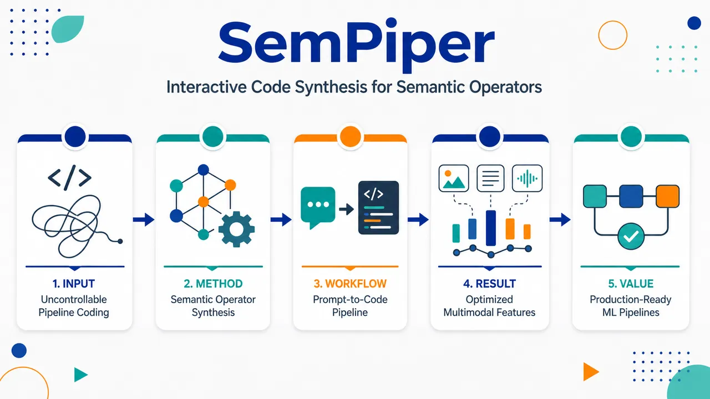
研究问题真实机器学习流水线中，数据清洗、特征工程、多表集成和多模态处理高度繁琐；普通聊天式LLM代码助手只能粗粒度生成脚本，难以控制单个数据操作、难以检查输出、难以优化性能，也不适合生产推理阶段频繁调用LLM。创新方法SemPiper将自然语言声明式“语义数据算子”嵌入标准Python ML流水线：开发者只描述要做什么，如填补制造商、解析艺术品年代、从房屋图像提取建筑特征；系统在训练阶段结合数据列、样本特征、下游任务、模型类型和流水线上下文合成专用Python代码。Aha点是：LLM不在推理时逐条处理数据，而是离线生成可审查、可运行、可替换、可进化优化的算子代码。工作流程输入为Python/数据科学库构建的多表或多模态ML流水线、训练数据、自然语言SemOp指令和下游任务目标；SemPiper在DataOps计算图中定位语义算子节点，调用LLM生成Python实现；系统检查语法、在样本数据上执行并验证输出形状；生成代码可调用pandas、scikit-learn、本地CPU规则、HuggingFace GPU模型或VQA模型；流水线训练下游模型并在验证集评估；优化器通过LLM代码突变和进化树搜索生成候选实现，以验证性能选择更优算子；最终推理阶段只执行生成代码和模型，不再调用LLM。关键结果演示覆盖3个端到端场景：电商欺诈检测中自动填补制造商、提取品牌风险、生成品牌价格与购物篮聚合特征；博物馆文化来源预测中将噪声日期字符串解析为BCE/CE时间区间，规范高基数对象名称；房地产价格预测中清洗sqft异常，并用BLIP-VQA从房屋图片提取楼层数、景观质量、建筑风格、车库容量等细粒度视觉语义特征。界面可展示计算图、生成代码、中间数据、运行时间、成本、LLM调用数和优化搜索树；进化搜索能发现比粗粒度图像特征更有效的语义丰富特征变体。应用价值该研究为数据科学家提供一种可控的LLM增强型流水线开发方式：把复杂数据准备和语义特征工程封装为图中的可视化节点，减少手写清洗与特征代码；生成代码可检查、测试、版本化并接入Python/scikit-learn生态；推理阶段摆脱在线LLM调用，降低延迟、成本和部署风险；适合电商风控、文化遗产数据集成、房地产估价等需要表格、文本、图像融合的生产级ML场景。第一部分：核心概览 (Overview)
SemPiper展示了SemPipes编程模型的交互式实现：在标准Python机器学习流水线中嵌入声明式、LLM驱动的语义数据算子，训练阶段按数据、指令和流水线上下文合成专用Python代码，推理阶段不再调用LLM。其地位在于把语义查询处理中的LLM算子思想迁移到表格/多模态ML流水线工程，并通过可视化界面呈现代码合成、算子检查与进化式优化过程，强调可控、可优化、可生产集成。
---
第二部分：结构化快速回顾
《SemPiper: Interactive Code Synthesis for Semantic Operators in Machine Learning Pipelines》（None，）
背景
机器学习流水线需要大量数据准备、特征工程、多源集成、清洗、编码和后处理，真实生产环境中通常涉及数据湖、仓库、日志、多表关系与非结构化数据。聊天式LLM编程助手虽能生成代码，但控制粒度粗、行为难预测、代码难优化，尤其不适合反复迭代的数据中心型ML流水线开发。
方法
SemPipes将标准Python ML流水线扩展为包含semantic data operators / SemOps的声明式模型。开发者用自然语言描述要完成的数据操作，系统在训练阶段依据输入数据特征、用户指令、下游任务、模型类型和流水线上下文合成算子实现。SemPiper作为交互式演示界面，可显示流水线计算图、生成代码、中间数据、成本、运行时间、验证性能以及进化搜索轨迹。
结果
演示覆盖三个端到端场景：电商欺诈检测、多模态博物馆艺术品文化来源预测、多模态房地产价格预测。展示的算子包括sem_fillna、sem_clean、semᵣₑfine、semₑₓₜᵣₐct_features、sem_gen_features、semₐgg_features等。示例实现涉及KNNImputer、facebook/bart-large-mnli、google/flan-t5、Salesforce/blip-vqa-base、CatBoost、FT-Transformer、TabPFNRegressor等组件。
讨论
关键设计差异在于SemPipes不是在推理时让LLM逐条处理数据，而是用LLM在训练时生成可执行代码。该方式将LLM调用次数压缩到与语义算子数量线性相关，并允许通过常规Python生态、scikit-learn风格接口和skrub DataOps图进行集成、检查与重写。
局限
给定版本是演示论文，缺少系统性定量评估：没有报告跨数据集的平均性能提升、统计显著性、消融实验、错误率、代码安全审计结果或与AutoML/Agent系统的严格基准比较。优化方法虽提到Monte Carlo Tree Search等策略，但未给出搜索预算、节点数、收敛曲线或稳定性分析。
结论
SemPiper证明了以声明式语义算子 + 训练时代码合成 + 进化式验证优化 + 可视化交互检查的方式，将LLM能力嵌入ML流水线开发是可行的。其价值集中在提升开发可控性、减少推理期LLM依赖、支持算子级别检查，并让复杂数据工程步骤更容易被合成、观察和迭代改进。
---
第三部分：逐章节冷凝解析 (Section-by-Section Condensing)
Abstract
ML流水线开发的痛点集中在数据准备与异构集成
机器学习流水线依赖大量数据准备、特征工程与异构数据源集成，开发过程繁琐且容易出错。摘要直接界定问题空间：*"Machine learning (ML) pipelines require extensive data preparation, feature engineering, and integration across heterogeneous sources, making them tedious and error-prone to develop."* 这里的核心对象不是单一模型训练，而是端到端ML工程链条中的数据操作复杂性。
聊天式LLM编程接口缺乏细粒度控制
LLM在编程辅助中表现出潜力，但聊天式接口对流水线行为的控制有限，且生成代码难以优化或进入生产系统。摘要给出的限制是：*"chat-based interfaces provide limited control over pipeline behavior and often produce code that is difficult to optimize or integrate into production systems."* 该判断将SemPipes与普通代码助手区分开来：目标不是生成任意脚本，而是生成可插入、可检查、可优化的流水线算子。
SemPipes的核心模型是声明式LLM语义数据算子
SemPipes通过declarative, LLM-powered semantic data operators扩展ML流水线，使开发者用自然语言指定数据中心操作，同时保留任意Python数据科学库的组合能力。摘要给出定义：*"SemPipes allows developers to specify high-level natural language instructions for data-centric operations, while seamlessly combining these operators with arbitrary Python code from standard data science libraries."* 因此，SemOps不是替代Python生态，而是嵌入Python流水线中的局部语义抽象。
算子实现在训练阶段按数据和上下文合成
SemPipes不是运行时让LLM处理每条样本，而是在pipeline training time合成专门实现。摘要中明确写道：*"For the semantic operators, it synthesizes specialized implementations at pipeline training time, conditioned on dataset characteristics and pipeline context."* 这带来两个工程后果：合成代码可复用，推理路径更接近传统ML系统。
SemPiper提供可视化交互界面
SemPiper展示计算图、合成代码与进化搜索优化轨迹。摘要说明：*"SemPiper, an interactive interface that visualizes computational graphs of the pipelines, synthesized operator implementations, and optimization trajectories produced by an evolutionary search procedure."* 该界面暴露的是SemPipes内部过程，而非只提供最终预测结果。
演示覆盖三个端到端场景
摘要指出参与者可探索三个完整案例、修改流水线、检查生成代码并观察优化过程：*"Attendees can explore three end-to-end scenarios, modify pipelines, inspect generated code, and observe how semantic operators are synthesized and iteratively optimized."* 场景数量为3，但摘要不提供样本量、精度指标或统计检验结果。
开放工件可用
源码、数据或相关工件已公开，链接为项目主页。摘要提供：*"The source code, data, and/or other artifacts have been made available at https://olgaovcharenko.github.io/sempiper/."* 这增强了演示论文的可复现性基础，但给定文本未列出具体数据规模和版本哈希。
---
1. Introduction
LLM代码合成正在改变软件开发，但存在控制与安全隐患
引言将LLM代码生成置于AI编程助手与自动程序生成谱系中，引用Anthropic 2025、Chan et al. 2025、Fang et al. 2025。关键表述为：*"Large language models (LLMs) are reshaping software development through advances in code synthesis."* 同时指出风险：*"these approaches raise concerns about control, safety, and unintended behavior"*，并进一步提到可能降低生产率：*"may even reduce developer productivity."*
聊天式交互的根本缺陷是粗粒度控制与难优化代码
引言将现有LLM编程工具的短板压缩为两个方面：控制不足和优化困难。原文表述为：*"A key limitation is that chat-based interaction only provides coarse control over the development process and produces code that is difficult to optimize."* 这里的“coarse control”意味着开发者只能通过自然语言回合间接影响输出，而不能把LLM能力限定在流水线图中的某个可验证节点。
真实ML流水线高度数据中心化、迭代化且重复
ML流水线在研究与实践中是核心对象，且特别适合检验LLM代码合成的控制问题。引言写道：*"the outlined issues are particularly important for iterative, data-centric, and repetitive machine learning (ML) pipeline development, which is central to ML research and practice."* 该定位将SemPipes聚焦在tabular ML pipelines和真实工程工作负载，而不是一般脚本生成。
生产ML数据源复杂且异构
真实流水线连接来自数据湖、仓库和日志文件的数据，并执行连接、清洗、增强与编码。原文列举：*"complex datasets originating from heterogeneous sources—including data lakes, warehouses, and log files, and must be joined, cleaned, augmented, and encoded with ML pipelines."* 这种背景解释了为什么单一线性scikit-learn Pipeline不够表达多表、多模态、多库操作。
ML流水线任务覆盖预测、集成、调试和后处理
引言强调流水线不仅是训练模型，还包含复杂逻辑和多库组合。原文为：*"These pipelines encompass tasks such as prediction, integration, debugging, and postprocessing, combine complex logic across multiple libraries."* 同时，生产执行成本也被指出：*"are costly to execute in production."*
数据准备仍是数据科学中最耗时且最不受欢迎环节
引言给出行业经验判断：*"Industry surveys consistently identify data preparation as the most time-consuming and least enjoyable aspect of data science."* 虽未提供具体调查样本量或百分比，但该句提供了研究动机：减少手写数据准备和特征工程负担。
语义查询处理为LLM算子集成提供先例
近期语义查询系统将SQL扩展为可调用LLM的语义算子，以处理多模态和非结构化数据。引言表述为：*"SQL is extended with semantic operators that invoke LLMs directly within database engines, enabling queries over multimodal and unstructured data."* 相关系统包括LOTUS、Palimpzest、BigQuery Generative AI、Cortex AISQL Engine。
SemPipes把语义算子思想迁移到表格ML流水线
SemPipes被定义为扩展表格ML流水线的编程模型，核心组件是declarative, LLM-powered semantic data operators / SemOps。原文为：*"we recently introduced SemPipes ... a novel programming model that extends tabular ML pipelines with declarative, LLM-powered semantic data operators (SemOps)."* 该贡献与数据库语义查询相连，但目标变为ML流水线中可训练、可预测的算子实现。
SemPipes遵循声明式范式：指定what而非how
开发者提供高层自然语言指令，系统合成具体实现。引言给出经典区分：*"SemPipes separates what should be computed from how it is executed: developers provide high-level natural language instructions for selected operations, while the system synthesizes their concrete implementations."* 这里的声明式含义不是SQL式固定语法，而是将某些数据操作意图用自然语言表达。
训练时生成代码，推理时不依赖LLM
SemPipes在训练阶段用LLM生成SemOps实现，依赖数据特征、用户指令和上下文。关键句为：*"During training, SemPipes uses LLMs to generate custom implementations for SemOps, conditioned on data characteristics, user instructions, and pipeline context."* 随后明确降低LLM调用：*"only requires a small number of LLM calls at training time, proportional to the number of semantic operators, and eliminates the reliance on LLMs during inference."*
可在交互式notebook环境中保留迭代开发能力
SemPipes被设计为半自动构建而不剥夺开发者迭代控制。原文为：*"This design enables semi-automated pipeline construction while preserving the ability to iteratively develop a pipeline in interactive notebook environments."* 这说明目标用户是数据科学家/ML工程师，而非完全自动化代理替代人类。
SemOps可通过LLM代码突变和进化搜索进一步优化
生成后的算子实现并非终点，可根据端到端验证性能进行优化。引言写道：*"operator implementations in a SemPipes pipeline can be further refined through LLM-based code mutation guided by evolutionary search to improve end-to-end predictive performance."* 该点连接代码合成与模型性能优化：fitness不是代码相似度，而是下游验证集表现。
SemPipes区别于LOTUS和Palimpzest：代码生成而非LLM数据处理
引言明确对比数据库系统方向：*"In contrast to systems like LOTUS ... and Palimpzest ... which rely on LLM-based data processing, SemPipes leverages code generation."* 区别在于LOTUS/Palimpzest通常让LLM参与数据项处理或查询算子执行；SemPipes则让LLM生成本地执行代码。
Figure 1概括三段式流程
图1说明标准Python ML流水线被语义算子扩展，训练阶段从数据、自然语言和上下文合成实现，验证集上可用进化搜索优化。图注原文为：*"SemPipes extends standard Python ML pipelines with semantic data operators that delegate selected data-centric tasks to LLMs."* 以及：*"can further optimize them on a validation set using evolutionary search guided by downstream model performance."*
SemPiper演示暴露SemPipes内部机制
SemPiper被描述为一个会“play SemPipes”的交互式demo。原文为：*"We present SemPiper, an interactive demo that 'plays SemPipes' and exposes its internals through a dedicated user interface."* 这意味着界面不是黑箱执行器，而是内部状态可视化工具。
三个演示场景覆盖欺诈检测、艺术数据集成和房价预测
引言列出三个端到端ML场景：*"fraud detection in e-commerce, integration of multimodal art data and prediction of house prices based on tables and images."* 三个场景覆盖表格、多表、文本、图像和回归/分类任务。
演示功能包括加载代码、计算图、算子检查和优化轨迹
SemPiper展示流水线代码、计算图、集成SemOps、训练时合成代码、自然语言条件、可修改代码和指令。原文写道：*"For each scenario, we present the pipeline code, its corresponding computational graph, and the integrated SemOps."* 以及：*"attendees can observe how operator implementations are synthesized at training time ... inspect the generated Python code."*
优化界面可显示候选实现搜索树与验证性能
进化优化部分显示候选算子实现、验证性能和搜索过程。引言说明：*"SemPiper visualizes different optimization trajectories, including a search tree of candidate implementations, along with their validation performance and the evolutionary search procedure that selects improved variants."* 给定文本未提供具体验证指标数值。
---
2. System Overview
SemPipes基于Python标准数据科学生态
系统概览指出ML流水线用Python定义，并支持pandas、NumPy、scikit-learn及兼容模型。原文为：*"ML pipelines are defined in Python using standard data science libraries, including pandas for tabular data manipulation, NumPy for numerical computation, scikit-learn for feature encoding, and models compatible with the scikit-learn ecosystem."* 这保证语义算子不是封闭DSL，而是和既有Python工程共存。
语义数据算子将选定数据操作委托给LLM
SemPipes扩展流水线的方式是加入semantic data operators。系统概览写道：*"SemPipes extends these pipelines with semantic data operators, which delegate selected data-centric operations to LLMs."* “selected”很关键：并非整个流水线都由LLM生成，而是局部数据操作可以声明式委托。
训练时拟合流水线触发算子代码合成
当流水线fit到训练数据时，SemPipes为语义算子合成自定义实现。原文为：*"During training, when a pipeline is fitted to the training data, SemPipes synthesizes custom implementations for the semantic operators based on data, prompt, and pipeline context."* 输入条件包括data、prompt、pipeline context三类。
合成代码可在CPU本地执行，也可调用本地GPU预训练模型
系统概览说明合成实现的运行形态：*"The synthesized code may execute locally on the CPU or leverage a pretrained model on a local GPU."* 因此SemOps既可生成pandas规则代码，也可生成调用HuggingFace等模型的特征提取代码。
算子实现可在验证集上调优
一旦流水线定义完成，SemOps实现可用验证集进一步优化。原文：*"Once a pipeline is defined, the implementations of its semantic operators can be tuned on a validation set."* 这里优化目标不是单个算子的局部准确率，而是下游模型验证性能。
进化搜索以验证性能作为适应度函数
SemPipes使用进化搜索策略，例如Monte Carlo Tree Search，以downstream validation performance作为fitness。原文为：*"SemPipes performs evolutionary search under a given search policy (e.g., Monte Carlo tree search), using downstream validation performance as the fitness function."* 这意味着算子变异是否保留，取决于端到端预测效果。
代码突变通过反思式提示与树状记忆完成
优化期间，算子实现会借助先前分数和树状记忆进行迭代突变。系统概览写道：*"operator implementations are iteratively mutated via reflective prompting using prior performance scores and a tree-structured memory."* “reflective prompting”暗示LLM在生成新代码时会利用历史失败/成功反馈。
实现基础是skrub DataOps
SemPipes建立在skrub DataOps流水线之上。原文为：*"SemPipes builds on skrub DataOps pipelines, a lightweight abstraction for multi-table ML pipelines over dataframes."* DataOps提供多表dataframe流水线抽象，而非只处理单表线性变换。
DataOps把流水线表示为计算图
DataOps的关键能力是图表示、惰性执行和重写。原文：*"DataOps represents pipelines as a computational graph of data operations and dependencies, enabling lazy execution and pipeline rewriting."* 这为SemPiper的可视化计算图和算子替换提供底层结构。
DataOps比标准scikit-learn Pipeline表达能力更强
标准scikit-learn Pipeline通常是单表线性变换链，DataOps则将多表dataframe操作纳入统一预测器。系统概览写道：*"Unlike standard scikit-learn pipelines that are restricted to a linear sequence of single-table transformations, the DataOps abstraction elevates the entire pipeline, including multi-table dataframe operations, into a unified scikit-learn-style predictor with fit and predict methods."*
SemOps作为scikit-learn风格估计器嵌入计算图
SemPipes与skrub集成的方式是将语义算子实现为估计器节点。原文为：*"SemPipes integrates semantic data operators as scikit-learn-style estimators within the skrub computational graph."* 因此SemOps可获得fit/predict语义和流水线组合能力。
SemOps覆盖五大类别和九个算子
表1列出SemPipes的语义算子：数据清洗包括sem_fillna、sem_clean、semᵣₑfine；特征提取与生成包括semₑₓₜᵣₐct_features、sem_gen_features、semₐgg_features；数据增强包括semₐᵤgment；参数化包括semₛₑₗₑct、sem_choose。表题为：*"Semantic data operators in SemPipes."* 类别覆盖从缺失值填补到特征聚合、增强和选择决策。
算子特定代码合成依赖输入数据、自然语言和流水线上下文
SemPipes在训练时为每个算子合成实现，条件包括输入数据特征、自然语言指令、下游任务和模型类型。原文：*"SemPipes synthesizes operator implementations at training time, conditioned on input data characteristics, natural language instructions, and pipeline context, including the downstream task and model type."* 这使同一个sem_gen_features在欺诈检测和房价预测中可能生成完全不同代码。
不同算子类型生成不同执行策略
特征生成通常生成CPU上的pandas代码；多模态特征提取可能调用本地GPU上的预训练模型。系统概览写道：*"for feature generation, SemPipes produces CPU-based pandas code; for multimodal feature extraction, SemOps leverage pretrained models on a local GPU, e.g., HuggingFace models in zero-shot mode."*
LLM调用次数与语义算子数量线性相关
训练时仅需少量LLM调用，且调用数与算子个数线性相关。原文：*"This code synthesis approach only requires a few LLM calls at training time, whose number is linear in the number of semantic operators."* 该性质是成本和延迟控制的关键，但文本未报告实际调用次数均值或价格。
推理阶段完全执行生成代码，不再调用LLM
系统概览明确指出：*"During inference, the generated operator code is executed without any further LLM involvement."* 这降低了推理延迟、外部API依赖和数据隐私风险，也让部署路径更接近常规Python模型服务。
算子中心设计支持细粒度验证
SemPipes可检查语法并在数据样本上执行算子，验证算子特定输出约束。原文：*"The operator-centric design enables fine-grained validation of synthesized code."* 以及：*"Beyond syntax checking via parsing, SemPipes executes each operator on a data sample and verifies operator-specific output constraints, such as the expected shape of the resulting dataframe."*
传统手动优化数据操作的过程被自动化
系统概览描述传统流程：选择目标操作、重写代码、集成库、重跑验证。原文：*"data scientists select a target operation (e.g., feature generation), rewrite its code, potentially integrate external libraries, and rerun the pipeline on a validation set to assess performance improvements."* SemPipes试图自动化这一闭环。
优化过程生成候选实现、集成流水线并评估验证性能
SemPipes通过LLM突变代码，并用树状进化搜索导航候选空间。原文：*"the system generates a set of candidate implementations by mutating the current code, integrates each candidate into the pipeline, and evaluates the generated pipeline variant on a validation set."* 选择依据是下游性能影响：*"prioritizes promising code variants based on their impact on downstream model performance."*
---
3. Demonstration Details
SemPiper界面分为Pipeline tab和Optimizer tab
图2描述web界面：Pipeline页用于加载管线、选择LLM和temperature、执行、探索计算图与检查代码；Optimizer页用于探索进化生成的变体。图注写道：*"In the Pipeline tab, attendees load one of three provided pipelines or implement their own using any Python libraries."* 以及：*"In the Optimizer tab, attendees explore evolutionarily generated, evaluated pipeline variations."*
Pipeline tab支持选择LLM与temperature
图2说明用户可设置生成模型和采样温度：*"attendees select an LLM and temperature and execute the pipeline."* 这表示SemPiper可观察不同LLM配置对算子代码合成的影响，但文本只给出示例模型gemini-2.5-flash，未比较不同temperature的量化效果。
执行期间可交互探索计算图
图2指出：*"During execution, the computational graph of the pipeline can be interactively explored."* 这与skrub DataOps的图抽象直接相关，使用户能看到多表连接、特征处理、SemOps和模型训练之间的依赖关系。
界面暴露生成代码、中间数据、性能、运行时间和成本
图2说明用户可检查多种内部状态：*"attendees can deeply inspect the synthesized operator code, data intermediates, model performance, runtime, and cost of the pipeline."* 因此SemPiper既是演示器，也是调试和审计工具雏形。
演示提供源码、数据集和web界面
演示章节提供GitHub链接：*"We provide the source code, datasets, and the web-based SemPiper interface at https://github.com/OlgaOvcharenko/sempiper."* 与摘要项目页共同构成工件入口。
标准演示流程包含四步
演示流程包括：介绍场景和代码、执行并合成SemOps、修改指令/代码、展示优化器。章节写道：*"We introduce the scenario, the pipeline code, its corresponding computational graph, and semantic data operators."* 之后：*"Attendees first execute the pipeline with SemPipes, to interactively synthesize its SemOps implementations by a selected LLM during training."*
用户可修改自然语言指令和流水线代码
SemPiper允许交互式实验：*"attendees can modify the natural language instructions of the SemOps and rewrite the pipeline code, to experiment with synthesizing new or improved operator implementations."* 这体现苏格拉底式“人控制意图，系统合成实现”的开发循环。
优化器展示候选实现、验证性能、LLM调用、成本和时间
演示章节指出：*"Attendees can compare operator code, trace performance improvements, and inspect the cost, number of LLM calls, and time used for to run the whole pipeline and separate operators."* 该句说明界面记录多维运行信息，但给定文本没有列出具体费用或耗时数值。
---
Interactive Code Synthesis
#### (a) Fraud Detection on Multi-Table Retail Data
欺诈检测场景是二分类、多表零售数据任务
第一个场景训练二分类器识别欺诈购物篮。原文为：*"The first scenario is a fraud detection pipeline that trains a binary classifier to identify fraudulent shopping baskets."* 输入包括两个表：*"baskets, which contains fraud labels, and products, which describes the actual products purchased within each basket."*
预处理结合传统Python库和语义算子
该流水线使用NLTK、unidecode和SciPy做文本标准化与价格统计，再接SemOps和CatBoost。原文：*"The ML pipeline performs several preprocessing steps using popular Python libraries such as NLTK and unidecode for textual normalization and SciPy for price statistics."* 最终模型为：*"a tree-based CatBoost classifier."*
欺诈检测场景展示四类语义算子
该场景突出四个SemOps：sem_fillna、semₑₓₜᵣₐct_features、sem_gen_features、semₐgg_features。原文写道：*"This scenario highlights four semantic operators."* 这些算子覆盖缺失值填补、品牌语义特征提取、额外特征生成和产品到购物篮层面的聚合。
sem_fillna从标题和描述推断缺失制造商
缺失产品制造商字段通过产品标题和描述等属性推断。原文为：*"sem_fillna imputes missing product manufacturer values by inferring them from attributes such as the title and description."* 这属于语义填补，比均值/众数填补更依赖文本上下文。
semₑₓₜᵣₐct_features提取品牌欺诈相关特征
该算子从品牌名提取isₗᵤₓᵤᵣy_brand、isₖₙₒwn_brand、brandᵣᵢₛₖₛcore。原文：*"semₑₓₜᵣₐct_features extracts additional information from product brand names (isₗᵤₓᵤᵣy_brand and isₖₙₒwn_brand, and brandᵣᵢₛₖₛcore) indicating the potential brand’s association with fraud."* 这些特征体现领域知识：品牌知名度、奢侈属性和风险评分可能与欺诈行为相关。
sem_gen_features和semₐgg_features负责生成与聚合特征
sem_gen_features合成额外特征，semₐgg_features将产品级数据聚合为篮子级特征。原文：*"sem_gen_features synthesizes additional features. Finally, semₐgg_features aggregates the product-level data into basket-level features."* 下游CatBoost使用篮子级特征：*"The basket-level features are used to train the tree-based fraud detection model."*
gemini-2.5-flash示例生成KNNImputer、零样本分类和文本生成模型代码
以Google gemini-2.5-flash为后端LLM，sem_fillna会评估候选填补策略并选择非参数KNNImputer。原文：*"With Google’s gemini-2.5-flash as backing LLM, SemPipes synthesizes operator implementations in this pipeline as follows."* 以及：*"it automatically evaluates several candidate imputation strategies and selects a non-parametric KNNImputer the best-performing model."*
品牌语义抽取调用facebook/bart-large-mnli和google/flan-t5-base
semₑₓₜᵣₐct_features生成的代码调用零样本分类模型和文本生成模型。原文：*"The generated extraction code for semₑₓₜᵣₐct_features is applies a zero-shot classification model facebook/bart-large-mnli, and a text generation model google/flan-t5-base that assigns a risk score."* 这说明SemOps可合成使用外部深度模型的Python代码。
生成特征包括avg_brand_cashₚᵣᵢce和brand_frequency
sem_gen_features生成品牌价格和频率相关特征。原文：*"sem_gen_features calculates avg_brand_cashₚᵣᵢce and brand_frequency."* 这些是可解释的表格特征，通常对树模型有直接贡献。
聚合特征包括每个购物篮的现金总价
semₐgg_features生成篮子层面的统计。原文：*"semₐgg_features computes aggregate features such as the total cash price per basket."* 该操作将多行产品记录转化为单个篮子样本的输入特征。
---
#### (b) Cultural Origin Prediction for Multimodal Museum Catalog Data
博物馆场景预测艺术品文化来源
第二个场景将表格数据和非结构化文本描述结合，为大都会艺术博物馆藏品预测文化来源。原文：*"The second scenario demonstrates a museum artifact analytics pipeline that combines tabular data with unstructured textual descriptions to label the artworks from the Metropolitan Museum of Art with their cultural origin."*
输入表包含艺术品属性与自由文本描述
流水线作用于artworks表。原文：*"The pipeline operates on the artworks table containing attributes describing a piece of art, together with free-text descriptions."* 这属于文本增强的表格分类任务。
先用spaCy抽取轻量NLP特征
流水线先用spaCy抽取命名实体、名词短语和形容词密度。原文：*"We first enrich the table with lightweight natural language processing features extracted using the spaCy library, including named entities (people, locations, cultural groups, and dates), noun phrases, and adjective density."* 这显示传统NLP与SemOps是组合关系。
语义算子将噪声博物馆元数据转为结构化特征
semₑₓₜᵣₐct_features、sem_gen_features和semᵣₑfine用于处理日期、生成预测特征、规范化对象名称。原文：*"the pipeline applies several semantic data operators to transform the noisy museum metadata into structured features."* 下游模型使用FT-Transformer：*"used to train an FT-Transformer classifier, an adaptation of the Transformer architecture for tabular data."*
semₑₓₜᵣₐct_features转换异构日期字符串
该场景第一个算子把复杂日期表达转为结构化时间表示。原文：*"semₑₓₜᵣₐct_features converts heterogeneous date strings into a structured temporal representation."* 示例输出字段包括yearₛₜₐᵣₜ、startᵢₛ_bce、yearₑₙd、endᵢₛ_bce。
sem_gen_features生成额外预测特征
第二个算子丰富数据集。原文：*"sem_gen_features enriches the dataset with additional predictive features."* 后续示例包括文本长度、艺术品持续时间、国家信息和艺术家国籍信息。
semᵣₑfine规范化高基数对象名称
第三个算子标准化原始博物馆对象名，降低不一致和高基数问题。原文：*"semᵣₑfine standardizes the raw museum object names to address inconsistencies and high-cardinality values to produce cleaner categorical representations."* 这是典型表格ML中类别清洗任务。
日期抽取结合google/flan-t5-small与规则解析
以gemini-2.5-flash为后端LLM时，生成代码结合HuggingFace模型与规则。原文：*"semₑₓₜᵣₐct_features extracts the date values yearₛₜₐᵣₜ, startᵢₛ_bce, yearₑₙd, and endᵢₛ_bce by combining a HuggingFace model google/flan-t5-small with rule-based parsing."*
生成代码要求模型从原始日期字符串输出JSON
日期代码提示模型提取结构化字段。原文：*"The synthesized code prompts the model to extract structured information from the raw date string, producing JSON fields such as century and start/end years."* 这说明SemOps可将自然语言日期解析为机器可用结构。
正则和确定性规则负责约束世纪与BCE/CE区间
模型输出并非直接信任，而是用规则修正。原文：*"These outputs are then refined using regular expressions and deterministic rules to enforce precise interval conventions for centuries and BCE/CE ranges."* 这是LLM+规则混合实现，降低自由生成的不确定性。
sem_gen_features删除无关列并生成文本、时间和信息存在性特征
示例生成的特征包括文本长度、艺术品持续时间、has_countryᵢₙfo和hasₐᵣₜᵢₛₜₙₐₜᵢₒₙₐₗᵢₜyᵢₙfo。原文：*"sem_gen_features removes irrelevant columns and creates new features from existing attributes, including text length features, temporal features derived about artwork duration, and features such as has_countryᵢₙfo and hasₐᵣₜᵢₛₜₙₐₜᵢₒₙₐₗᵢₜyᵢₙfo."*
semᵣₑfine用正则和映射字典规范对象名称
对象名称标准化通过规则和字典实现。原文：*"semᵣₑfine standardizes the raw museum object names using regular expressions and correspondence dictionaries."* 该实现避免完全依赖LLM逐项清洗。
---
#### (c) Price Prediction on Multimodal Real Estate Data
房地产场景是表格+图像的回归任务
第三个场景结合表格和图像数据预测加州房屋价格。原文：*"The third scenario demonstrates a house price prediction pipeline that combines tabular and image data to estimate the price of houses in California."* 任务类型明确为回归：*"The scenario is a regression task, predicting the house selling price."*
输入包括facts、cities和images三张表
数据源为三张表。原文：*"The pipeline consumes three input tables: facts, containing house-level attributes such as price, square footage, and room counts; cities, containing location information; and images, containing image metadata and file paths."* 这体现多表与多模态融合。
流水线连接表后执行手动预处理和特征工程
连接后先做传统手工处理，再向量化和建模。原文：*"After joining the tables, the pipeline performs several manual preprocessing and feature engineering steps."* 然后使用skrub的TableVectorizer：*"The enriched dataset is then vectorized using the TableVectorizer from the skrub library."*
下游回归模型为TabPFNRegressor
向量化后的数据进入表格基础模型。原文：*"consumed by the tabular foundation model TabPFNRegressor."* 最后还使用DuckDB做城市级统计：*"predicted prices are combined with the original data and analyzed using DuckDB to compute city-level statistics."*
房地产场景展示sem_clean、semₑₓₜᵣₐct_features、sem_gen_features
该场景突出三个语义算子。原文：*"This scenario highlights three semantic operators."* 分别负责面积异常清洗、图像属性提取、额外预测特征生成。
sem_clean检测并纠正sqft列异常
第一个算子针对平方英尺字段异常。原文：*"sem_clean is instructed to detect and correct anomalies in the sqft column."* 生成实现使用IQR封顶：*"The code for sem_clean cleans the sqft column by removing outliers through IQR-based capping."*
图像特征提取利用房屋外观、住房领域知识和加州地理背景
semₑₓₜᵣₐct_features从房屋图像中提取外观相关属性。原文：*"semₑₓₜᵣₐct_features derives features from house images, with respect to the house exterior, leveraging domain knowledge about housing characteristics and geographic context in California."* 该设定展示SemOps处理图像路径和本地视觉模型的能力。
图像特征提取调用Salesforce/blip-vqa-base
生成的semₑₓₜᵣₐct_features实现使用视觉问答模型。原文：*"The synthesized implementation of the semₑₓₜᵣₐct_features operator applies the popular visual question answering model Salesforce/blip-vqa-base to extract image-based attributes."* VQA模型将图像转化为结构化房屋属性特征。
sem_gen_features生成四个属性和城市上下文特征
生成特征包括totalᵣₒₒₘₛ、sqftₚₑᵣ_bath、cityₐᵥgₛqft、cityₐᵥg_bed。原文：*"sem_gen_features synthesize four features (totalᵣₒₒₘₛ, sqftₚₑᵣ_bath, cityₐᵥgₛqft, and cityₐᵥg_bed), which capture both property-level characteristics and local housing context."* 这些特征融合个体房屋信息和城市统计信息。
---
Evolutionary Optimization of Semantic Operator Code
优化器界面展示进化式树搜索过程
最终演示部分聚焦SemPipes进化搜索运行。原文：*"The final part of the demonstration centers on an interactive optimizer interface for exploring SemPipes’ evolutionary tree search runs."* 可视化策略包括MCTS：*"under different strategies, such as Monte Carlo Tree Search."*
搜索树节点暴露代码与验证集预测性能
每个候选节点包含合成代码和验证性能。原文：*"Each node in the search tree exposes the synthesized code and its predictive performance on the validation set."* 用户因此可追踪优化器如何搜索代码空间：*"allowing attendees to trace how the optimizer navigates the search space and discovers on best-performing pipeline variants."*
房价任务示例显示VQA特征提取不断细化
示例中，优化器使用Salesforce/blip-vqa-base并改进图像特征抽取内容。原文：*"for a house price prediction task, attendees can observe how the optimizer leverages the Salesforce/blip-vqa-base visual question answering model and refines which features to extract."*
最佳变体提取更语义丰富的房屋图像特征
最佳流水线提取numberₒfₛₜₒᵣᵢₑₛ、landscape_quality、architecturalₛₜyle、garage_capacity、drivewayₛᵢze等细粒度特征。原文：*"The best-performing pipeline extracts semantically rich features such as numberₒfₛₜₒᵣᵢₑₛ, landscape_quality, architecturalₛₜyle, garage_capacity, and drivewayₛᵢze."*
较弱变体依赖更粗粒度图像特征
较弱实现只使用hasᵥᵢₛᵢble_garage和exterior_condition等粗粒度特征。原文：*"weaker variants relied on coarser features like hasᵥᵢₛᵢble_garage and exterior_condition."* 该对比支持一个关键观点：同样使用视觉模型，问题设计和特征粒度会显著影响下游预测效果；但文本未给出具体RMSE、R²或MAE数值。
---
References
参考工作覆盖AI编程助手、ML Agent、语义查询处理和生产ML流水线
引用包括Claude Code、MLE-bench、MLZero、LOTUS、Palimpzest、BigQuery Generative AI、Cortex AISQL、生产ML数据管理、GitHub notebooks分析、表格基础模型等。参考列表中可见：*"Claude Code: AI-powered coding assistant"*、*"MLE-bench: Evaluating Machine Learning Agents on Machine Learning Engineering"*、*"Semantic Operators and Their Optimization"*、*"Production machine learning pipelines: Empirical analysis and optimization opportunities."*
直接基础工作是SemPipes arXiv 2602.05134
SemPiper建立在SemPipes论文之上，参考项给出：*"SemPipes – Optimizable Semantic Data Operators for Tabular Machine Learning Pipelines. arXiv:2602.05134."* 因此当前文本主要是演示系统论文，而非完整算法评估论文。
---
第四部分：深度理解与语言支持 (Understanding & Nuance)
1. 术语解析
Semantic data operators / SemOps
语境含义：嵌入ML流水线中的语义数据操作节点，由自然语言指令定义操作目标，再由LLM生成具体Python实现。它不同于普通函数，因为其实现不是人工预先写死；也不同于纯LLM调用，因为最终可变成可执行、可检查、可优化的代码。
微妙差别：
- “semantic”强调操作依赖语义理解，如从品牌名判断奢侈属性、从图像判断建筑风格、从博物馆日期字符串解析BCE/CE。
- “operator”强调它是流水线图中的结构化节点，有输入输出约束和可替换实现。
Declarative
语境含义：开发者说明“要计算什么”，例如“从房屋外观图像中提取与加州房价相关的特征”，而不必手写“如何调用VQA模型、如何解析输出、如何拼接DataFrame”。
微妙差别：这里的声明式不是传统SQL那种严格形式语言，而是自然语言驱动的局部声明式编程。其风险在于自然语言可能含糊，所以系统需要结合数据样本、下游任务和验证约束。
Conditioned on dataset characteristics and pipeline context
语境含义：代码合成不是只看一句prompt，而是同时看数据列、数据类型、样本分布、缺失情况、下游任务、模型类型、流水线上下游节点。
微妙差别：“conditioned on”在ML语境中表示生成过程受这些条件约束。SemPipes的关键不是“LLM会写代码”，而是“LLM写出的代码贴合当前数据和任务”。
Evolutionary search
语境含义：把一个SemOp实现视为候选个体，通过LLM突变生成新版本，用验证集性能作为适应度，逐步保留或扩展更有希望的候选。
微妙差别：这不是梯度优化，因为代码不可微；也不是简单随机试错，因为搜索树会保留历史结构和性能反馈，可使用Monte Carlo Tree Search等策略。
Reflective prompting
语境含义：LLM在生成新代码时会参考已有候选代码、历史表现分数和失败原因，以“反思”方式提出改进。
微妙差别：“reflective”并不意味着模型真正理解因果机制，而是提示工程中显式把过去结果输入给LLM，让下一轮生成受性能反馈影响。
---
2. 疑难查证：复杂概念解释
为什么“训练时代码合成、推理时不调用LLM”很重要？
普通LLM数据处理系统可能在推理时对每条记录调用LLM，例如每个商品描述都发给模型判断品牌风险。这会产生三个问题：成本随数据量线性增长、延迟高、输出不稳定且难部署。
SemPipes采用不同路径：训练阶段让LLM根据数据和任务生成一个Python算子，例如调用KNNImputer、pandas聚合、HuggingFace模型或正则规则。之后推理时执行这段代码。这样LLM的角色从“在线决策器”变成“离线程序合成器”。这带来更好的工程可控性：代码能审查、缓存、测试、版本化，也能在本地CPU/GPU运行。
为什么SemPipes适合ML流水线而不只是数据库查询？
数据库语义查询系统关注“让SQL能处理非结构化/多模态语义条件”，例如用LLM判断一段文本是否满足某条件。ML流水线则更复杂：一个早期清洗/特征工程步骤会改变下游模型训练效果。SemPipes把算子优化目标设为下游验证性能，因此同一个特征生成算子不是追求局部“看起来合理”，而是追求让最终分类器/回归器表现更好。
为什么进化搜索适合优化代码算子？
代码空间是离散、复杂、不可微的。无法像训练神经网络一样对“把hasᵥᵢₛᵢble_garage换成garage_capacity”求梯度。进化搜索把每段代码当作候选方案，通过变异生成新代码，再运行流水线测验证性能。验证集性能高的节点更可能继续扩展。MCTS进一步平衡“利用已知好分支”和“探索未知分支”。
为什么算子级验证比整段代码生成更安全？
如果LLM一次性生成完整ML项目，错误可能出现在数据读取、连接、特征工程、训练、评估、后处理任何位置，难定位也难约束。SemOps把LLM生成限定在某个算子节点，并检查语法、样本执行、输出形状等约束。例如semₐgg_features应输出篮子级DataFrame，semₑₓₜᵣₐct_features应产生指定结构列。局部边界使错误更容易发现和隔离。
---
第五部分：创新评估与关联 (Synthesis & Novelty)
1. 创新性判断
相对于聊天式代码助手：从自由对话转向结构化流水线算子
近2–5年的代码助手主要通过聊天或IDE补全生成代码，开发者需要反复描述、复制、调试和整合。SemPiper/SemPipes的新颖性在于把LLM生成限制在ML流水线图中的显式语义算子上，使每个生成结果有输入、输出、上下文和验证目标。解决的问题是：普通聊天式生成难以控制、难以局部优化、难以纳入生产流水线。
相对于AutoML/ML Agent：不是完全替代人，而是增强数据操作节点
MLE-bench、MLZero等方向强调端到端自动机器学习工程代理。SemPipes更保守也更工程化：保留Python代码、标准库、手动流水线结构，只把特定数据操作交给SemOps。新颖性在于半自动、可插拔、算子级合成，适合现实中数据科学家已有代码库和notebook迭代习惯。
相对于LOTUS、Palimpzest等语义查询系统：从LLM处理数据转向LLM生成代码
LOTUS和Palimpzest关注声明式查询中的AI算子优化，通常LLM直接参与数据处理。SemPipes借鉴“语义算子”概念，但转向ML流水线，并强调训练时生成代码、推理时执行代码。解决的问题是LLM在线处理数据成本高、延迟高、难部署、难与scikit-learn生态结合。
相对于传统特征工程工具：将自然语言、数据上下文和下游性能结合
传统自动特征工程通常基于预定义变换库、类型推断或统计规则。SemPipes允许自然语言表达领域语义，例如品牌风险、文化来源、建筑风格，并结合数据集特征与下游模型性能生成/优化代码。新颖点在于把语义先验引入可执行特征工程，同时用验证性能闭环筛选。
相对于单次LLM代码生成：加入进化式性能优化
很多LLM代码生成系统停留在“一次生成、人工调试”。SemPipes把生成代码视为可搜索对象，通过LLM突变、树状记忆、验证集fitness持续改进。新颖性在于把程序合成、AutoML式验证优化和语义算子封装结合起来，尤其适合不可微的特征工程和多模态属性抽取选择。
未完全解决的问题
演示版本尚未系统回答以下关键科学问题：
- 生成代码在不同LLM、temperature和数据规模下的稳定性。
- 算子合成错误、数据泄漏、安全漏洞和依赖污染的发生率。
- 与人工专家、AutoML、Featuretools、普通LLM助手、LOTUS/Palimpzest式在线LLM处理的量化差异。
- 进化搜索的计算预算、收敛速度、过拟合验证集风险。
- 多模态模型调用在本地GPU环境中的部署成本和隐私边界。
- 21
- 22
-
23
💡 亮点：在量子硬件上直接模拟马约拉纳动力学。
- 24
-
25
💡 亮点：杨纳斯 TMDC 单层呈现 CDW 与超导交织。
-
26
💡 亮点：钽被评估为低损耗超导量子电路基材。
-
27
💡 亮点：NQS 处理短程与光子长程相互作用并存。
- 28
- 29
-
30
💡 亮点：A2VX3 家族可形成罕见绝缘铁磁一维链。
-
31
💡 亮点：BHZ 模型揭示非晶量子自旋霍尔相边界。
-
32
💡 亮点：镜像-时间反演对称性决定反铁磁隧穿极化。
- 33
-
34
💡 亮点：Al-Cr-Mo-W 高熵薄膜展现高阻自旋霍尔响应。
- 35
- 36
- 37
-
38
💡 亮点：QuadNet 提供耦合振荡器网络基准数据。
- 39
- 40
- 41
-
42
💡 亮点：杂质外禀机制可增强交变磁体自旋分流。
- 43
- 44
- 45
- 46
- 47
- 48
- 49
- 50
- 51
-
52
💡 亮点：PPO 比率裁剪未必是合适信赖域。
- 53
-
54
💡 亮点：自编码迁移学习降低高保真气动样本需求。
-
55
💡 亮点：可诱导性嵌入 MV-FBSDE 深度求解器。
- 56
- 57
-
58
💡 亮点：嵌套均质化压缩木质部多尺度流动结构。
- 59
- 60